Emacs: 神的编辑器 Emacs
- TAGS: Emacs
上次修订和导出时间为 2026-01-07 00:53:53 +0800 字数为 69899.
Emacs 是一个先进的、可扩展的、可定制的、自记录的编辑器。根据个人经验 我把学习过程分为以下三个阶段：
作为文本编辑器
编辑器 用来做什么? 编辑文本 写代码 写书 收发邮件 浏览网页 看图片 看视频 …
从 编辑文本 开始 : 需要什么?
- Move|Jump 移动或跳转 :
- 要在 Buffer中移动 : 字符 单词 行
- 跳到 不同的 Window中 或 Frame中
- Edit 编辑
- 选中 : 选择需要编辑的部分文本
- 插入
- 删除
- 复制 粘贴 剪切
- 撤销 重做
- 处理 : 执行一些特定的功能 如 转换大小写
- Search 搜索
- Repeat 重复
- Assist
- Manipulating pairs : smartparens
- Narrowing
- Folding
Emacs 是基于文本的 所以 对文本的操作 可以贯穿各种场景 然后根据特定的需要 使用不同的模式 提供更多的功能
- 主模式
- Org
- Dired
- 次要模式
- abbrew
再到 我要写代码 建立开发环境 需要什么?
- Completion : company
- Syntax Checking : flycheck
- Format (style, highlight, indent )
- Navigation (tag, definition, symbols)
- Code Templates & Snippets : yasnippet
- Project : progectile, Speedbar
- Doc
- Enhancement Edit
- Assist
- Compilation
- Debugging
特定的语言 又需要什么?
- C
快捷键速记
先熟练光标移动：
C-a移至行首C-e移至行尾M-f移至单词右边M-b移至单词左边M-a句首M-e句尾C-M-f向前移动穿过一个平衡表达式C-M-b向后移动穿过一个平衡表达式
快速定位：
C-s向后查找C-r向前查找M-g g跳到特定的行M-<缓冲区-首M->缓冲区-尾
如果感兴趣入门手册里没提到的，可以试试这些键绑定：
C-M-@可以标记成对的特殊的字符内容，如“”内内容C-x h即mark-whole-buffer 选定全文件M-)移动到下一个 ) 后，删除它之前的缩进，然后在它之后缩进M-m到本行第一个非空字符M-^连接-前后行M-\删除连续-空格M-SPC以智能方式操作光标周围的空白。C-x C-t交换光标所在行和上一行- 调字号： 激活使用 C-x C-0 (重置)、 C-x C-= (放大)、 C-x C– (缩小) 、 C-x C-+(放大) , 再按放大 + 或者 = 、缩小 -、重置字号 0。
- 复制一行：
M-x duplicate-line - 执行外部命令：
s-L或者M-!或者M-x shell-command - 编译模式: 可以运行外部命令，收集外部程序输出，点击可以直接跳到相应位置
M-x compile执行命令grep -rn xxxx
移动 & 跳转
光标的定位 (屏幕可视范围内)
Buffer 缓冲区
左右移动
- 字符左右
- C-b 字符左(backward-char)
- C-f 字符右(forward-char)
- 单词左右
- M-b 单词后(backward-word)
- M-<left> 单词后(backward-word)
- M-f 单词前(forward-word)
- M-<right> 单词前(forward-word)
- M-b 单词后(backward-word)
- 行-首|尾
- C-a 行-首(beginning-of-line)
C-e 行-首(end-of-line)
而代码经常是有缩进的，但
C-a会直接移动到整个行首，并不能直接编辑开头的文字， 这种情况可使用M-m来移动到文字的开头。插件 mwim ，避免这个琐碎的小区别。
- 句子-首|尾
- M-a 句子-首(backward-sentence)
- M-e 句子-尾(forward-sentence)
- 段落-首|尾
- M-{|} == (backward|forward)-paragraph
- 环境-首|尾
- C-M-{a|e} {beginning|end}-of-defun 和段落-首尾一样效果
- 到本行第一个非空字符
- M-m == back-to-indentation
- 括号结构中的移动
- C-M-{n|p|u|d}, 即 forward-list|backward-list|backward-up-list|down-list 向 {前|后|上|下} 移动超过括号组 forward-list）。
上下移动
- 上|下
- C-p|n == (previous|next)-line
- 翻页-上|下
M|C-v == PgUp|PgDn | scroll-(up|down)-command
但 Emacs 会保留三行不会被翻过去，这样看起来更为舒服。
- 缓冲区-首|尾
M-<|> == (beginning|end)-of-buffer
注意这里需要同时按下 Meta 键、 Shift 键和逗号/句号键。
- 移动页
C-l
第一次按光标所在行在窗口中央，之后再按窗口最上面、窗口最下面，如此循环。
- 当前缓冲区可视区域-(Top|Center|Bottom)
M-r == move-to-window-line-top-bottom
按第一次——光标移动到窗口中间行；接着按第二次——光标移动到窗口最上面一行；接着按第三次——光标移动到窗口最下面一行
跳转
- N-行
M-g (g|M-g) == goto-line
跳到特定的行，
M-g M-g +加行号回车即可
函数定义跳转
M-.再使用M-,跳回原来位置如果是指向的是C语言的源代码，需要从官网下载源代码，添加src路径
http://gnu.mirrors.hoobly.com/emacs/
(setq find-function-C-source-directory "~/emacs-27.2/src")
包含Lisp代码的文件习惯上被称为`库`
Window 窗口
- 跳转 C-x o == other-window
Frame 框架
- M-x select-frame-by-name
插件
- Wind Move
- M-x windmove-(left|right|up|down)
- Ace Window
- M-x ace-window (Me: == S-o)
- Avy
- M-x avy-goto-(char|word-1|line)
补充
;; 设置 sentence-end 可以识别中文标点 (setq sentence-end "\\([。！？]\\|……\\|[.?!][]\"')}]*\\($\\|[ \t]\\)\\)[ \t\n]*")
文本编辑
- 选中 (标记) : 选择需要编辑的部分文本
- 插入
- 删除 剪切 复制 粘贴
- 撤销 重做
- 处理 : 执行一些特定的功能 如 转换大小写
- 特性 : 矩形区块
Mark 标记
速记-选中区域
方法1：拉去鼠标左键 方法2：Shift + 方向键 方法3：左键点击标记位置，右键点击光标位置 方法4： 1. 激活标记：C-@ 或者 C-空格 2. 用方向键/Emacs快捷键移动光标 或者 C-n 向下移动光标 C-x C-x 交换标记和光标的位置
选中 需要编辑的部分文本
- 标记
点
C-(<SPC>|@) == set-mark-command (激活)
在 emacs 中一个区域的范围是由2个点决定的。第一个点是标记(mark)， 任何在标记和光标之间的东西都是区域的一部分。在状态栏下面的 minibuffer中会有提示信息"Mark set" 。即使这个区域的高亮消失了， 那个标记还会存在在那里，还是能对标记和光标之间的内容进行操作。
C-g 取消标记。对于很多场景下C-SPC 快捷键被占用（输入法，Spotlight 等）
- C-@ C-@ (不激活 但进入标记环)
光标移动到别的位置（甚至以后学过之后，到别的文件），这时候按下 C-x C-SPC 或 C-u C-SPC，即可立刻跳转回刚刚的位置
段落
- M-h == mark-paragraph
说明：在不同模式下段落的范围不一样
- 缓冲区
- C-x h == mark-whole-buffer
- Mouse shift-selection
- Shift-<Mouse>
- 标记环 (Mark Ring : 标记的点 进入 标记环) [Global|Local]
- 最后标记点
- C-u C-@ (当前缓冲)
- C-x C-@ == pop-global-mark
- 列表
- 最后标记点
- 互换位置-插入点和标记点
- C-x C-x == exchange-point-and-mark
一些系统对有些键位会做映射。例如 macOS 就会将 C-/ 映射为 C-_ ， C-SPC 映射为 C-@。不影响日常使用，但是想覆盖键位时需要注意。
Special
- 标记 表达式
- C-M-@ == mark-sexp 可以标记成对的特殊的字符内容，如“”内内容
- 标记 定义
- C-M-h == mark-defun
范例：选定全文件
- 方法1：
- M-< 跳到文件头
- C-@ 设定标记
- M-> 跳到文件尾
- 方法2：
- C-x h 即mark-whole-buffer
Insert 插入
input输入
- 可见的(图形字符): a..z , 1..0, !..?
- 控制字符: <SPC>, <RET>, <TAB>, <DEL>, <ESC>, <F1>, <Home>, <LEFT>
插入空白行: <RET> | C-j | C-o
在光标所在行下方创建一个新的空行：
C-o；将光标所在前后所有连续空行变为一个空行：C-x C-o。
- 修饰键: <Control>, <META>
- 输入 对应 命令
- 非键盘: mouse(鼠标) (一般作为定位 特殊模式 拖拽绘制字符)
- 引用插入（输入一些看不见的字符）
- C-q == quoted-insert
- 不可见(非图形字符)
- <Ret>, C-l(分页符)
- 033 Enter (Ascii 八进制) = f(原样输出f)
- Unicode
- C-x 8 RET
- 速记 : C-x 8 C-h £
- ∑ (2211) ⤶ (2936)
拓展
Input Method 输入法
- 内置
- 触发 : toggle-input-medthod == C-\
- 切换 : select-input-medthod == C-u C-\ | C-x Ret C-\
范例：Tex α x₃ X³
\alpha α \Gamma Γ \rightarrow → \Leftarrow ⇐ \oplus ⊕ \int ∫ x_3 x₃ v^x vˣ
范例：greek-babel αΑ Γγ η
Αα Ββ Γγ Δδ Εε Ζζ Ηη Θθ Ιι Κκ Λλ Μμ Aa Bb Gg Dd Ee Zz Hh Jj Ii Kk Ll Mm Νν Ξξ Οο Ππ Ρρ Σσς Ττ Υυ Φφ Χχ Ψψ Ωω Nn Xx Oo Pp Rr Ssc Tt Uu Ff Qq Yy Ww
- 使用操作系统的 输入法 或 其它工具
Abbrev mode缩写模式
;; 别名 (setq-default abbrev-mode t) (define-abbrev-table 'global-abbrev-table '( ;; signature ("8jv" "jaspervincent") ;; Microsoft ("8ms" "Microsoft") )) ;; 输入8jv空格，就补全出jaspervincent 空格也可以换成非26个字母
- 来源 : 文件 | 其它缓冲
- C-x i == insert-file
- insert-buffer
删除 剪切 复制 粘贴
速记
C-w 剪切 M-w 复制 C-y 粘贴 M-y 从剪贴析中选择 C-k 剪切光标到行末 C-S-<backspace> 剪切光标所在行 S 为Shitf 键。等同于 C-a C-k C-k 用 C-k 和 C-S-<backspace>删除的内容会保留在剪贴板中，可以用C-y/M-y进行粘贴 单词操作: - <backspace>：向左删除字符 - C-<backspace>：向左删除单词(保存到剪贴板) - C-d/Delete：向右删除字符 - Alt-d：向右删除单词(保存到剪贴板)
删除(delete) |剪切(kill)
区别 : kill 会把kill掉内容放到 kill ring 里
注意，这里有“删除”和“移除“两种说法，”删除“对应于 "delete"，是真的删除，而“移除”对应于 "kill"，相当于“剪切”，之后可以再次插入到其它位置，即 "insert"，相当于粘贴。
- 删除(delete) | 剪切(kill)
- 区别 : kill 会把kill掉内容放到 kill ring 里。
- 注意，这里有“删除”和“移除“两种说法，”删除“对应于 "delete"，是真的删除，而“移除”对应于 "kill"，相当于“剪切”，之后可以再次插入到其它位置，即 "insert"，相当于粘贴。
- 字符|词 - 左|右
- delete-backward-char == <Del>
- delete-char == C-d
- 按下删除键（在 Emacs 中删除键写为 <backspace> ）即可删掉光标左侧的字符。如果想要删掉右侧的字符，就按下 C-d 键
- —
- backward-kill-word == (C|M)-<Del> 移除光标左侧一整个词
- kill-word == M-d 移除光标右边一整个词
- 行 - 右|左|整行
- 右: kill-line == C-k 移除右侧直到行结尾
- 左: C-u 0 C-k 或者 M-0 C-k
- 整: kill-whole-line == C-S-<backspace> 剪切光标所在行 S 为Shitf 键。等同于 C-a C-k C-k
- 句
- kill-sentence == M-k 移除右侧直到句子结尾
- backward-kill-sentence == C-x <DEL>
区域
- kill-region == C-w (-> whole-line-or-region)
先用C-@开始标记区域
- 复制-区域
- kill-ring-save == M-w (-> whole-line-or-region)
- 粘贴 (从 Kill ring (剪切环))
- 最近一个: yank == C-y
- yank-pop == M-y 在C-y之后使用,不断往上追溯替换粘贴的内容。
- 指定位置: (C-u|M-) [Num] C-y
Emacs 内部维护了一个环形“剪贴板历史”，当你想插入之前移除的内容时（即
粘贴之前剪切的内容），按下 C-y ，这被称为 "yank"，它会将最近一次移除
的内容插入回来。那么如何粘贴历史记录呢？在一次 "yank" 的基础上，再按
M-y ，就可以得到倒数第二次移除的内容，再按一次 M-y 即可得到倒数第
三次移除的内容，以此类推。插件 counsel 辅助这个过程。
范例：剪切3行的三种方法
- 方法1：C-a (至行首)，C-空格 (标记)，
- C-n, C-n, C-e (移动光标)，
- C-w 剪切区域
- 方法2：C-a (至行首)，连续按 C-k
- 方法3：连续按 C-S-<backspace>
Special
- 表达式 (exp) "exp" exp
- C-M-k == kill-sexp 不同模式不一样
其他
- 删除到字符之前
- 右: M-z [char] == zap-to-char
- 左: M– M-z
- 删除连续-空格
- delete-horizontal-space == M-\
- 删除空白行 (位置相关: 一个到无 | 多个到一个 | 跟随的全部)
- delete-blank-lines == C-x C-o
- 删除重复行
- delete-duplicate-lines (keeps first)
- C-u : keeps last
- C-u C-u : only adjacent lines (邻近)
- C-u C-u C-u : retains repeated blank lines 保留重复的空白行
- delete-duplicate-lines (keeps first)
Undo/Redo 撤销 重做
速记：
C-g 中断当前命令 C-/ 撤消 恢复的话需要撤消我们的撤消： - 中断撤消：如按一下空格中断撤消 - C-/ 就会是撤消之前撤消
- 撤销/重做
- Undo: undo == C-/ 或者 C-_ 或者 C-x u
- 撤销刚刚的操作。对字符进行编辑例外，例如你按了 5 次删除键删除了 5 个字符，按一下撤销即可复原。
- C-x z 重复之前的操作 重复多次可以只按zzzz
- Redo 反撤销: C-g C-/ 或者 C-g C-_ 或者 C-g C-x u
- Undo: undo == C-/ 或者 C-_ 或者 C-x u
Emacs 对于历史记录也维护成了一个环。但 Emacs 并没有直接的重做操作，而是先按一下 C-g ，即没有操作，此时再按撤销键时，会撤销上次的“撤销”，相当于重做；也可以理解为按下 C-g 后这个环的移动方向会改变。所以 Emacs 其实不分 undo 和 redo，而是靠改变历史记录的移动方向来控制。
redo 的思维就是 “undo undo”.
拓展
- undo-tree 撤销树插件
Multiple 多重
1.rectangle 矩阵编辑
参考：
- 官方参考：https://www.gnu.org/software/emacs/manual/html_node/emacs/Rectangles.html
- 博客：http://www.langdebuqing.com/emacs%20notebook/emacs%20%E5%A4%9A%E8%A1%8C%E7%BC%96%E8%BE%91.html
- Emacs Rocks!关于矩阵操作的视频：http://emacsrocks.com/e01.html
在开始进行矩阵编辑之前, 首先要标记所要编辑的矩阵. 矩阵的选择, 是指两个对角的点所在的范围里.
在矩阵编辑中, 所有的指令, 都是以 C-x r 开头的.
矩阵的选择
- 标记对角的起点. [C-@]
- 标记对角的终点. [移动光标到对角的另一点的位置即可]
- rectangle 矩形区块
- 插入
- 空格: open-rectangle == C-x r o
- 字符串: M-x string-insert-rectangle
- 行号: rectangle-number-lines == C-x r N
- 为矩阵内的每一行,添加行数数字。行数, 是以所选择的内容为起始数字, 第一行为1.
- C-u C-x r N : 设置开始的行号和格式化
- 如，选中区域行号从2开始，行号前留5个字符空格。"Number to count from (default 1): 2"，"Format string: %5d "
- 替代
- 空格: clear-rectangle == C-x r c
- 字符串: string-rectangle == C-x r t
- 删除
- delete-rectangle == C-x r d
- 空格: M-x delete-whitespace-rectangle
- 剪切 | 复制 | 粘贴
- C-x r k == kill-rectangle
- C-x r M-w == copy-rectangle-as-kill
- C-x r y == yank-rectangle 从光标位置向下粘贴
- 插入
示例一：添加多行注释
先按快捷键 Ctrl-Space 进入选中模式，选中一个区域，再按快捷键 C-x r t ，然后输入 ;; RET
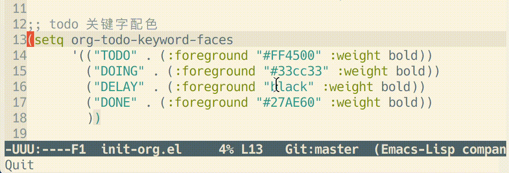]]
将to改为大写：使用 C-s 搜索关键词如 to ，再按快捷键 C-x r t ，然后输入 TO RET 。
示例二：删除多行注释
先按快捷键 Ctrl-Space 进入多行编辑模式，选中一个区域，再按快捷键 C-x r k
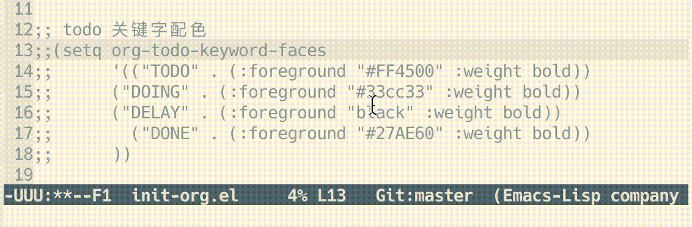]]
2.CUA 块的编辑
有时候比矩阵编辑更方便
https://www.gnu.org/software/emacs/manual/html_node/emacs/CUA-Bindings.html
开启块编辑 M-x cua-mode 定义块 C-RET cua-set-rectangle-mark，后面方向键或快捷键选区域 取消、结束 C-c 复制 M-m cua-copy-rectangle-as-text 剪切 M-k cua-cut-rectangle-as-text 粘贴 C-x r y == yank-rectangle 从光标位置向下粘贴 加编号 M-n cua-sequence-rectangle 开始数字、步长、格式(%d. )
后面用ivy插件可弃用这个了。
2.Keyboard Macro 键盘宏编辑
定义: 所谓宏，就是一些命令组织在一起，作为一个单独命令完成一个特定任务.
这样可以做一些重复性工作
宏操作
- 开始|结束
(start|end)-kbd-macro == C-x (|) 或者 <F3>|<F4>- 一般使用`F3|F4` : 开始|结束定义一个键盘操作宏.
- 追加:
C-u C-x (
- 终止
- C-g == keyboard-quit
- 执行
- C-x e == kmacro-end-and-call-macro 或者 F4 : 执行键盘宏
- C-u 37 C-x e : 重复执行37次该宏
- M-x call-last-kbd-macro
- C-x e == kmacro-end-and-call-macro 或者 F4 : 执行键盘宏
范例：重复写入hello world
C-x (输入hello world 回车C-x )结束定义C-x e执行键盘宏- 保存解盘宏
M-x kmacro-name-last-macro回车 宏名字 ： 给宏起一个名字- M-x insert-kbd-macro RET 宏名字 RET： 插入指定名字的宏
- M-x <name> 执行自定义宏
- 编辑最近一次的录制好的宏
C-x C-k C-e或者kmacro-edit-macro
- 编辑指定名字的宏
C-x C-k e 宏名字 RET或者edit-kbd-macro
参考：
- Emacs manual on macros：https://www.gnu.org/software/emacs/manual/html_node/emacs/Keyboard-Macros.html#Keyboard-Macros)
- Xah Lee 博客 Emacs: Keyboard Macro：http://xahlee.info/emacs/emacs/emacs_macro_example.html
- http://emacs-fu.blogspot.com/2010/07/keyboard-macros.html
拓展
- multiple-cursors 多光标插件
其它
- 缩进
- 按上一行的格式: indent-region = M-C-\ = <Tab>
- 区域: indent-rigidly = C-x <Tab> = C-x C-i 再按左右方向键缩进
- 行操作
- 新行
- open-line == C-o
- newline-and-maybe-indent == C-j 新行且有缩进效果，但lisp-interaction-mode 中除外，因为被解释成eval并输出结果
- 分割
- split-line == M-C-o
- 连接-前|后行
- delete-indentation == M-^ (反向: C-u ..)
- 将光标所在前后所有连续空行变为一个空行
- delete-blank-lines == C-x C-o
- 新行
- 调换-前|后
- 交换光标左右的字符： transpose-chars, C-t；
- 交换光标前后的词： transpose-words, M-t；
- 交换光标所在行和上一行：C-x C-t。
- 还有交换句子、段落、选择区域等，但没有快捷键，详见文档。
- 转换-大小写
- (capitalize|uppercase|downcase)-word == M-(c|u|l) (反向: M– ..) 首字母大写|整个词大写|整个词小写
- (upcase|downcase)-region == C-x C-(u|l) 区域的大小写
- 调字号： 激活使用 C-x C-0 (重置)、 C-x C-= (放大)、 C-x C– (缩小) 、 C-x C-+(放大) , 再按放大 + 或者 = 、缩小 -、重置字号 0。
- 文本编辑之注释
C-x C-;M-;
限制每行宽度，方便折行
一行转换为多行：
参考 ：https://www.gnu.org/software/emacs/manual/html_node/emacs/Fill-Commands.html
需要执行填充模式中的函数来实现。填充模式中默认行宽为 70。可以修改变量
控制行宽。 (setq-default fill-column 80) 或 M-x set-fill-column RET
任选一种方法实现：
- 不要写那么长。
- 写完后用
M-x fill-region或M-x fill-paragraphM-q重排一下。 - 启用
M-x display-fill-column-indicator-mode，显示参考线。PS: 对英 语效果友好。 - 启用 whitespace-mode 并设置，给超过宽度的内容显示刺眼的背景。
- 如果你控制不了自己的手，还是写很长，就让编辑器帮你断行：启用 auto-fill-mode。
将多行转换为一行:
- 通过
M-h选中段落，或者C-@选中要合并的多行后，按下M-^，即 可转换为一行
align 对齐
- align (align-rules-list)
- align-(current|entire|newline-and-indent)
- align-regexp (C-u ..)
范例：
#按括号对齐，第一个出现的括号对齐 选中区域，M-x align-regexp 输入 ( #所有括号对齐 选中区域，C-u M-x align-regexp 输入 空格
插件：
- ialign 可视化，效果直接显示出来
sort 排序
- 按-行|列|段|页
- sort-(lines|columns|paragraph|pages)
- paragraph <- paragraph-start, paragraph-separate
- 反序: C-u ..
- sort-(lines|columns|paragraph|pages)
- sort-numeric-fields (base: sort-numeric-base) 按数字排序
- sort-fields (第几字段: C-u [N] | M-[N])
- 正则表达式 : sort-regexp-fields
- word : (\w) \1
- words : (\w+) \1
- 反序
- M-x reverse-region
- 忽略大小写 : sort-fold-case = t
范例-排序sort-lines
1 2 4 9 3 5
选中， M-x sort-lines
Narrowing缩小编辑
- Narrowing : 当前缓冲 进入部分编辑 不影响缓冲其它部分
- 进入: narrow-to-(region|page|defun) == C-x n (n|p|d)
- org-narrow-to-(subtree|block|element) == C-x n (s|b|e)
- 退出: widen == C-x n w
- 进入: narrow-to-(region|page|defun) == C-x n (n|p|d)
上面的并不高效，可以添加如下配置
;; 缩小编辑区 (defun narrow-or-widen-dwim (p) (interactive "P") (declare (interactive-only)) (cond ((and (buffer-narrowed-p) (not p)) (widen)) ((region-active-p) (narrow-to-region (region-beginning) (region-end))) ((derived-mode-p 'org-mode) ;; `org-edit-src-code' is not a real narrowing ;; command. Remove this first conditional if ;; you don't want it. (cond ((ignore-errors (org-edit-src-code)) (delete-other-windows)) ((org-at-block-p) (org-narrow-to-block)) (t (org-narrow-to-subtree)))) (t (narrow-to-defun)))) (define-key ctl-x-map "n" #'narrow-or-widen-dwim)
这样使用 C-x n 就可以切换缩小和恢复操作了
;; init.el添加了如下内容 (put 'narrow-to-region 'disabled nil) (put 'narrow-to-page 'disabled nil)
Search 搜索 & Replace 替换
Emacs 原生提供了强大的搜索和替换功能。
速记：
C-s 向后查找 C-r 向前查找 M-% 替换
替换时按下`y`确认替换，`n`跳过本处的替换，`!`全部替换。
search
- isearchn (Incremental search)
- 前|后 (重复-切换搜索到的词)
- isearch-(forward|backward) == C-(s|r)
- isearch-(forward|backward)-regexp == C-M-(s|r)
- isearch-forward-(word|symbol) == M-s (w|_)
- isearch-forward-symbol-at-point == M-s .
Activated (C-s ..)
如果你想让光标跳到下一个匹配位置，就再按一次 C-s。
如果想停留在当前位置，退出搜索，按下回车键。
如果想放弃搜索，回到搜索前的位置，按下 C-g。
- Paste : C-y
- History : M-n|p
- 大小写敏感 : M-c
- C-w (光标处到下一个词的词尾)
- C-(s|r) ( 同向: 重复上一次搜索; 反向: 切换搜索方向)
- 非增量 : RET
- Regex : M-r
- 前|后 (重复-切换搜索到的词)
- occor
- M-s o == occur
- -> Occur buffer
- e : occur-edit-mode : Edit current Occur buffer
- exit : C-c C-c
- next|previous : M-g (n|p)
- repeat : C-x z
- next|previous line : C-n|p
- beginning|end of buffer : <|>
- refresh : g
- Jump to match : o
- Jump to match but point remainon Occur : C-o
- help : h
- quit : q
- multi-occur (multiple buffers)
- M-x multi-occur
- M-x multi-occur-in-matching-buffers
- M-s o == occur
- grep
- M-x grep
- Asynchronously : M-x lgrep
- M-x grep-find | find-grep
replace
- 所有: replace-(string|regexp)
- 问询
- query-replace == M-%
- query-replace-regexp == C-M-%
- 选项
- 退出 : <Enter>|q
- 替换当前 : <SPC>|y
- 替换-所有 : !
- 跳过 : <backspace>|n
- 退回-到前一次替换 : ^
- 替换当前 且 退出 : .
- 替换当前 且 光标移动到此处 且 退出 : ,
- 撤销-前一个|所有 : u|U
- 递归编辑 : C-r
- 退出 : C-M-c
- 删除-这个匹配 并 进入递归编辑 : C-w
- 退出-递归编辑 和 问询 : C-]
- 编辑-替换的字符串 : E
Repeat 重复
Emacs 提供了一个机制可以把一个命令重复执行任意次数。具体来说，先按下 C-u ，再按数字表示次数，再按下命令的快捷键。例如： C-u 12 C-n 表示向下 12 行。如果不加数字，默认是 4 次。
注意，有些特殊命令不表示次数，例如与 M-x 组合时表示传参。
注意，C-u 其实是前缀参数（prefix argument）中的 universal-arument 的快捷键。其后加数字在大部分基本命令中是表示次数，但其它命令不一定表示次数，例如与 M-x 组合时的 C-u M-x 是基于前缀字符串搜索命令。可以类比我们的键盘上，按下 1 是输入数字 1，但按下 shift+1 得到的是叹号，C-u 就类似 shift 的作用，并且由于可以接数字等额外参数，C-u 非常强大。具体每个命令的前缀参数有何作用在其文档中都有说明，如何查看文档参考本文“获得帮助”小节。
- 多次运行同一个命令
- universal-argument == C-u [N] (缺省次数: 4)
- digit-argument == (C|M)-[N]
- C-u [C-u]* (4^n)
- 上一条命令 (一次或多次)
- repeat == C-x z … z
- 复杂命令
- repeat-complex-command == C-x ESC ESC | C-x M-:
拓展
- Keyboard Macro 键盘宏
- Multiple cursors 插件包管理 multiple-cursors config kbd
Assist 辅助
Information 信息
- 词数
- count-words-region 或者 M-= (缓冲: C-u ..)
- M-x count-words (缓冲|选中区域)
- 行数
- M-x count-lines-region
- 字符信息
- what-cursor-position
==C-x = (编码 第几个字符 第几列) - M-x describe-char (详细信息)
- what-cursor-position
Abbrev 缩写
- 添加
- 全局: add-global-abbrev
==C-x a g - 当前主要模式: add-mode-abbrev
==C-x a l - inverse-add-(global|mode)-abbrev
==C-x a i (g|l) - M-x define-(global|mode)-abbrev
- 前缀
- 0 : region as expansion
- C-u [N] : N words
- 全局: add-global-abbrev
- 删除
- Arg: C-u -
- 全部: M-x kill-all-abbrevs
- 扩展
- abbrev-prefix-mark
==M-' - expand-abbrev
==C-x a e - M-x expand-region-abbrevs
- M-x unexpand-abbrev
- abbrev-prefix-mark
- 查看和编辑
- M-x list-abbrevs (C-u [N] .. : local, N:次数)
- M-x edit-abbrevs
- 保存
- M-x write-abbrev-file <RET> file <RET>
- M-x read-abbrev-file <RET> file <RET>
- M-x define-abbrevs
- M-x insert-abbrevs
Register 寄存器
寄存器 : 存储 文本 矩形区块 位置 值 设置
- View
- M-x view-register <RET>
- Jump
- jump-to-register == C-x r j
- Position
- Save: point-to-register == C-x r <SPC>
- Text|Rectangle
- Save: copy-[rectangle]-to-register == C-x r (s|r) (C-u .. : copy-to and del)
- Insert: insert-register == C-x r i
- Text
- Append: M-x append-to-register <RET>
- increment-register == C-x r +
- Prepend: M-x prepend-to-register <RET>
- Append: M-x append-to-register <RET>
- Frame&Window Configuration
- Save
- window-configuration-to-register == C-x r w
- frameset-to-register == C-x r f
- Restore: C-x r j (C-u .. : del frame invisible)
- Save
- Number
- Save: number-to-register == C-u [N] C-x r n
- Increment: C-u [N] C-x r +
- Insert: insert-register == C-x r i
- Keyboard Macro
- Save: kmacro-to-register == C-x C-k x
- Exe: C-x r j
Bookmark 书签
就和电子书中的书签功能一样，在当前光标位置打上一个书签，之后可以随时跳转回来。主要涉及到如下命令
书签 : 保存缓冲区中位置
- 设置-光标位置
- bookmark-set == C-x r m 设置书签。可以为书签起个标记名称，默认为文件名。也可以为目录打书签。
- bookmark-set-no-overwrite == C-x r M
移动到-指示的位置
- bookmark-jump == C-x r b
如果安装了 ivy counsel，应当已被覆盖为 counsel-bookmark）
- 显示-书签列表
- list-bookmarks == C-x r l
- 删除
- M-x bookmark-delete
- 重命名
- M-x bookmark-rename
- 保存 加载
- 到默认文件: bookmark-save
- 新文件: bookmark-write
- 加载: bookmark-load
- 插入
- 文件内容: bookmark-insert
- 文件名字: bookmark-insert-location
范例：随时打开指定目录
- C-x C-f ~/.emacs.d/
- M-x bookmark-set 回车 设置书签，同时emacs.d/目录下会生成一个书签文件 bookmarks
- C-x C-c 关闭emacs
- 打开emacs M-x bookmark-jump 打开书签
Other 其它
Highlight 高亮
- 光标所在行
- M-x hl-line-mode (当前缓冲)
- (global-hl-line-mode 1)
- M-x hl-line-mode (当前缓冲)
自动加载外部修改过的文件
- global-auto-revert-mode
自动保存
- M-x auto-save
- 重开: M-1 ..
统计行数
C-x l
从当前光标开始删除到下一个指定的字符为止(包括这个字符)
- zap-to-char == M-z
也是vim里的ct命令.
删除两个单词之间的空格
- M-x cycle-spacing 或者 Alt+Space
- Ubuntu下要禁用Alt+Space快捷捷才行.
多文件操作
文件与 Buffer
速记
C-x C-f 打开-文件 C-x C-s 保存到文件 C-x C-b 列出缓存区 C-x b 切换缓存区
打开多文件
之前我们是在命令行中使用 emacs <filename> 的方式来打开文件。而想要在 Emacs 内打开一个文件如下：
快捷键：
- 打开文件：find-file == C-x C-f
- find-file-read-only == C-x C-r
- 替换：find-alternate-file == C-x C-v (替换缓冲区关联的文件)
- 已打开切换只读模式：read-only-mode == C-x C-q
按下 C-x C-f=（=find-file=），此时 Echo area 会出现 “Find file: “，
后面为一个路径，输入文件对应的路径即可打开相应文件。如果想新建文件，只
需要输入一个不存在的文件名即可。输入时可以使用 =<tab> 键自动补全，就
和 Linux 中类似。
保存文件对应命令 C-x C-s。
打开文件并只读不改： C-x C-r 。打开另一相近文件： C-x C-v ，此时下
面的路径会自动以当前文件全名作为初始路径（而不是目录的路径），这样方便
稍微修改一些文件名打开另一文件。 已打开的文件切换为只读模式： C-x
C-q 再执行取消只读.
Emacs 可以打开多个文件，同样使用 C-x C-f 打开即可。 但是你如果打开了
第二个文件，便会发现第一个文件就消失不见了，应当去哪里找呢？事实上，所
有打开的文件都会被放入一个被称为 Buffer 的对象中，当打开了第二个文件时，
第一个文件所在的 Buffer 会切入后台，而第二个文件的 Buffer 会占据当前的
Window。Buffer 的名字显示在 Mode line 中间，通常是文件名本身。
Emacs 也可以用这个方式打开目录（文件夹），会显示出目录内的文件（此即 Linux 的设计理念，一切皆为文件，即使是目录也本质上是一个文件），可以用光标选择想打开的文件。
Buffer 的切换
快捷键：
- switch-to-buffer == C-x b (-> Helm-mini) 切换缓存区，按?可以显示缓存区列表，C-g退出
- switch-to-buffer-other-(window|frame) == C-x (4|5) b
- list-buffers == C-x C-b (-> helm-buffers-list) 开启buffer管理
- (previous|next)-buffer == C-x (left|right) 切換到(上|下)一個 buffer
鼠标操作：
- 方法1：菜单中点击 buffer
- 方法2：鼠标左键或右键点击文件向前或向后切换buffer
- C-mouse-1 （`mouse-1` 表示鼠标左键）
切换 Buffer 有三类方法，简短的方法是使用 C-x b ，输入 Buffer 的名字
后按回车即可切换。 Echo area 中会提示你，如果什么也不输直接按回车，可
以跳转到当前默认的 Buffer 中，这样方便在两个文件中来回切换。
显然这样如果 Buffer 多了会记不住名字也不便于管理，于是可以使用第二个方
法， C-x C-b ，此时会弹出一个 Window，名为 "Buffer List" ，列出了
当前所打开的所有 Buffer。其中可以看到多个以星号（*） 开头结尾的 Buffer，
那些都是 Emacs 用于输出一些信息的 Buffer，并不是由于打开文件而产生。例
如 “*Messages*” 是 Emacs 的一些输出信息。“*scratch*” 是可以编写一
些 Elisp 代码的地方。Buffer 开头如果是 %，表示这个 Buffer 被修改过而没
有保存。
如果当前光标没有在 "Buffer List" 中可以用 C-x o 键切换过去。
可以通过光标选择切换到某个 Buffer。同时在这个 "Buffer List" 中有很多 功能可以使用。按问号（?）可以显示帮助。常见的操作例如 q 退出， d 标记 一个 Buffer 打算关闭，s 标记一个 Buffer 打算保存，u 取消标记，x 执行刚 刚标记过的删除和保存操作。事实上，在这里上下移动光标也不需要 C-p 和 C-n，直接按 p 和 n 即可。
此外，第三种方法是使用 C-mouse-1 （ mouse-1 表示鼠标左键）然后用鼠标菜单切换 Buffer。
事实上，在输入 M-x 后、 C-x b 后在 Echo area 显示的等待输入的区域被称为 Minibuffer， 所以它们的输入方式是共通的，都可以用相同的补全机制等。
想要关闭当前的 Buffer？直接在当前的 Buffer 处按下 C-x k 即可。
文件备份
使用 Emacs 打开文件后，会发现目录下会多一个和打开的文件同名但是后面多
了个 ~ 字符的文件，例如打开了 names.txt 后会出现 names.txt~ ，
这是 Emacs 的备份机制，防止程序或系统崩溃，或是用户误操作破坏了文件。
可以设置关闭或文件数量上限等等，详见文档。
关闭备份需要设置： (setq make-backup-files nil) 。
文件保存
- 全部: save-some-buffers == C-x s
- 当前: save-buffer == C-x C-s
- 另存为：write-file == C-x C-w
批量管理 Buffer
C-x C-b ;; 进入Buffer列表 命令：list-buffers m ;; （小写m）标记缓冲区（当前光标处） u ;; 取消当前行标记 U ;; 取消全部标记 d ;; 标记删除 s ;; 标记一个 Buffer 打算保存 D ;; 关闭已标记的缓冲区 S ;; 保存已标记的缓冲区 x ;; 执行刚刚标记过的删除和保存操作 g ;; 更新列表 o ;; 在新窗口中查看缓冲区 RET ;; 查看该缓冲区 ` ;; 切换列表显示形式 ? ;; 查看按键帮助 命令组合示例： *uSD：标记所有未保存缓冲区，保存，然后关闭 在这里上下移动光标也不需要 C-p 和 C-n，直接按 p 和 n 即可
Buffer列表list-buffers的替代品
;; 使用ibuffer代替list-buffers，有颜色，进入ibuffer中 (defalias 'list-buffers 'ibuffer) ;; 或使用ibuffer-other-window, 有颜色，侧边新开个窗口 ;;(defalias 'list-buffers 'ibuffer-other-window)
关闭窗口
- kill-buffer == C-x k 关闭缓冲区
- M-x kill-(some|matching)-buffers
- M-x clean-buffer-list (未修改>=3天)
窗口关闭：
- 方法1：鼠标停在状态栏，右键
- 方法2：菜单栏选择 Remove Other Windows 只保留当前buffer，New Window Below 水平
- 方法3：鼠标滚轮按住状态栏，拖动
其它
eval-expression：查看表达式的结果 eval-buffer ：把缓冲区所有代码全部运行一遍 erase-buffer：清空当前缓冲区 #重命名 M-x rename-(buffer|uniquely) #恢复 M-x revert-buffer (恢复到上一次存盘时) M-x recover-file (从自动保存恢复) M-x recover-session #重定位 recenter-top-bottom == C-l #Indirect Buffers : shares the text of some other buffer M-x (make|clone)-indirect-buffer clone-indirect-buffer-other-window == C-x 4 c #Tab 标签页管理 C-x t 2 ;; 新建Tab 1 ;; 关闭其它Tab 0 ;; 关闭当前Tab b ;; 在新Tab中打开Buffer
窗口大小：
- 鼠标在状态栏，上下拖动
插件
ido自动匹配buffer插件
;; ido自动匹配buffer C-x b时自动匹配 (setq ido-enable-flex-matching t) (setq ido-erverywhere t) (ido-mode 1)
使用向上,下键切换上次/下次的文件/buffer，按回车直接选择第一个匹配项
tabbar标签栏插件
;; if you like a tabbar ;(use-package tabbar ; :ensure t ; :config ; (tabbar-mode t))
ibuffer插件
开箱即用， C-x C-b 绑定到 Emacs list-buffers 命令。
可以参考Martin Owen文章给buffer设置不同的组
;; ibuffer ;; buffer列表绑定ibuffer，给buffer归类设置不同的组 (global-set-key (kbd "C-x C-b") 'ibuffer) (setq ibuffer-saved-filter-groups (quote (("default" ("dired" (mode . dired-mode)) ("org" (name . "^.*org$")) ("magit" (mode . magit-mode)) ("IRC" (or (mode . circe-channel-mode) (mode . circe-server-mode))) ("web" (or (mode . web-mode) (mode . js2-mode))) ("shell" (or (mode . eshell-mode) (mode . shell-mode))) ("mu4e" (or (mode . mu4e-compose-mode) (name . "\*mu4e\*") )) ("programming" (or (mode . clojure-mode) (mode . clojurescript-mode) (mode . python-mode) (mode . c++-mode))) ("emacs" (or (name . "^\\*scratch\\*$") (name . "^\\*Messages\\*$"))) )))) (add-hook 'ibuffer-mode-hook (lambda () (ibuffer-auto-mode 1) (ibuffer-switch-to-saved-filter-groups "default"))) ;; don't show these不展示在缓存列表中 ;;(add-to-list 'ibuffer-never-show-predicates "zowie") ;; Don't show filter groups if there are no buffers in that group (setq ibuffer-show-empty-filter-groups nil) ;; Don't ask for confirmation to delete marked buffers (setq ibuffer-expert t)
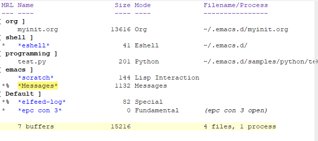]]
可以使用`m`来标记缓存，使用`H`新建多个emacs进程来打开这些缓存，使用`C-x 50`退出。
Window & Frame 窗口和框架
frame & window区别
- 一个frame包含1个或多个window
- 每个window显示各自的buffer
速记
C-x 2 水平切 C-x 3 垂直切 C-x 1 留一个窗口 C-x 0 将游标顺移到下一个窗口
多Window
划分-垂直|水平
- split-window-(below|vertically) == C-x 2 上下分割出两个 Window
- split-window-(right|horizontally) == C-x 3 左右分割出两个 Window
分割后，默认会把当前的 Buffer 也显示到新的 Window，即显示了两个一样的
Window。再次强调一下，Buffer 对应真正打开的文件，而 Window 是把 Buffer
显示出来的元件，所以一个文件只会开一个 Buffer，但可以有多个 Window 显
示。于是，在新的 Window 里用 C-x C-f 打开另一个文件即可看到两个文件
了，当然也可以正常用 Buffer 切换。
关闭
- 当前: delete-window == C-x 0 关闭光标所在处的 Window
- 其它: delete-other-windows == C-x 1 即仅保留当前窗口。其它 Window 的 Buffer 依然没有关闭，可以通过 "Buffer List" 查看。
- 当前窗口及其缓冲区: kill-buffer-and-window == C-x 4 0
关于分屏的更多内容你可以在这里找到
切换分屏
默认可通过以下快捷键进行窗口的循环跳转： C-x o 逆时针 C-u - C-x o
那么如果在已经分割之后再分割呢？Emacs 会继续做二等分，变成 3 个、4 个等窗口。此时窗口的切换和关闭就没有那么方便了。 使用插件可以辅助这一过程。
- ace-window 窗口间的跳转插件 (推荐)
- window-numbering 插件,M-num 快速跳转到指定的窗口
打开多文件
- find-file-other-window == C-x 4 f
- find-file-read-only-other-window == C-x 4 r
那么既然开一个新的窗口并打开新的文件这个需求很常见，对此如果只有以上快
捷键，需要先 C-x 3 分割出一个窗口， C-x o 切换到新窗口， C-x C-f
打开新文件，过于繁琐。所以 Emacs 提供了一个快捷键： C-x 4 f 来达到
“在另一个窗口打开新的文件，如果只有一个窗口就分割成两个”的效果。
此外，还有 C-x 4 b 表示“在另一个窗口切换到另一 Buffer，如果只有一个窗口就分割成两个” 。 C-x 4 d 表示 “在另一个窗口打开目录，如果只有一个窗口就分割成两个”。
可以总结出 C-x 4 为前缀时，就表达“在另一个窗口做……“。
滚动
- 第二窗口向下翻页：scroll-other-window == C-M-v
- 第二窗口向上翻页：C-M-S-v （同时按下 Control，Meta， Shift 和 v）
在打开两个窗口时，如果我们光标在第一个窗口，而希望第二个窗口翻页，那么就可以用 C-M-v 向下翻页。用 C-M-S-v （同时按下 Control，Meta， Shift 和 v）向上翻页。
调整大小
- enlarge-window == C-x ^ 增高当前窗口,可以配合 C-u num 来使用
- shrink-window 未绑定按键 减少当前窗口高度
- (enlarge|shrink)-window-horizontally == C-x (}|{) 增加/减小当前窗口宽度
- shrink-window-if-larger-than-buffer == C-x -
- 平衡-所有可见窗口大小: balance-windows == C-x +
其它
窗口撤销
(use-package winner :ensure nil :hook (after-init . winner-mode))
内置包使用 (winner-mode 1) 开启。
winner-redo C-c left回退窗口winner-undo C-c right撤消回退
多Frame
#打开-文件 find-file-other-frame == C-x 5 f find-file-read-only-other-frame == C-x 5 r #新建 make-frame-command == C-x 5 2 #切换 other-frame == C-x 5 o switch-to-buffer-other-frame == C-x 5 b #删除 当前: delete-frame == C-x 5 0 其它: delete-other-frames == C-x 5 1
既然能多 Window，自然能多个 Frame。打开一个新的 Frame 可以使用快捷键
C-x 5 2 ； 在一个新的 Frame 打开文件，可以使用快捷键 C-x 5 f 。
C-x 5 和 C-x 4 基本类似，只是前者在 Frame 间操作，后者在 Window 间
操作。 图形界面使用较多。
有的人在日常使用中，对多文件的打开更偏爱在单个 Frame 中用多个 Window，很少在多 Frame 中间频繁切换。
插件
- ace-window
popwin光标自动切到弹出的窗口里
- popwin光标自动切到弹出的窗口里 https://github.com/emacsorphanage/popwin
(defvar mypackages '( ;; --- popwin --- popwin ) "Default packages") ;; popwin 光标自动切到弹出的窗口里 (require 'popwin) (popwin-mode t)
use-package
;; 光标自动切到弹出的窗口里 (use-package popwin :ensure t :config (popwin-mode))
MiniBuffer 交互优化
显示在左下角的 MiniBuffer 移动视线范围大，移动到中央位置，更合适一些。
- ivy-posframe https://github.com/tumashu/ivy-posframe
;; 窗口交互优化,移动到中央位置 (use-package ivy-posframe :ensure t :init (setq ivy-posframe-display-functions-alist '((swiper . ivy-posframe-display-at-frame-center) (complete-symbol . ivy-posframe-display-at-point) (counsel-M-x . ivy-posframe-display-at-frame-center) (counsel-find-file . ivy-posframe-display-at-frame-center) (ivy-switch-buffer . ivy-posframe-display-at-frame-center) (t . ivy-posframe-display-at-frame-center))))
hydra 窗口
目录（文件夹）操作
Dired，即 Directory Editor，是 Emacs 自带的用以处理目录和文件的功能。常见的操作例如删除文件、将文件从一处拷贝至另一处，更高级的操作如对比两个文件的异同、更改权限、链接文件等等，都可以通过 Dired 实现。
启动 Dired 非常简单，只需要按下 C-x C-f ，输入一个目录（文件夹）而非
文件，就会进入 Dired。更标准的方式是按 C-x d 或调用 M-x dired 命令然后
输入一个目录的名字启动，但前者与打开文件的快捷键相同，更易记忆。
当已经打开了一个文件时，输入dired-jump(C-x C-j) 可以打开当前文件所在的目录。
Dired 会把目录下的文件都列出来，随后用户可以对文件进行操作。此时可以按下 h （Help）来打开帮助，读者可以翻到下面的 "Keybindings"，里面列出了所有在 Dired 中可以使用的命令。
- h: 帮助
- p/n: 上下移动光标
- o: 新开窗口打开
- j: 在当前文件所在目录查找文件
- + 创建目录
- g 刷新目录 通过在C-x C-f创建完文件后按g刷新显示
- C 拷贝
- D 立即删除
- R 重命名
- d 标记删除
- u 取消标记 大U全部取消
- x 执行所有的标记
- s 排序 。按修改时间或名称
- S-6 上级目录
- C-x C-q 目录下进入编辑模式，可改文件名
- %m 正则匹配，可以安装正则插件p
- dired-jump
=C-X C-j 打开d:/
可以执行的命令全都在 "Keybindings" 中罗列，读者只需要自行查阅即可。
这里举一个简单的例子，我们想要将 a.txt 和 b.txt 文件挪到 subdir 中，首 先我们可以对 subdir 按下 i 来展开这个子目录， 随后对两个文本文件按下 m 标记， 然后按下 R（Rename） ，在回显区输入 ~/Code/Emacs/Test/subdir/， 按下回车。
插入 tabel.el 表格
从 Emacs 22 起，内置了一个强大的基于文本的表格（tabel.el 表格），详情可参考Editing Text-based Tables。 注意
- tabel.el 表格不支持“#+CAPTION”的用法
- 表格不能对齐的原因是没有采用等宽字体
- 取消自动换行，用M-x toggle-truncate-line命令取消
1.创建表
M-x table-insert 。此命令提示输入表格列数、表格行数、单元格宽度和单元格高度。
Number of columns (default 3): #列数，即水平单元格数 Number of rows (default 3): #行数，即垂直单元格数 Cell width(s) (default 5): #宽度，即单元格宽度 Cell height(s) (default 1): #高度，即单元格高度
范例： 创建表格，默认的
- M-x table-insert 一路回车
2.识别表
- M-x table-recognize-table 进入编辑模式。org-mode模式中进入编辑模式为 C-'
- M-x table-unrecognize-table 退出编辑模式
3.在表格中执行命令
以下命令可放大或缩小单元格
- M-x table-heighten-cell (C-}) 垂直放大当前单元格
- M-x table-shorten-cell (C-{) 垂直收缩当前单元格
- M-x table-narrow-cell (C-<) 水平收缩当前单元格
- M-x table-widen-cell (C->) 水平放大当前单元格
- M-x table-justify (C-:) 表格对齐。选择对齐方式cell(仅当前单元格)、column(当前表格列中的所有单元格)和row(当前表格行中的所有单元格)。如cell–>(Left/Center/Right)
以下命令可合并或拆分单元格
M-x table-span-cell (C-*) 合并表格
提示输入方向（right右、left左、above上方或below下方），并将当前单元与该方向上的相邻单元合并。
M-x table-split-cel 分裂表格
按提示分割：有vertically水平，horizontally垂直
- M-x table-split-cell-vertically (C–) 水平分割单元格。注意cell中必须已经存在多行字符串才有效
- M-x table-split-cell-horizontally (C-|) 垂直分割单元格
- 按split分割，按光标位置自动将当前单元格分割；按left当前单元格向左移动向边新增一列；按right当前单元格向右移动左边新增一列
范例： 垂直放大第1行，放大2行。第2列单元格加宽些
- 进入编辑模式
- 光标在第1行单元格内，按 C-}
- 光标在第2列单元格内，按 C->
| 1 | ||
| 2 | ||
| 3 |
|
1 |
|
|
| 2 | ||
| 3 |
范例：编辑上面表格，合并第1和第2列; 水平切分第1单元格; 第1列左对齐
- 进入编辑模式
- 光标在第1列单元格内，按 C-*，选right向右合并。
- 光标在第1列第3行内，按 C–，水平切分第1单元格。
- 光标在第1列单元格内，按 C-: 选left 向左对齐。
| 1 |
|
|
| 2 | ||
| 3 | ||
4.表行和列
- M-x table-insert-row 在当前 table 行之前插入一行单元格。
- M-x table-insert-column 在当前表列的左侧插入一列单元格
- M-x table-delete-column 删除 point 处的单元格列
- M-x table-delete-row 删除 point 处的单元格行
5.在纯文本和 Tables 之间转换
- M-x table-capture 纯文本转换为 table.el 的表格。输入表格列分隔符、行分隔符正则表达式等参数。换行为Ctrl-q, Ctrl-j
- M-x table-release 则相反：将table.el表格转换回纯文本，并删除其单元格边框。注意光标需要在表格内。
- C-c | 纯文本转换为orgmode表格
- M-x org-table-create-with-table.el (C-c ~) table.el 表格与org-mode 表格相互转换
范例：将下面文本转换为table.el文本表格。
table-capture is a powerful command.
Here are some things it can do:
Parse Cell Items Using row and column delimiter regexps,
it parses the specified text area and
extracts cell items into a table.
- 选中文本，M-x table-capture，列和行分隔符 regexp 的字符串为空，将创建一个具有单个单元格的表
|
table-capture is a powerful command. Here are some things it can do: Parse Cell Items Using row and column delimiter regexps, it parses the specified text area and extracts cell items into a table. |
- 进入编辑模式 C-’
- 光标在第3行，空白单元格内。按 M-x table-split-cell-vertically (C–) 水平分割单元格
- 光标在 Items 后空白处，M-x table-split-cell-horizontally (C-|) 垂直分割单元格
- 按split分割，按光标位置自动将当前单元格分割。
- 注意光标这里与下文本宽度一样，有利切分
- 光标在最后一行内，按M-x table-shorten-cell (C-{) 垂直收缩当前单元格
|
table-capture is a powerful command. Here are some things it can do: |
|
|
Parse Cell Items |
Using row and column delimiter regexps, it parses the specified text area and extracts cell items into a table. |
范例： 处理CSV格式文本
,単位,最小,最大,平均 CPU使用率,%,10,90,50 磁盘使用率,Gb,100,200,150 内存使用率,Mb,200,500,250
选择区域中文本并执行 M-x table-capture。 由于 minibuffer 需要输入如下：
- Column delimiter regexp 列分隔符:, 逗号。
- Row delimiter regexp 行分隔符: Ctrl-q，Ctrl-j 为换行
- Justify对齐: center 居中
- Minimum cell width最小单元格宽度: 15
| 単位 | 最小 | 最大 | 平均 | |
| CPU使用率 | % | 10 | 90 | 50 |
| 磁盘使用率 | Gb | 100 | 200 | 150 |
| 内存使用率 | Mb | 200 | 500 | 250 |
- Org-mode模式下，按 M-x org-table-create-with-table.el (C-c ~) table.el 表格与org-mode 表格相互转换
| 単位 | 最小 | 最大 | 平均 | |
| CPU使用率 | % | 10 | 90 | 50 |
| 磁盘使用率 | Gb | 100 | 200 | 150 |
| 内存使用率 | Mb | 200 | 500 | 250 |
原生 Emas
使用它的理由：性感的 Emacs（Emacs is Sexy）
- GNU Emacs 于 1984 年，Richard Stallman 发起并维护
- GNU 顶级项目
- 竞争对手 VIM，VSCode 等
- 跨平台，内核解释器 C 写成，通过 ELisp 语言进行扩展
Emacs 的主要相关资料
- https://www.gnu.org/software/emacs/ ：官方主页，可在此下载安装包。
- https://www.gnu.org/software/emacs/documentation.html:
GNU Emacs manual和Emacs Lisp Reference Manual最准确、最全面。有能力可以 直接按照官方文档进行学习。 - https://www.emacswiki.org: Emacs Wik，关于 Emacs 插件、Emacs Lisp 的一些使用方法。
- https://emacs.stackexchange.com/: Emacs StackExchange 问答论坛，有 着大量关于 Emacs 的提问和精品回答。
- https://www.gnu.org/software/emacs/refcards/index.html: Emacs Reference Card， 即 Emacs 备忘表（Cheatsheet）。前两个 PDF 是基本内容，基本操作卡片和生存卡片。
- https://emacs-china.org/: Emacs-chin，国内社区，比较活跃。
站在巨人肩膀上
有一些 Emacs 发行版，预装了很多插件
Doom Emacs 和 Spacemacs，它们尤其对 Vim 转到 Emacs 的用户比较友好，因 为它们预装了 evil 插件，可以在 Emacs 上使用 Vi 的操作。
使用大佬的配置
- 李杀
- Emacs Lisp 教程：http://xahlee.info/emacs/emacs/practical_elisp.html
- Steve Purcell
- Steve Purcell 是 MELPA 的维护者（MELPA 是 emacs 插件仓库）。
- 陈斌
大佬答疑
- 大家说一说喜欢Emacs而不是vim的原因吧。
- 我一开始转到 Emacs 时也这么想过，后来发现是伪命题，我从 evil 转到原生键位后，把文件是否修改过放在 modeline 原本显示 evil 编辑模式的地方，到现在从未出过误修改的事情 我 vim 同时和 emacs 用了 2~3 年，期间也折腾过 vim 键位的浏览器什么的，现在 emacs 用了 11 年，完全不觉得需要 vim 键位
- 没有emacs的情况我用ed，因为plan9默认没有vi
- 写报告我都是写 HTML 的，从来不用 org 写东西
安装
- 源码安装 emacs: 新手不推荐从源码进行编译安装，因为这会比较困难
- 二进制包安装
版本动态：
- Emacs 30, 可以使用内置vc下载github代码
- Emacs 28.1 正式发布，新增使用 GCC JIT 对 Emacs Lisp 字节码的执行进行 加速，可以显著提高 Emacs 的运行速度。
- 2023年4月底正式版本 28.2
二进制包安装
Unix
# Ubuntu sudo apt-get install emacs # Fedora sudo dnf install emacs git ripgrep # Arch sudo pacman -S emacs git ripgrep
MacOS
brew install --cask emacs # emacs-plus的Github页面 https://github.com/d12frosted/homebrew-emacs-plus brew install emacs-plus@30 --with-xwidgets --with-imagemagick
或者也可以在官网通过下载后拖动到 Applications 目录中即可使用。https://www.gnu.org/software/emacs/
Windows emacs
方法1：官网ftp下载
这是官方的 GNU Emacs，由自由软件基金会为 Windows 构建。下载地址：http://ftp.gnu.org/pub/gnu/emacs/windows/
这里下载 emacs-{最新版本}-x86_64.zip 包，解压到 D:\Program Files\ ; GUI 启动：到 bin 目录下点击 runemacs 启动。addpm.exe 可把应用加到菜单中
方法2：用 msys2 安装
本文emacs安装在windows环境中，使用 msys2 工具安装。如安装到 D:\msys64, 并设置PATH变量(D:\msys64\mingw64\bin, D:\msys64\usr\bin)
更新msys2, 如下更新命令执行2遍
pacman -Suy
添加msys2右键菜单： 创建 emacs-shell.reg注册表添加如下内容，双击执行即可
Windows Registry Editor Version 5.00 [HKEY_CLASSES_ROOT\Directory\Background\shell\MSYS2] @="MSYS2 Bash Here" "Icon"="d:\\msys64\\msys2.ico" [HKEY_CLASSES_ROOT\Directory\Background\shell\MSYS2\command] @="d:\\msys64\\msys2_shell.cmd -mingw64 -here"
安装emacs
pacman -S mingw-w64-x86_64-emacs
通过 msys2 安装的好处是上面还可以很方便安装其它开源软件, 如 git,
epdfinfo 等。
windows FAQ
- Microsoft Windows 上的 emacs 初始化文件在哪里？
Microsoft Windows 中的 Emacs 初始化文件位置在 {Windows 10, Windows 8, Windows 7, Windows Vista} 上，默认情况下，emacs 会查看以下目录/文件。
$HOMEPATH/AppData/Roaming/.emacs .emacs 文件是旧的 emacs 约定，在 1990 年代和 2000 年代使用。 $HOMEPATH/AppData/Roaming/.emacs.d/init.el .emacs.d/init.el 是现代约定。
如果您有名为 HOME 的环境变量，那么它位于：
- $HOME/.emacs
- $HOME/.emacs.d/init.el
HOME 是标准的 unix/linux 环境变量。 （默认情况下，Windows 中不存在。）
windows 设置环境变量
调用 2 个环境变量，HOME 和 PATH。HOME 找到 emacs 的用户目录，PATH 找到 emacs 和 cygwin 里的命令。请提前安装 cygwin 服务。
方法1：右击桌面 我的电脑 > 属性 > 高经系统设置 > 高级 > 环境变量 > 用户 变量 > 编辑
配置文件位置在： /c/Users/me/AppData/Roaming 用户主目录在这里。
如
# HOME c:/Users/jasper # Path D:\Program Files\emacs-27.2-x86_64\bin D:\cygwin64\bin
方法2：win10 powershell 执行
# HOME 环境变量 [Environment]::SetEnvironmentVariable("HOME", "c:/Users/jasper/", "User") # Path # 右击桌面 我的电脑 ...
运行它后，重新启动 PowerShell 使用 dir env: 查看是否生效
# 查看当前环境变量和PATH Get-ChildItem env: $env:path -split ";"
当前使用版本：
启动 Emacs，然后查看版本。 M-x emacs-version
或者在命令行中查看版本。 emacs --version
源码安装
- https://savannah.gnu.org/projects/emacs/ (官方地址，推荐)
- https://github.com/emacs-mirror/emacs (github镜像)
下载源码，查看INSTALL文件中不同操作系统安装指引
windows nt/INSTALL.W64
参考：https://eason0210.github.io/post/install-gccemacs/
在 Mingw64 终端中执行以下命令安装依赖。
pacman -S --needed base-devel \ mingw-w64-x86_64-toolchain \ mingw-w64-x86_64-xpm-nox \ mingw-w64-x86_64-gmp \ mingw-w64-x86_64-gnutls \ mingw-w64-x86_64-libtiff \ mingw-w64-x86_64-giflib \ mingw-w64-x86_64-libpng \ mingw-w64-x86_64-libjpeg-turbo \ mingw-w64-x86_64-librsvg \ mingw-w64-x86_64-libwebp \ mingw-w64-x86_64-lcms2 \ mingw-w64-x86_64-libxml2 \ mingw-w64-x86_64-zlib \ mingw-w64-x86_64-harfbuzz \ mingw-w64-x86_64-libgccjit \ mingw-w64-x86_64-sqlite3 \ mingw-w64-x86_64-tree-sitter
下载 Emacs 源代码
git clone -b master git://git.sv.gnu.org/emacs.git cd emacs #如果执行./autogen.sh过程中出错，可能是因为克隆代码后 checkout 时用了 CRLF. git config core.autocrlf false
编译 Emacs
./autogen.sh #如果提示版本不够 pacman -Su autoconf ./configure --prefix=/d/programs/emacs --without-dbus echo $(nproc) make -j4 make install #make install prefix=/d/opt/emacs #指定安装目录
echo $(nproc)会显示当前系统的 CPU 核心数；然后在make -j4就是使用 4 个核心进行编译, 推荐使用总数的一半，既提高了编译速度，也不影响其他应用的运行。- 如果需要卸载的话在源码目录里面
make uninstall就可以了。建议安装在指定目录，注意在路径中使用斜杠"/", 而不是反斜杠"\"。 - 如果编译过程出错了，记得
make clean之后重新configure再make。
测试运行 Emacs
bin\runemacs.exe -Q
从 mingw64 shell 外部运行 Emacs 时，您需要 将 d：\msys64\mingw64\bin 添加到您的 Windows PATH，或复制所需的 DLL 添加到 Emacs 的 bin/ 目录中。 否则，TLS 等功能会导致 取决于那些DLL将丢失
将 d:\programs\emacs\bin 加入到环境变量。 如果和msys2中的emacs同存，将path中的源码安装的路径放在msys2的emacs前面。
创建快捷方式
请右键选择新建快捷方式，选择bin\runemacs.exe, 并起个名。 右键快捷方式 属性 ，目标处添加命令行选项 --debug-init
启动 emacs
Emacs 可以在 GUI 模式（图形用户界面）下运行，也可以在文本终端内运行
- 图形界面启动
emacs图形界面可以直接打开程序。命令行输入命令启动 Emacs。- 文本终端启动
emacs -nw打开非图形界面版的 Emacs。可以结合挂起 一起使用。挂起 emacsC-x C-z(即Ctrl+x Ctrl+z)，终端输入fg恢复到前台。 PS:C为表示 Ctrl 键- 启动并打开文件
emacs filename- 不加载任何配置
emacs -q
启动后可以看到这样的界面，可以看到其中有一个 "Emacs tutorial"，如果读 者英文不错，可以直接点击进入。
以服务端形式启动 emacs
参考官方 ：https://www.gnu.org/software/emacs/manual/html_node/emacs/Emacs-Server.html#Emacs-Server
在 Unix-like 的操作系统中，可以通过设置 EDITOR 环境变量来配置命令行工 具（比如 git commit）默认的文本编辑器，比如
export EDITOR=vim export EDITOR=emacs
但通过这种方式，每一次都会新创建一个编辑器实例，这时就用到了 Emacs Server 模式。
Server 模式只需要启动一次，后续使用时通过 emacsclient 进行连接即可。
- Emacs 中:
M-x server-start 配置文件添加如下：
(unless (server-running-p) (server-start))
- 命令行
通过在命令行执行
# 3 种启动守护方式 emacs --daemon emacs --daemon=work # 可多进程守护 emacs --fg-daemon # 前台 emacsclient -e "(kill-emacs)" # 关闭 emacs 守护进程 emacsclient -f work -c -n # 指定守护进程连接
也通过 emacsclient 来直接启动 server 模式，命令如下：
emacsclient -a "" -c -n "$@"
各参数的解释：
-c新建一个frame。这个参数也让emacsclientw不要求提供文件名。-n表示执行完该命令后，立刻退出，不用等待 server 返回。这也非常重 要，否则终端就不会立刻返回了。-a是 alternate-editor 的简写，意思是在连接 server 失败时的替代编 辑器，当为空值时，会自动执行 emacs –daemon ，然后再去连接。这样就解 决了完美解决了重复调用 daemon 时的错误，而且也能在第一次调用时启动 server 模式
做成别名方便调用
vim ~/.bash_profile alias e='emacsclient -a "" -c -n "$@"' # 使用 e ~/.bashrc
像 Vim 一样读取 stdin
在 Vim 中可以用 vim - 读取标准输入的内容，比如
echo 123 | vim -
很遗憾，默认 emacs/emacsclient 命令是不支持这种方式的，但可以通过间接的方式实现
# cat ~/bin/e function _emacsclient { emacsclient -a "" -c -n "$@" } function main { # If the argument is - then write stdin to a tempfile and open the # tempfile. if [[ $# -ge 1 ]] && [[ "$1" == - ]]; then tempfile="$(mktemp -t emacs-stdin-$USER.XXXXXXX)" cat - > "$tempfile" _emacsclient --eval "(find-file \"$tempfile\")" \ --eval '(set-visited-file-name nil)' \ --eval '(rename-buffer "*stdin*" t))' else _emacsclient "$@" fi } main "$@"
上述脚本通过重定向到一个临时文件的方式来解决，这样 emacsclient 就能够 像 Vim 一样读取 stdin 了。参考：https://emacstalk.codeberg.page/post/020/
mac 设置 emacsclient 为文件默认打开程序
参考： https://emacstalk.codeberg.page/post/006/
对于 Emacs 熟练用户来说，大部分都会选择启动 server 模式，这样可以加速 后续的启动时间，为与其他命令行工具组合使用奠定基础。 本文介绍一种将 emacsclient 设置为文件默认打开程序的方式，适用平台 macOS。
- 打开 Automator ，新创建
应用类型文档 Action 选择 Run Shell Script ， Pass input 设为 as arguments ，并输入以下内容：
/Applications/Emacs.app/Contents/MacOS/bin/emacsclient -n -c "$@"上面的 shell 命令，不需要
&，只需要加上-n选项后，即可在执行后， 立刻退出该应用- 导出应用
- 在 Finder 中找到需要修改打开程序的文件，按
M-i，在 Open With 子栏 中选择刚才导出的应用，并点击 Change All
这样以后在打开相同后缀名的文件时，就会用 emacsclient 打开了。
windows 右键菜单添加 Open With Emacs 功能
创建注册表文件 emacs-context.reg
Windows Registry Editor Version 5.00 [HKEY_CLASSES_ROOT\*\shell] [HKEY_CLASSES_ROOT\*\shell\openwemacs] @="&Edit with Emacs" [HKEY_CLASSES_ROOT\*\shell\openwemacs\command] @="D:\\msys64\\mingw64\\bin\\emacsclientw.exe -n \"%1\"" [HKEY_CLASSES_ROOT\Directory\shell\openwemacs] @="Edit &with Emacs" [HKEY_CLASSES_ROOT\Directory\shell\openwemacs\command] @="D:\\msys64\\mingw64\\bin\\emacsclientw.exe -n \"%1\""
使用这个 OpenWithEmacs 的功能，Emacs 需要开启 Server Mode，代码如下：
(server-mode 1)
双击注册文件。这时右键打开文件就可以选择emacs打开了。
退出 Emacs
在 emacs 中，键入 C-x C-c (M-x save-buffers-kill-terminal M 为PC/Mac: Alt/Option 键 )
或者，只需 M-x Kill-emacs （这不会要求您保存未保存的文件。并且还会
退出 emacs 守护进程）
如果您按下的按键看起来很奇怪，请按 C-g 。 这将取消您可能误按的按键序列。
多版本emacs启动
--batch do not do interactive display; implies -q --debug-init enable Emacs Lisp debugger for init file --no-init-file, -q load neither ~/.emacs nor default.el 同--no-init --no-site-file do not load site-start.el --no-site-lisp, -nsl do not add site-lisp directories to load-path --no-splash do not display a splash screen on startup --no-x-resources do not load X resources --quick, -Q equivalent to: 没有 *Message* 内容 -q --no-site-file --no-site-lisp --no-splash --no-x-resources --script FILE run FILE as an Emacs Lisp script 只运行 List 脚本 --load, -l FILE load Emacs Lisp FILE using the load function 图形界面加载 --funcall, -f FUNC call Emacs Lisp function FUNC with no arguments 运行函数
区别：
- 有
--script参数指定配置文件会以交互式终端运行代码，会产生非空~/org-timestamps=文件夹。有时会影响某些插件功能，比如 =htmlize插 件导出 html 页面代码块无法高亮问题 - 有
--load参数指定配置文件会以图形界面运行代码，会产生空~/.emac s.d和非空~/org-timestamps文件夹。 - 有
--batch参数不会产生~/.emacs.d文件夹。同样非交互终端会影响 某些插件，如htmlize高亮显示
范例：
## windows env HOME=~/emacs-demo emacs --debug-init # 指定加载的文件 $ env HOME=./ emacs -q --load build-site.el --debug-init $ env HOME=./ emacs --batch --no-init-file --load build-site.el --funcall org-publish-all ## Linux/MacOS (HOME=$(pwd) emacs --debug-init)
用户界面
首先我们需要了解 Emacs 界面的一些术语。了解术语更多是为了在网上搜资料、 看文档、配置时能够更准确地抓住关键。
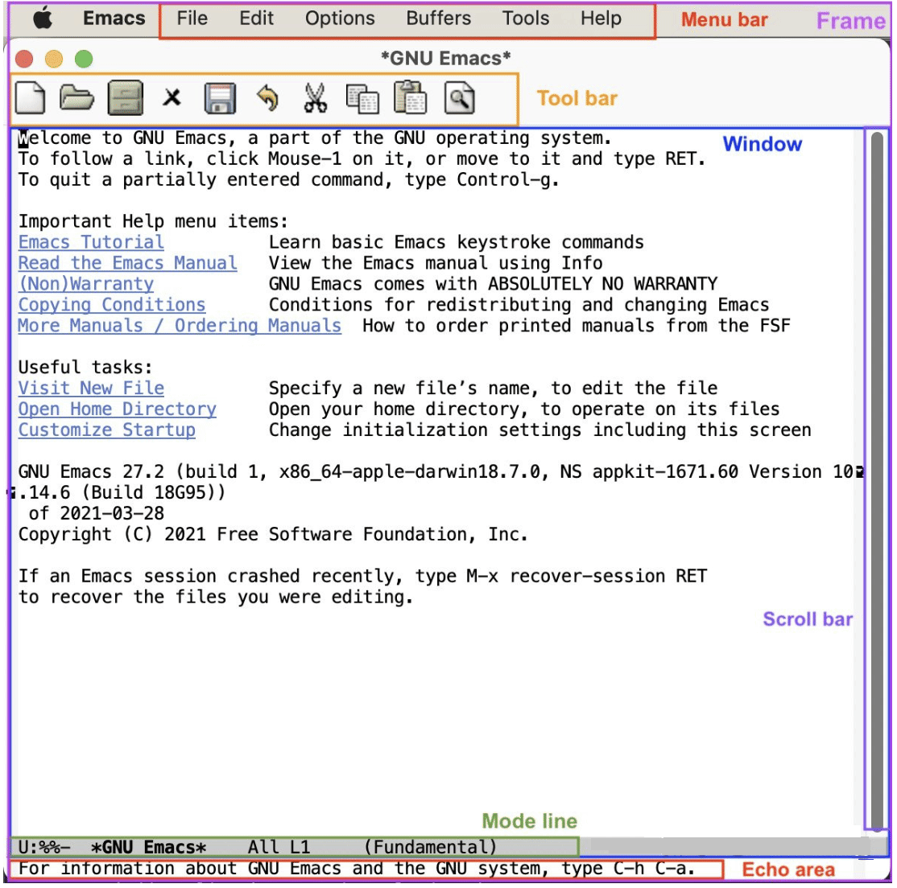]]
Frame如果用图形界面打开 Emacs 程序，那么一整个程序窗口被称为 Frame。
如果打开了多个窗口就有多个 Frame；如果在终端内打开 Emacs，那么 Emacs 所占据的整个终端的界面被称为 Frame。上图都是一个 Frame。
Menu bar即菜单栏，在 Frame 的最上方。默认包括了 File、Edit…… 等等下拉菜单。
在终端中不能用鼠标时，需要用
menu-bar-open命令打开，对应快捷键< f10>。此外还有一个M-`键（对应命令tmm-menubar）可以从下方 展开互动界面打开菜单。Tool bar即工具栏。只在图形界面时可以使用，就是上面图中那一些图标。
由于它十分丑陋且功能又很基本，所以正常笔者会关掉工具栏——在配置文件中 加入代码
(tool-bar-mode -1)。WindowTool bar 以下（如果有）、Echo area 以上这一整个区域，就 是 Window，即窗口。
这也是Buffer，即编辑区域。编写操作都会在这里进行。
可以看到 Emacs 的窗口和我们日常使用电脑所说的窗口不是一个东西，一定 要注意，不然在配置、调用命令或者在网上搜索信息时会搞错。我们日常称为 窗口的在 Emacs 中被称为 Frame，而 Frame 内的核心区域才被称为 Window。
Mode line位于回显区正上方的一行被称为“状态栏”。 或叫 "模式行"。
状态栏上会显示一些信息，比如：
-:**- TUTORIAL.cn 63% L749 (Fundamental)63%显示的是光标在全文中的位置。L749光标所在行的行号*表示文件被修改(Fundamental)当前正使用的编辑模式。缺省的模式是 Fundamental，就是 你现在正在使用的这个。它是一种“主模式”。主模式都是可以用 M-x 启动 的扩展命令，M-x fundamental-mode 就可以切换到 Fundamental模式。它的内容可以自定义，也可以使用 smart-mode-line 插件进行管理。
Echo Area- 整个界面下方的一行就是"回显区"，用以打印各种简短的信
息。也叫
minibuffer。例如输出信息，M-x操作等。 Scroll bar图形界面时 Window 的最右侧有一滚动条。
如果不需要用滚动条，在配置中加入
(when (display-graphic-p) (toggle-scroll-bar -1))表示在是用图形界 面时关闭滚动条。Cursor- 光标。光标是一个 1 字符宽的方块，但其真正表达的位置是其 左侧的长边，即两字符之间。
Point- 光标所在的位置称为 Point。区别于光标的是，光标有且只有一 个，但 Point 是针对 Buffer 的，每个 Buffer 都有一个 Point。许多命令 的触发都要读取 Point 信息。
附录
| 操作描述 | 快捷键 | 命令名 |
|---|---|---|
| 下拉菜单栏 | <f10> | menu-bar-open |
| 互动菜单栏 | M-` | tmm-menubar |
Mode Line
- smart-mode-line
基本操作速记
功能键
- Meta：缩写
M，对应键盘按键(PC/Mac)：Alt / Option - Control：缩写
C，对应键盘按键(PC/Mac)：Ctrl / Controll
初学不用记太多，先学习一点点光标移动。
光标移动，形成肌肉记忆之前可通过速记法来记忆
- C-n，下移至下一行(速记：Nextline)。
- C-p，上移至前一行(速记：Previous line)。
- C-f，前移一个字符(速记：Forward)。
- C-b，后移一个字符(速记：Backforward)。
- C-a，移至行首， a 代表 ahead。
- C-e，移至行尾， e 代表 end。
- C-k，从光标位置到行尾删除(速记：Kill)。
- M-<，回到编辑区域最开始位置(速记：<)。
- M->，去往编辑区域最后的位置(速记：>)。
- C-v，向下翻一屏。
- M-v，向上翻一屏。
功能键
Emacs 中有五个功能键： Control、 Meta、 Shift、 Super、 Hyper。那是几 十年前的键盘上的按键名称，其中的 Hyper 键更是在现代键盘上消失了。
- Meta：缩写
M，对应键盘按键(PC/Mac)：Alt / Option - Control：缩写
C，对应键盘按键(PC/Mac)：Ctrl / Controll - Shift：
S，对应键盘按键(PC/Mac)：Shift / Shift - Super：
s，对应键盘按键(PC/Mac)：Win / Command - Hyper：
H，对应键盘按键(PC/Mac)：无
其它键说明：
DEL: 意指退格键 (不是 删除(Delete) key)，从<backspace>翻译而来RET: 意指回车键SPC: 意指空格键ESC: 意指Escape键TAB: 意指Tab键<left>: 左方向键<right>: 右方向键
那么我们知道， Super 键在现代系统中起到了重要作用，因此 Emacs 平常不使 用和 Super 键相关的快捷键，Emacs 的绝大多数快捷键都是使用 Control 和 Meta 键，而其中一大部分都是只使用 Control 键。
尽管 Hyper 键已经消失了，但是 Emacs 依然可以使用这个功能键，例如如果读 者手上的键盘有一些不常用的按键，可以考虑设定为 Hyper 键，拓宽快捷键。
事实上 Emacs 中也有 Alt 键，但现在键盘上的 Alt 键都是被映射为 Meta， Alt 键也几乎不去使用了，为避免混淆就没有放到正文中介绍.
Emacs 用连字符表示 同时按下 。
- 我们用
C-a表示先按下 Control 键不要松，再按下 a 键。C-x b则 表示先按下 Control 键不松，按下 x 键，松开这两个键，按下 b 键。 C-S-<mouse-1>表示同时按下 Control 键和 Shift 键，然后鼠标左键点 击。这里提到了鼠标是因为 Emacs 图形界面支持鼠标操作，并且在有些场景 下的确使用鼠标更为方便（例如无规律的多光标选择）。- 特别的，
Meta键做前缀有两种按法，例如M-x可以按住 Meta 键不要 松，再按下 x 键，也可以先按一下Esc键松开，再按一下 x 键。后者是 为了在应对无法使用 Meta 键的硬件或系统，但实际操作有很多不便。因此读 者尽可能使用Alt/Option作为 Meta 键来按。
一些终端例如 Mac 自带的终端默认不会把 Option 键作为 Meta 传入，但只需 打开它的偏好设置，其中 "Profiles - Keyboard" 中有一项 "将 Option 用作 Meta 键"，勾选即可。iTerm2 同理。
长时间使用 Control 键可能会小指疼，这时可以改用 手掌 来按。不过这里
还是会介绍几个方案给需要的朋友。
改键-Control 键改到了大小写锁定键上
交换 <大写锁定键> 与 <control>.
Emacs 常常使用 以 <control> 开始的快捷键。 在 Emacs 诞生之初时通用的
键盘, <control> 确实是在当今键盘 <caps lock> 的位置的。 交换这两个
键的具体操作在不同系统上也不一样。
- windows
- 需要去修改注册表. 方法如下
<Win> + r输入regedit打开注册表- 找到
[HKEY_LOCAL_MACHINE\SYSTEM\CurrentControlSet\Control\Keyboard Layout] 打开或新建
Scancode文件, 把内容修改为00 00 00 00 00 00 00 00 03 00 00 00 1d 00 3a 00 3a 00 1d 00 00 00 00 00
- 保存
Scancode文件并重启电脑
- ubuntu
在 Ubuntu 下, 可以使用图形界面的
gnome-tweaks找到交换<caps lock>和<control>的设置。安装gnome-tweaks可以通过apt进行:sudo apt install gnome-tweaks
然后打开
gnome-tweaks的键盘设置, 在高级选项里有关于<control>键的设置。你不仅仅可以交换它与<caps lock>, 也可以进行许多别的设置。又或者, 在很多 Linux 系统的命令行下输入
setxkbmap -option ctrl:swapcaps
也可以交换
<caps lock>与<control>。- MacOS
- 在 MacOS 中, 大家可以在
system->keyboard->functional keys中调整所有功能键的键位.
推荐一款改键软件 Karabiner-Elements，它甚至可以将 Emacs 常用键位完全 拓展到全局。
改键-Mac-Windows统一键位
改键的作用除了可以让你的小拇指更健康以外，还可以统一我们的交流语言， 让大家后面学习过程可以更轻松。
- M(eta)：统一对应键盘按键(PC/Mac)：left windows/option
- s(uper)：统一对应键盘按键(PC/Mac)：left Alt/command
- C(trl)：统一对应键盘按键(PC/Mac): Caps Lock
Mac 只需要改大写键，Windows 对齐mac的布局。
- MacOS
- 在 MacOS 中, 大家可以在
system->keyboard->functional keys中调整所有功能键的键位.
Windows 改键方法:
SharpKeys， AutoHotkey 工具任选一种。
使用 SharpKeys 来把 Left Window 键改成 Left Alt 键，Left Alt 键改成 A pp 键，大小写键改成 Ctrl 键。
官方下载：https://github.com/randyrants/sharpkeys，安装后 win 菜单搜 索 sharpkey，修改完成后写入注册表重新开机生效。
| 原键 | 目标键 | 说明 |
| Caps Lock(00_3A) | Left Ctrl(01_1D) | 大小写键改成Ctrl键 |
| Left Alt(00_38) | Application(E0_5D) | 左Alt键改成App键 |
| Left Windows(E0_5B) | Left Alt(00_38) | 左视窗键改成左Alt键 |
| Right Alt(E0_38) | Left Windows(E0_5B) | 右Alt键改成左视窗键 |
使用 AutoHotkey 把大写锁定键替换为 Control 键的教程：移动 Control 键 (Moving The Ctrl Key)
这里win10使用的AutoHotkey工具。
#创建文件capslock.ahk 添加内容 CapsLock::Ctrl #capslock.ahk然后点击RunScript就好啦
Emacs 默认 Alt 键就是 Meta，而 App 键我们改成 super 键，可以通过下面 的 Elisp 代码来完成。
window 配置
(setq w32-apps-modifier 'super) ; 通过SharpKeys改成了 Application
将配置放到 emacs 配置文件中，默认是没有这里直接新建一个 $HOME/.emacs
.d/init.el C-y 复制 , 语句后执行 C-x C-e 生效。
MAC 改键方法：
Mac 下面大小写键改成 Ctrl 键，Mac 系列只需要修改这个按键，其他的按键可 以通过 Elisp 来修改：
键盘设置 –> Modifier keys
{kind=link}
mac 配置
;; Opt -> meta : M, Cmd -> super : s (setq mac-option-modifier 'meta mac-command-modifier 'super)
定义常用操作
现在我们可以把 Mac 下面的复制、粘贴、剪切、全选等命令移植到 Emacs 中 来了，并且这一套按键是跨平台的。
(global-set-key (kbd "s-a") 'mark-whole-buffer) ;;对应Windows上面的Ctrl-a 全选 (global-set-key (kbd "s-c") 'kill-ring-save) ;;对应Windows上面的Ctrl-c 复制 (global-set-key (kbd "s-s") 'save-buffer) ;; 对应Windows上面的Ctrl-s 保存 (global-set-key (kbd "s-v") 'yank) ;对应Windows上面的Ctrl-v 粘贴 (global-set-key (kbd "s-z") 'undo) ;对应Windows上面的Ctrol-z 撤销
按键绑定设置
- Global : global-(set|unset)-key
- Local : local-(set|unset)-key
Mode模式
Emacs 的核心要素之一就是模式（mode）。一个模式就对应着一组环境，不同模 式可以分别进行配置，应对不同的场景。例如，编写 C++ 代码时就对应 c++-mo de，编写 Python时使用 python-mode。在不同的语言的 mode 中，编译、执行 的方式都是不同的，这样只要事先定义好 mode，就可以在使用过程中方便切换 各种需求场景。
Emacs mode 分两类，主模式（Major mode）和次模式（Minor mode）。
主要模式
主模式默认根据 Buffer 的文件类型来选择，一个 Buffer 只能对应一个主模式。
例如，Emacs 发现你打开了 .cpp 为后缀的文件，就会把 Buffer 自动设置成 c++-mode，发现你打开了 .py 后缀的文件，就把相应 Buffer 自动设置为 pyth on-mode，最直观的区别是 Emacs 为不同语言的源码提供了不同的语法高亮。 主模式的名字会显示在 Mode line 上。
我们也可以手动切换主模式，只需要按下 M-x ，输入相应的模式名称即可。通 常来说其实我们不需要手动设置。
最基本的主模式是 Fundamental mode，就是没有进行任何配置的模式。
在 Emacs 中，Major Mode 又分为三种，
text-mode，用于编辑文本文件special-mode，特殊模式（很少见）prog-mode，所有的编程语言的父模式
在每一个模式（mode）中它的名称与各个变量还有函数都是有特定的命名规则，
比如所有的模式都被命名为 ModeName-mode ，里面所设置的快捷键则为 Mo
deName-mode-key-map ，而所有的钩子则会被命名为 ModeName-mode-hook 。
使用 C-h m 查看用了哪些 mode。
次要模式
同一个 Buffer 可以有多个次模式，次模式可以进一步调整、增加一些配置。 通常来说，插件都是靠次模式来起作用的。当我们安装插件时，插件的官网会提 示如何设置这个插件，其中大多都会使用次模式。
Mode hook
每一个主模式都对应着一个 Mode hook，hook 是挂钩的意思，Mode hook 的作 用就是当启动一个主模式时，自动执行一些已经“挂钩”到这个主模式的函数或 次模式。由此，我们可以自由地向一个主模式上挂上各种功能，在启动这个主模 式时就可以自动跟随着一起启动。
Mode hook 的名字通常就是“主模式名-hook”。例如，我们希望在主模式“文 本文件模式” text-mode 时启动次模式“检查拼写” flyspell-mode ，我们就 可以这样写配置：
(add-hook 'text-mode-hook 'flyspell-mode)
这样当我们打开 txt 文件时，会自动开启检查拼写功能。
text-mode 是基于文本的文件的一个主模式，有一些其它主模式是由它派生，例 如 html-mode。而相对的，还有编程模式 prog-mode，各种编程语言对应的主模 式都是由它派生，包括我们上文提到的 c++-mode 和 python-mode。那么如果我 们希望在任何编程语言时都有一些共同需要的功能，例如编程时我们希望有代码 块折叠功能，就为 prog-mode-hook 挂上相应功能就好。
(add-hook 'prog-mode-hook #'hs-minor-mode)
Help 帮助
minibuffer增强vertico
vertico垂直展示内容更友好。
刷新包缓存 M-x package-refreesh-contents ， 安装包 M-x package-install 输入 vertico
(vertico-mode 1)
帮助系统是你最好的朋友
要成为一个称职的用户，你需要掌握帮助系统。
所有帮助命令都以 C-h 键开头。开始使用这些：
- C-h f
- 函数的帮助信息
- C-h v
- 变量的帮助信息
- C-h o
- 函数、变量、或的帮助信息
- C-h k
- 快捷键绑定的帮助信息
- C-h w
- 有关给定命令绑定到何处的帮助
- C-h m
- 当前模式(主要和次要模式)的帮助
当光标在函数或变量的符号（专有名称）上时， C-h f 、 C-h v 或 C-h o
将使用该选项作为默认选项。
因为 emacs 是自文档编辑器，里面的函数变量都能找到它的文档，后续在使用 emacs 过程中会非常有帮助。
请注意，当函数或变量的符号包含两个短划线时 -- 那么这意味着它打算在文
件/包中使用。如果您计划将它们合并到您的设置中，请小心，因为它们可能会
在没有事先通知的情况下更改。
范例：
如查看C-x C-s，使用C-h k再输入C-x C-s 如save-buffer功能，使用C-h f再输入save-buffer
C-h 作为前缀和后缀
C-h 除了被用作前缀，还可以选择使用此键作为任何尚未结束的序列的后缀。
例如，Emacs 有很多以 C-x r 开头的命令。这些操作与寄存器、书签和矩形
操作有关。为了生成一个帮助缓冲区，向我们显示该序列的所有扩展，我们附加
C-h 到它，所以 C-x r C-h 。
您甚至可以使用 C-h 作为 C-h 的前缀的后缀作。这是一种奇特的说法，它
将 C-h C-h 提供有关可用帮助功能的特殊视图。
如果你使用的 embark 软件包，并且不想为 C-h 后缀生成帮助缓冲区，请
将以下内容添加到您的配置中：
(setq prefix-help-command #'embark-prefix-help-command)
如何阅读手册
Emacs 是一款功能强大的软件。只有在您熟悉它之后，它的潜力才会被释放出来。 这需要承诺、耐心和毅力。
换句话说：你一步一步地学习 Emacs。该过程的一部分涉及阅读通过内置信息阅
读器提供的大量文档。通过 C-h i 访问它，然后使用 C-h m 来了解有关
该模式的所有信息。
C-h i内置很多文档。使用C-h m查看可操作的快捷键C-h m提供关于这个主模式下快捷键说明- m 指定菜单名
- n 下一节点
- p 上一节点
- ^ 向上移动一个节点
- d 到 Info 节点
范例：查看Elisp文档
C-h i内置文档。mElisp : 搜索 Elisp 节点, 回车进入文档mlist : 搜索 Elisp 文档中 list 章节mcons cells : 搜索 list 章节中 cons cells 小节- …
对新手更好的文档是Emacs 手册，它是一个你经常访问的特殊文件，所以它有自己的键绑定：
C-h r （将“r”视为“read”的助记符）。
与所有技术文档一样，您不会一次性阅读它们。它们不是故事。相反，你一次研 究一个片段。一旦你了解了它，你就会进入下一个，逐渐拓宽你的知识（或 完善你的设置）。
用 Emacs Lisp 思考
让我们从一个非常简单的场景开始。
- 假设您要编写一个将绑定到键的函数。
- 这些被称为“命令”，因为它们是交互式的。
- 此命令将在给定方向上一次将点（光标）移动 15 行。
- 键入
C-h k并用C-norC-p（移动到下一行/上一行的命令）跟踪它。你 将了解到它们分别称为next-line和previous-line。帮助缓冲区告诉 你，这些命令接受一个数值参数来一次移动 N 行。它还包括指向源代码的直 接链接。通过查看源代码，您最终会推断出函数是用defun关键字（技术 上是 Lisp 宏）声明的。
考虑到这些，你可以切换到 *scratch* 缓冲区并开始试验：
(defun my-next-15-lines () "Move to the next 15 lines." (interactive) ; this turns a function into a command (next-line 15)) (defun my-previous-15-lines () "Move to the previous 15 lines." (interactive) (previous-line 15))
如果你仔细阅读上述帮助缓冲区，你将意识到你的代码可以改进，因为自定义代
码的正确命令是使用 forward-line 。因此，您可以相应地更新内容：
(defun my-next-15-lines () "Move to the next 15 lines." (interactive) (forward-line 15)) (defun my-previous-15-lines () "Move to the previous 15 lines." (interactive) (forward-line -15))
现在将它们绑定到 Ctrl+Shift，然后绑定到 n/p。要了解 Emacs 如何表示任何
键，请使用 C-h k 并键入它。你会得到 C-S-n 和 C-S-p 。
(define-key global-map (kbd "C-S-n") #'my-next-15-lines) (define-key global-map (kbd "C-S-p") #'my-previous-15-lines)
请注意，这 global-map 适用于所有主要模式。许多命令仅适用于特定模式，
因此有自己的键盘映射。 C-h k 缓冲区会相应地通知您。
试验 Elisp 条件
在前面的示例的基础上，让我们将一些变量和条件添加到组合中。下面是一个基 本变量：
(defvar my-first-toggle nil "If non-nil, do stuff.")
[ 通过移动到代码的末尾并键入代码 C-x C-e ，或者在 Elisp 缓冲区中键入
C-M-x 。也有 M-: 。]
让我们进入 scratch 并开始实验：
(if my-first-toggle (message "It is true") (message "It is not true"))
C-j 运行最近距离的代码
虽然这可能不切实际，但让我们添加第三个命令，它重用前两个命令：
(defun my-next-15-lines () "Move to the next 15 lines." (interactive) (forward-line 15)) (defun my-previous-15-lines () "Move to the previous 15 lines." (interactive) (forward-line -15)) (defun my-next-or-prev-15-lines () "Move to the next or previous 15 lines. The motion depends on the value of `my-first-toggle'." (interactive) (if my-first-toggle (my-next-15-lines) (my-previous-15-lines)))
在这种情况下，更现实的方案是让命令接受参数（即控制其行为的参数）。最简 单的是 C-u 前缀参数，您可以在命令的键之前键入该参数。
(defun my-next-or-prev-15-lines (&optional arg) "Move to the next or previous 15 lines. With optional prefix ARG, move to the next lines. Else to the previous ones." (interactive "P") ;;(if arg (if my-first-toggle (my-next-15-lines) (my-previous-15-lines)))
键入 C-h f 并搜索 interactive 。它会告诉你它接受的其他预设（你总是
可以编写自己的预设，但那是高级的东西）。
请注意该 &optional 类型的使用。如果没有它，如果该命令未使用 prefix
参数调用即arg，则该命令将返回错误。
练习并保持耐心
学习基础知识。永远有用的技能是使用帮助系统。
要有耐心。专业知识没有捷径可走。所有专家都是从菜鸟开始的。这也意味着你 通过反复试验的过程从错误中吸取教训：没关系。
通过尝试理解小模式来修补 Elisp。然后尝试将它们组合成更大的设计的方法。
用其他学习材料补充官方资源，例如博客文章、视频和其他人的代码。
永远——永远——阅读文档！
完整内容
;;;; C-h k find command of =C-n= or =C-p= ;;; 定义函数 (defun my-next-15-lines () "Move to the next 15 lines." (interactive) ; this turns a function into a command (next-line 15) ; instead of forward-line (forwad-line 15)) (defun my-previous-15-lines () "Move to the previous 15 lines." (interactive) (previous-line 15)) ;;; 绑定快捷键 (define-key global-map (kbd "C-S-n") #'my-next-15-lines) (define-key global-map (kbd "C-S-p") #'my-previous-15-lines) ;;; 调用 (defvar my-first-toggle nil "If non-ni, do stuff.") (if my-first-toggle (message "It is true") (message "It is no true")) (defun my-next-or-prev-15-lines () "Move to the next or previous 15 lines. The motion depends on the value of `my-first-toggle'." (interactive) (if my-first-toggle (my-next-15-lines) (my-previous-15-lines))) ;; 可选参数arg (defun my-next-or-prev-15-lines (&optional arg) "Move to the next or previous 15 lines. With optional prefix ARG, move to the next lines. Else to the previous ones." (interactive "P") (if my-first-toggle (if my-first-toggle (my-next-15-lines) (my-previous-15-lines)))
其它
Emacs 快速指南：
C-h t请 30 分钟内读完。M-x help-with-tutorial-spec-language查看不同语言的教程，中文是Chinese-GB- emacs 手册：
C-h r。C-h m查看帮助信息。n p ^下上页，上一节- Online : Emacs manual
- 命令历史: M-x list-command-history
C-h ? ：帮助的帮助，列出帮助项。同 C-h C-h C-h a topics <RET> 在帮助中搜索相关主题 C-h C-f 查看FAQ C-h c ：简要描述快捷键功能。例如 C-h c C-p，会在最下面出现："C-p runs the command previous-line"，告诉你 C-p 键对应的命令是 "previous-line"。 C-h d：列出含某一关键词的符号的文档 C-h b ：键绑定
下面的这些函数可以让你找到不同函数，变量以及快捷键所定义的文件位置。 因为非常常用 所以我们建议将其设置为与查找文档类似的快捷键（如下所示），
可以把它们绑定到配置中
;; 查询函数、变量、key 文件位置 (global-set-key (kbd "C-h C-f") 'find-function) (global-set-key (kbd "C-h C-v") 'find-variable) (global-set-key (kbd "C-h C-k") 'find-function-on-key)
Emacs Lisp学习:
叶文彬的Emacs Lisp教程， 本版可以下载PDF及
参考：
改变外观
图形化配置
- 执行命令
M-x customize - 在搜索框中，搜索要修改的配置，如
- 关闭菜单栏，搜索
menu-bar-mode，点击Toggle为off，再点击State为Set for Current Seesion保存到当前会话。 - 关闭工具栏，搜索
tool-bar-mode，操作同上。 - 关闭滚动条，搜索
scroll-bar-mode，点击value Menu为nil，再点击State保存。
- 关闭菜单栏，搜索
图形化配置的优劣势
- 优点：不用写Elisp代码
- 缺点：
- 搜索
- 生成配置代码只能是单一文件配置，显得凌乱。
- 扩展的配置不容易进行。
- 涉及到复杂逻辑的不方便配置。如条件判断。
其他基础讲解
基础
在Emacs 中大家需要理解的一个核心概念就是命令。在 Emacs 中所有的操作， 无论简单复杂都是命令。
Emacs 这个单词就来自于 macro, 即宏命令。比如说我们想执行打开一个文件的 操作, 有3种方式等价的操作方式:
- 从菜单栏里:
file->visit new file M-x find-file- 用快捷键
C-x C-f并输入文件名
Emacs 中有许多有用的命令。你未来也可以自己通过 elisp 语言编写自己命
令。Emacs 把其中最常用的命令都绑定了快捷键，用户自己也可以设置自己的
快捷键。当我们用熟了之后, 很多快捷键就会像打字一样形成肌肉记忆。作为
新手, 我们有很多键盘的快捷操作可以用鼠标代替。
新手必知的几个快捷键
在表中， C 表示 control 键， M 表示 alt 。这也是 Emacs 快捷键
通用写法。 最右边一列是快捷键对应的命令名，也就是第一列所有的快捷键都
等价于 M-x 加上第三列。
C-g: 中止当前一!切!命!令!keyboard-quitC-/: 撤销命令undo
文件操作
C-x C-f: 打开文件，没有则会创建find-fileC-x C-s: 保存文件save-bufferC-x b: 切换文件 (缓冲区)switch-to-bufferC-x 1: 关闭其它窗口delete-other-window
文本处理
M-w: 复制kill-ring-saveC-w: 剪切kill-regionC-y: 粘贴yank
elisp代码执行：
C-x C-e：eval-last-sexp执行光标所在代码M-x eval-region：执行选中区域代码M-x eval-buffer：执行当前缓冲区代码M-x load-file <ENTER> FILE_NAME：执行指定文件代码C-j: 执行最近距离代码，并打印输出以当前位置C-M-x: runs the command eval-defunM-:: runs the command eval-expressionM-x ielm类似于ipython交互式运行
文件夹
C-x C-f: 打开文件find-fileS-6: 上级目录
C-x C-q目录下进入编辑模式，可改文件名C-c C-c: 完成C-c C-k: 取消
窗口操作
C-x 1: 仅保留当前窗口C-x 2: 将当前窗口分到上边C-x 3: 将当前窗口分到右边C-x 0: 关闭当前窗口C-x C-0, C-x C--, C-x C-+: 开启放大缩小功能，=放大，-缩小，0还原text-scale-adjus
其它：
- C-u 重复次数: 如C-u 8 C-f，移动8个字符
C-h f/v/k: 查询命令/变量/快捷键describe-function/variable/keyC-h m: 来显示当前所有开启 的全部 Minor Mode 的信息
查看所有buffer： 点击菜单栏中的buffer
切换buffer
- 方法1： 菜单中点击 buffer
- 方法2：鼠标左键或右键点击文件向前或向后切换buffer
窗口大小：
- 鼠标在状态栏，上下拖动
窗口关闭：
- 方法1：鼠标停在状态栏，右键
- 方法2：菜单栏选择 Remove Other Windows 只保留当前buffer，New Window Below 水平
- 方法3：鼠标滚轮按住状态栏，拖动
- 方法4：快捷键 C-x 1
主题：
- Options –> Customize Emacs –> Custom Themes –> tongo-dark
- 保存 Save Theme Settings 再状态栏文件切换buffer
中止命令与撤销命令
在 Emacs 中发生误操作时，你需要知道如何中止与撤销命令。 当你的快捷键输
入一半想反悔时 (是的，Emacs 的快捷键可以很长!)，可以使用 C-g 重新来
输入，又或者 Emacs 在执行命令时卡住了，你可以通过 C-g 来让它恢复正常。
如果你需要撤回上一条命令, 则需要使用 C-/ 。但值得注意的是， 撤回撤回
命令的命令也是同一个键；这偶尔会让人抓狂。不过幸好有 undo-tree 可视化
撤销状态插件
文件与窗口相关命令
下面我们介绍 Emacs 中最基础的几个管理界面的快捷键。
首先是打开文件，~C-x C-f~ ，命令名是 find-file. 这里的 find 隐含
Emacs 会根据不同情况执行不同操作: 若文件存在, 则是普通的打开文件; 若文
件不存在, 则是打开一个新文件。
第二个是保存文件， C-x C-s ，对应 save-buffer ，即把当前缓冲区 (更
新后) 的内容写进文件里。
大多数情况将缓冲区 (buffer) 等同于文件不会影响你的 Emacs 使用。 这里简
单讲讲它们的不同。文件存在于电脑硬盘上，而Emacs 的缓冲区只显示文件内容。
当你把文件内容读入缓冲区以后，又在 Emacs 外修改了文件的内容，缓冲区中
的内容并不会改变，除非你明确指示 Emacs 重新读取。而在 Windows 中，一个
文件同时只能被一个 Windows 程序打开。 Emacs 的缓冲区也不一定对应着文
件，在模式栏大家可以看到当前缓冲区的名字。 名字被两个 * 号包含的一般
是非文件的缓冲区，例如 *Message* 用于显示 Emacs 给用户的信息，编译 L
aTeX 时 *Output* 会存放编译输出结果等。
第三个命令是切换缓冲区/文件， C-x b ，对应 switch-to-buffer 。 执
行后在最下方的小缓冲区会提示输入你想要切换的缓冲区名字，默认是上一个显
示的缓冲区，直接回车就行。
在 Emacs 中同时显示多个缓冲区的方法是打开多个窗口 (window)，然后在每个
窗口中显示一个缓冲区。有时 Emacs 自动创建新的窗口，例如展示帮助信息时。
新手最常用的操作是保留当前光标所在窗口，而关掉其它所有窗口。这可以通过，
C-x 1 ，即 delete-other-window 实现。我们可以用鼠标辅助我们在不同窗
口间切换。
帮助命令
Emacs 中查询帮助信息的快捷键是 C-h <字母> 。常用的有 C-h f ，查询
命令， C-h v ，查询变量，以及 C-h k ，查询快捷键。通常 C-h 命令
会自动创建新的窗口显示帮助信息。我们可以先把光标移到我们工作的缓冲区，
然后用 C-x 1 关闭掉帮助信息窗口。注意此时帮助信息的缓冲区并没有关闭，
重新显示可以通过 C-x b 并查找以 *help* 命名的缓冲区。
复制/剪切/粘贴
Emacs 有自己一套复制/剪切/粘贴的快捷键: M-w / C-w / C-y 。 这和
一般程序的 C-c / C-x / C-v 不同，需要大家习惯。所有复制或剪切的
内容都会进入一个叫 kill-ring 的地方，它相当于一个剪粘版的历史记录。
粘贴快捷键 C-y 会粘贴最近一条记录，如果你想访问之前的记录，可以紧跟
着 C-y 再按下一次或多次 ~M-y~。
新手快速配置和安装最简插件
Emacs 插件管理
接下来我们介绍如何更好地管理 Emacs 插件, 或叫 Emacs 包 (package)。插件
可以给我们带来更多的功能，是 Emacs 使用中不可缺少的一环。 插件的安装和
设置与其它的 Emacs 设置一样，都放在 Emacs 的启动文件 ~/.emacs.d/ini
t.el 中。关于插件安装与设置，我推荐大家使用现在常用的 use-package
语法，它的语法更简洁，还可以很方便地自动安装插件。
use-package管理插件的插件
- 更简洁的语法
- 更方便自动安装
两种下载和安装插件的方式
package.el：内置straight.el: 需要访问 github.com 以及使用git- msys2 安装 不行
pacman -S git
我们在 package.el 和 straight.el 的设置示例中都手动检查并安装了 us
e-package 。Emacs 29 后 use-package 已经是内置插件，相关代码可以省
去。
package.el 设置示例
以下我们提供了 package.el 的一个设置示例。大家需要把如下代码放入设置
文件 ~/.emacs.d/init.el 中。
;; -*- lexical-binding: t; -*- ;; 静态作用域声明必须放在首行 ;; 把 Emacs 自动添加的代码放到 custom.el 中 (setq custom-file (expand-file-name "custom.el" user-emacs-directory)) ;;======================================== ;; 使用 package.el 设置 Emacs 插件管理 ;;======================================== (require 'package) ; 加载 package.el (setq package-check-signature nil) ; 如果检查签名有问题可以加入这一行 ;; 添加仓库位置 (add-to-list 'package-archives '("melpa" . "http://melpa.org/packages/") t) (add-to-list 'package-archives '("melpa-stable" . "http://stable.melpa.org/packages/") t) ;; 国内用户也可以使用清华的镜像网站. 用下面的代码代替上面两行 ;; (setq package-archives ;; '(("gnu" . "http://mirrors.tuna.tsinghua.edu.cn/elpa/gnu/") ;; ("nongnu" . "http://mirrors.tuna.tsinghua.edu.cn/elpa/nongnu/") ;; ("melpa-stable" . "http://mirrors.tuna.tsinghua.edu.cn/elpa/stable-melpa/") ;; ("melpa" . "http://mirrors.tuna.tsinghua.edu.cn/elpa/melpa/"))) (unless (bound-and-true-p package--initialized) (package-initialize)) ;; 刷新软件源索引 ;;防止反复调用 package-refresh-contents 会影响加载速度 (when (not package-archive-contents) (package-refresh-contents)) ;; 自动安装 use-package. 在Emacs 29中已内置故可省略 (unless (package-installed-p 'use-package) (package-install 'use-package)) ;; 自动安装所有使用 use-package 声明的插件 (require 'use-package-ensure) (setq use-package-always-ensure t) ;;======================================== ;; Emacs 插件管理设置完毕 ;;======================================== ;;======================================== ;; 这段代码放在最后, 加载 Emacs 自动设置的变量 (if (file-exists-p custom-file) (load-file custom-file)) ;;========================================
这段代码的第一部分先启用了 package.el ，然后通过 package-archives
变量设置了下载插件的网址。在国内也可以使用清华的软件源。接下来 packag
e-refresh-contents 刷新了插件列表。然后我们自动检测 use-package 是
否安装，如果没有安装则自动下载安装。最后，我们设置了 use-package-alwa
ys-ensure 变量为 t ，这样以后我们所有用 use-package 声明的插件都
会自动安装。
straight.el 设置示例
- 先安装git
因为 straight.el 与 package.el 难以共存，所以我们必须早早手动禁用
内置的 package.el 。这必须修改一个我们平时很少用的 ~emacs.d/early-init.el.
- 在
early-init.el中加入，并重启emacs
;; 在执行 init.el 前禁用 package.el (setq package-enable-at-startup nil)
- 在
init.el中加入以下代码:
;; -*- lexical-binding: t; -*- ;;======================================== ;; 把 Emacs 自动添加的代码放到 custom.el 中 (setq custom-file (expand-file-name "custom.el" user-emacs-directory)) ;; 使用 straight.el 设置 Emacs 插件管理 ;;======================================== (defvar bootstrap-version) ;; 修复 Emacs 29 修改了 native-compile 相关变量导致的 bug (unless (version<= emacs-version "28.2") (setq straight-repository-branch "develop")) ;; 以下代码从 straight.el 主页 https://github.com/radian-software/straight.el 上复制 (let ((bootstrap-file (expand-file-name "straight/repos/straight.el/bootstrap.el" user-emacs-directory)) (bootstrap-version 6)) (unless (file-exists-p bootstrap-file) (with-current-buffer (url-retrieve-synchronously "https://raw.githubusercontent.com/radian-software/straight.el/develop/install.el" 'silent 'inhibit-cookies) (goto-char (point-max)) (eval-print-last-sexp))) (load bootstrap-file nil 'nomessage)) (straight-use-package 'use-package) ; 用 straight.el 安装 use-package 声明的插件 (setq straight-use-package-by-default t) ; 自动安装所有插件, 相当于加入 :straight t ;;======================================== ;; Emacs 插件管理设置完毕 ;;======================================== ;;======================================== ;; 这段代码放在最后, 加载 Emacs 自动设置的变量 (if (file-exists-p custom-file) (load-file custom-file)) ;;========================================
这里大部分的代码是 straight.el 的 github 主页上提供的下载与安装 s
traight 的代码，然后再用 straight 安装 use-package 。最后我用把
straight-use-package-by-default 变量设为 t ，这是在使用
straight 时进行插件自动安装的设置。
推荐插件
安装插件的方法
- 把相关的
use-package代码块复制到init.el - 重启emacs，或者在
init.el界面使用M-x eval-buffer加载代码块。
更快熟悉 emacs
- 快捷键提示
which-key插件 - 显示当前快捷键及绑定命令
keycast插件 - 更好的帮助界面
helpful插件
插件组合1: 更多的帮助信息
which-key + keycast + helpful. 安装代码如下
(use-package which-key :custom (which-key-idle-delay 0.5) ; 延迟时间, 以秒为单位 :config (which-key-mode)) ; 启用 which-key 模式 (use-package keycast :config (keycast-header-line-mode 1)) ; 在标题显示 (use-package helpful :bind ;; 重新定向 C-h 开始的命令 (([remap describe-function] . #'helpful-callable) ([remap describe-variable] . #'helpful-variable) ([remap describe-key] . #'helpful-key) ([remap describe-command] . #'helpful-command) ([remap describe-symbol] . #'helpful-symbol) ("C-h C-d" . #'helpful-at-point) ("C-h F" . #'helpful-function)))
which-key 可以在按下快捷键的时候自动提示你接下来可能的快捷键。比如按
下 C-h ，就会提示接下来你按 v ， f ， k 等可以查看哪种类型的帮
助。如果把鼠标悬停在选项上也会在浮窗中显示对应命令的帮助。
keycast 则会显示当前你使用的快捷键及对应的命令名。它有 4 种显示的位
置。 代码中我们选择在 headrer-line ，也就是 Emacs 窗口的最上方显示。
如果大家想在别的地方显示，比如模式栏，可以把 (keycast-header-line-mod
e 1) 改成 (keycast-mode-line-mode 1) 。
这两个插件可以帮助新手快速熟悉 Emacs 的快捷键和命令。对于老用户来说， 也可以帮你快速熟悉新安装的插件。
helpful 则优化了帮助界面的信息显示，包括更多有用的信息和高亮。
更好的补全界面
vertico + marginalia + orderless
- tab 补全
- C-n/C-p 上下浏览备选项
插件组合2: 更好的补全界面
在 Emacs 中输入命令或打开文件，切换缓冲区等等都会用到小缓冲区补全。 第二组插件是针对小缓冲区补全的。代码如下
(use-package vertico ; 竖式展开小缓冲区 :custom (verticle-cycle t) :config (vertico-mode)) (use-package marginalia ; 更多信息 :config (marginalia-mode)) (use-package orderless ; 乱序补全 :custom (completion-styles '(orderless basic)) (completion-category-defaults nil) (completion-category-overrides '((file (styles partial-completion)))))
vertico 把每个补全选项放在单独的一行，配合 marginalia 会在每个选项
的右边加入更多相关信息。
在小缓冲区中输入时，我们可以按 <tab> 补全当前的输入。加入 vertico
之后，我们可以用 C-n 和 C-p 或者上下移动键来选择不同的补全选项。
C-n 和 C-p 也是 Emacs 中上下移动光标的快捷键。
最后的 orderless 允许我们在小缓冲区补全时忽略单词的顺序。例如， 如
果我们输入 M-x ，想要匹配 find-file 命令，在默认情况下必须先输入
find ，再输入 file 才能找到 find-file 。如果你用了 orderless ，
则可以通过 file find 找到，或者部分的单词 fil fin <tab> 找到。
org mode 必要的配置
(setq org-src-preserve-indentation t) ; 编辑源代码时保留原有的缩进，t代表启用该功能。默认nil不保留. (setq org-src-tab-acts-natively t) ; 源代码编辑模式下，Tab键的行为与原生代码编辑器一致，t代表启用该功能, 默认t (setq org-edit-src-content-indentation 0) ; 代码块里缩进，0不缩进，默认是2 (重要)
配置
体验配置文件配置
创建文件 ～/.emacs 并写入以下内容：
(menu-bar-mode -1) (tool-bar-mode -1) (scroll-bar-mode -1)
Emacs 功能强大，但是部分功能默认情况下并未开启。下面就有几个例子，
编辑器内显示行号可使用 M-x linum-mode 来开启。
配置文件
(global-display-line-numbers-mode 1) ;显示行号 29版本。29之前用(global-linum-mode 1) (setq inhibit-startup-screen t) ; 尝试关掉启动界面 (toggle-frame-maximized) ; 全屏编辑器 (setq-default cursor-type 'bar) ; 更改光标的样式 (set-face-attribute 'default nil :height 150) ; 修改字号，大小为16pt (global-hl-line-mode t) ;; 高亮当前行 (electric-pair-mode t) ; 括号补全 (setq make-backup-files nil) ; 关闭文件自动备份。如果是有git来管理文件，备份文件没有太大意义。~ 为后缀的文件为自动生成的备份文件 (setq auto-save-default nil) ; 关闭自动保存文件，#为后缀的文件 (fset 'yes-or-no-p 'y-or-n-p) ;; 某个命令时需要输入 (yes or no)
配置文件位置
配置文件是一个包含了 Emacs Lisp 源码的文件，描述了 Emacs 应当以什么样的方式启动。在 Emacs 启动的时候会执行其中的代码，可以理解为启动时刻运行的脚本。
当启动 Emacs 时，Emacs 会自动依次寻找以下几个文件之一作为配置文件：
~/.emacs ~/.emacs.el ~/.emacs.d/init.el 或者 ~/.config/emacs/init.el (>=27)
找到就不再找了。
- 在正常初始化文件处理之前，先让自定义生效。这些自定义可以放在早期初始化文件中， ~/.config/emacs/early-init.el 或者 ~/.emacs.d/early-init.el 。
如果想用其它位置的自定义配置文件详见文档 。
可以预见，随着我们需要的功能越来越复杂，配置源码会越来越长，我们会希望能够分多个源文件进行不同功能的管理。所以使用 ~/.emacs.d/init.el 作为配置文件是最为常见的。 我们可以将其它各种源文件都放置在 ~/.emacs.d 目录下，方便管理。
注意： 如果希望把配置放在 ~/.emacs.d/init.el 文件中，那么需要手工删除 ~/.emacs 文件。
Emacs Lisp 简介
为什么要了解 Emacs Lisp
Emacs Lisp 是世界上第二古老高级编程语言 Lisp 专为 Emacs 打造的方言。官方提供了 Emacs Lisp 的入门介绍和参考手册。简单来说 Emacs Lisp 编程语言就是用来为 Emacs 编写逻辑，Emacs 的底层和绝大部分插件都是用这个语言写出来的。同时，作为用户，我们也可以使用 Emacs Lisp 编写一些自定义逻辑，甚至进一步形成插件。
Emacs Lisp 发源于 Lisp，而 Lisp 就是 “List Processing“ 的缩写，可以看出，Lisp 语言的核心就是列表（List）。在 Lisp 中，每一对小括号表达了一个列表。在执行 Lisp 时，会把列表的第一个元素作为函数名，后面的元素都是函数的参数。元素可以是一个“词”，也可以是另一个列表。可以类比 Shell 命令的写法，也是第一个词是命令名，而后面的是命令的参数。
例如， 2+3+4 在 Lisp 中写为：
(+ 2 3 4)
因为 + 就是个函数，后面是它的参数。 再如 4+(3-2) 写为：
(+ 4 (- 3 2))
那么在 Emacs 中基本都是做一些定义函数、变量等操作的 ，定义函数就用 defun 关键字， 设置变量的值用 setq 关键字。
这里就可以看出，Lisp 的变量名、函数名要比 C/C++、Python、Java 等主流语言的变量名的要求更宽松，Lisp 的变量名可以包含许多字符，所以如果看到了一些奇奇怪怪的名字，不要感到惊讶，就是变量名。
还有一些常见关键字如 let 为一组变量圈出一个作用域、 if/when/unless 表示条件语句。 t 表示 true，nil 表示空（相当于 C 语言的 NULL、Python 的 None）。
另外有一些不起眼的字符在 Lisp 中也是有意义的，例如单引号表达了后面的元素不进行执行而直接返回它本身：
'(Tom Amy John)
当括号前面有一个单引号时，表达了一个包含了三个元素的“数组”，而不是在执行一个叫 Tom 的函数。而
'ivy-set-prompt
表示把 ivy-set-prompt 这个函数作为一个对象传递给其它部分，也没有执行这个函数。
反引号（`）backquote（或称 backtick、grave accent）在 Lisp 中也有含义，和单引号类似，读者只需要知道有这回事就好，基本上不需要我们去编写这些内容。
Emacs Lisp 源码文件的后缀名是 .el 。
分号（;）以后的内容都是注释。
由于 Lisp 的整个语言结构就是列表的嵌套，所以它设定了一个非常强大的宏系统，可以用代码生成代码，甚至定义出一个与之前不太一样的新语言，常被称为方言。Emacs Lisp 就是这样诞生的。再加上其变量名可使用的字符很多，所以读者如果发现了一些不同寻常的写法，例如下文提到的 use-package，不要觉得惊讶，也请记住 Lisp 的语法本质始终都是列表。
学习基础的Elisp
请务必完成这篇教程（Learn X in Y Minutes）来了解 Elisp 的使用（阅读时间大约 15 分钟），你也可以在这里找到它的中文版。Emacs Lisp 为一个函数式的语言，所以它全部 功能都是由函数来实现的。
elisp一些关键词
在这一部分我们首先需要知道的是什么是 features 。在 Emacs 中每一个 feature 都 是一个 Elisp 符号，用于代表一个 Lisp 插件（Package）。
当一个插件调用 (provide 'symbol_name) 函数时，Emacs 就会将这个符号加入到 features 的列表中去。你可以在这里读到更多关于 feature 的内容。
接着我们需要弄明白的是 load-file , load , require , autoload 之间的区别。 （他们之间区别的链接已经再前面贴过了，你也可以在这里找到之前同样的链接）
简单来说， load-file 用于打开某一个指定的文件，用于当你不想让 Emacs 来去决定加 载某个配置文件时（ .el 或者 .elc 文件）。
load 搜索 load-path 中的路径并打开第一个所找到的匹配文件名的文件。此方法用于 你预先不知道文件路径的时候。
require 加载还未被加载的插件。首先它会查看变量 features 中是否存在所要加载的 符号如果不存在则使用上面提到的 load 将其载入。（有点类似于其他编程语言中的 import ）
autoload 用于仅在函数调用时加载文件，使用此方法可以大大节省编辑器的启动时间。
;;init-better-defaults.el 或elc文件内容 ;;;**autoload (defun test-autoload() (interactive) (message "test autoload)) ;; init.el文件内容 (autoload 'test-autoload "init-better-defaults") (test-autoload)
require 依赖 load=，=load 依赖 load-file
quote 的意思是不要执行后面的内容，返回它原本的内容，用 ' 引号表示（具体请参考下面的例子）
(print '(+ 1 1)) ;; -> (+ 1 1) (print (+ 1 1)) ;; -> 2
几种运行elisp代码的方法
elisp代码执行：
C-x C-e：eval-last-sexp这是最常用的，每次都要移动光标到要运行的代码后面。M-x eval-region：执行选中区域代码M-x eval-buffer：执行当前缓冲区代码M-x load-file <ENTER> FILE_NAME：执行指定文件代码C-j: 执行最近距离代码，并打印输出以当前位置C-M-x: runs the command eval-defun 执行整个代码块。写函数经常修改 然后运行，如果每次跑到最外面去C-x C-e，就很麻烦。光标只要在运行的代码块里就行了。M-:: runs the command eval-expressionM-x ielm类似于ipython交互式运行
工程化管理配置
将不同的配置代码放置到不同的文件中，使其模块化，这让我们的后续维护变得更加简单。 下面是我们 `~/.emacs.d/` 目录中的样子，
. ├── auto-save-list # 自动生成的保存数据 ├── bookmarks ├── custom.el # 存放使用编辑器接口产生的配置信息 ├── elpa # 下载的插件目录 ├── history ├── init.el # 我们的配置文件 ├── lisp │ ├── init-basic.el │ ├── init-elpa.el │ ├── init-org.el │ ├── init-recentf.el │ ├── init-site-lisp.el │ ├── init-themes.el │ └── init-utils.el ├── recentf # 最近访问的文件列表 └── site-lisp # 静态包目录
lisp 和 site-lisp 分别为存放不同功能的文件的目录和非插件源包目录。 默认自定义配置会保存在 init.el 文件中，拆分出自定义部分到 custom.el 方便管理。
创建必要的文件
mkdir lisp site-lisp touch custom.el
使用git管理你的文件
cd ~/.emacs.d git init vim .gitignore # 提交修改 git add . git commit -m 'first commit' git push # 每次功能填写完提交 tag git tag basic.v.1.0 git push tags # 快速恢复 git reset --hard HEAD
gitingnore 文件
*.elc CVS .svn *~ \#* .\#* /auto-save-list /bookmarks /custom.el /elpa /elpa-* /history /recentf site-lisp/package/ /eshell/ /server/ /transient/
重新加载文件
;; 重新加载文件 M-x global-auto-revert-mode (global-auto-revert-mode t)
emacs 下创建目录使用 `M-x make-directory`
使用多文件存储配置文件
Elisp 中并没有命名空间（Namespace），换句话说就是所有的变量均为全局变量，所以其 命名方法就变的非常重要。下面是一个简单的命名规则，
#自定义变量可以使用自己的名字作为命名方式（可以是变量名或者函数名） my/XXXX #模式命名规则 ModeName-mode #模式内的变量则可以使用 ModeName-VariableName
遵守上面的命名规则可以最大程度的减少命名冲突发生的可能性。
现在我们想将原本混合在一起的配置文件分为下面的几个模块（每一个模块为一个独立的配 置文件并将其保存在指定的子目录中），它们分别是
- Packages：
- init-packages.el 插件源
- Core：
- init-basic.el 基础配置
- custom.el 存放使用编辑器接口产生的配置信息
- init-funcs 自定义函数
- init-completion 补全
- init-tools 工具包
- init-basic.el 基础配置
- uis：
- init-ui.el 视觉层配置
- init-better-defaults.el 增强内置功能
- Tools：
- init-org.el Org 模式相关的全部设定
- Languages：
- init-c.el C语言
- personal：
- init-keybindings.el 快捷键绑定
关于自定义的配置
建议写入一个单独的文件，对外开源的时候，该文件不被提交到 Git 中。如， custom.el
(setq custom-file (expand-file-name "~/.emacs.d/custom.el")) ;没有则自动创建
兼容27版本后 ~/.config/emacs/init.el 配置
(setq custom-file (expand-file-name "custom.el" user-emacs-directory))
init.el 文件结尾记得要加载自定义配置
(load custom-file 'no-error 'no-message)
这样就会把通过图形界面做的一些配置，写入到这里了
├── init.el ├── lisp │ ├── init-basic.el # 基础配置 │ ├── init-elpa.el # 插件源 │ ├── init-org.el # org mode │ ├── init-recentf.el # 最近打开文件 │ ├── init-site-lisp.el # 非 elpa 源 │ ├── init-themes.el # 主题 │ └── init-utils.el # 自定义工具 #---------- ├── custom.el ├── early-init.el ├── init.el ├── lisp │ ├── init-basic.el │ ├── init-better-defaults.el │ ├── init-c.el │ ├── init-completion.el │ ├── init-const.el │ ├── init-custom.el │ ├── init-funcs.el │ ├── init-keybindings.el │ ├── init-lisp.el │ ├── init-org.el │ ├── init-package.el │ ├── init-tools.el │ ├── init-ui.el │ └── init-writing.el
下面为将配置文件进行模块化后的目录结构，
文件加载与调用
先设置加载的目标目录到 `load-path` 中。
(add-to-list 'load-path "~/.emacs.d/lisp/")
兼容27版本后`~/.config/emacs/init.el `配置
(add-to-list 'load-path
(expand-file-name (concat user-emacs-directory "lisp")))
各个文件通过 provide 暴露对外调用的名称。如：
(provide 'init-basic)
然后在 init.el 文件中通过 `require` 调用：
require 'init-basic
配置生效
最简单让配置生效的办法就是重启 Emacs。
此外，如果你在频繁的改一些配置，尤其是调整一些参数等，频繁的重启很麻烦。事实上 Emacs Lisp 语言是逐句执行的。所以例如我们新加入了一段配置，我们便可以直接选中这部分代码，然后按下 M-x eval-region ，表达了“运行选中的这部分代码”的含义，这样这段代码立刻就会生效了。当然，还有 M-x eval-buffer 可以直接重新执行一下当前 Buffer 的所有代码。
结尾
最后，配置文件的结尾要有一句：
(provide 'init) ;;; init.el ends here
使用 Org-mode 管理 Emacs 配置
Org-mode 下的文学编程将颠覆你对于 Emacs 的看法。因为我们也可以使用 Org 来管理 Emacs 的配置文件。
我们可以让我们的配置文件更加清晰有序，并且可以添加很多注释之外的资料、链接等，让我们的配置更加易读和可管理。
我们通常可以有如下几种方式来管理配置文件：
- 将所有配置都放到 ~/.emacs 文件里（比较老的方式，不推荐）
- 将所有配置文件都统一放到 ~/.emacs.d/init.el 里；
- 将所有配置文件通过一个org文件来管理，通过 org-babel-load-file 函数来加载；
- 将所有配置文件模块化，通过 init.el 来统一加载（这是众多大佬采用的方式）；
- 将所有配置文件通过一个 org 文件来管理，通过 tangle 的技术实现模块化（最优解）；
这里我们讲解我个人认为的最优解——将所有配置文件放到一个 org 文件来管理，并通过 Org mode 的 tangle 功能实现模块化。
通过Org mode 的 tangle 功能管理模块化配置
- 创建org文件。如
~/.emacs.d/emacs-config.org 代码块 它能够自动的将代码块里的代码，写入到指定的文件里去，不指定默认在当前目录生成与文件同名.el文件。
而且它的配置方式也非常灵活：
- 代码块配置tangle
- 标题行配置tangle
- 执行
M-x org-babel-tangle命令来触发 tangle 这个动作。
范例-代码块配置tangle
#+BEGIN_SRC emacs-lisp :tangle ~/.emacs.d/test.el (+ 1 2) #+END_SRC
执行 M-x org-babel-tangle ，代码 (+ 1 2) 将写入到 ~/.emacs.d/test.el 这个文件里。
范例-标题行配置tangle
* early-init.el :PROPERTIES: :HEADER-ARGS: :tangle early-init.el :END
不想写入文件
- 直接在对应代码块或者标题参数行写上 :tangle no
创建目录
- 目录不存在，则
mkdirp yes创建目录，mkdirp no禁止创建目录
#+begin_src emacs-lisp :tangle "emacs-modules/emacs-theme.el" :mkdirp yes
范例-init.el
#+TITLE: Emacs配置文件 #+AUTHOR: Jasper #+DATE: 2023/06/30 14:23:50 #+STARTUP: overview * init.el :PROPERTIES: :HEADER-ARGS: :tangle initxxxx.el :END: =init.el= 是Emacs的主要配置文件。 ** init.el 文件头 #+BEGIN_SRC emacs-lisp ;;; init.el --- The main init entry for Emacs -*- lexical-binding: t -*- ;;; Commentary: ;;; Code: #+END_SRC ** package包管理配置 #+begin_src emacs-lisp (require 'package) (setq package-archives '(("melpa" . "https://melpa.org/packages/") ("gnu" . "https://elpa.gnu.org/packages/") ("nongnu" . "https://elpa.nongnu.org/nongnu/"))) (package-initialize) #+end_src ** 安装use-package插件 use-package 是一个让Emacs配置更加结构化更加清晰的一个宏插件。 #+begin_src emacs-lisp ;; 安装 `use-package' (unless (package-installed-p 'use-package) (package-refresh-contents) (package-install 'use-package)) ;; 配置 `use-package' (eval-and-compile (setq use-package-always-ensure nil) (setq use-package-always-defer nil) (setq use-package-expand-minimally nil) (setq use-package-enable-imenu-support t) (if (daemonp) (setq use-package-always-demand t))) (eval-when-compile (require 'use-package)) ** init.el 文件尾 #+BEGIN_SRC emacs-lisp (provide 'init) ;;;;;;;;;;;;;;;;;;;;;;;;;;;;;;;;;;;;;;;;;;;;;;;;;;;;;;;;;;;;;;;;;;;;;; ;;; init.el ends here #+END_SRC
执行 M-x org-babel-tangle 后，~/.emacs.d 目录下的结构大致如下：
/Users/jasper/.emacs.d/ ├── init.el ├── emacs-config.org
如果想加载 org 文件代码，在 init.el 如下配置：
(require 'org-install) (require 'ob-tangle) (org-babel-load-file (expand-file-name "emacs-config.org" user-emacs-directory))
重启启动 emacs 同时根据 org 文件生成对应的el文件
这里推荐一些使用org-mode进行配置管理的优秀范例：
关于 lexical binding
;; 默认没有激活。在文件最开头添加文件作用域的变量设置，设置变量的绑定方式。设置在当前文件作用域内是激活的。 ;; -*- lexical-binding: t -*- (let ((x 1)) ; x is lexically bound. (+ x 3)) ⇒ 4 ; 1 + 3 的值为 4 (defun getx () x) ; x is used free in this function. (let ((x 1)) ; x is lexically bound. getx 是用不到 let 定义的 x 的 (getx)) ;;error→ Symbol's value as variable is void: x
关于lexical binding更多的细节，可以自行阅读 Emacs 的官方文档。程序代码使用 lexical binding 会更利于并发，编辑器会执行一些优化让代码执行的更快。很多插件要求安装 lexical binding。
范例：init.el
;;; init.el --- Load the full configuration -*- lexical-binding: t -*- ;;; Commentary: ;; This file bootstraps the configuration, which is divided into ;; a number of other files. ;;; Code: (+ 1 2) ;;; init.el ends here
三个分号开头的注释表示“节”，两个分号开头的注释表示“段落”。（一个分号开头的是一行代码后面的行内注释）。
配置快捷键
首先介绍一下如何配置全局的快捷键：
(global-set-key (kbd <KEY>) <FUNCTION>)
其中 <KEY> 和 <FUNCTION> 替换为你想要设置的快捷键和功能。
范例-一个常见设置是修改回车键为“新起一行并做缩进”：
(global-set-key (kbd "RET") 'newline-and-indent)
插件管理
MELPA 插件源
- MELPA https://melpa.org/
Emacs 最大的插件仓库就是 MELPA 了，也就是上文提到的 Steve Purcell 所维护的项目。此外也有一个默认仓库 GNU ELPA。
MELPA 的官网有直接介绍如何配置
(require 'package) ;; 引用包管理器 (add-to-list 'package-archives '("melpa" . "https://melpa.org/packages/") t) ;; 设置包的源 (package-initialize) ;; 初始化包
只需这三行，就可以把仓库地址 https://melpa.org/packages 存储到 package-archives 列表中，并命名为 “melpa”。
由于国内网络问题，直接访问速度较慢，有如下两个方案。
1. 使用代理 把下面的代码加在配置文件中，修改为自己的代理服务器 IP 和代理服务器端口号。
(setq gnutls-algorithm-priority "NORMAL:-VERS-TLS1.3") ; 不加这一句可能有问题，建议读者尝试一下 (setq url-proxy-services '(("no_proxy" . "^\\(192\\.168\\..*\\)") ("http" . "<代理 IP>:<代理端口号>") ("https" . "<代理 IP>:<代理端口号>")))
2. 使用国内镜像
- 官方镜像：
;; (add-to-list 'package-archives '("melpa" . "https://melpa.org/packages/")) (setq package-archives '(("gnu" . "https://elpa.gnu.org/packages/") ("nongnu" . "https://elpa.nongnu.org/nongnu/") ("melpa" . "https://melpa.org/packages/")) (unless (bound-and-true-p package--initialized) (package-initialize)) ;; 刷新软件源索引 ;;防止反复调用 package-refresh-contents 会影响加载速度 (when (not package-archive-contents) (package-refresh-contents))
- 腾讯镜像：
(setq package-archives '(("gnu" . "http://mirrors.cloud.tencent.com/elpa/gnu/") ("melpa" . "http://mirrors.cloud.tencent.com/elpa/melpa/")))
(setq package-archives '( ("melpa" . "http://mirrors.tuna.tsinghua.edu.cn/elpa/melpa/") ("gnu" . "http://mirrors.tuna.tsinghua.edu.cn/elpa/gnu/") ("org" . "http://mirrors.tuna.tsinghua.edu.cn/elpa/org/")))
- emacs 中国社区的源 https://elpa.emacs-china.org/
(setq package-archives '( ("gnu" . "http://elpa.zilongshanren.com/gnu/") ("nongnu" . "http://elpa.zilongshanren.com/nongnu/") ("melpa" . "http://elpa.zilongshanren.com/melpa/")))
假如不清楚需要用哪些 ELPA 的话
gnu一般是必备的，其它的 elpa 中的包会依赖gnu中的包melpa滚动升级，收录了的包的数量最大melpa-stable依据源码的 Tag （Git）升级，数量比melpa少，因为很多包作者根本不打 Tagorg仅仅为了org-plus-contrib这一个包，org 重度用户使用
安装扩展前，需要先刷新软件源的索引。
随后重启 Emacs 后，输入命令 package-list-packages 就可以列出来仓库中的所有插件，可以选中相应的插件，会弹出介绍的界面和安装按钮。此外，还可以直接输入命令 package-install 后输入插件名就可以安装相应插件。
默认情况下，插件会被安装到 ~/.emacs.d/elpa/ 目录下。
想要删除已安装的插件，输入命令 package-delete ，然后输入已安装的插件名即可。
命令安装
- 刷新软件源
M-x package-refresh-contents - 查看软件
M-x package-list-packages - 按
U可以看到有多个包要更新，按x执行更新 - 重新打开emacs，到包管理中按
U提示没有包要更新了
在表单中可以使用 I 来标记安装 D 来标记删除， U 来更新，并用 X 来确认。
或者菜单栏 Options > Manage Emacs Packages
i/u包位置输入，安装/取消包，前面标记I
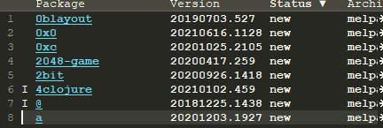]]
d删除插件包，前面标记D。再按x提示是否要删除。大U更新包。旧包标记为D，新包标记为IC-s搜索插件包。如C-s company使用C-s C-s C-s向下匹配
使用 M-x customize-group 后选择对应的插件名称，可以进入可视化选项区对指定的插 件做自定义设置。当选择 Save for future session 后，刚刚做的设计就会被保存在你的 配置文件（ init.el ）中。关于各个插件的安装与使用方法通常都可以在其官方页面找 到（GitHub Pages 或者是项目仓库中的 README 文件）。我们强烈建议大家在安装这些插 件后阅读使用方法来更好的将它们使用到你的日常工作当中使效率最大化。
一些常用的操作，以下操作使用`M-x`调用
list-packages 或 package-list-packages 查看全部软件包列表 package-install 安装软件包 package-delete 删除软件包 package-autoremove 无用软件包自动删除 package-refresh-contents 刷新软件包信息索引 describe-package 包信息
Company 补全插件
使用默认的插件管理系统（可在菜单栏 `Options > Manage Emacs Packages` 中找到）安 装 Company 插件，他是一个用于代码补全的插件。它的名字代表补全一切的意思（ Comp lete Any thing）。因为默认的插件管理系统提供的插件十分有限，所以我们会在之后的 几天中继续将其强化。
点击安装
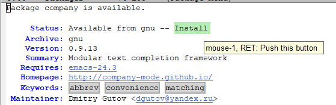]]
使用的下面的配置将 Company-mode 在全局模式下激活
; 开启全局 Company 补全 (global-company-mode 1) (setq company-idle-delay 0) ;; 补全时间快些 (setq company-minimum-prefix-length 1) ;; 最少输入1个字符开启
手工安装插件
以 awesome-tab 为例
创建目录，使用内容Dir包。 C-x d 回车， + 创建目录输入目录名site-lisp 回车， q 退出
使用 M-x eshell 克隆代码
cd site-lisp
git clone --depth=1 https://github.com/manateelazycat/awesome-tab.git
配置文件
(add-to-list 'load-path (expand-file-name "~/.emacs.d/site-lisp/awesome-tab/")) (require 'awesome-tab) (awesome-tab-mode t) (defun awesome-tab-buffer-groups () "`awesome-tab-buffer-groups' control buffers' group rules. Group awesome-tab with mode if buffer is derived from `eshell-mode' `emacs-lisp-mode' `dired-mode' `org-mode' `magit-mode'. All buffer name start with * will group to \"Emacs\". Other buffer group by `awesome-tab-get-group-name' with project name." (list (cond ((or (string-equal "*" (substring (buffer-name) 0 1)) (memq major-mode '(magit-process-mode magit-status-mode magit-diff-mode magit-log-mode magit-file-mode magit-blob-mode magit-blame-mode))) "Emacs") ((derived-mode-p 'eshell-mode) "EShell") ((derived-mode-p 'dired-mode) "Dired") ((memq major-mode '(org-mode org-agenda-mode diary-mode)) "OrgMode") ((derived-mode-p 'eaf-mode) "EAF") (t (awesome-tab-get-group-name (current-buffer))))))
自动加载 site-lisp 中的包
(require 'cl-lib) (defun sanityinc/add-subdirs-to-load-path (parent-dir) "Add every non-hidden subdir of PARENT-DIR to `load-path'." (let ((default-directory parent-dir)) (setq load-path (append (cl-remove-if-not #'file-directory-p (directory-files (expand-file-name parent-dir) t "^[^\\.]")) load-path)))) ;; Add both site-lisp and its immediate subdirs to `load-path' (let ((site-lisp-dir (expand-file-name "site-lisp/" user-emacs-directory))) (push site-lisp-dir load-path) (sanityinc/add-subdirs-to-load-path site-lisp-dir))
配置安装
你可以直接将下面的代码复制到你的配置文件顶端，从而直接使用 Melpa 作为插件的源。 你可以将你需要的插件名字写在 `my/packages` 中，Emacs 在启动时会自动下载未被安装 的插件。
(require 'package) (setq package-archives '( ("gnu" . "http://elpa.zilongshanren.com/gnu/") ("nongnu" . "http://elpa.zilongshanren.com/nongnu/") ("melpa" . "http://elpa.zilongshanren.com/melpa/"))) (package-initialize) ;;防止反复调用 package-refresh-contents 会影响加载速度 (when (not package-archive-contents) (package-refresh-contents)) ;;(package-install 'use-package) (provide 'init-packages)
安装包使用 `package-install` 如安装 use-package
(package-install 'use-package)
加载其它文件
;; load other file 增加了文件存在判断 (defun load-if-exists (f) "load the elisp file only if it exists and is readable" (if (file-readable-p f) (load-file f))) (load-if-exists "~/Dropbox/shared/mu4econfig.el") (load-if-exists "~/Dropbox/shared/tmpstuff.el") (load-if-exists "~/Dropbox/shared/not-for-github.el")
Macro
什么是 Macro
宏是一种可以生成代码的代码. 类比与 C 语言中的宏以及 C++中的模板. 先看一个简单的例子:
(setq my-var 1) (setq my-var (+ 1 my-var)) ; C-x C-e 执行多次 ;; 定义宏和定义函数差不多，只是关键字不一样。 ;; 定义宏 变量var + 1 (defmacro inc (var) (list 'setq var (list '1+ var))) (macroexpand '(inc my-var)) ;; DSL 宏展开。我们可以看到展开后和上面的一样。 (inc my-var) ; 宏会做一个宏展示。结果在变，影响外部 ;;; pass by value ;; 函数只是进行传值 (defun inc-2 (var) (setq var (1+ var))) (inc-2 my-var) ;永远等于一个值，不影响外部 ;;; quote 是'引号， backquote 是` ;; backqote有外部的作用，在表示前加个,逗号可动态求值; 表达式前加,@可拆散求值 ;; Backquote allows you to: ;; quote a list, and ;; selectively evaluate elements of the list (with comma ,), or: ;; splice (eval & spread) the element with ,@ `(a list of ,(+ 2 3) elements) ; 在表示前加个,逗号可动态求值 (setq some-list '(2 3)) ;(a list of 5 elements) `(1 ,@some-list 4 ,@some-list) ;backquote中表达式前有,@会拆解出来。(1 2 3 4 2 3)
- ` backquto
- ' quote
它们都是 quete，不同点在于 backquote 与逗号 , 一起使用，后面动态求值； 与 ,@ 展示元素
范例：
`(a list of ,(+ 2 3) elements) ;C-x C-e (a list of 5 elements) '(a list of (+ 2 3) elements) ;C-x C-e (a list of (+ 2 3) elements) ;; 与 `,@` 一起使用时为展示元 (setq some-list '(2 3)) `(1 ,@some-list 4 ,@some-list) ; C-x C-e (1 2 3 4 2 3)
backquote https://www.gnu.org/software/emacs/manual/html_node/elisp/Backquote.html
关于 backquote 的更多讨论, 可以见以下地址: lisp 中的`与，是怎么用的？
为什么使用宏
使用宏可以减少重复的代码, 以下是一个使用宏来定义函数的例子:
(defun prelude-search (query-url prompt) "Open the search url constructed with the QUERY-URL. PROMPT sets the `read-string prompt." (browse-url (concat query-url (url-hexify-string (if mark-active (buffer-substring (region-beginning) (region-end)) (read-string prompt)))))) (defmacro prelude-install-search-engine (search-engine-name search-engine-url search-engine-prompt) ; #1 "Given some information regarding a search engine, install the interactive command to search through them" `(defun ,(intern (format "prelude-%s" search-engine-name)) () ; #2 ,(format "Search %s with a query or region if any." search-engine-name) ; #3 (interactive) (prelude-search ,search-engine-url ,search-engine-prompt))) ; #4 (prelude-install-search-engine "google" "http://www.google.com/search?q=" "Google: ") ; #5 (prelude-install-search-engine "youtube" "http://www.youtube.com/results?search_query=" "Search YouTube: ") (prelude-install-search-engine "github" "https://github.com/search?q=" "Search GitHub: ") (prelude-install-search-engine "duckduckgo" "https://duckduckgo.com/?t=lm&q=" "Search DuckDuckGo: ")
下面对以上代码进行讲解:
第#1 行, 通过 prelude-install-search-engine 定义了一个需要 3 个参数的宏, 这个 宏的作用是生成一个函数.
第#2 行, 通过 intern 生成一个符号作为函数名, 名称为 prelude-xxx , 其中 xxx 为第一个参数的值.
第#3 行, 生成了这个函数的描述.
第#4 行, 调用 prelude-search 函数进行搜索处理.
第#5 行, 调用这个宏定义了一个名为 prelude-google 的函数.
从以上代码可以知道, 我们利用宏生成了４个名称不同的函数, 避免了手动编写函数的问题 (因为这４个函数的代码非常相似, 根据 DRY 原则应该尽量避免做这种重复工作).
关于宏的更多内容, 可以阅读 Paul Graham 的著作《On Lisp》
prelude-duckduckgo
插件设置 (use-package)
- Use-package https://github.com/jwiegley/use-package
Use-package 是一个宏, 它能让你将一个包的 require 和它的相关的初始化、 按键绑定、配置等用宏组织在一起, 避免对同一个包的配置代码散落在不同的文件中.
在29版本后内置，可直接使用。
在 init.el 较靠前的位置（或其它你认为合适的文件中）写上：
简易的配置
(require 'package) (setq package-enable-at-startup nil) ;; (add-to-list 'package-archives '("melpa" . "https://melpa.org/packages/")) (setq package-archives '(("gnu" . "https://elpa.gnu.org/packages/") ("nongnu" . "https://elpa.nongnu.org/nongnu/") ("melpa" . "https://melpa.org/packages/"))) ;;(setq package-archives '(("gnu" . "http://elpa.zilongshanren.com/gnu/") ;; ("nongnu" . "http://elpa.zilongshanren.com/nongnu/") ;; ("melpa" . "http://elpa.zilongshanren.com/melpa/"))) ;; (package-initialize) ;; (unless (package-installed-p 'use-package) (package-refresh-contents) (package-install 'use-package))
更友好的配置
;; add melpa to package-archives (require 'package) (require 'cl-lib) (setq package-check-signature nil load-prefer-newer t) ;; 个别时候会出现签名校验失败 ;; (add-to-list 'package-archives '("melpa" . "https://melpa.org/packages/")) (setq package-archives '(("gnu" . "https://elpa.gnu.org/packages/") ("nongnu" . "https://elpa.nongnu.org/nongnu/") ("melpa" . "https://melpa.org/packages/"))) ;;(setq package-archives '(("gnu" . "http://elpa.zilongshanren.com/gnu/") ;; ("nongnu" . "http://elpa.zilongshanren.com/nongnu/") ;; ("melpa" . "http://elpa.zilongshanren.com/melpa/"))) ;; ;; don't bother with the initialize, although it may cause much startup time, ;; there's no way to avoid this if you use package.el instead of other package ;; manager, like straight.el (unless (bound-and-true-p package--initialized) (package-initialize)) ;; 刷新软件源索引 ;;防止反复调用 package-refresh-contents 会影响加载速度 (when (not package-archive-contents) (package-refresh-contents)) ;; these code run only once, when use-package is not installed (unless (package-installed-p 'use-package) (package-refresh-contents) (package-install 'use-package)) ;; make use-package default behavior better ;; with `use-package-always-ensure' you won't need ":ensure t" all the time ;; with `use-package-always-defer' you won't need ":defer t" all the time (setq use-package-always-ensure nil use-package-always-defer t use-package-enable-imenu-support t use-package-expand-minimally t) (require 'use-package) ;; diminish & delight, as use-package optional dependency ;; (use-package diminish) ;; (use-package delight)
基本格式
;; 最简洁的格式 (use-package restart-emacs) ;; 常用的格式 (use-package smooth-scrolling :ensure t ; 确认安装，nil表示不需要安装。nil 可配置内置包。 :pin melpa ; 指向插件源 :defer nil ; 是否要延迟加载 :diminish (flymake " Flym.") ; 状态栏显示的样式 :after yasnippet ; 别的包安装后启动 :init ; 在加载插件前执行一些命令 (setq smooth-scrolling-margin 2) :custom (ivy-use-virtual-buffers t) :config ; 在加载插件后执行一些命令 (smooth-scrolling-mode t) :commands (isearch-moccur isearch-all) :bind ; 快捷键的绑定 (("M-n" . xx) ("M-p" . xx2)) :bind* ; 会在包加载之前就建立键绑定 ("M-RET" . hkey-either) :hook ; hook模式的绑定 (prog-mode . flycheck-mode))
所有的冒号开头的词是 use-package 的一些设置关键词。
建议添加的配置（部分来自 use-package 官方建议）：
;; use-package 默认配置 (eval-and-compile (setq use-package-always-ensure t) ;不用每个包都手动添加:ensure t关键字 (setq use-package-always-defer t) ;默认都是延迟加载，不用每个包都手动添加:defer t (setq use-package-always-demand nil) (setq use-package-expand-minimally t) (setq use-package-verbose t)) (require 'use-package) ;; yes or no 简化为y n (use-package emacs :config (defalias 'yes-or-no-p 'y-or-n-p))
特点 ：
更安全的 require
在 Emacs 中, 当我们要引入一个包时, 通常会使用以下代码
(require 'package-name)。但是当 package-name 不在 load-path 中时, 以上代码会抛出错误. 使用 Use-package 可以避免(use-package package-name)。以上代码
macroexpand展开的结果如下:(pp (macroexpand '(use-package init-xxx))) ;; 展示后输出格式化. 可以看到有做错误处理。
*Message*可以看到类似格式化的展开结果(use-package-ensure-elpa 'init-xxx '(t) 'nil) "(use-package-ensure-elpa 'init-xxx '(t) 'nil) "将配置集中
通过
init和config把配置关联进来init 后的代码在包的 require 之前执行, 如果这段代码出错则跳过包的 require。config 后的代码在包的 require 之后执行
init 与 config 之后只能接单个表达式语句, 如果需要执行多个语句, 可以用 progn 。
(use-package package-name :init (setq my-var1 "xxx") :config (progn (setq my-var2 "xxx") (setq my-var3 "xxx") ) )
autoload
使用 autoload 则可以在真正需要这个包时再 require, 提高启动速度, 避免无谓的 require。
(use-package package-name :commands (global-company-mode) :defer t )
使用 commands 可以让 package 延迟加载, 如以上代码会首先判断 package 的符号是否 存在, 如果存在则在 package-name 的路径下加载. defer 也可以让 package-name 进行延迟加载.
键绑定
在之前的代码中, 如果我们需要绑定一个键, 需要使用 global-key-bind 或 define-key 实现, 而使用 Use-package 实现更简单:
(use-package company :ensure t :init (global-company-mode t) ;; 全局开启 company 补全 :config (setq company-idle-delay 0) ;; 补全时间快些 (setq company-minimum-prefix-length 1) ;; 最少输入1个字符开启 :bind (:map company-active-map ("C-n" . 'company-select-next) ("C-p" . 'company-select-previous))) ;; 使用 `C-n` 与 `C-p` 来选择补全项，默认选择上一条和下一条候选项命令 M-n M-p
配置quelpa
quelpa 是配合 package.el 使用的，基于git的一个包管理器。我们在后面会发现，有不少优秀的插件，并没有提交到上面我们设置的仓库源（比如懒猫大大的很多插件），而是在 Github 上或者其他基于 Git 的仓库里，那我们就可以通过 quelpa 来安装这些插件，并且可以与 use-package 结合使用
;; 安装 `quelpa' (use-package quelpa :ensure t :commands quelpa :config :custom (quelpa-git-clone-depth 1) (quelpa-update-melpa-p nil) (quelpa-self-upgrade-p nil) (quelpa-checkout-melpa-p nil)) ;; `quelpa' 与 `use-package' 集成 (use-package quelpa-use-package :ensure t)
配置变量
除了使用配置文件，Emacs 还提供了一个更为方便的办法管理一些变量（customizable variables），或称用户选项（user options）
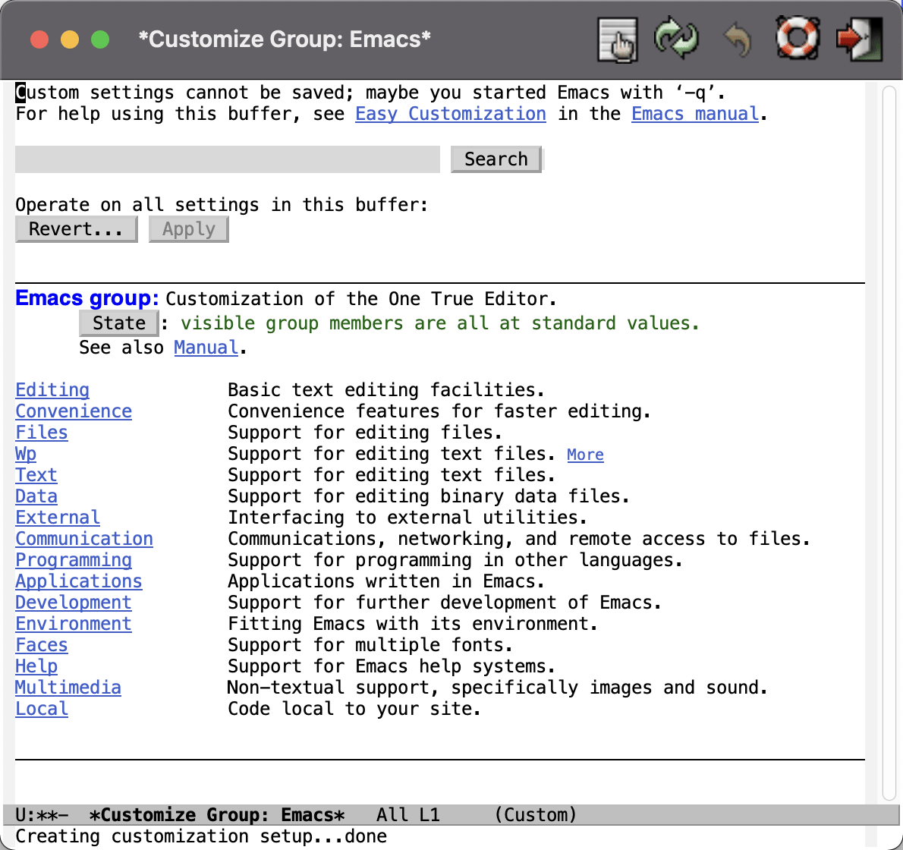]]
最简单的进入办法，就是按下 M-x 输入 customize 后回车确认。
变量是分组（group）管理的，只需要点进去寻找或搜索相关的变量就可以进行设置。对于每一个变量，点左侧的箭头展开内容，可以看到有的变量是 Toggle 按钮表示可以设定 true/false，有的则是取值列表，可以设定值。修改后，State 会显示已编辑。最后点击上方的 Apply 就是应用更改。点击 Revert 就可以放弃更改等。按 `q` 退出。
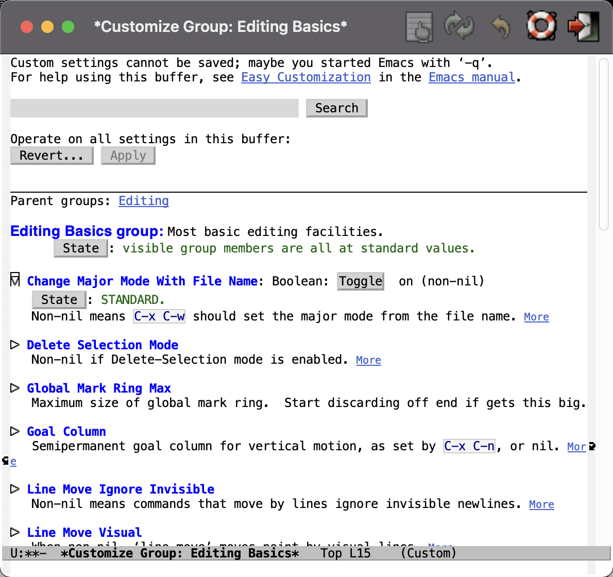]]
使用 M-x customize-group 后选择对应的插件名称，可以进入可视化选项区对指定的插 件做自定义设置。当选择 Save for future session 后，刚刚做的设计就会被保存在你的 配置文件（ init.el，或是自定义的文件 ）中。关于各个插件的安装与使用方法通常都可以在其官方页面找 到（GitHub Pages 或者是项目仓库中的 README 文件）。我们强烈建议大家在安装这些插 件后阅读使用方法来更好的将它们使用到你的日常工作当中使效率最大化。
此外，使用 Emacs 的过程中也可以临时修改某个变量的值，`M-x set-variable` 就可以输入变量名、回车、输入值、回车。还可以用 `C-h v` 输入变量名来查看变量的含义。
因此总结来说，想要设定变量有 几种途径：
- 配置文件中使用 `(setq name value)`
- customize 中设定
- 运行过程中临时修改 `M-x set-variable`
- 单文件局部变量。如文件顶部添加 `# -- org-image-actual-width: nil; --` 可修改 org mode 下图片显示大小
一些配置
操作系统判断
后面的部分配置会因操作系统不同而产生不同配置代码，所以有必要对操作系统进行判断。
;; 操作系统判断，分别设置成常量 (defconst *is-mac* (eq system-type 'darwin) "判断操作系统是否是MacOS") (defconst *is-linux* (eq system-type 'gnu/linux)) (defconst *is-windows* (or (eq system-type 'ms-dos) (eq system-type 'windows-nt)))
其中Windows的判断还可以放的宽一点：
(defconst *is-windows* (memq system-type '(ms-dos windows-nt cygwin)))
测试
(print *is-mac*)
范例-修改不同操作系统键位映射
(when *is-mac* ;; Opt -> meta : M, Cmd -> super : s 默认是这个 (setq mac-option-modifier 'meta mac-command-modifier 'super)) (when *is-windows* (setq w32-apps-modifier 'super)) ; 通过SharpKeys改成了 Application
最开始的配置
basic 内置功能增强
设置系统的编码，避免各处的乱码。
(prefer-coding-system 'utf-8)
(unless *is-windows*
(set-selection-coding-system 'utf-8))
在此做简要归纳：
;; ui 界面 (global-linum-mode 1) ;; 显示行号, (1,2,3,t) 都代表开启，-1 关闭 (global-display-line-numbers-mode 1) ;; 在 Window 显示行号 (setq inhibit-startup-screen t) ;; 尝试关掉启动界面 ;; (setq inhibit-startup-message t) ;; 为inhibit-startup-screen的别名 ;; (setq inhibit-splash-screen 1) ;; 关闭启动帮助画面 (tool-bar-mode -1) ;; 关闭工具栏，tool-bar-mode 即为一个 Minor Mode (scroll-bar-mode -1) ;; 关闭文件滑动控件 ;; (menu-bar-mode -1) ;; 关闭菜单栏 (不关闭，使用插件时会用到) (toggle-frame-maximized) ;; 全屏编辑器 (setq-default cursor-type 'bar) ; 更改光标的样式，默认比较粗. 更多C-h v 查询帮助 ;;(setq cursor-type 'bar) ;; 更改光标的样式。setq当前buffer生效，不能全局生效 (global-hl-line-mode t) ;; 高亮当前行 ;; 内置补全功能n ;;(setq tab-always-indent 'complete) ;; 使用 TAB 来列出当前补全选项 ;;(icomplete-mode t) ;; 开启的，在按 M-x 时就有可选的选项了。使用 vertico-mode，关闭此项 (electric-pair-mode t) ;; 括号补全 (add-hook 'prog-mode-hook #'show-paren-mode) ;; 编程模式下，光标在括号上时高亮另一个括号 (column-number-mode t) ;; 在 Mode line 上显示列号，来自 simple 内置包 (global-auto-revert-mode t) ;; 自动加载外部修改过的文件 (delete-selection-mode t) ;; 选中文本后输入文本会替换文本（更符合我们习惯了的其它编辑器的逻辑。默认选中放后面 (setq make-backup-files nil) ;; 关闭文件自动备份。如果是有git来管理文件，备份文件没有太大意义。~ 为后缀的文件为自动生成的备份文件 (setq ring-bell-function 'ignore) ;; 关闭 Emacs 中的错误提醒警告音 (fset 'yes-or-no-p 'y-or-n-p) ;; 某个命令时需要输入 (yes or no) 比较麻烦，将其简化为只输入 (y or n) (add-hook 'prog-mode-hook #'hs-minor-mode) ;; 编程模式下，可以折叠代码块 (savehist-mode 1) ;; （可选）打开 Buffer 历史记录保存 (setq display-line-numbers-type 'relative) ;; （可选）显示相对行号 (add-to-list 'default-frame-alist '(width . 90)) ;; （可选）设定启动图形界面时的初始 Frame 宽度（字符数） (add-to-list 'default-frame-alist '(height . 55)) ;; （可选）设定启动图形界面时的初始 Frame 高度（字符数）
`M-x eval-buffer` 来执行当前所有配置
更好的默认配置
;; --- better-defaults -- ;; 缓存刷新 (global-set-key (kbd "<f5>") 'revert-buffer) (global-auto-revert-mode 1) ;; 当访问的文件在磁盘上发生更改时，这会自动恢复缓冲区 (setq auto-rever-verbose nil) ;; 关闭自动恢复信息 ;; 设置系统的编码，避免各处的乱码 (prefer-coding-system 'utf-8) (set-default-coding-systems 'utf-8) (set-terminal-coding-system 'utf-8) (set-keyboard-coding-system 'utf-8) (setq default-buffer-file-coding-system 'utf-8) ;; 关闭提示声音 (setq ring-bell-function 'ignore) ;; 关闭缩进 ;; (electric-indent-mode -1) ;;关闭备份文件功能。如果是有git来管理文件，备份文件没有太大意义。~ 为后 缀的文件为自动生成的备份文件 (setq make-backup-files nil) ;; 禁止自动恢复 (setq auto-save-default nil) ;; 括号匹配 (add-hook 'emacs-lisp-mode-hook 'show-paren-mode) ;; 别名 (setq-default abbrev-mode t) (define-abbrev-table 'global-abbrev-table '( ;; signature ("8jv" "jaspervincent") ;; Microsoft ("8ms" "Microsoft") )) ;; 输入8jv空格，就补全出jaspervincent 空格也可以换成非26个字母 ;; yes or no 简化为y n (fset 'yes-or-no-p 'y-or-n-p)
;; 更改显示字体大小 16pt ;; http://stackoverflow.com/questions/294664/how-to-set-the-font-size-in-emacs (set-face-attribute 'default nil :height 160);; ;;让鼠标滚动更好用 (setq mouse-wheel-scroll-amount '(1 ((shift) . 1) ((control) . nil))) (setq mouse-wheel-progressive-speed nil)
不同文件跳转
配置划分成不同文件，好以后方便查找
(defun open-init-file() (interactive) (find-file "~/.emacs.d/init.el")) (global-set-key (kbd "<f2>") 'open-init-file) ;; <f2> 键快速打开配置文件 (global-set-key (kbd "C-c p f") 'project-find-file) ;; 查找文件，默认绑定在 C-x p f (eval-after-load 'consult (global-set-key (kbd "C-c p s") 'consult-ripgrep)) ;; 查找文件内容
C-c 是给用户定义的快捷键，p 代表 project ， f 代表 find-file
consult-ripgrep 需要安装 consult 和 ripgrep ， 方便查找关键字
配置文件生效的几种方法：
- 重启编辑器或者重新加 载配置文件
- `M-x eval-buffer` 去执行当前缓冲区的所有 Lisp 命令
- `C-x C-e` 来执行某一行的 Lisp 代码
配置快捷键
首先介绍一下如何配置全局的快捷键：
(global-set-key (kbd <KEY>) <FUNCTION>)
其中 `<KEY>` 和 `<FUNCTION>` 替换为你想要设置的快捷键和功能。例如一个常见设置是修改回车键为“新起一行并做缩进”：
(global-set-key (kbd "RET") 'newline-and-indent)
其它设置示例：
(global-set-key (kbd "C-a") 'back-to-indentation) ; 交换 C-a 和 M-m，C-a 为到缩进后的行首 (global-set-key (kbd "M-m") 'move-beginning-of-line) ; 交换 C-a 和 M-m，M-m 为到真正的行首 (global-set-key (kbd "C-c '") 'comment-or-uncomment-region) ; 为选中的代码加注释/去注释 ;; 自定义两个函数 ;; Faster move cursor (defun next-ten-lines() "Move cursor to next 10 lines." (interactive) (next-line 10)) (defun previous-ten-lines() "Move cursor to previous 10 lines." (interactive) (previous-line 10)) ;; 绑定到快捷键 (global-set-key (kbd "M-n") 'next-ten-lines) ; 光标向下移动 10 行 (global-set-key (kbd "M-p") 'previous-ten-lines) ; 光标向上移动 10 行
在使用 Emacs 期间应当已经发现规律，Emacs 的常见快捷键前缀是 `C-x` 和 `C-c`，有些可选的个人操作：解绑本来的 `C-j` 快捷键（本来功能为 `electric-newline-and-maybe-indent`），让 `C-j` 也成为了一个前缀
(global-set-key (kbd "C-j") nil) ;; 删去光标所在行（在图形界面时可以用 "C-S-<DEL>"，终端常会拦截这个按法) (global-set-key (kbd "C-j C-k") 'kill-whole-line)
其它
通过修改字体解决 Windows 上 Emacs 的卡顿
;; 修改字体解决 Windows 上 Emacs 的卡顿 (use-package emacs :if (display-graphic-p) :config ;; Font settings (if *is-windows* (progn (set-face-attribute 'default nil :font "Microsoft Yahei Mono 9") (dolist (charset '(kana han symbol cjk-misc bopomofo)) (set-fontset-font (frame-parameter nil 'font) charset (font-spec :family "Microsoft Yahei Mono" :size 12)))) (set-face-attribute 'default nil :font "Source Code Pro for Powerline 11")))
增加的一点启动配置
设置垃圾回收阈值，加速启动速度。
;; 设置垃圾回收阈值，加速启动速度 (setq gc-cons-threshold most-positive-fixnum)
用 y/n 来代替 yes/no
(fset 'yes-or-no-p 'y-or-n-p) ;; 某个命令时需要输入 (yes or no)
为了项目管理的统一化，可以用如下的`use-package`写法：
(use-package emacs :config (defalias 'yes-or-no-p 'y-or-n-p))
tab 缩进
跟 vim 一样的
参考：tab 变空格
Org 管理
官方文档：https://orgmode.org/manual/index.html 中文文档：https://grass.show/omegat/target/Org%E4%BD%BF%E7%94%A8%E6%89%8B%E5%86%8C(%E5%AE%8C%E6%95%B4%E7%89%88).html
缺点：写笔记不方便，插入图片显示比较困难 李杀也不用 org-mode，手撸 html，都二十年了，我也想尝试一下。
Org-mode 简化版
- org-mode https://orgmode.org/
- 大佬 https://github.com/zamansky
- 官方手册 https://orgmode.org/worg/org-tutorials/
- 快捷键官方手册 https://orgmode.org/worg/orgcard.html
org-mode 是 Emacs 最强力的插件，没有之一。可以用来做 GTD，博客/Wiki工具，写书，写论文等。 orgmode 是 emacs 自带的 package，但是一般自带的版本比较低。更新到最新版本的办法：
查看 org mode 版本 `C-h v org-version`
org mode 能做什么
- 写文章
这里包含博客、PRD、技术文档等，都可以通过Org mode完成，例如这篇博文，就是在Org mode下写的：
- 文学编程
literate programming 根据 Donald Knuth 的 定义，文学编程是一种把文档语言和编程语言组合在一起的方法（methodology）。 它能让编程鲁棒性更强，增强跨平台性，更易维护，以及更加有趣。 文学编程面向的对象是人类，而不是机器。
根据官方文档，org mode 原来是通过 org-babel 这一插件来实现文学编程的。
使用 C-c C-c 来运行下面这段代码。
#+begin_src <language> <switches> <header arguments> ,<body> #+end_src - <language> An identifier for the code block language. - <switches> Control code execution, export, and format. - <header arguments> Header arguments control many facets of code block behavior, including tangling, evaluation, handling results of evaluation, and exporting. <body> The source code to be evaluated.
范例：显示打印值
#+caption: print value #+name: print value #+begin_src python :results output print(1+1) #+end_src #+RESULTS: print value : 2
- 画各种图
依托于Org mode代码块的强大能力，你可以在Org文件中直接画各种图，脑图、流程图、类图、时序图、甘特图等等，这些都是产品经理经常要用到图：
- 任务管理
每天的计划，工作记录，都可以通过Org mode来记录
安装最新的 org
将 `("org" . "https://orgmode.org/elpa/")` 添加到 `package-archives` 中，然后： 安装org 之前，一定要配置 use-package 不使用内置的org 版本。
;;; 安装 org，这个配置一定要配置在 use-package 的初始化之前，否则无法正常安装 (assq-delete-all 'org package--builtins) (assq-delete-all 'org package--builtin-versions) (setq package-archives '(("gnu" . "https://elpa.gnu.org/packages/") ("nongnu" . "https://elpa.nongnu.org/nongnu/") ("melpa" . "https://melpa.org/packages/")) (use-package org :pin gnu :ensure t ) (use-package org-contrib :pin nongnu :ensure t)
小于 28 版本的需要在入口文件添加如下内容：
(with-eval-after-load 'package (add-to-list 'package-archives '("nongnu" . "https://elpa.nongnu.org/nongnu/")))
org-mode基础
标题与折叠
Org mode的标题是通过在行首输入 * 来实现， * 的数量代表标题的级数，在 * 跟一个空格加上文字就共同组成了这个标题。
标题最多 10 级
* 为一级标题 ** 为二级标题 *** 为三级标题并以此类推
简单的使用，连续按 <tab> 键可以进行折叠和展开的切换; C-c C-t 可以将一个条目转换成一条待办事件。
| 标题快捷键 | 描述 |
| :------------ | :---------------------------------------------------------- |
| TAB | 折叠/打开当前标题 |
| Shift-TAB | 折叠/打开当前文档的标题 |
| C-u TAB | 控制整个 buffer 的折叠状态。折叠成标题–折叠成目录–不折叠 |
| M-UP/DOWN | 调整标题在文档中的位置。可连同子标题一起调整位置 推荐使用 |
| M-LEFT/RIGHT | 快速提升或降低标题级别。该标题下的相关正文同步调整缩进 |
| C-c C-t | 切换当前标题的状态（TODO 等） |
| C-c C-n | 移动光标到下一标题 |
| C-c C-p | 移动光标到上一标题 |
| C-c C-f | 移动光标到和当前标题同等级的下一个标题 |
| C-c C-b | 移动光标到和当前标题同等级的上一个标题 |
| C-u C-u M-RET | 在当前标题内容的最后，另起一行创建一个同级标题 |
格式化字词
加粗：*粗体* *粗体* 斜体：/斜体/ /斜体/ 删除线：+删除线+ +删除线+ 下划线：_下划线_ _下划线_ 强调：=强调= =强调= 行内代码：~代码~ ~代码~
输入控制字符
- 引用插入（输入一些看不见的字符）
C-q == quoted-insert
不可见(非图形字符)
- <RET>, C-l(分页符)
- 033 Enter (Ascii 八进制) = f(原样输出f)
添加代码块
在 Org-mode 中你可以直接开启新的缓冲区（Buffer）直接用相应的 Major Mode 来编辑代码块内的内容。在代码块中使用 C-c ' 会直接打开对应模式的缓冲区（不仅限于 Lisp）。 这样就使在 Org-mode 中编辑代码变的十分方便快捷。
- 旧版使用快捷键
< + 快捷码 + TAB。- 如代码块
<s + Tab可以直接插入代码块的代码片段（Snippet）
- 如代码块
- 从 orgmode 9.2 版本后，
org-insert-structure-template变为C-c C-,给出列表选择- src 代码可以用
C-c C-, s
- src 代码可以用
\#+BEGIN_SRC emacs-lisp ;; Your code goes here ;; 你的代码写在这里 \#+END_SRC
范例：
\#+BEGIN_SRC emacs-lisp (+ 2 22) ;;这里使用C-x C-e执行，交互区会显示出结果24。使用C-c C-c 输入yes会在内容里添加=+RESULTS并输出结果 \#+END_SRC \#+RESULTS: : 24
独立窗口修改：选中代码块，使用 C-c ' 会直接打开对应模式的缓冲区，使用 C-c ' 完成修改
- 还想使用旧版快捷键
(with-eval-after-load 'org (require 'org-tempo)) ;; 禁用左尖括号 (setq electric-pair-inhibit-predicate `(lambda (c) (if (char-equal c ?\<) t (,electric-pair-inhibit-predicate c)))) (add-hook 'org-mode-hook (lambda () (setq-local electric-pair-inhibit-predicate `(lambda (c) (if (char-equal c ?\<) t (,electric-pair-inhibit-predicate c))))))
列表
如果在本级列表内换行，就需要在新行前面加个空格
无序列表：以 - * + 字符开头 有序列表：以 1. 1) 字符开头
| 列表快捷键 | 描述 |
| :----------- | :--------------------- |
| C-c - | 改变列表展示方式 |
| M-UP/DOWN | 上下调整列表位置 |
| M-LEFT/RIGHT | 左右提升或降低列表级别 |
超链接
快捷键
| 超链接快捷键 | 描述 |
| :----------- | :----------------------------------------------------------- |
| C-c C-l | 编辑/插入一个超链接 输入地址和描述。链接地址的格式为`xxx` |
| C-u C-c C-l | 插入一个文件超链接（如果有中文，使用该快捷键会有时跳转不了。这时需要手动输入中文） |
| C-c C-o | 用浏览器或 emacs 等打开这个超链接 |
| C-c C-x C-n | 下一个链接 |
| C-c C-x C-p | 上一个链接 |
链接格式： Org中链接的格式设置方式。
[[链接地址][该链接展示的文字]] 或者 [[链接地址]]
内部链接： 链接到当前文件中的其他位置。
<<标签名>> [[标签名]] 点击可以跳转，html中显示目录编号
- 无线电目标： 生成目标触发纯文本形式的链接。
外部链接： 指向互联网的类似URL的链接。
[[Link类型][链接显示的名称]] 支持的类型有：http,https,file,shell,elisp等 如： [[http://www.gnu.org/software/emacs/][GNU Emacs]] [[file:/home/dominik/images/jupiter.jpg]]
- 处理链接： 创建、插入和跟随。
- 使用Org外部链接： 从我的C源代码链接吗？
- 链接缩写： 编写复杂链接的快捷方式。
搜索选项： 链接到特定位置。
选项用 :: 2个冒号分隔 如： [[file:~/code/main.c::255]] 跳到255行 [[file:~/xx.org::My Target]] 搜索跳转到<<My Target>>标签 [[file:~/xx.org::*My Target]] 跳到对应标题 [[file:~/xx.org::#my-custom-id]] 链接到具有“CUSTOM_ID”属性的标题 [[file:~/xx.org::/regexp/]] 正则搜索 [[attachment:main.c::255]] [[file:::find me]] 在当前文件中搜索 find me，相当于[[find me]] [[*my title]] 跳转到对应标题名
自定义搜索： 当默认搜索不够用时。
CUSTOM_ID 定义方法
引用对应标题 custom_id [[#mydi][标题1]] ** 标题1 :PROPERTIES: :CUSTOM_ID: myid :END:
跳转到指定 CUSTOM_ID 如下。当导出到 html 时，CUSTOM_ID 会转换成锚点， 会替换原先自动生成的章节锚点
图片像素滚动
pixel-scroll-precision-mode
引用
在Org mode里，可以通过 #+BEGIN_QUOTE 和 #+END_QUOTE 包裹的部分写入引用的文本，例如：
#+BEGIN_QUOTE 这是引用的文本。 #+END_QUOT
标签
区别于 CSDN博客 和 evernote 的标签，org-mode 的标签支持为每个标题都设置标签。 标签主要是用于分类和搜索的。但是标签是用户自己设置的，可能该打的标签没打，导致搜索不到。我更倾向于使用搜索命令或 google 搜索笔记。不做笔记
插入 latex 公式
使用 $ $ 在行内插入。例如 $\displaystyle \min_{x_1,\dots x_T}$ :
使用 $$ $$ 在行间插入。例如 $$\displaystyle \min_{x_1,\dots x_T}$$ ：
添加 org 注释
两种注释方式
注释一段内容：注释中的内容不会被导出
\#+BEGIN_COMMENT \#+END_COMMENT
- 注释整章内容：在一个章节上使用快捷键 `C-c ;` ，可在一个章节名上触发添加 COMMENT 关键字，该章节就会被注释不会被导出
计时功能
菜单栏 —> org —> Dates and Scheduling
`C-c C-x .` 开始计时，并显示时间。如`0:00:00`时分秒
`C-u C-c C-x .` 停止计时，并显示时间。`0:00:00`时分秒
Org 导出
使用 `C-c C-e` 可以将 Org-mode 文档导出为你需要的格式，例如 HTML 或者 PDF 文件。 你现在看到的这本教程就是由 Org-mode 所导出生成的。
GTD
org todo
(setq org-todo-keywords (quote ((sequence "TODO(t)" "STARTED(s)" "|" "DONE(d!/!)") (sequence "WAITING(w@/!)" "SOMEDAY(S)" "|" "CANCELLED(c@/!)" "MEETING(m)" "PHONE(p)")))) ;;fix doom modeline :custom-face (mode-line ((t (:height 0.9)))) (mode-line-inactive ((t (:height 0.9)))) (require 'org-checklist) ;; need repeat task and properties (setq org-log-done t) (setq org-log-into-drawer t)
创建 gtd.org。`M-x ~/gtd.org`
多种工作流状态
当标题的开头为"TODO"时，任何标题都会成为一个待办事项，例如:
* TODO 完成ORG-MODE笔记xxx部分
可以通过按键`C-c C-t`来对一个已存在标题标记不同的待办状态，默认情况下有三种待办状态:
#+end_src text TODO :: 待办事项 DONE :: 已完成的待办事项 unmarked :: 未标记为待办事项的标题，也就是普通的标题 #+end_src
增加状态
(setq org-todo-keywords (quote ((sequence "TODO(t)" "STARTED(s)" "|" "DONE(d!/!)") (sequence "WAITING(w@/!)" "SOMEDAY(S)" "|" "CANCELLED(c@/!)" "MEETING(m)" "PHONE(p)"))))
;;待办状态。括号中`@`代表记录日志，而`!`代表记录时间戳，具有两种功能: `TODO(t@/!)`
每日计划
* WAITING Daily routine - [ ] leetcode - [ ] execrcise
* TODO Daily routine [100%] SCHEDULED: <2022-06-10 Fri 10:00 +1d> :PROPERTIES: :LAST_REPEAT: [2022-06-09 Thu 02:31] :END: - State "DONE" from "TODO" [2022-06-09 Thu 02:31] - State "TODO" from "WAITING" [2022-06-09 Thu 02:26] - [X] leetcode - [X] execrcise
C-c C-s开始计划：<2022-06-09 Thu 10:00>10点- 每天 10 点做：需要
+d加一天SCHEDULED: <2022-06-09 Thu 10:00 +1d>，后面在 agenda 中会用到 - 完成情况进度：每一项任务使用复选框，todo 部分加
[%]，复选框使用C-c C-c打 叉 表示完成。
标记完成：=C-c C-t d= ，可以看到 SCHEDULED 时间自动加 1 SCHEDULED: <2022-06-10 Fri 10:00 +1d>
* TODO Daily routine [100%] SCHEDULED: <2022-06-10 Fri 10:00 +1d> :PROPERTIES: :LAST_REPEAT: [2022-06-09 Thu 02:31] :END: - State "DONE" from "TODO" [2022-06-09 Thu 02:31] - State "TODO" from "WAITING" [2022-06-09 Thu 02:26] - [X] leetcode - [X] execrcise
不过进入新的计划，每一项还需要新的状态。这很麻烦，所以这边用另一个插件包 org-contrib。 目的是要引入 check list
(require 'org-checklist) ;; need repeat task and properties (setq org-log-done t) (setq org-log-into-drawer t)
通过 M-x org-set-property 添加 RESET_CHECK_BOXES 。 RESET_CHECK_BOXES 设置为 t 开启， 会在 PROPERTIES 中增加属性。
当 C-c C-t d 把标题设置为 DONE，自动进入下一个时间点。 这对自定义一些重复性工作比较方便。
* TODO Daily routine [0%] SCHEDULED: <2022-06-15 Wed 10:00 +1d> :PROPERTIES: :LAST_REPEAT: [2022-06-09 Thu 07:24] :RESET_CHECK_BOXES: t :END: - State "DONE" from "TODO" [2022-06-09 Thu 07:24] - State "DONE" from "TODO" [2022-06-09 Thu 02:31] - State "TODO" from "WAITING" [2022-06-09 Thu 02:26] - [ ] leetcode - [ ] execrcise
每次完成任务会自动插入完成状态，使用下面设置可以隐藏到 PROPERTIES 里：
;; need repeat task and properties (setq org-log-done t) (setq org-log-into-drawer t)
使用 C-c C-t d 完成任务， 完成状态会增加到 LOGBOOK 属性中。把之前的状态手动移过来。
* TODO Daily routine [0%] SCHEDULED: <2022-06-17 Fri 10:00 +1d> :PROPERTIES: :LAST_REPEAT: [2022-06-09 Thu 07:44] :RESET_CHECK_BOXES: t :END: :LOGBOOK: - State "DONE" from "TODO" [2022-06-09 Thu 07:44] - State "DONE" from "TODO" [2022-06-09 Thu 07:34] - State "DONE" from "TODO" [2022-06-09 Thu 07:24] - State "DONE" from [2022-06-09 Thu 03:03] - State "DONE" from [2022-06-09 Thu 02:50] - State "DONE" from "TODO" [2022-06-09 Thu 02:31] - State "TODO" from "WAITING" [2022-06-09 Thu 02:26] :END: - [ ] leetcode - [ ] execrcise
org agenda
;; C-c C-s schedule ;; C-c C-d deadline (global-set-key (kbd "C-c a") 'org-agenda) (setq org-agenda-files '("~/gtd.org")) ;; 定义 agenda 文件，可以是多个 (setq org-agenda-span 'day) ;; 按天观察
我们Emacs做GTD工具的核心功能就是Agenda功能，他是一个可以实时查看自己有哪些任务，以及每个任务完成进度的功能，我们可以通过 M-x org-agenda 来打开，也可以自定义快捷键。
不过首先你需要建立一个专门存放你的GTD文件的目录，并且将 org-agenda 的目录指定为该目录。
首先做个按键绑定 (global-set-key (kbd "C-c a") 'org-agenda)
默认是观看每周日程，设置 (setq org-agenda-span 'day) 按日来排行程。
基本操作：
C-c a a可以看到每周日程。f/b下一个/上一个阶段安排,d/w天/周视图，=n/p= 上/下移动光标- 在
~/gtd.org设置 deadlineC-c C-d，在日程中也能看到。
org capture
(setq org-capture-templates '(("t" "Todo" entry (file+headline "~/gtd.org" "Workspace") "* TODO [#B] %?\n %i\n %U" :empty-lines 1))) (global-set-key (kbd "C-c r") 'org-capture)
这个模板包含五个部分，分别是
| 模板组成 | 对应默认模板中的内容 | 描述 |
| key | "t" | 用来选择模板的字符 |
| description | "Todo" | 展示用的模板描述 |
| type | entry | 新增内容的类型 |
| target | (file+headline "~/gtd.org" "Workspace") | 新增内容的存储位置 |
| template | "* TODO [#B] %?\n %i\n %U" | 新增内容的模板 |
新增内容的模板:
- "%?" 是一个更特殊的标记，它不会产生任何内容，当所有其他的特殊标记都展开完毕或者输入完毕后，光标将会停留在这个标记所在的位置。
- %i 可以插入一段初始化内容
- %U 当前包含日期和时间的未激活的 timestamp，如:
定义捕获模板，绑定到快捷键 C-c r 。 更写详细的参考官方文档。
操作：
C-c a t向指定文件中写内容。C-c C-c完成. 会记录到gtd.org文件中- 在文件中设置开始时间
C-c C-s21:00 点， 再执行C-c a a就可看到日程更新了。
org effect
设置任务完成需要的时间。
在 agenda view 中, e 键可以设置effort, 按 _ (org-agenda-filter-by-effort) 可以过滤指定effort 的heading
范例:设置 30分钟任务
- 进入agenda
C-c a a - 设置完成任务需要30分钟，按
e输入00:30 - 过滤 1 小时内能完成任务，按
_输入<选择 [4]1:00 对应的数字 4
org tags
在 agenda view 中添加tag, 使用 : , 也可以 M-x org-agenda-set-tags 添加。
* Daily routine [100%] :Emacs:Learn:
org priority
有三种优先级模式，A-C，若不指定优先级，'B'等级是默认的。
C-c ,或者M-x org-priority: 设置当前标题的优先级，键入A-C设置级别，或者键入SPC清除标记- 提升/降低当前标题的优先级
设置agenda中优先级A的为“重要且紧急的事”
(setq org-agenda-custom-commands '(("c" "重要且紧急的事" ((tags-todo "+PRIORITY=\"A\""))) ;; ...other commands here ))
查看重要且紧急的事：
- 进行agenda 视图
C-c a a=，设置优先级A， 按 =,逗号，输入a。 - 查看重要且紧急的事，=C-c a c= 展示重要且紧急的事（必须有 TODO 状态）。
Org文件以指定的目录深度打开
org startup的四个选项
访问org文件，设置初始的文件目录展示深度，org-manual 提供了四个选项：
#+STARTUP: overview top-level headlines only #+STARTUP: content all headlines #+STARTUP: showall no folding of any entries #+STARTUP: showeverything show even drawer contents org-startup-options is a variable defined in org.el. Value ("showall" org-startup-folded nil) ("show2levels" org-startup-folded show2levels) ("show3levels" org-startup-folded show3levels) ("show4levels" org-startup-folded show4levels) ("show5levels" org-startup-folded show5levels) #+STARTUP: show2levels
其中比较趁手的是前两项 `#+STARTUP: overview` 和 `#+STARTUP: content` 分别只展示一级目录和展示全部的目录。而后面的两项将正文全部展开，不仅会给人铺面而来的压迫感，也不能在第一时间呈现重点。
对比前两项 overview 与 content。overview只展示第一级heading，信息量太少，打开满满的一页文本，overview只占前面几行，有点过分单薄。而 content 全部展开 heading，呈现的琐碎细节又太多。
配置
;; 展开到二级目录的工作流 (setq org-startup-folded 'show2levels)
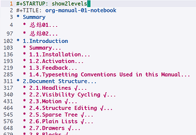]]
#+STARTUP: showall hidestarts showall表示展开所有标题，hidstarts隐藏额外的星星 \* Lesson 1 Introducing the series and setting up the package mannager - Show melpa - set up mepla \* Links - [[xuchangwei.com][jasper's Blog]]
其它操作
添加 Org-mode 文本内语法高亮
(require 'org) (setq org-src-fontify-natively t)
在 Org-mode 中重置有序列表序号可以直接使用 M-<RET> 。
org-ac org-mode 自动补全
;; 设置默认浏览器 ;;(setq "BROWSER" "chomium-browser") ;; org-mode 自动补全 (use-package org-ac :ensure t :init (progn (require 'org-ac) (org-ac/config-default)))
html高亮
;;html高亮 (use-package htmlize :pin melpa :ensure t :defer t )
基础介绍
org能做的事
- 记笔记
- 维护TODO列表
- 做任务计划
- 创作及发布
- 文学编程
org-mode 常用快捷键:
<tab>: 展开/折叠光标下标题, 进行如下循环: "只显示标题" -> "显示子标题" -> "显示子标题内容" -> "只显示标题"<shift>-<tab>: 同时展开/折叠所有标题M-<left>/M-<right>: 当前标题升级/降级M-S-<left>/M-S-<right>: 当前标题及其子标题升级/降级
安装好org后的可选基础配置
(global-set-key (kbd "C-c l") 'org-store-link) (global-set-key (kbd "C-c a") 'org-agenda) (global-set-key (kbd "C-c c") 'org-capture)
在打开后缀为.org文件后会自动进入org-mode
美化插件
org-bullets 标题星号圆点的插件
- org-bullets https://github.com/integral-dw/org-bullets
(use-package org-bullets :ensure t ;; :custom (org-bullets-bullet-list '("☰" "☷" "✿" "☭"))) ;;:init (setq org-ellipsis " ∨") ;; 将折叠的条目最后的...替换成想要的符号 :hook (org-mode . org-bullets-mode))
目录大纲
imenu-list
org 小技巧
更新文件
#`C-c C-c` 在org文件的顶部。它更新文件的本地配置 #恢复 M-x revert-buffer (恢复到上一次存盘时)
快速选择一个列表
`C-c @` org-mark-subtree
org的编号
- 在org mode中显示每个列表的编号
org-num-mode
- 在导出的org文件中不显示编号
#+OPTIONS: num:nil toc:nil ;; 去除列表编号、目录
org 格式化
# /字符串/ 斜体没有/ / (setq-default org-hide-emphasis-markers t) #自动换行 (add-hook 'org-mode-hook (lambda () (setq truncate-lines nil)))
utf8格式编辑
打开文件时出现乱码，修改字符集编码 M-x revert-buffer-with-coding-system
保存时也可以指定文件保存编码 M-x set-buffer-file-coding-system
导出 html 优化
默认每行间是要空一行的，如果2个紧挨着的行导出html时，html中换行变成了空格，解决
在文件开头加上 #+OPTIONS: \n:t 或者 (setq org-export-preserve-breaks t)
导出中禁用下划线转义
#+OPTIONS: ^:nil 或者 (setq org-export-with-sub-superscripts nil)
利用abbrev mode 快速输入重复文本
参考：李杀网 http://xahlee.info/emacs/emacs/emacs_abbrev_mode.html
;; 别名 (clear-abbrev-table global-abbrev-table) (define-abbrev-table 'global-abbrev-table '( ;; signature ("hugoexp" ":PROPERTIES:\n:EXPORT_FILE_NAME: index\n:END:") ;; Microsoft ("8ms" "Microsoft") )) (setq-default abbrev-mode t) (seq save-abbrevs nil) ;; 输入8ms空格，就补全出Microsoft 空格也可以换成非26个字母 。不展开原样显示使用C-q 空格
文档结构
Org是基于大纲的一种工具，大纲模式的好处是可以很好的记录笔记和临时的想法，还可以通过折叠来隐藏不需要查看的内容。
;; 可以通过此命令或快捷键TAB进行显示和隐藏内容 (org-cycle)
标题
在 Org mode 中，文档内容是通过 headline 来组织成一个树状结构的 —— 由于在 Org mode 中还存在 "title" 这种文章级的标题，为避免混淆，就不对 "headline" 进行翻译了，我们只要知道这几点就行:
- headline 是一节内容的标题(概要)
- headline 可以分级
- headline 可以有子 headline
headline 在 Org mode 中会被高亮显示，且不同级别的 headline 会以不同的颜色显示。
要创建 headline 也很简单，只要一行文字以若干个连续星号(*)顶格，并在星号结束后跟随至少一个空格，则该行会被视为一个 headline ，连续星号的数量被视为 headline 的层级。
Org用*号表示标题的层级关系，就像这样:
\* 标题一 一些文字 \** 子标题1 子标题1的内容 \** 子标题2 子标题2的内容 \* 标题二 标题二的内容 \** 子标题1 子标题1的内容
其他
标题的标题是啥？
标题的标题叫脚注，后面会讲，其中一个功能就是会在被导出时忽略掉
不想看那么多星星咋办？
后面也会讲到，不过这里可以提前说一下:
#+STARTUP: hidestars odd \* 标题一 一些文字 \** 子标题1 子标题1的内容 \** 子标题2 子标题2的内容 \* 标题二 标题二的内容 \** 子标题1 子标题1的内容
代码高亮文字两边使用等号
不同的显示样式
大纲模式可以隐藏缓冲区里的部分正文。Org 用绑定到 TAB 和 S-TAB 上的两个全命令来改变视图
| TAB | 子树循环：当加上一个前缀参数时（C-u TAB），在下面的状态中改变当前子树的视图 |
| --------------- | ------------------------------------------------------------ |
| FOLDED折叠 -> CHILDREN儿童 -> SUBTREE子树 | |
| 当加上shift键时会触发全局的视图循环。 | |
| S-TAB和C-u TAB | 全局循环：使整个缓冲区在下列状态中循环 （这里的S-，是Shift） |
| OVERVIEW概览 -> CONTENTS目次 -> SHOWALL全部显示 | |
| C-u C-u C-u TAB | 显示全部，直接切换为SHOW ALL显示模式，包括drawers。 |
`C-c C-c`当前文件生效
其他
Org打开一个文件时默认为**概览**模式，想要设置打开一个文件后的显示模式可以设置变量`org-startuop-folded`：
;; 非空意味着概览OVERVIEW，nil意味着全部显示SHOW ALL (setq org-startup-folded t)
如果要针对单独的org文件配置，可以在org文件开头设置:
#+STARTUP: overview
可选参数有:
#+STARTUP: overview ;; 默认，只显示一级标题 #+STARTUP: content ;; 显示所有标题 #+STARTUP: showall ;; 显示所有内容 #+STARTUP: show2levels #+STARTUP: show3levels #+STARTUP: show4levels #+STARTUP: show5levels #+STARTUP: showeverything ;; 显示drawer内容 #+STARTUP: indent
drawer示例
#+STARTUP: indent showeverything \* CD collection \** Classic \*** Goldberg Variations :PROPERTIES: :Title: Goldberg Variations :Composer: J.S. Bach :Artist: Glenn Gould :Publisher: Deutsche Grammophon :NDisks: 1 :END:
移动相关
以下是关于在标题间跳转的命令
C-c C-n 下一个标题 C-c C-p 上一个标题 C-c C-f 下一个同级标题 C-c C-b 上一个同级标题 C-c C-u 跳转到父级目录
结构编辑
M-RET 创建同级别的新标题（如果在一个列表项中，则会创建新的列表项/如果在某一行中间键入，将会将其分割并创建新的标题）。
C-RET 在当前子树末尾添加新的标题
M-S-RET 创建同级别的TODO条目
C-S-RET 插入与当前标题级别相同的新 TODO 条目。与 C-RET 一样，新标题插入在当前子树之后
TAB 循环改变未指定标题名的标题的标题等级
M_LEFT/RIGHT 将当前标题提升或降级
M_UP/DOWN 上下交换同级别
C-c C-w 将当前条目放置与指定条目下
C-x n s/w 以当前子项为单位进行变窄和变宽
C-c @ 全选标题下所有内容
C-y (org-yank) 粘贴
C-c C-x c 复制当前标题及内容，并粘贴下面
文本
- 居中
#+BEGIN_CENTER 专 业： 软件工程 #+END_CENTER
粗体
粗体 用两个星号包裹，星号与粗体前后的其他字应该各有至少一个空格或英文标点分隔开来 bold,word,用英文逗号分隔开，bold显示出粗体效果 *bold*word则不显示粗体效果
斜体
hello 用""包裹，规则同粗体 斜体 好像对中文不管用?导出成HTML时看到还是生效了，可能是字体关系吧下划线
下划线 用"_"在前后包裹，规则同粗体 _下划线_紧跟其他字，则不生效删除线
删除线 用"+"在前后包裹，规则同粗体引用块
#+BEGIN_QUOTE 引用内容 #+END_QUOTE
在org文件中输入"<q"然后按 TAB 键会自动插入一个引用块，插入后在其中进行编辑即可。
示例块
#+Begin_EXAMPLE 示例 #+END_EXAMPLE
在org文件中输入 "<e" 然后按 TAB 键来插入一个示例块，可以移动到其中并使用快捷键"C-'(单引号)"来在新窗格中编辑它，编辑好后用同样的快捷键来保存。
代码块
\#+BEGIN_SRC C++ #include <iostream> using namespace std; int main(int argc, char *argv) { cout << "代码块" << endl; return 0; } \#+END_SRC
- 旧版使用快捷键 `< + 快捷码 + TAB`。如代码块 `<s + Tab` 可以直接插入代码块的代码片段（Snippet）
- 从orgmode 9.2后，`org-insert-structure-template`变为 `C-c C-,`给出列表选择，src代码可以用`C-c C-, s`
还想使用旧版快捷键
(require 'org-tempo)
更多类似的代码片段 （Org-mode Easy Templates）可以在这里找到。
| 快捷码 | 补全内容 | 描述 |
| :----- | :----------------------------------- | :---------------------------------------- |
| s | #+BEGIN_SRC\n\n#+END_SRC | 插入代码块 C-c C-, s |
| e | #+BEGIN_EXAMPLE\n\n#+END_EXAMPLE | 插入例子 |
| q | #+BEGIN_QUOTE\n\n#+END_QUOTE | 插入引用 |
| v | #+BEGIN_VERSE\n\n#+END_VERSE | 默认内容不换行，需要留出空行才能换行 |
| c | #+BEGIN_CENTER\n\n#+END_CENTER | 内容居中 |
| l | #+BEGIN_EXPORT latex\n\n#+END_EXPORT | 直接导出 latex |
| L | #+LaTeX: | |
| h | #+BEGIN_EXPORT html\n\n#+END_EXPORT | 直接导出 html |
| H | #+HTML: | |
| a | #+BEGIN_EXPORT ascii\n\n#+END_EXPORT | |
| A | #+ASCII: | |
| i | #+INDEX: | 包含文件到 org 中 |
| I | 状态栏下面弹出一个 buffer，选择包含的文件 |
\#+BEGIN_SRC emacs-lisp ;; Your code goes here ;; 你的代码写在这里 \#+END_SRC
范例：
\#+BEGIN_SRC emacs-lisp (+ 2 22) ;;这里使用C-x C-e执行，交互区会显示出结果24。使用C-c C-c 输入yes会在内容里添加=+RESULTS并输出结果 \#+END_SRC \#+RESULTS: : 24
独立窗口修改：选中代码块，使用 `C-c '` 会直接打开对应模式的缓冲区，使用 `C-c '` 完成修改 当导出文档时，你可以包含其他文件中的内容。比如，想包含你的“.emacs”文件，你可以用：
#+INCLUDE: "~/.emacs.d/test.el" src emacs-lisp
可选的第二个第三个参数是组织方式（例如，“quote”，“example”，或者“src”），如果是 “src”，语言用来格式化内容。 组织方式是可选的，如果不给出，文本会被当作 Org 模式的正常处理。用快捷键 `<C-c ,>` 可以访问包含的文件。
自定义
;; 直接 =<el TAB 就可以输入emacs lisp块 (add-to-list 'org-structure-template-alist '("el", "src emacs-lisp"))
其他
如果在创建统计目录的新标题时不想被`M-RET`分割标题可以定制变量`org-M-RET-may-split-line`，例子（具体请查看文档）:
;; 默认不分割 (setq org-M-RET-may-split-line '((headline . nil)))
Sparse Trees稀疏树
org有关很重要的功能，根据选定的信息构建Sparse Trees
C-c / 这会提示你要使用哪些Sparse Trees的命令 C-c / r 使用正则匹配，所有可匹配的Sparse Trees，匹配到的会高亮，键入C-c C-c取消高亮。
清单列表
我们不仅可以创建标题样的条目，还能创建例如：复选框，有序无序列表。
*有序无须列表的创建方式*：
无序列表：以 - * + 字符开头 有序列表：以 1. 1) 字符开头 可以指定列表的说明，用“::”与条目标题与说明隔开
同一个列表的项目的第一行必须是相同的缩进，下面是一些例子:
- 西游记观后感 我最喜欢的场景有（顺序）
1. 三打白骨精 2. 女儿国 + 要我是唐僧可能就留下来了 + 可惜我不是，哈哈哈 我最喜欢的角色有 - 如来佛祖 :: 跟我爸的体型有得一拼 - 孙悟空 :: 好一个齐天大圣！
- 下面是一些按键的介绍:
TAB :: 类似于标题的折叠 M-RET :: 新建同级项，如果要改变条目类型，可以使用前缀参数 M-S_RET :: 新建带有复选框的同级项 S-UP/DOWN :: 在列表内上下选择 M-S-UP/DOWN :: 上下移动当前项，如果是有序的还会自动编号。 M-LEFT/RIGHT :: 将当前项降级或者升级 C-c C-c :: 勾选复选框 S-LEFT/RIGHT :: 循环修改当前项的条目符号 C-c - :: 循环修改当前项的条目符号('-','+','*','1.','1)')
表格
Org tutorial on table lookup functions
博客参考 ：http://www.langdebuqing.com/emacs%20notebook/org-mode%20%E8%A1%A8%E6%A0%BC.html
Org带有一个快速直观的表格编辑器，如果与Emacs的`calc`包一起使用可以实现类似电子表格的计算。
表格的创建
org 表格中有 | 字符，怎么才能原样显示，不解析:
\vert{} 代替
一种方法是用LaTeX：\textbar
想要创建一个表格分为以下几步
先创建列名
利用 "第一个非空白符号是 | 的行被视作表格行" 这个特性，手动创建表格也是非常方便的。首先手动完成第一行，确定表格有多少列，然后按下 TAB 键就能自动在下一行插入新一行表格行了，
| name | age | tel |
创建分割线
一种办法是新起一行，对齐后输入 "|-" ，即一个列分隔附跟一个连字符，然后按 TAB 键，就会补全成为这样的样式了
第二种办法是使用 "C-c -" 这个快捷键来快速插入
| name | tel | age | |------+-----+-----| | name | tel | age| | - | - - > TAB
- 按TAB或RET新建行
除了手动创建表格，还可以通过 "C-c |" 这个快捷键来快速创建指定大小的表格。使用这个快捷键后，会提示输入创建的表格的大小，默认是5x2也就是5列2行的，且其中一行是 header。
第三种创建方法是直接将 buffer 上已有的数据格式化成表格，比如如果是以逗号(,)分隔的 CSV 格式的数据，可以将其拷贝到当前在编辑的 Org mode 文档中，选中，然后使用 "C-c |" 这个快捷键，就能将其转换成表格形式，
如果数据之间是用空格分隔的，该如何转换呢?选中后使用快捷键"C-u 1 C-c |"即可。
更进一步的，Org mode 提供了 "org-table-import" 这个命令来将外部文件导入到 Org mode 文档中并用它来创建表格，与之对应的，命令 "org-table-export" 则能将Org mode 文档中的表格导出成文件。文件格式可以是 CSV 的，也可以是以制表符(TAB)或空白字符作为分隔符的。
选中`org-table-convert-region`转换为表格
如：选中下列执行表格转换
id,sex,age,comment 1,man,18,hello world 2,man,19,hello world 3,man,20,hello world 4,man,21,hello world 5,man,22,hello world
org-mode 对表格的支持也非常棒，比如可以使用 `org-table-transpose-table-at-point` 命令将表格的行列调换过来。
按键说明
#创建和转换 C-c | (org-table-create-or-convert-from-region) :: 将活动区域转换为表格。如果是以逗号(,)分隔的 CSV 格式的数据可以直接转换 #重新对准和场运动 C-c C-c (org-table-align) :: 重新对齐表格 TAB (org-table-next-field) :: 重新对齐表格/移动到下一个单元格/创建新行 S-TAB (org-table-previous-field) :: 重新对齐表格/移动到上一个单元格并编辑替换 RET (org-table-next-row) :: 重新对齐表格，并移动到下一行/创建新行 #列和行编辑 S-UP/DOWN/LEFT/RIGHT (org-table-move-cell-{up|down|left|right}) :: 交换单元格为上下左右的单元格 M-LEFT/RIGHT (org-table-move-column-{left|right}) :: 交换列为左边或右边的列 M-S-LEFT (org-table-delete-column) :: 删除当前列 M-S-RIGHT (org-table-insert-column) :: 向右插入新列 M-UP/DOWN (org-table-move-row-{up|down}) :: 上下移动当前行 M-S-UP (org-table-kill-row) :: 删除当前行 M-S-DOWN (org-table-insert-row) :: 在当前行上方插入新行，如果指定前缀参数会下下方插入新行 C-c - (org-table-insert-hline) :: 在当前行上插入分割线 C-c RET (org-table-hline-and-move) :: 在当前行下插入分割线，并移动到水平线下一行 C-c ^ (org-table-sort-lines) :: 根据当前列对表格进行排序 #区域 C-c C-x M-w (org-table-copy-region) C-c C-x C-w (org-table-cut-region) :: 剪切某个区域的表格内容 C-c C-x C-y (org-table-paste-rectangle) :: 拷贝复制的内容到表格 #杂项 C-c ` (org-table-edit-field) :: 编辑当前单元格
合并单元格式
方法1，使用内置talbe.el, 参考Editing Text-based Tables
+----------+---------+ | Verse No | Verse | +----------+---------+ | 1 | Line1 | | |Line1 | | |Line1 | +----------+---------+ | 2 | Line2 | | |Line2 | | |Line2 | +----------+---------+
导出后得到
--------------–—+
| Verse No | Verse |
--------------–—+
| 1 | Line1 |
| Line1 | |
| Line1 |
--------------–—+
| 2 | Line2 |
| Line2 | |
| Line2 |
--------------–—+
表格公式
Org mode 中的表格的另外一个强大之处，在于它支持公式。在表格区域使用快捷键 "C-c '"，就可以对表格公式进行编辑，完成后公式会显示在表格下方，以 "#+TBLFM:" 开头，如下图所示。

使用 "C-c '" 后能在一个独立的、临时的 buffer 中编辑公式，但我们也可以在表格下方手工添加以 "+TBLFM:" 开头的行，然后直接添加公式。
上面这个公式表示将第四列的值设为第二列的值与第三列的值的乘积。在编辑好公式并保存后，将光标移动到公式所在行然后使用 "C-c C-c"，就可以应用公式到表格中。如下图所示:

在Org mode的表格公式中，用 "@" 来表示行，用 "$" 来表示列，最简单的，"@3$2" 表示的是第三行第二列的位置。使用快捷键 "C-c }" 可以开启表格的横纵坐标显示——若要关闭的话也是用它。如果是用 "C-c '" 来进行公式编辑，在输入表格位置时，会看到表格上对应的位置会在当时高亮，所以建议用这种方式进行编辑。
如果只给一个坐标，则另一个坐标会被设为"当前行"或者"当前列"，这在批量处理表格内容时会有用。
如果想表示一个区域的话，用 ".." 来表示。
下面这个表示左上角为第二行第一列单元格、右下角为第四行第三列单元格的区域，共包含 9 个单元格。
@2$1..@4$3
下面这个则表示"当前行"的第一列到第三列的区域:
$1..$3
在公式中，可以用 "@#" 表示当前行的行号，用 "$#" 表示当前列的列号，在一些稍复杂点的公式里会有用。
此外，还可以定义常量、变量，或者给某个单元格命名，然后引用它们。假设其名字为 "name"，那么 "$name" 就可以引用它了。常量的定义可以通过 "org-table-formula-constants" 来进行，这样定义的常量是全局的；如果要定义局部的常量，可以在org文件中添加诸如这样的行:
#+CONSTANTS: pi=3.14 eps=2.4e-6
还可以在当前表格引用其他表格的域，这需要其他表格被命名为某个名字，如"FOO"，我们要在另一个表格中使用其第三行第四列的域，将其值赋给当前表格的第五行第二列，则可以这样写:
@5$2=remote(FOO, @3$4)
下图将被命名为 "fruit_expend" 的表格的第 6 行第 4 列的数据插入到新表格的第二行第二列中: 
Org mode 的表格公式中，四则运算符都能正常使用，不过略有不同——乘号 "*" 的优先级要比除号 "/" 要高，因此
$3 / $2 * $1
会被解释为
$3 / ($2 * $1)
Org mode 默认使用的是 Emacs 中自带的 Calc 这个 package 来进行计算，而 Calc 中提供了相当丰富的计算方法，这里列举一二:
- 基础算术方法: abs, sign, inv, sqrt, min, max，详见 Arithmetic Functions
- 对数方法: ln, exp, log，详见 Logarithmic Functions
- 三角函数: sin, cos, tahn，详见 Trigonometric/Hyperbolic Functions
- 随机数方法: random
- 向量/矩阵方法: vunion, vint, vsum, vmean, vmax, vmin, vmedian，详见 Vector/Matrix Functions
Calc 的内容比较多，这里不做深入展开，有需要的话可以参考 GNU Emacs Calc Manual。
此外，表格公式还能以 Emacs Lisp 的形式来进行编写，不过要在这种形式的公式前加上单引号 "'"，才能正确求值。在 Emacs Lisp 形式的公式表达式中，传入的参数会被当作字符串，所有需要用格式化选项 "N" 来指明参数类型都是数值。如下图，在不加格式化选项时，公式计算出错，加上 ";N" 后才得到了正确的结果。

所有的格式化选项，必须通过分号 ";" 和公式进行分隔并跟随在公式后面，可用的选项有:
- p: 设置计算精度
- n/s/e/f: 设置结果的输出格式
- n3: 输出结果为3位有效数字(1.45)
- s3: 输出结果为科学计数法，3位有效数字(1.45e0)
- e3: 输出结果为工程计数法，3位有效数字(0.145e1)
- f3: 输出结果精确至小数点后3位
- D/R: 计算时使用角度制还是弧度制(如三角函数)
- F/S: 分数还是符号(当为 S 时，若结果不为整数，则显示式子本身，如: sqrt(6))
- T/t: 时间计算，要求用于计算的值是"HH:MM[:SS]"的形式，当使用 T 时，输出结果是 "HH:MM:SS" 形式；使用 "t" 时，结果显示为一个数值，默认情况下单位是小时，可以通过变量 org-table-duration-custome-format 来设置
- E: 不使用时，所有空白单元格都会被跳过，不会包含在计算过程中;当使用时，如果还使用了 N ，则用 "0" 填充；否则，在普通公式中，用 "nan" 填充，在 emacs lisp 公式中，用空字符串填充
- N: 使用时，将所有域的值视为数字，对于非数值型，用 0 替代
- L: 只用于 emacs lisp 公式，后续
如果需要对表格公式的求值进行调试，可以通过快捷键"C-c {"来开启调试模式(或者关闭它)。
表格绘图
使用 Org mode 文档中的表格数据进行绘图有两种方式，一种是使用 Org mode 提供的 "org-plot/gnuplot" 命令直接绘制图像，另外一种是通过在 source block 中读取表格数据来绘图。前者胜在方便快捷，但需要对 gnuplot 有一定的了解；后者胜在灵活，可以选用自己擅长的可视化方法，而且可以绘制复杂的图形。
org-plot/gnuplot
第一种方法依赖 gnuplot 这个外部绘图工具，以及 gnuplot-mode 这个 Emacs 插件。
在依赖满足的情况下，只需要在表格上方添加 "#+PLOT:"， 然后在后面填写要传递给 gnuplot 的参数即可:
#+PLOT: title:"Citas" ind:1 deps:(3) type:2d with:histograms set:"yrange [0:]" file:"./plot.png" | Sede | Max cites | H-index | |-----------+-----------+---------| | Chile | 257.72 | 21.39 | | Leeds | 165.77 | 19.68 | | Sao Paolo | 71.00 | 11.50 | | Stockholm | 134.19 | 14.33 | | Morelia | 257.56 | 17.67 |
得到的结果如下图所示：

使用这种 Org mode 自带的绘图方式，除了简便以外，还有一个好处就是表格的 header 能被正确地识别做列名，并在图中用来作为各列数据的 label。
以下是可在 "#+PLOT:" 后面设置的绘图参数
- title: 设置图像的标题
- ind: 用于绘制 x 轴的表中的列
- deps: 除 x 轴以外的其他数据在表中的列，若有多列，用括号括起，如 "deps:(2, 3)"
- type: 2d, 3d, or grid
- with: 设置绘制类型，如 lines, points, boxes, impulses, histograms
- file: 如果需要将绘制的图像保存为文件，则使用该属性
- labels: 给定 deps 的标签，默认为表格 header
With source block
Org mode 有一个非常强大的功能就是可以插入各种语言的 source block，并且能去执行 source block 里的代码，接着将结果插入到当前的 Org mode 文档中来。
下图展示了在 Org mode 中插入 C++ 的 source block 并执行得到结果的过程:

同时，Org mode 中的表格数据是可以作为变量传递到 source block 中的，如下图所示:

如上图所示，要将表格数据传递给 source block ，需要两个步骤
- 用 "#+NAME" 将表格命名为 "citas-data"
- 在 source block 的选项中，用 ":var tbl_data=citas-data" 将表格数据赋值给变量 "tbl_data"
对于下面这个表格，我可以可以用这个方法将数据传递给 source block ，然后用 matplotlib 来绘制图像。
#+NAME: citas-data | Sede | Max cites | H-index | |-----------+-----------+---------| | Chile | 257.72 | 21.39 | | Leeds | 165.77 | 19.68 | | Sao Paolo | 71.00 | 11.50 | | Stockholm | 134.19 | 14.33 | | Morelia | 257.56 | 17.67 |
相应的 source block 为
\#+BEGIN_SRC python :results file :var tbl_data=citas-data filename="./org-plot-example2.png" import numpy as np import matplotlib import matplotlib.pyplot as plt plt.style.use('ggplot') bar_names = [row[0] for row in tbl_data] h_index = [row[2] for row in tbl_data] ind = np.arange(len(tbl_data)) width = 0.5 plt.bar(ind, h_index, width) plt.title('Citas') plt.xlabel('Sede') plt.ylabel('H-index') plt.xticks(ind + width/2., bar_names) plt.savefig(filename) return(filename) \#+END_SRC
执行后得到的结果为:

总结
同 Org mode 中的其他功能一样，表格能很好地和 Org mode 的其他功能一起工作，利用 Org mode ，能够很容易地进行可重现研究(Reproducible Research)，数据、处理过程、结果展示，都可以在 Org mode 中一起呵成，而且比起 IPython Notebook，Org mode 拥有丰富得多的功能，表格就是其中一例。
以数据分析为例，工作流程可以是这样的:
- 将收集到的数据整理成 CSV 格式(比如从 excel 中导出)
- 在 Org mode 中将 CSV 格式的数据导入并创建一个表格，为其命名
- 新建一个 Python 的 source block, 对数据进行清洗、去重，并将结果输出，在 Org mode 中产生一个新的表格，同时将新的表格导出为 CSV 备份
- 对清洗后的数据进行分析，新建一个 Python 的 source block，使用 matplotlib 将分析结果绘制成图像并在 Org mode 文档中展示
- 对分析结果进行归纳总结
- 根据需要，使用 Org mode 自带的功能将文档导出为 HTML 或 PDF 格式，以供他人阅读
- (可选)将该 Org mode 文档分享给其他 Org mode 用户
Org mode 真的是太棒啦！
超链接
- 超链接有两种定义方式
带说明的超链接
[[https://www.baidu.com][百度一下，你就知道]]
不带说明的超链接
[[www.baidu.com]]
超链接的链接方式
内部链接
也就是指链接与当前文件的一些链接，例如链接到当前文件某处
[[My Target1]] [[My Target2][目标2]] <<My Target1>> <<My Target2>>
外部链接 org的超链接支持指向文件，网站，电子邮件等等
[[https://www.baidu.com][百度一下，你就知道]] [[file:~/.emacs.d/init.el][Emacs Config - init.el]] 本地图片，可省略file，如 [[./01.jpg]] [[mailto:the_lty_mail@foxmail.com][EvanMeek's 邮箱]] [[irc:/irc.com/#emacs/evanmeek][IRC Emacs]] [[info:org#Hyperlinks][Emacs Org超链接内部文档]]
- 其他 在指定文件为指向的链接时，可以指定特定行或目标:
特定行
[[file:~/.emacs.d/init.el::15][Emacs Config - init.el 15L]]
特定目标
[[file:~/.emacs.d/test.org::Test Target][test.org Test Target]] [[file:~/Dropbox/org/task.org::*Book][book]] ;; book标题
- 其他 在指定文件为指向的链接时，可以指定特定行或目标:
- 处理超链接
我们可以使用命令`org-store-link`存储当前的位置，然后再通过一些处理超链接的方式处理当前位置的链接，你可以将其绑定一个快捷键，`见: 安装好org后的可选基础配置`
C-c C-l 插入链接 C-c C-l 当光标置于一个超链接上，可以直接编辑它 C-c C-o 打开当前光标下的超链接
- 图片的显示
查看官方show images
[1][http://orgmode.org/manual/Images-in-HTML-export.html#Images-in-HTML-export]
[2][http://orgmode.org/worg/org-tutorials/images-and-xhtml-export.html]
本地插入
[[file:01.jpg]] [[./01.jpg]] [[file:01.jpg][图片显示1]] [[./01.jpg][图片显示2]]
外链图片
[[http://wx3.sinaimg.cn/mw690/6ee6203cgy1ft3wp3ogijj20d60bljs0.jpg][外链图片示例]]
图片的详情
#1.属性 #标题 #+CAPTION: A black cat stalking a spider #+ATTR_HTML: :alt cat/spider image :title Action! :align right #+ATTR_HTML: :width 100px #+ATTR_HTML: :width 300 :style border:2px solid black; :alt 属性 :style border:2px solid black; 图片加黑边框 :align right 对齐 左对齐优化版 #+ATTR_HTML: :style float:left;margin:20px 20px 20px 0px;
显示图片 orgmode原有一个inline image显示。另外还有一个iimage mode。
M-x org-display-inline-images M-x org-toggle-inline-images C-c C-x C-v 内嵌显示 org-startup-with-inline-images 内嵌显示有连接的图片 Org mode 中进行显示,开启 iimage-mode 即可(M-x iimage-mode)。
不过外链图片默认是无法在emacs中显示的（通过修改配置文件也是可以实现的），生成html后是会显示的。
如果需要全局开启inline image display需要在配置中加入：
;; Enable inline image when entering org-mode ;; Make sure you have all the necessary DLL for image display ;; Windows ones can be downloaded from: https://sourceforge.net/projects/ezwinports/files/ (defun turn-on-org-show-all-inline-images () (org-display-inline-images t t)) (add-hook 'org-mode-hook 'turn-on-org-show-all-inline-images)
如果插入图片之后，无法直接导出html，运行 `C-c C-e h h` 后提示： `Please install htmlize from https://github.com/hniksic/emacs-htmlize` 。 在这种情况下，需要到melpha中下载htmlize插件。
设置Org中图片显示的尺寸 关键在于配置变量 `org-image-actual-width` 的值. 用 `C-h v org-image-actual-width` 可以看到相关说明:
org-image-actual-width 是一个定义在‘org.el’中的变量. 它的值是t Documentation: 内嵌图片时是否显示它的实际宽度? 若设置为t,总是显示实际图片宽度. 若设置为一个数字, 使用imagemagick (如果可以的话) 来缩放图片宽度为该值大小. 若设置为一个只有一个数字的列表, 则若能找到类似 #+ATTR_HTML: :width 300px 这样的指定宽度的关键字，则尝试从 #+ATTR.* 中抽取相应的宽度,否则使用指定的数字. 若设置为nil, 则先尝试从 #+ATTR.* 关键字中获取宽度,如果获取不到宽度则使用实际宽度.
修改方法：
- init 配置文件中设置变量的值 (setq org-image-actual-width nil) - 单独为文件设置局部变量，方法是在 org 文件的第1行加下面内容 # -*- org-image-actual-width: nil; -*-
然后加上图片属性：`#+ATTR_ORG: :width 40%`
#+NAME: png:emacs-ui #+CAPTION: emacs ui #+ATTR_ORG: :width 40% #+ATTR_LATEX: :width 5in #+ATTR_HTML: :alt cat/spider image :title Action! #+ATTR_HTML: :width 600px #+ATTR_HTML: :width 100 :style border:2px solid black;
使用 `M-x org-toggle-inline-images C-c C-x C-v 内嵌显示`
待办事项
待办事项基础
基础的待办事项功能
当标题的开头为"TODO"时，任何标题都会成为一个待办事项，例如:
\* TODO 完成ORG-MODE笔记xxx部分
可以通过按键`C-c C-t`来对一个已存在标题标记不同的待办状态，默认情况下有三种待办状态:
#+end_src TODO :: 待办事项 DONE :: 已完成的待办事项 unmarked :: 未标记为待办事项的标题，也就是普通的标题 #+end_src
还可以通过agenda缓冲区的`t`命令按键来远程完成切换不同待办状态。
下面是一些按键说明:
S-RIGHT/LEFT :: 选择前或后一种待办状态，类似于循环切换待办状态. C-c / t :: 用[[*Sparse Trees 不知道咋翻译，称为稀疏树][Sparse Trees]]浏览待办事项。这将会折叠整个buffer，但是会显示所有的待办状态（除了DONE状态），以及标题的层级关系。 M-x org-agenda t :: 显示全局的待办事项，待办事项列表从所有的agenda文件中收集，然后在一个单独的缓冲区内显示。 S-M-RET :: 新建一个待办事项
其他
也可以通过改变标签从而修改待办事项状态，具体见函数`org-todo-tigger-tag-changes`的文档。
多种工作流状态
你可以为使用"TODO"关键字表明@emph[顺序]工作流状态:
(setq org-todo-keywords '((sequence "TODO" "FEEDBACK" "VERIFY" "|" "DONE" "DELEGATED")))
竖线之前的状态代表需要完成的事，而之后代表已完成的事。如果你没有提供竖线`|`作为分割，那么就会把最后一个状态作为"DONE"的状态。安装好后，你就可以使用 C-c C-t 来循环切换这几个状态了。
有时你可能想要使用不同的方式设置"TODO"关键字，例如，你可能想要最基本的”TODO=/=DONE"，但同时也想要有修复bug的工作流， 你可以安装以下的代码:
;;自己定义待办状态 括号中的字母代表快捷键 (setq org-todo-keywords '((sequence "TODO(t)" "WAIT(w)" "|" "DONE(d)" "CANCEL(c)") (sequence "REPORT(r)" "BUG(b)" "KNOWNCAUSE(k)" "|" "FIXED(f)")))
以上代码让你在为一个标题提供待办事项状态时添加了一个键序列，你可以键入 C-c C-t 来查看效果。
如果你想为单独的Org文件提供一个待办状态，并且为其添加键序列，可以使用如下配置:
#+TODO: TODO(t) | DONE(d) #+TODO: REPORT(r) BUG(b) KNOWNCAUSE(k) | FIXED(f) #+TODO: | CANCELED(c)
进展日志
记录进展日志以及改变待办状态的时间戳可以使用前缀调用命令`org-todo`。
当你键入`C-u C-c C-t`将会提示你改变当前标题的待办状态，如果你将一个待办状态从TODO状态改为DONE状态的话，那么org就会为你创建一个时间戳，以记录你完成当前待办事项的时间。这个功能是基于一个特定的变量决定的：
;; 进展日志 (setq org-log-done 'time) ;;time时间 note提示输入内容 nil什么也不做
这边出了点小意外，就是我设定`org-log-done`的值，没有效果，可能是版本原因，这边简单讲下不同设定下的不同区别 。 实现的效果大概是这样的:
\* 每日任务 \** DONE 读书 - State "DONE" from "TODO" [2020-05-05 二 19:57] \\ 读完了 - State "TODO" from [2020-05-05 二 19:09] \\ 要开始读书了 今天读《西游记》 \** FIXED 编程 - State "FIXED" from "BUG" [2020-05-05 二 19:58] \\ 解决了BUG - State "BUG" from "TODO" [2020-05-05 二 19:57] \\ 有个BUG - State "TODO" from "WAIT" [2020-05-05 二 19:57] \\ 开始编程 - State "WAIT" from [2020-05-05 二 19:55] \\ 等读完书再来写代码 \** CANCEL 打游戏 - State "CANCEL" from "WAIT" [2020-05-05 二 19:58] \\ 由于写代码时解决bug时间花太长了，没时间打游戏了，取消掉 - State "WAIT" from [2020-05-05 二 19:56] \\ 12点之前还有时间的话就打游戏
下面我还可以对TODO关键字进行单独的设置，让其具有进展日志的功能，比如下面我们为TODO和WAIT关键字指定了默认具有记录时间戳的功能，让DONE或CANCEL关键字具有记录日志的功能：
;;待办状态。括号中`@`代表记录日志，而`!`代表记录时间戳，具有两种功能: `TODO(t@/!)` (setq org-todo-keywords '((sequence "TODO(t!)" "WAIT(w!)" "|" "DONE(d@)" "CANCEL(c@)")))
其中`@`代表记录日志，而`!`代表记录时间戳，你也可以让他们具有两种功能: `TODO(t@/!)`
同样，我们也可以单独为某个org文件设置:
#+TODO: TODO(t) | WAIT(w@/!) | DONE (d!) CANCEL(c@)
优先级
当你大量使用Org模式后，你可能会有大量的待办事项条目，这个时候你可以为其设置优先级标记:
\*** TODO [#A] 洗碗
有三种优先级模式，A-C，若不指定优先级，'B'等级是默认的。
C-c ,或者M-x org-priority: 设置当前标题的优先级，键入A-C设置级别，或者键入SPC清除标记- 提升/降低当前标题的优先级
任务细分
我们可以将一个待办事项分为多个小的待办事项，并且可以用一些标记用于对小的待办事项做统计：
\* TODO 每日任务 [33%]
\** TODO 写作业 [2/3]
\*** TODO 语文
\*** DONE 数学
CLOSED: [2020-05-06 三 05:53]
- State "DONE" from "TODO" [2020-05-06 三 05:53]
\*** DONE 英语
CLOSED: [2020-05-06 三 07:53]
- CLOSING NOTE [2020-05-06 三 07:53] \\
为了 提高我的英语水平，我活出uqle
\** TODO 健身 [50%]
\*** TODO 1组仰卧起坐
\*** DONE 1组上下蹲
CLOSED: [2020-05-06 三 07:52]
- CLOSING NOTE [2020-05-06 三 07:52] \\
累死我了
\*** TODO 500次跳绳
\*** DONE 5km慢跑
CLOSED: [2020-05-06 三 05:55]
- State "DONE" from "TODO" [2020-05-06 三 05:55]
\** DONE 学做菜 [2/2]
CLOSED: [2020-05-06 三 05:56]
- State "DONE" from "TODO" [2020-05-06 三 05:56]
\*** DONE 主菜
CLOSED: [2020-05-06 三 05:56]
- State "DONE" from "TODO" [2020-05-06 三 05:56]
- 东坡肉
\*** DONE 副菜
CLOSED: [2020-05-06 三 05:56]
- State "DONE" from "TODO" [2020-05-06 三 05:56]
- 上海青
- 鱼汤
待办事项的进度有两种呈现方式，一种是标记为`[/]`另一种是标记为`[%]`，如果它们的子项已完成，那么当前待办事项会自动切换状态为DONE。
`C-c C-c `刷新进度的状态
复选框
还记得清单列表么，其中有一个复选框的样式，复选框不会被包含在全局的待办事项列表中，因此很适合用来将一个待办事项划分为多个步骤的操作：
`M-S_RET :: 新建带有复选框的同级项`
`C-c C-c :: 勾选复选框`
\* TODO 每日任务 [33%]
\** TODO 写作业 [3/3]
- [X] 语文
- [X] 数学
- [X] 英语
\** TODO 健身 [100%]
- [X] 1组仰卧起坐
- [X] 1组上下蹲
- [X] 500
- [X] 5km慢跑
\** TODO 学做菜 [2/2]
\*** DONE 主菜 [100%]
CLOSED: [2020-05-06 三 06:08]
- State "DONE" from "TODO" [2020-05-06 三 06:08]
- [X] 东坡肉
\*** DONE 副菜 [2/2]
CLOSED: [2020-05-06 三 06:08]
- State "DONE" from "TODO" [2020-05-06 三 06:08]
- [X] 上海青
- [X] 鱼汤
标签
可以为一个标题提供一个标签列表，有助于将上下文进行关联。
创建标签的方式是在任意标题后，由两个冒号包住的单词，这个单词可以是任意字母、数字、下划线、和@符号。就像这样:
\* 测试标题 :@Test:title_name:etc:
标签继承
Org-mode的标签可以根据大纲树继承结构，也就说子标题的标签会继承父标题的标签，不需要显式的写出来。
\* TODO 公司任务 :work: \** DONE 小组开会 :meet:talk: \** TODO 编写代码 :code:
上面编写代码和小组开会项就继承了公司任务的标签:work:。
Org-mode还支持单独设置某个标签为所有标签的父标签，从而让当前文件的所有标签都继承与它。
#+FILETAGS: :EvanMeek:
当一个org文件开头写上上面这段标记后，那么这个org文件的所有标签都会继承与`:EvanMeek:`
设置标签
前面我们已经讲过一种设置标签的方式，直接在标题后手动输入，还有另外几种方式:
C-c C-q :: 为当前标题创建新的标签。空格清除 C-c C-c :: 同上，不过只有光标在标题上才有效
我们还可以提前创建一些常用的标签，然后通过一个单独的按键来快速创建标签，首先设置变量`org-tag-alist`:
;;设置标签 `C-c C-q`或`C-c C-c` (setq org-tag-alist '(("@work" . ?w) ("@home" . ?h) ("laptop" . ?l)))
这样设置后在我们使用`C-c C-q`或`C-c C-c`创建标签时就可以通过一些快捷键来创建标签。
虽然这样很方便，但有随之出现一个文件，就是有些org文件根本用不上这些提前定义好的标签，所以我们就可以单独为文件提前创建标签，创建方式:
#+TAGS: @work(w) @home(h) laptop(l) #+TAGS: t_tag1 t_tag2
标签组
可以将类似的标签类型定义成一组，有两种定义的方式:
- 多选式
#+TAGS: [ 错误(e) : 已修正(f) : 已知问题(i) ]
- 单选式
#+TAGS: { 状态: @开启(o) @关闭(c) }
顾名思义多选就是可以使用标签组中任意多个标签，而单选组内只能选择一种标签
搜索标签
C-c / m或C-c \ :: 使用稀疏树搜索。如果指定前缀参数，那么会忽略所有非代办状态的标题
属性
条目可以具有一些属性标记，这些属性被包含在一个`PROPERTIES`片段中。
一个简单的属性例子:
\* 最爱的歌手 \** Eminem :PROPERTIES: :COUNTRY: 美国 :成名曲: 《The real Slim Shady》 :唱片累计销售量: 2.2亿 :FavoriteSong_ALL: "Lose Yourself" "MockingBird" :END: \** 红花会贝贝 :PROPERTIES: :FavoriteSong: "H.B.U.F" "Demo" :END:
快捷键
C-c C-x p :: 设置属性 C-c C-c d :: 删除当前属性项
日期和时间
我们可以为待办事项提供时间或日期，在Org-mode中叫时间戳.
时间戳
时间戳就是一个日期（有多种格式），时间戳可以出现在org文件的任何地方（标题或正文），如果为某个条目指定了个时间戳，那么在用`org-agenda`管理待办事项时就可以筛选指定日期的待办事项操作。
基本的时间戳（事件、约会）
一个简单的时间戳只是给予了日期或时间给一个条目而已，就像你在纸上做事件或约会的计划一样。
* 约小美看电影 <2020-05-28 四> * 开学返校 <2020-05-18 一>
有规律的时间戳
时间戳不仅可以表示具体时间的事件还可以表示每周或每月甚至每天为单位间隔的事件，这代表了每隔多久就重复做的事件:
* 去医院体检 <2020-05-11 一 +1y>
日记样式的时间
Org模式对Emacs的 calendar/diary 插件包提供了支持:
\* 每个月的第二周召开会议 <%%(diary-float t 4 2)>
时间/日期范围
可以使用`–`来连接两个时间戳以表示时间范围
\* 减肥计划 <2021-05-01 六>--<2020-06-01 一>
非活动时间戳
跟普通的时间戳类似，不过括号是使用方括号，而不是尖括号，区别在于这种非活动的时间戳不会被`org-agenda`所管理。
\* 第101次表白 [2020-05-11 一]
创建时间戳
想让Org-mode识别你创建的时间戳，那必须是有特殊的格式的。下面的按键或命令可以让你快速创建一些时间戳，并且符合特殊的格式。
- 激活的时间标签
C-c . - 非激活的时间标签
C-c ! - 加小时分钟 添加前置参数
C-u - 时间区间：在两个时间戳间用两个短横杠连接。
- 根据effort预估时间
C-c C-x e == org-set-offort单位分钟
如果当前光标下已经有一个时间戳，那么就会修改那个时间戳。 如果连续两次使用这个命令，将会插入一个时间范围的时间戳。 当给予它前缀参数，那么将会直接插入当前的时间。 普通时间 C-c . <2020-07-10 五> 修改时间 C-c . <2020-05-10 日> 时间范围 加-- <2021-05-01 六>--<2020-06-01 一> 前置参数C-u 带了时间 <2021-08-29 周日 01:21> effort预估时间 1小时 C-c C-x e :PROPERTIES: :Effort: 1:00 :END:
S-LEFT/RIGHT (org-timestamp-down/up-day)- 将当前光标下的时间戳提前或延迟一天
S-UP/DOWN (org-timestamp-down/up)- 同上，不过支持对年，月，日，周，以及时间戳类型(非活动时间戳)进行变换
截止日期和计划安排
三种状态
deadline
C-c C-d插入截止时间戳* TODO 完成ORG-MODE笔记 DEADLINE: <2020-05-11 一> ** DONE 第一部分 ** TODO 第二部分
如果时间超过截止日期，那么将会报一个警告，直到这个待办事项为"Done"状态才会停止警告。
scheduled
C-c C-s插入开始时间戳约定时间不需要打scheduled标记，可用``
如果有了截止日期你还需要开始日期，通过下面的按键可以插入待办事项(非必须)的开始日期:
* TODO 完成ORG-MODE笔记 SCHEDULED: <2021-05-10 一> DEADLINE: <2020-05-11 一> ** DONE 第一部分 ** TODO 第二部分
如果当前的时间超过了计划的开始时间，那么推迟一天开始时间也会自动推迟。
有些需要重复执行的任务，可以为其添加一个间隔周期，例如下面这个例子就是每隔一个月开始一次:
* TODO 完成ORG-MODE笔记 SCHEDULED: <2021-05-10 一 +1m> DEADLINE: <2020-05-11 一> ** DONE 第一部分 ** TODO 第二部分
closed 表示完成，在状态变为
Done时添加显示完成的时间，要在文件头添加
#+STARTUP: logdone
记录工作时间
org-mode可以记录你在完成某项待办事项所用时间，下面是一些按键介绍：
- `C-c C-x C-i` `(org-clock-in)`
- 开始为当前待办事项计时
开始计时后会在当前条目下创建一个带有 CLOCK 关键字的时间戳,如果指定了前缀参数，那么就会从最近的计时任务中选择。
\* 写代码 :LOGBOOK: CLOCK: [2020-05-11 一 16:09]--[2020-05-12 二 06:36] => 14:27 :END:
- `C-c C-x C-o` `(org-clock-out)`
- 停止计时
停止计时，它将会在刚刚开始计时处后创建一个时间戳，并且还会计算出开始时间和停止时间的时间差。
\* 写代码 :LOGBOOK: CLOCK: [2020-05-11 一 16:09]--[2020-05-12 二 06:36] => 14:27 :END:
切换待办状态为"DONE"也会停止计时
- `C-c C-x C-e` `(org-clock-modify-effort-estimate)`
- 更新计时任务进度
- `C-c C-x C-q` `(org-clock-cancel)`
- 停止计时在你误操作计时时有用
- `C-c C-x C-j` `(org-clock-go)`
- 跳转到计时任务
可以指定跳转到当前正在计时的条目去，如果指定前缀参数，那么会跳转到最近一次计时任务的条目下。
org mode用于读书记录
使用 clock 功能，然后利用 `org-clock-report` 来汇总，具体来说可以这样：
1.在一个 org-mode 文件中，在一个特定的 headline 下记录一本书的读书历史，比如：
\** 阅读《GEB》
:LOGBOOK:
CLOCK: [2019-12-28 六 19:50]--[2019-12-28 六 20:16] => 0:26
CLOCK: [2019-12-27 五 19:50]--[2019-12-27 五 20:00] => 0:10
CLOCK: [2019-12-26 四 19:40]--[2019-12-26 四 20:14] => 0:34
CLOCK: [2019-12-25 三 19:50]--[2019-12-25 三 20:13] => 0:23
CLOCK: [2019-12-24 二 19:50]--[2019-12-24 二 20:18] => 0:28
:END:
2.在这个阅读条目下，新增这么一段内容
#+BEGIN: clocktable :scope subtree :block untilnow #+END
3.将光标移动到 `#+BEGIN` 所在一行，执行 `C-c C-c`(或 `M-x org-control-c-control-c`)，将会得到如下结果
#+BEGIN: clocktable :scope subtree :block untilnow #+CAPTION: Clock summary at [2020-02-11 二 11:53], for now. | Headline | Time | | |-----------------+------+------| | *Total time* | *2:01* | | |-----------------+------+------| | \_ 阅读《GEB》 | | 2:01 | #+END
会记录总用时
\** 阅读《GEB》 :LOGBOOK: CLOCK: [2019-12-28 六 19:50]--[2019-12-28 六 20:16] => 0:26 CLOCK: [2019-12-27 五 19:50]--[2019-12-27 五 20:00] => 0:10 CLOCK: [2019-12-26 四 19:40]--[2019-12-26 四 20:14] => 0:34 CLOCK: [2019-12-25 三 19:50]--[2019-12-25 三 20:13] => 0:23 CLOCK: [2019-12-24 二 19:50]--[2019-12-24 二 20:18] => 0:28 :END: #+BEGIN: clocktable :scope subtree :block untilnow #+CAPTION: Clock summary at [2020-02-11 二 11:53], for now. | Headline | Time | | |-----------------+------+------| | *Total time* | *2:01* | | |-----------------+------+------| | \_ 阅读《GEB》 | | 2:01 | #+END \** 阅读《世界观》 :LOGBOOK: CLOCK: [2019-12-28 六 19:50]--[2019-12-28 六 20:16] => 0:26 CLOCK: [2019-12-27 五 19:50]--[2019-12-27 五 20:00] => 0:10 CLOCK: [2019-12-26 四 19:40]--[2019-12-26 四 20:14] => 0:34 CLOCK: [2019-12-25 三 19:50]--[2019-12-25 三 20:13] => 0:23 CLOCK: [2019-12-24 二 19:50]--[2019-12-24 二 20:18] => 0:28 :END: #+BEGIN: clocktable :scope subtree :block untilnow #+CAPTION: Clock summary at [2020-02-11 二 11:53], for now. | Headline | Time | | |-----------------+------+------| | *Total time* | *2:01* | | |-----------------+------+------| | \_ 阅读《世界观》 | | 2:01 | #+END
report 是可以做很多设置
\* 读书记录 #+BEGIN: clocktable :scope subtree :block untilnow #+CAPTION: Clock summary at [2020-02-11 二 17:01], for now. | Headline | Time | | |--------------------+------+------| | *Total time* | *4:02* | | |--------------------+------+------| | 读书记录 | 4:02 | | | \_ 阅读《GEB》 | | 2:01 | | \_ 阅读《世界观》 | | 2:01 | #+END \** 阅读《GEB》 :LOGBOOK: CLOCK: [2019-12-28 六 19:50]--[2019-12-28 六 20:16] => 0:26 CLOCK: [2019-12-27 五 19:50]--[2019-12-27 五 20:00] => 0:10 CLOCK: [2019-12-26 四 19:40]--[2019-12-26 四 20:14] => 0:34 CLOCK: [2019-12-25 三 19:50]--[2019-12-25 三 20:13] => 0:23 CLOCK: [2019-12-24 二 19:50]--[2019-12-24 二 20:18] => 0:28 :END: \** 阅读《世界观》 :LOGBOOK: CLOCK: [2019-12-28 六 19:50]--[2019-12-28 六 20:16] => 0:26 CLOCK: [2019-12-27 五 19:50]--[2019-12-27 五 20:00] => 0:10 CLOCK: [2019-12-26 四 19:40]--[2019-12-26 四 20:14] => 0:34 CLOCK: [2019-12-25 三 19:50]--[2019-12-25 三 20:13] => 0:23 CLOCK: [2019-12-24 二 19:50]--[2019-12-24 二 20:18] => 0:28 :END:
重新归档和归档
捕获和附件
组织系统必有一个很重要的功能，那就是快速的捕获新想法和新任务，并将其与某些资料关联的能力。Org-mode中使用 Capture 实现。它能够将与一个任务相关的文件存储在一个特殊的目录下。可能在某个系统下，任务和项目经常需要移动位置，而将整个项目树保存到一个归档文件中有利于保持系统的简洁和快速。
捕获
org-mode能让你在工作时中断一会儿，来写一段简短的笔记。你可以为捕获新想法定义模板，并且将其笔记与不同的目标文件关联起来。
设置捕获
以下代码可以设置了保存笔记的默认文件地址，以及定义了一个捕获新想法的全局快捷键:
(setq org-default-notes-file "~/Documents/org/notes.org") ;; 这里前面有写 (global-set-key (kbd "C-c c") 'org-capture)
使用Capture
- `M-x org-capture` 开始捕获 新建了一个缓冲区，用于编辑新捕获的想法。
- `C-c C-c` 保存并返回原窗口 在编辑完新想法后，可以快速保存，并且返回原先的窗口，不会打断你的工作流。
- `C-c C-w` 重新将当前项移动到其他位置 将一个或多个条目放置与其他地方。
- `C-c C-k` 退出捕获过程并且复原到原本的状态。
Capture模板
可以使用模板来为不同情况下的要捕获项以不同方式来捕获到不同的位置。
现在假设你想要使用一个模板来创建些普通的TODO条目，并且你想要将这些条目放置到 `~/org/gtd.org` 中的 Task 标题下，那么这个模板可以这么写:
(setq org-capture-templates '(("t" "Todo" entry (file+headline "~/org/gtd.org" "Task") "* TODO %?\n %i\n %a"))
如果你你还想用一种时间树的形式来记录捕获到的内容，那么可以这么写:
(setq org-capture-templates '(("j" "Journal" entry (file+datetree "~/org/journal.org") "* %?\n %U\n %i\n %a")))
让我们来分析一下这两个模板例子， `org-capture-templates` 这个变量保存着所有模板，它要求值是一个包含了多个模板的列表，所以我们每个模板都要写成一个列表，列表的第一个参数表示在Capture菜单中模板对应的快捷键，第二个参数表示在Capture菜单中模板快捷键对应的显示文本，第三个参数表示模板内容的类型，第四个参数表示模板内容的位置，第五参数是模板具体的写法。
| 模板参数 | 例子内容 | 描述 |
| :----–—: | :----------------------–—: | :-------–—: |
| key | "t" | 模板快捷键 |
| description | "Todo" | 模板描述 |
| type | entry | 模板内容类型 |
| target | (file+headline "path" "Task") | 模板保存的位置 |
| template | "* TODO %?\n %i\n %a" | 具体的模板 |
org-capture快速新建内容
Capture 是 Org mode 中非常重要的一个功能，使用它可以让我们快速地新建内容到特定的 Org mode 文件中去，具体一点，可以有下面这些场景
- 新建一条笔记到 inbox.org 中，将剪贴板中的内容自动插入，并且附上当时的时间
- 新增一条日志，按照「年-月-日」的层级结构插入到 journal.org 中，如下图所示
- 以表格的形式，新增一条消费支出记录到用于存放备忘信息的 memo.org 中
- 新增一条任务到 task.org 中，并且开始计时
- 新增一个代码片段到 snippet.org 中
上述看似很不一样的操作，只需要在配置里设置不同的 capture 模板即可，模板里支持的元素很多，甚至能在模板里写 elisp 代码来做到已有模板元素不能做到的事情。在写好模板并加载后，我们只需要调用 org-capture 这个函数，就能在弹出的临时 buffer 里选择对应的模板来记录不同的内容，而不用耗费精力去记忆应该打开哪个文件。
此外，使用 capture 后将会打开一个临时的 buffer，在我们编辑好内容后轻按 C-c C-c，它就会消失无踪，因此对我们原先在做的事情的打断非常轻微。
总结一下就是：
- capture 可以预先设置记录内容的模板和存储入口
- capture 提供统一的输入入口
- capture 用完即走，不干扰当前工作流
如果你是一个 Org mode 用户，应该会用 Org mode 来做笔记记录、日志记录、任务管理这些事情，而这些事情，用 capture 来作为输入是非常自然而方便的，我也在这里建议，在 Org mode 环境里时，应当使用 capture 来作为主要的输入方式。
最小配置
capture 功能包含在 org 包里，所以只要安装了 org，那么直接就是能使用 capture 功能的。不过不做配置的话，那么
- 没有快捷键可以触发功能
- 默认只有一个用于创建任务的 Task 模板可选，并且存储在变量 org-default-notes-file 指定的文件里。如果org-default-notes-file 没有设置，它会默认存储到 ~/.notes 中去，然后会由于这个文件不是 Org 文件而报错
按照这个要求，可以得到最小的 org-capture 的配置如下
(global-set-key (kbd "C-c c") 'org-capture) (setq org-default-notes-file "~/notes.org")
使用`C-c c t`可以快速创建使用。
capture 自定义模板
capture 模板的五个部分
默认的 capture 模板是下面这个样子的
'("t" "Task" entry (file+headline "" "Tasks") "* TODO %?\n %u\n %a")
后面我们要自己添加新的模板，也是这个格式。这个模板包含五个部分，分别是
| 模板组成 | 对应默认模板中的内容 | 描述 |
| key | "t" | 用来选择模板的字符 |
| description | "Task" | 展示用的模板描述 |
| type | entry | 新增内容的类型 |
| target | (file+headline "" "Tasks") | 新增内容的存储位置 |
| template | "* TODO %?\n %u\n %a" | 新增内容的模板 |
下面针对这五部分进行详细说明。
用于快速选择模板的 key
对应前面默认模板里的 "t"，这个 key 可以是一个或两个字符，用来在执行 org-capture 的时候选择模板 —— 两个字符的情况是用来给模板分组的，第一个字符表示分组名，第二个字符用来选择这个分组下的实际模板。在我们有很多模板的时候，分组是非常有用的，一来可以让执行 org-capture 时显示的可选项更少，而来可以用来组织相近性质的模板以便管理。模板分组稍后一点会做详细说明，此处就先不展开了。
另外，经验证，这里的 key 是支持中文的 XD
描述模板的 description
对应前面默认模板里的 "Task"，这个就是用来对模板进行描述的，方便我们正确地选择模板。
key 和 description 这两部分会在执行 org-capture 进入模板选择 buffer 后，会显示的内容，其他模板内容在模板选择 buffer 中都是不显示的
这两部分，务必要注意
- 不同模板的 key 不能是一样的
- description 应当尽量清晰以减轻自己的记忆负担
设置新增内容类型的 type
对应前面默认模板里的 "entry"，这个用来设置新增内容的类型，可选的类型如下表所示
| type | description |
| entry | 带有 headline 的一个 Org mode 节点 |
| item | 一个列表项 |
| checkitem | 一个 checkbox 列表项 |
| table-line | 一个表格行 |
| plain | 普通文本 |
根据不同的 type，org-capture 会尝试将新增内容添加到文件中不同类型的数据的后面，比如
- 如果 type 是 item/checkitem，那么会找到目标位置后最近的一个列表，并将新增列表项添加到这个列表的后面
- 如果 type 是 table-line，那么会找到目标位置后最近的一个表格，并将新增行添加到表格的后面
因此对于不同的 type，要求后面的内容模板是按照一定的格式来编写的，下面是不同的 type 对应内容模板的简单示例
type 为 entry 时，内容模板示例
"* headline"也就是说，template 的形式上必须是一个 headline
type 为 item 时
如果内容模板为空，会插入一个普通列表项，并且等待输入；如果有需要自定义的内容，那么才需要去写内容模板。
而此时的内容模板不需要在形式上是一个列表项，也就是说
"- item"和
"item"的效果是一样的，都会在 target 对应的位置里插入下面这样一个列表项
- item
type 为 checkitem 时
与 type 为 item 时行为大部分一样，仅有一点区别，就是在内容模板为空的时候，它会插入一个 checkbox 列表项。
也就是说，如果内容模板不为空，那么它其实是不保证插入的是 checkbox 列表项的，需要我们自己来保证。
相应的内容模板应该是类似下面的格式
"[ ] item"type 为 table-line，内容模板示例
"| colum 1 | colum 2 | colum3 |"就是说，内容模板必须是一个表格的行
设置新增内容写入位置的 target
对应前面默认模板里的 "(file+headline "" "Tasks")"，target 用来指定
- 新增内容要写入到哪个文件
- 新增内容要写入到文件的什么地方
如前面的默认模板所示，target 部分用一个 list 来表示，其中第一个元素用来表示 target 的类型，可用的类型如下表所示
| type | description | example |
| ----------------- | ------------------------------ | -------------------------------------------------------- |
| file | 文件 | (file "path/to/file") |
| id | 特定 ID 的某个 headline | (id "id of existing Org entry") |
| file+headline | 文件的某个唯一的 headline | (file+headline "path/to/file" "node headline") |
| file+olp | 文件中的 headline 路径 | (file+olp "path/to/file" "Level 1 heading" "Level 2" …) |
| file+regexp | 文件中被正则匹配的 headline | (file+regexp "path/to/file" "regexp to find location") |
| file+olp+datetree | 文件中当日所在的 datetree | (file+olp+datetree "filename" [ "Level 1 heading" …]) |
| file+function | 文件中被函数匹配的位置 | (file+function "path/to/file" function-finding-location) |
| clock | 当前正在计时中的任务所在的位置 | (clock) |
| function | 自定义函数匹配的位置 | (function function-finding-location) |
(如有疑惑，请执行 「M-x describe-variable」并输入「org-capture-templates」查看对应的文档)
其中 file+headline 是比较常用的，用来记录笔记、创建任务一般用这个就好了。不过这个要求 headline 在文件中是唯一的，如果不是唯一的话，最好使用 file+olp，指定对应 headline 在文件中的完整路径。
而 file+datetree、file+weektree 这两种用来创建日志是非常合适的，记录的内容能按年-月-日的层级结构组织好，方便回顾和管理。
如果有自己的特殊需求，那么 file+function、function 这两个也提供了极大的自由扩展的空间。
需要注意的是，上述与文件相关的 target 类型，如果指定了文件名，那么将会优先使用这个文件名而不是变量 org-default-notes-file 指定的文件 —— 反之，如果文件部分留空，那么就会默认使用 org-default-notes-file 指定的文件了。
设置新增内容模板的 template
对应前面默认模板里的 "* TODO %?\n %u\n %a"，这部分的内容是实际上新增内容的模板，通过设置它，我们可以在新增内容时
- 自动插入时间、链接、剪贴板内容、文件内容
- 交互式地要求输入特定内容，如 tag、headline 属性或其他自定义的字段
- 自动插入外部应用传入的特定信息，如浏览器上当前网页的链接、选中的文本等
这部分的配置，其中的内容可以分为两类
- 普通的文本，将会原样出现在新增内容中，如默认模板里的 "* TODO"、"\n"、" "
以 % 开头的特殊标记，如 "%?" 和 "%a"，将会在最后根据类型自动扩展成不同的内容
这些特殊标记包括这些
时间、日期相关
标记 描述 %<…> 自定义格式的 timestamp，如: %<%Y-%m-%d>，会得到 %t 当前仅包含日期的 timestamp，如: %T 当前包含日期和时间的 timestamp，如: %u 当前包含日期的未激活的 timestamp，如: %U 当前包含日期和时间的未激活的 timestamp，如: %^t 类似 %t，但是弹出日历让用户选择日期 %^T 类似 %T，但是弹出日历让用户选择日期和时间 %^u 类似 %u，但是弹出日历让用户选择日期 %^U 类似 %U，但是弹出日历让用户选择日期和时间 注: 激活(active)和未激活(inactive)的 timestamp 的区别在于，后者不会出现在 agenda 中 —— 所以如果是新建一个 headline 到 org-agenda-files 中并且不希望它出现在 agenda 列表中时，应当使用未激活的 timestamp。
剪贴板相关
标记 描述 %c 当前 kill ring 中的第一条内容 %x 当前系统剪贴板中的内容 %^C 交互式地选择 kill ring 或剪贴板中的内容 %^L 类似 %^C，但是将选中的内容作为链接插入 标签相关
标记 描述 %^g 交互式地输入标签，并用 target 所在文件中的标签进行补全 %^G 类似 %^g，但用所有 org-agenda-files 涉及文件中的标签进行补全 文件相关
标记 描述 %[file] 插入文件 file 中的内容 %f 执行 org-capture 时当前 buffer 对应的文件名 %F 类似 %f，但输入该文件的绝对路径 任务相关
标记 描述 %k 当前在计时的任务的标题 %K 当前在计时的任务的链接 外部链接的信息
这里的链接不仅仅指如 http://www.google.com 这样的网页链接，还包括文件、邮箱、新闻组、IRC 会话等，详情见 Org mode 手册的 External links一节。
当然在 capture 里我们用不到所有类型的外部链接，从文档和 docstring 来看，在 capture 里能用的外部链接只有下面几种
link type description bbdb BBDB联系人数据库记录链接 irc IRC 会话链接 vm View Mail 邮件阅读器中的消息、目录链接 wl Wunder Lust 邮件/新闻阅读器中的消息、目录链接 mh MH-E 邮件用户代理中的消息、目录链接 mew MEW 邮件阅读器中的消息链接 rmail Emacs 的默认邮件阅读器 Rmail 中的消息链接 gnus GNUS 邮件/新闻阅读器中的群组、消息等资源链接 eww/w3/w3m 在eww/w3/w3m 中存储的网页链接 calendar 日历链接 org-protocol 遵循 org-protocol 协议的外部应用链接 注: 文档的内容来自 org-mode 仓库 中的 doc/org.texi，从 commit 历史来看，可能是过时的；但奇怪的是 org-protocol 明明是支持的，docstring 里却完全没有提及……
这些外部链接，大部分都会在 Emacs 中通过 org-store-link-pros 记录起来，其中会包含这些链接的各个属性，而在 capture 的模板里面，就支持以 %:keyword 的形式来访问这些属性，比如 vm/wl/mh/mew/rmail/gnus 消息中的发件人名称、发件人地址之类的。因为邮件阅读器这块我个人不怎么用，需要详细了解的请查阅文档，而 calendar 完全可以用前面的「时间、日期相关」中的 %t、%T 等标记来替代，因此这里只详细说一下 eww 和 org-protocol。
eww 可用的特殊标记有如下三个
标记 描述 %:type 固定值，eww %:link 页面的链接 %:description 页面的标题，如无则为页面的链接 org-protocol 可用的特殊标记有如下六个
标记 描述 %:type 链接的类型，如 http/https/ftp 等 %:link 链接地址，在 org-protocol 里的 url 字段 %:description 链接的标题，在 org-protocol 里的 title 字段 %:annotation 靠 url 和 title 完成的 org 格式的链接 %:initial 链接上选中的文本，在 org-protocol 里的 body 字段 %:query org-protocol 上除掉开头和子协议部分的剩下部分 此外，在内容模板中还支持自定义函数来插入内容，以 %(sexp) 的形式，比如说我们可以自己写一个 get-current-time 函数来插入当前的时间，那么内容模板可以是这个样子的
"%(get-current-time)"而在内容模板中使用自定义函数时，可以将上面 eww 和 org-protocol 的这些特殊标记作为函数的参数，比如一个场景是，用 org-protocol 捕获的网页 title 中包含中括号，会导致下面这样的内容模板出错
"[[%:link][%:description]]"这个时候可以定一个一个函数来将 %:description 中的中括号替换成下划线
(defun replace-bracket-in-title (title) ;; blablabla )
那么上面那个内容模板可以改成这样
"[[%:link][%(replace-bracket-in-title \"%:description\")]]"其他
还有一些特殊标记，不太好归类，就在这里罗列一下。
"%i" 可以插入一段初始化内容 ，通常是 org-store-link-plist 中 "initial" 属性的值；如果没有的话，会使用当前 buffer 中被选中的内容；都没有的话就什么也不插入。
"%^{prop}p" 会提示输入内容，这将会在新增内容中插入一个 property 到 target 中，并且这个 property 的名字是 prop，值则是我们输入的文本。
"%^{prompt}" 则会用 prompt 作为提示符要求我们输入，并且用我们输入的文本替换模板中相应的内容。比如说 "%{姓名}" 会用 "姓名" 作为提示符要求输入。当有多个标记时，可以用 "%\N" 来插入第 N 个提示输入标记产生的内容，举个例子，下面的内容模板
"- name: %^{姓名}\n- age: %^{年龄}\n\n%\\1的年龄是%\\2"(注: 此处的反斜线「\」需要转义，否则「\1」会被视作值为 1 的 ASCII 码特殊字符，感谢 Emacs China 网友 slack-py 指出该问题)
会要求我们输入姓名和年龄，假如我们输入姓名是 "张三"，年龄是 "25"，那么最后得到的内容是
- name: 张三 - age: 25 张三的年龄是25
"%?" 是一个更特殊的标记，它不会产生任何内容，当所有其他的特殊标记都展开完毕或者输入完毕后，光标将会停留在这个标记所在的位置。
"%a" 注释，通常是使用 org-store-link 创建的链接
设置新增内容模板的 属性
条目的其余部分是附加选项的属性列表。公认的属性是：
:prepend 通常，新捕获的信息将附加在目标位置（最后一个子项、最后一个表格行、最后一个列表项……）。设置此属性会改变它。新的在旧的上面 :immediate-finish 设置后，不提供编辑信息，只需立即归档即可。如果模板只需要可以自动添加的信息，这很有意义。 :jump-to-captured 设置后，完成后跳转到捕获的条目。 :empty-lines 将此设置为要在新项目前后插入的行数。默认为 0，唯一的其他常用值是 1 新的在旧的下面。 :empty-lines-after 将此设置为应在新项目之后插入的行数。覆盖:empty-lines后面插入的行数。 :empty-lines-before 将此设置为应在新项目之前插入的行数。覆盖:empty-lines之前插入的数轴。 :clock-in 在此项目中启动时钟。 :clock-keep 在归档捕获的条目时保持时钟运行。 :clock-resume ":clock-in" 设置为 t 的时候，会在新建内容时开始计时，这在 GTD 这种场景下是挺有用的。但有可能我们在新建内容时，本来就有一个任务在计时，这种情况下原来的计时会中断掉，这个时候将 ":clock-resume" 设置为 t，可以在新任务完成后，自动恢复原来任务的计时状态。请注意，:clock-keep优先于:clock-resume。将两者都设置为 non- 时nil，将运行当前时钟并且不会恢复前一个时钟。 :time-prompt 提示输入日期/周树和填充模板时使用的日期/时间。如果没有此属性，捕获将使用当前日期和时间。即使尚未设置此属性，您也可以通过org-capture使用C-1前缀参数进行调用来强制执行相同的行为。 :tree-type 用week做一个星期树，而不是一个月天树，即把每一天的标题与当前的ISO一周标题下。用于month仅按月对条目进行分组。默认是按天分组条目。 :unnarrowed 不要缩小目标缓冲区，只需显示完整的缓冲区。默认是缩小它，以便您只能看到新材料。 :table-line-pos 指定表中应插入新行的位置。它应该是一个像 ' 的字符串II-3' 意味着新行应该成为第二个水平分隔线之前的第三行。 :kill-buffer 如果调用捕获时尚未访问目标文件，则在捕获完成后再次杀死缓冲区。 :no-save 完成捕获后不要保存目标文件。
使用capture 模板
所有的 capture 模板都应当以 list 的形式记录在变量 org-capture-templates 中，下面的示例可能会存在模板的 key 冲突的情况，请根据自己的情况来选用或参考示例。
在开始之前，我们先将 org-capture-templates 设置为空
(setq org-capture-templates nil)
范例：
;; GTD高效管理 (custom-set-variables '(org-directory "~/Sync/orgfiles") ;; 平时个人工作文件目录 '(org-default-notes-file (concat org-directory "/notes.org")) '(org-export-html-postamble nil) '(org-hide-leading-stars t) '(org-startup-folded (quote overview)) '(org-startup-indented t)) (setq org-file-apps (append '( ("\\.pdf\\" . "evince %s") ) org-file-apps)) ;; org-agenda日程计划 ;;(global-set-key "\C-c a" 'org-agenda) (global-set-key (kbd "C-c a") 'org-agenda) (setq org-agenda-files (list "~/Sync/orgfiles/gcal.org" "~/Sync/orgfiles/i.org" "~/Sync/orgfiles/schedule.org")) ;; org-capture 快速新建内容 (global-set-key (kbd "C-c c") 'org-capture) (setq org-capture-templates '(("a" "Appointment" entry (file+headline "~/Sync/orgfiles/gcal.org" "Appointments") "* TODO %^{预约} %?\n:PROPERTIES:\n\n:END:\nDEADLINE: %^T \n %i\n") ("l" "Link" entry (file+headline "~/Sync/orgfiles/links.org" "Links") "* %a %^g\n %?\n %T\n %i") ("b" "Blog idea" entry (file+headline "~/Sync/orgfiles/i.org" "POSTS:") "* %?\n%T" :prepend t) ("t" "To Do Item" entry (file+headline "~/Sync/orgfiles/i.org" "To Do and Notes") "* TODO %?\n%u" :prepend t) ("m" "Mail To Do" entry (file+headline "~/Sync/orgfiles/i.org" "To Do and Notes") "* TODO %a\n %?" :prepend t) ("n" "Note" entry (file+olp "~/Sync/orgfiles/i.org" "Notes") "* %u %? " :prepend t) ("r" "RSS" entry (file+headline "~/Sync/shared/elfeed.org" "Feeds misc") "** %A %^g\n") ("s" "Screencast" entry (file "~/Sync/orgfiles/screencastnotes.org") "* %^{录影} %?\n%i\n") ))
(setq org-capture-templates '( ( "l" "Work log" entry (file+datetree "~/TimeLog.org") "** %U - %^{Activity} \n %?" :clock-in t :clock-resume t )))
步骤：
C-c c打开org-capturet新建TODO任务- 填写你的任务名称
C-c C-d增加Deadline，按方向键可以选择日期。C-c C-c确认添加，之后这条任务就出现在了task.org之中
还可以将buffer中内容快速记录到文件中
使用方法：选中文件内容，=C-c c= 再按j。
用 org-capture 来做任务管理
和前面未分组的模板，有两个不同
多了一个只有 key 和 description 而没有 entry/target/template 的 capture 模板，也就是
(add-to-list 'org-capture-templates '("t" "Tasks"))
这个模板至关重要，它设定了一组模板的名称和选择键前缀。如果缺失了这个模板，那么后面两个模板是不会起作用的。
- 原来的两个任务模板，其选择键多了一个前缀 "t"
范例：用 org-capture 来做任务管理
(add-to-list 'org-capture-templates '("t" "Tasks")) (add-to-list 'org-capture-templates '("tr" "Book Reading Task" entry (file+olp "~/Dropbox/org/task.org" "Reading" "Book") "* TODO %^{书名}\n%u\n%a\n" :clock-in t :clock-resume t)) (add-to-list 'org-capture-templates '("tw" "Work Task" entry (file+headline "~/Dropbox/org/task.org" "Work") "* TODO %^{任务名}\n%u\n%a\n" :clock-in t :clock-resume t)) (add-to-list 'org-capture-templates '("tw" "Work Task" entry (file+headline "~/Dropbox/org/task.org" "Work") "* TODO %^{任务名}\n%u\n%a\n" :clock-in t :clock-resume t)) (add-to-list 'org-capture-templates '("tt" "Work Note" entry (file+headline "~/Dropbox/org/task.org" "Notes") "* TODO %^{任务名} %^g\n%T\n:PROPERTIES:\n:TIMESTAMP: %t\n:END:%?\n" :empty-lines 1 :prepend t )) ;; (file+olp "~/Dropbox/org/task.org" "Reading" "Book") ;; 需要创建文件并有一级标题Reading和二级标题Book ;; %a 会超连接当前buffer内容， :empty-lines 1 新项目前后插入的行数设置为1
\* Reading \** Book \*** TODO hello :LOGBOOK: CLOCK: [2021-12-26 周日 00:59]--[2021-12-26 周日 00:59] => 0:00 :END: [2021-12-26 周日] [[file:~/Dropbox/org/task.org::*Book][book]] cf \*** TODO sfffs :LOGBOOK: CLOCK: [2021-12-26 周日 01:06]--[2021-12-26 周日 01:06] => 0:00 :END: [2021-12-26 周日] [[file:~/Dropbox/org/journal.org::*\[2021-12-26 周日 00:42\] - sff][[2021-12-26 周日sffsf 00:42] - sff]] ssffsf \* Work \** TODO a1 :LOGBOOK: CLOCK: [2021-12-26 周日 01:11]--[2021-12-26 周日 01:11] => 0:00 :END: [2021-12-26 周日] [[file:d:/work/202112/test.org::*Ref ;; 回顾][Ref ;; 回顾]] \* Notes \** TODO task1 :sf: <2021-12-26 周日 01:52> :PROPERTIES: :TIMESTAMP: <2021-12-26 周日> :END: jlsjflsjfssfsf \** TODO task2 :sf: <2021-12-26 周日 01:50> :PROPERTIES: :TIMESTAMP: <2021-12-26 周日> :END:
用 org-capture 来记录日志
做日志记录、日记写作一类的事情，新增的内容和过去的内容都按时间顺序排列，方便我们进行回顾。
做日志记录时，比较推荐用 file+datetree 或者 file+weektree 这两个 target type，当然也不是绝对的，比如说下面这个 capture 模板也是满足基本要求的
(add-to-list 'org-capture-templates
'("j" "Journal" entry (file "~/Dropbox/org/journal.org")
"* %U - %^{heading}\n %?"))
上述模板在每次执行后，在 journal.org 的尾部插入下面这样的内容
\* [2018-03-24 六 21:42] - 某件事情的记录 具体的记录 blablabla
就是如果想要快速地找到某一天或者某一个月的记录，会稍微费力一点，使用 file+datetree 的话，新增的记录会按照「年-月-日」的层次组织起来；而使用 file+weektree 的话，新增的记录会按「年-周-日」的层次组织，下图是两者的对比
我个人目前是使用 file+datetree 的。
(add-to-list 'org-capture-templates
'("j" "Journal"
entry (file+datetree "~/Dropbox/org/journal.org")
"* %U - %^{heading} %^g\n %?\n"
))
用 org-capture 收集灵感、记录笔记
这类模板也比较简单，基本上用 `file+headline` 的 target，然后视情况而定预先设置 tag 什么的。
我个人有一个 capture 模板，用来快速记录未归类的东西，然后会在后面使用 refile 来将这些东西迁移到任务或者笔记中
(add-to-list 'org-capture-templates
'("i" "Inbox" entry (file "~/Dropbox/org/inbox.org")
"* %U - %^{heading} %^g\n %?\n"))
笔记则用另外一个 capture 模板
(add-to-list 'org-capture-templates
'("n" "Notes" entry (file "~/Dropbox/org/notes/inbox.org")
"* %^{heading} %t %^g\n %?\n"))
可以看到两个模板其实差不多，无非就是写入的文件不一样。实际上的不同之处在于，在我的笔记本 ~/Dropbox/org/notes/inbox.org 中，我设置了一些文件级别的 tag，如下所示
#+TITLE: 笔记本 #+STARTUP: hideall #+TAGS: [coding: shell python] #+TAGS: [shell: grep tail sed ssh] #+TAGS: [python: ipython pandas numpy]
这样在特殊标记 `%^g` 展开的时候，就可以用上面设置的 tag 进行补全。
这个功能除了可以记录待办事项还有其他许许多多的功能例如获取将当前浏览器中的 URL（下面的例子只在 Mac OS X 平台有效）。
(defun YOUR_NAME/retrieve-chrome-current-tab-url() "Get the URL of the active tab of the first window" (interactive) (let ((result (do-applescript (concat "set frontmostApplication to path to frontmost application\n" "tell application \"Google Chrome\"\n" " set theUrl to get URL of active tab of first window\n" " set theResult to (get theUrl) \n" "end tell\n" "activate application (frontmostApplication as text)\n" "set links to {}\n" "copy theResult to the end of links\n" "return links as string\n")))) (format "%s" (s-chop-suffix "\"" (s-chop-prefix "\"" result)))))
更多有关 Org-capture 的内容可以在这里找到。
弹出capture窗口
;; F4 弹出capture窗口 C-x 50关闭窗口 (defadvice org-capture-finalize (after delete-capture-frame activate) "Advise capture-finalize to close the frame" (if (equal "capture" (frame-parameter nil 'name)) (delete-frame))) (defadvice org-capture-destroy (after delete-capture-frame activate) "Advise capture-destroy to close the frame" (if (equal "capture" (frame-parameter nil 'name)) (delete-frame))) (use-package noflet :ensure t ) (defun make-capture-frame () "Create a new frame and run org-capture." (interactive) (make-frame '((name . "capture"))) (select-frame-by-name "capture") (delete-other-windows) (noflet ((switch-to-buffer-other-window (buf) (switch-to-buffer buf))) (org-capture))) (global-set-key (kbd "<f4>") 'make-capture-frame)
我的配置
;; org-mode语法高亮 (require 'org) (setq org-src-fontify-natively t) ;; 设置默认 Org Agenda 文件目录 (global-set-key (kbd "C-c a") 'org-agenda) (setq org-agenda-files '("~/tmp/worker/node.org")) ;; org-capture 快速新建内容 (global-set-key (kbd "C-c c") 'org-capture) (setq org-capture-templates '( ("t" "Todo" entry (file+headline "~/tmp/worker/node.org" "Workspace") "* TODO [#B] %?\n %i\n %T" :prepend t) ("n" "Note" entry (file+olp "~/tmp/worker/node.org" "Notes") "* %u %? " :prepend t) )) (use-package ox-reveal :ensure t) (setq org-reveal-root "https://cdn.jsdelivr.net/npm/reveal.js") ;; 使用 reveal.js 需要引入 js (setq org-reveal-mathjax t) (use-package htmlize :pin melpa :ensure t :defer t ) (provide 'init-org)
GTD
什么是GTD
https://gettingthingsdone.com/ 清空大脑，将内容纳入系统
Get Things Done(GTD)，是一套时间管理方法，面对生活中如下情况：
- 有很多事情要做
- 每件事情有主次之分
- 个人精力有限 我们需要随时很方便的了解我们下一步要做什么，合理的安排我们有限的时间，集中精力完成更重要的事情。
“GTD通过帮助你更好的跟踪和管理你的思绪、需要做的和想做的事，从而使你能在合适的情境中静下心，集中精神完成最重要的任务。” “GTD不是一蹴而就的。GTD是一套持续的系统，需要不断地实践才能让你更好的掌握，从而成为你信任的系统。”
GTD原则：
五步：https://gettingthingsdone.com/what-is-gtd/
- CAPTURE 收集，收集你所关注的，将您关注的任何和所有内容写入、记录或收集到收集工具中。
- CLARIFY 处理，可操作吗？ 如果是，则决定下一步行动和项目（如果需要多个行动）。 如果不是，请决定它是垃圾、参考还是要搁置的东西。
- ORGANIZE 管理，把它放在它该放的地方，在适当的地方放置您分类内容的提醒。
- REFLECT 回顾，经常复习，更新和审查所有相关的系统内容以重新获得控制和关注。
- ENGAGE 执行，简单地做 使用您值得信赖的系统自信而清晰地做出行动决策。
图出处：https://en.wikipedia.org/wiki/Getting_Things_Done
- inbox 收集箱，
- 判断是否是可执行事情，不可执行的话，扔掉、放着以后做、可用的东西放到参考中；可执行，是否是一步可做完？
- 不是一步可做完，那就做项目计划任务拆分；是一步可做完的，那么是否超过2分钟能做完？
- 不超过2分钟能做完，做；超过2分钟能做完，是否是自己做？
- 不是自己做，安排别人做，等待任务；是自己做，约定时间去做
- 是约定时间做的，放到日程安排中；不是约定时间去做，放到计划开始时间中
建立清单
- inbox 所有收集的信息
- next step 马上要做的
- project 项目，子清单
- someday/maby 放着以后做
- waitting for 等待别人完成
- calendar 日程
- 回顾 清单是否要更新
范例：清单
#+STARTUP: indent overview #+STARTUP: logdrawer ;; 启动LOGBOOK drawer #+TAGS: #小张(z) #小徐(x) #+TAGS: 工(c) 团(y) 政(a) #+TAGS: @work(w) @home(h) laptop(l) #+TODO: TODO(t) SCH(s) WAIT(w) | DONE(d) CANCELED(c) #+TODO: REPORT(r) BUG(b) KNOWNCAUSE(k) | FIXED(f) * Inbox ** Classic :工:@work: * Next Action ;; 马上做 ** DONE 打印明天会议议程 ** TODO 写a项目项目计划书 SCHEDULED: <2021-12-21 周二 09:00> * Wait ;; 安排给别人，可用标签代替 ** DONE 小张确定项目计划书模块 :#小张: DEADLINE: <2021-12-21 周二 12:00> * Appointment ;; 约定时间 ** 参数xx发布会 <2021-12-21 周二 14:00> :访问: * Project ;; 复杂任务 ** 平台开发 * Someday ;; 以后要做 * Ref ;; 回顾
文件头
#+STARTUP: overview ::启动时默认显示overview级别 #+STARTUP: logdrawer ::启动LOGBOOK drawer #+TODO: TODO(t) SCH(s) WAIT(w) | DONE(d) CANCELED(c) #+TODO: ING(i) SUPERVISING(v) WAITINGFOR(f) | COMPLETED(m) #+TAGS: 小张(z) 小李（l） 马总（m） #+COLUMNS: %1PRIORITY(P) %4TODO(ToDo) %30ITEM(Task) %TAGS(Tags) %4Effort(Esti){:} %18DEADLINE(Deadline) #+OPTIONS: p:t ::导出时显示计划日期 d:1 :: 导出drawer #+HTML_HEAD: <link rel="stylesheet" type="text/css" href="styles/readtheorg.css" /> #+LANGUAGE: zh-CN ::导出时，会显示“目录”而不是"table of contents" #+PROPERTY: Effort_ALL 0 0:10 0:20 0:30 1:00 1:30 2:00 2:30 3:00
使用org-mode 实现任务管理的简单流程
- 收集信息新建列表
- 设置状态和标签
- 设置时间
- 每天看agenda
- 及时更新完成状态
归档
C-c $ 将标题归档到同目录下同文件名_archive文件中
- 定期回顾
明确和组织
总体流程：
信息收集到inbox，明确任务内容，处理后组织入清单
明确任务
个性化明确任务
明确、细化(目标：为了后续的过滤)
任务判断
- 是否可执行
- 是否在指定时间发生
- 是否可以即时处理的，直接做完(GTD 的2分钟原则)
- 简单任务不属于项目的，直接写在Todo条目下，任务状态为TODO
- 属于项目的，记入项目条目
- 非执行内容送他们去该去的地方
任务属性
以动词开头
将任务转化为可交付成果，参考SMART
- 明确是否授权(设置跟踪)
- 任务属性
- TODO状态
C-c C-t, S-RIGHT/LEFT (org-todo) 设置属性
C-c C-x p:PROPERTIES: :CATEGORY: xxx :END:
- 进度
[0%] [0/0]
- TODO状态
- 明确优先级
优先级可以自己定义，A最先做，B做完A之后，C不急
S-UP/DOWN (org-priorty-up/down)
尽可能规划时间
schedule和deadline的使用
C-c C-s (org-schedule),C-c C-d (org-deadline)预估工作时间
时间范围
--或预估时间C-c C-x e (org-set-effort)- 设置标签
人、地点、领域
C-c C-q或C-c C-c (org-set-tags-command)
任务细节
背景、原则、目标、结果、初心
范例：任务清单
#+STARTUP: indent overview #+STARTUP: logdrawer ;; 启动LOGBOOK drawer #+TAGS: #小张(z) #小徐(x) #+TAGS: 工(c) 团(y) 政(a) #+TAGS: @work(w) @home(h) laptop(l) #+TODO: TODO(t) SCH(s) WAIT(w) | DONE(d) CANCELED(c) #+TODO: REPORT(r) BUG(b) KNOWNCAUSE(k) | FIXED(f) * Inbox ** Classic :工:@work: * Todo ;; 马上做 ** DONE 打印明天会议议程 :工: ** TODO 写a项目项目计划书 SCHEDULED: <2021-12-21 周二 09:00> * Appointment ;; 约定时间 ** SCH [#C] 参数xx发布会 :访问: SCHEDULED: <2021-12-22 周三 15:00-16:00> :PROPERTIES: :Effort: 1:00 :END: *** 会议信息 - 地点：808会议室 - 与会人员：小张、小李 - 议程 1. 讨论a 2. 制定b * Project ;; 复杂任务 ** 平台开发 DEADLINE: <2021-12-24 周五> *** SCH 需求评审 DEADLINE: <2021-12-22 周三 22:00> *** TODO 计划 * Someday ;; 以后要做 * Ref ;; 回顾
选择任务的操作
- 使用agenda视图
- 日、周、月的切换
C-c a - 前一天、后一天
- 日、周、月的切换
- agenda视图分区的说明
Properties的设置，设置category区分。
:PROPERTIES: :CATEGORY: xxx :END:
使用column view
agenda中
C-c C-x C-c (org-columns)- 选择的建议
- 先做当时安排的
- 根据deadline或schdule
- 先做困难的
- 先做重要的
- 根据场景
- 根据优先级
- 根据现在的时间资源
做
任务计时
缩小编辑：C-x n s org-clock-in C-c C-x TAB org-clock-out C-c C-x C-o
不被打断
专注后被打断，再回到专注需要时间
创造不被打断的环境
- 选好时间
- 阻止各类提醒
- 专注当前任务
- 软件全屏
- 不分心，不看手机
如果被打断
- 如果打断边上的纸记一下，有时间，再inbox
- 推迟实体交流
- 如果被迫离开，写下当时的状态及准备下一步的思考
回顾
对于清单进行整理，将关注聚焦
参考GTD推荐的清单1
GET CLEAR 清空大脑
COLLECT LOOSE PAPERS AND MATERIALS
Gather all accumulated business cards, receipts, and miscellaneous paper-based materials into your in-tray.
GET “IN” TO ZERO
Process completely all outstanding paper materials, journal and meeting notes, voicemails, dictation, and emails.
EMPTY YOUR HEAD
Put in writing and process any uncaptured new projects, action items, waiting fors, someday/maybes, etc.
GET CURRENT 关注当下
REVIEW NEXT ACTIONS LISTS
Mark off completed actions. Review for reminders of further action steps to record.
REVIEW PREVIOUS CALENDAR DATA
Review past calendar in detail for remaining action items, reference data, etc., and transfer into the active system.
REVIEW UPCOMING CALENDAR
Review upcoming calendar events—long and short term. Capture actions triggered.
REVIEW WAITING FOR LIST
Record appropriate actions for any needed follow-up. Check off received ones.
REVIEW PROJECT (AND LARGER OUTCOME) LISTS
Evaluate status of projects, goals, and outcomes, one by one, ensuring at least one current next action item on each. Browse through project plans, support material, and any other work-in-progress material to trigger new actions, completions, waiting fors, etc.
REVIEW ANY RELEVANT CHECKLISTS
Use as a trigger for any new actions.
GET CREATIVE 创造
REVIEW SOMEDAY/MAYBE LIST
Review for any projects or actions which may now have become active, and transfer to the appropriate list. Delete items no longer of interest.
BE CREATIVE & COURAGEOUS
Any new, wonderful, hare-brained, creative, thought-provoking, risk-taking ideas to add into your system?
周回顾模板2
https://lite.evernote.com/note/101bcfff-0bbf-49a6-98b2-fbfd16fc01ea
[-]灵魂拷问- Does this list fully represent my priorities, interests, values, and long-term goals?
- In which Areas of Responsibility do I have too many Projects? Not enough?
- Are there important outcomes or goals that don’t have any Projects targeted at them?
- Am I spending time or attention on something that has no clear outcome or goal?
- If anything is unclear, ask yourself, “What am I really trying to accomplish here?” or “What‘s the point of doing this?”
- With this whole inventory in front of you, are there any Projects you want to kill, postpone, renegotiate, or clarify?
- 捕获 Gather any loose papers, post-it notes, etc. and bring them into your inbox or scan to Evernote.
- 清空 物理 Clear desk / wallet / briefcase / purse / etc. Clear physical inbox 电子 Clear digital inboxes Clear computer: clean desktop, clean downloads folder, empty trash Clear phone: voicemails and text messages 大脑 My Personal Trigger List 清空大脑
- 回顾 Review Calendar Review Projects & Next Actions Review Checklists Review Waiting For and Delegated Projects Review Someday/Maybe List
- 内省 Things I’m proud of from this week Areas to improve for next week Any new and great ideas?
操作
更新状态
任务内容补充
直接编辑
- 任务状态的更新
C-c C-t - 任务时间更新
C-c C-s C-c C-d - 优先级的更新
S-up/down
调整顺序
M-up/down, C-x/v 注意被隐藏的部分，设置 org-catch-invisible-edits 属性
搁置任务的调整
原因
在整理任务清单的过程中，一定会发现一些搁置的项目，想一想未来重启的触发条件：
- 等待一个固定的时间。
- 等待某个人（或机构）的明确指令或回复。
- 等待其它触发条件
操作
- 将搁置的任务放入单独的清单。
- 为这些清单设置触发条件，主要是日期。
- 在每周回顾中回顾这些清单
归档
2种模式
- Archive
- Refile
Archive
C-c $ (org-archive-subtree)
- 优点：不同的清单可以设置归档到的文件或条目下
缺点：
控制度较小，归档都放在同一级
可以设置不同条目下的归档设置，但是需提前设置，设置不同条目的清单会增加清单的复杂度
Refile
- 优点：可以在归档时灵活选择
- 缺点：由于主要的功能用于归档，影响本文件的归档使用
归档的操作 创建归档的文件，设置需要的分类。 配置文件中进行配置
;; 添加文件路径，并且只转移到2级标题下 (setq org-refile-targets '(("C:/Refile.org" :level . 2) "C:/Refile2.org" :level . 2) ))
refile操作 C-c C-w org-refile
项目清单的归档 在一个项目开始的时候，我通常我会在电脑中建一个文件夹，以项目的名称命名，如： 2021-党支部-第三支部换届 ，在项目开展过程中，所有项目相关的文件我会保存在这个文件夹内。注意，以上操作与OrgMode无关。
在项目开始的同时，我要在我的日程管理org文件中的Project条目下建一个条目：
* Project
** 第三支部换届
项目过程记录……
项目完成后，我会将所有项目相关的文件整理后，归档 org 文件中的内容
在项目文件夹（如： 2021-党支部-第三支部换届 ）下新建一个空白的 .org 文件，如： 2021-党支部-第三支部换届.org 将我日程管理org文件中所有项目条目下的内容剪切到新org文件中去，并保存。
org-pomodoro 番茄时间工作法的插件
Org-pomodoro 是一个番茄时间工作法的插件（更多关于这个工作法的信息可以在这里找到）。 它的 GitHub 地址在这里。在 (require 'org-pomodoro) 后可以通过 Customize-group 来对其进行设置，包括不同休息种类的时长。
- Org-pomodoro https://github.com/lolownia/org-pomodoro
(defvar my/packages '( ;; 番茄工作法 org-pomodoro ) "Default packages")
use-package
;; org-pomodoro番茄工作法 (use-package org-pomodoro :ensure t)
需要把时间置顶的可以用这个方法 https://emacs-china.org/t/org-pomodoro-emacs/10933
因为每次保存中文的时候都需要选择解码，我们可以使用下面的配置将文本解码设置默认为 UTF-8，
;; 设置文本解码默认为 UTF-8 (set-language-environment "UTF-8")
当 org-mode 不能生效时，我们需要将与 Org 相关的配置放置于 with-eval-after-load 中，
(with-eval-after-load 'org ;; Org 模式相关设定 )
~/.emacs.d/lisp/init-org.el文件
(with-eval-after-load 'org ;; Org 模式相关设定 ;; org-mode语法高亮 (setq org-src-fontify-natively t) ;; 设置默认 Org Agenda 文件目录 (setq org-agenda-files '("d:/xxx")) ;; org-capture-templates快速记笔记 (setq org-capture-templates '(("t" "Todo" entry (file+headline "d:/xxx/gtd.org" "工作安排") "* TODO [#B] %?\n %i\n" :empty-lines 1))) ) (global-set-key (kbd "C-c r") 'org-capture) (provide 'init-org)
google日历
使用 org-gcal 与我的 Google 日历同步约会，同时使用我的主组织文件作为我的待办事项列表。
- org-gcal https://github.com/myuhe/org-gcal.el
将 OAuth 服务器配置为通过 Google 日历集成读取数据
- 打开google开发者平台Google Developers Console创建一个项目using emacs，在API和服务中找到Google Calendar API启用
- OAuth 同意屏幕设置
- 添加凭证OAuth 2.0 客户端 ID
emacs 配置
;; google日历 (setq package-check-signature nil) (use-package org-gcal :ensure t :config (setq org-gcal-client-id "oauth 2.0 client ID" org-gcal-client-secret "client secret" org-gcal-file-alist '(("xcwhome@gmail.com" . "~/Dropbox/orgfiles/gcal.org")))) ;;同步日历勾子 (add-hook 'org-agenda-mode-hook (lambda () (org-gcal-sync) )) (add-hook 'org-capture-after-finalize-hook (lambda () (org-gcal-sync) ))
访问google日历验证 https://calendar.google.com/calendar
使用Agenda来查看日程
我们Emacs做GTD工具的核心功能就是Agenda功能，他是一个可以实时查看自己有哪些任务，以及每个任务完成进度的功能，我们可以通过 M-x org-agenda 来打开，也可以自定义快捷键。
不过首先你需要建立一个专门存放你的GTD文件的目录，并且将org-agenda的目录指定为该目录。
设置
org-agenda-files
C-c [ == org-agenda-file-to-front 将当前文件加入全局列表 C-c ] 将当前文件移除全局列表 C-c C-x < 锁定当前文件即在org agenda的buffer中只显示当前文件的日程（org-agenda-set-restriction-lock） C-c C-x > 解锁(org-agenda-remove-restriction-lock)
配置文件设置
;; 设置默认 Org Agenda 文件目录 (setq org-agenda-files '("~/org"))
org-agenda
设置快捷键
;; 设置 org-agenda 打开快捷键 (global-set-key (kbd "C-c a") 'org-agenda)
你只需将你的
*.org文件放入上面所指定的文件夹中就可以开始使用 Agenda 模式了。;; 设置要加载的agenda文件 (global-set-key (kbd "C-c a") 'org-agenda) (setq org-agenda-files (list "~/Dropbox/orgfiles/gcal.org" "~/Dropbox/orgfiles/i.org" "~/Dropbox/orgfiles/schedule.org"))
Agenda 的使用
启用 C-c a 打开 Agenda 模式菜单并选择不同的可视方式
常用条件： a, t
a (d/w 当天或本周，默认本周显示)
b 上一个星期，f 下一个星期，空格或TAB指向清单文件，t 切换待办状态，g 刷新状态，s 保存到文件中， R查看当天任务完成时间
t 列出所有清单，显示TODO状态的清单
1 所有todo 2…
除了 a t T 之外，其它并不实用，特别是那几条搜索的命令。
a Agenda for current week or day 这个最常用，显示周的日程 t list of all TODO entries 这个可以把所有有着TODO状态的清单列出来 T Entries with special TODO kwd 和上一条类似，过程中会增加一个过滤条件，显示指定的TODO关键字的清单 m Match a TAGS/PROP/TODO query 根据tag来过滤显示清单 M Likd m, but only TODO entries 和m功能相同，但只显示带有TODO关键字的清单 s search for keywords 根据关键字搜索 S Like s, but only TODO entries 和s功能相同，但只显示带有TODO关键字的清单 / Multi-occur ? Find :FLAGGED: entries # Toggle sticky agenda views < Brffer, subtree/region restriction 限定范围 > Remove restriction 取消限定 e Export agenda views # List stuck project 显示停滞的项目，何为停滞，可以自定义，按 ! 就可进入自定义菜单 C Configure custom agenda commands 打开自定义agenda配置的界面
其他快捷键及功能：
| 快捷键 | 功能 | |
|---|---|---|
| b | daily视图 | |
| w | weekly视图 | |
| n/p | 上/下移动光标 | |
| N/P | 上/下按日程移动光标 | |
| SPC | 在另一缓冲区显示任务在org文件中的定义的位置 | |
| TAB | 在另一缓冲区显示任务在org文件中的定义的位置，并且光标跳转至此 | |
| L | 显示任务在文件中位置并且光标居中 | |
| RET | 在当前buffer打开文件并跳转 | |
| F | 打开跟踪模式，即移动光标时，另一buffer显示当前任务的定义处 | |
| C-c C-x b | 显示任务及子树，并可以设置层数 | |
| C-c C-o | 打开链接 | |
| o | 关闭另一个buffer | |
| A | 打开另一种视图并嵌入到当前视图中 | |
| v | 弹出多个命令进行选择 | |
| f/b | 下一天 | |
| . | 跳转至当天 | |
| j | 选择日期并跳转 | |
| D | 包含日记 | |
| r | 刷新agenda buffer | |
| < | 通过类型过滤 | |
| ^ | 通过 top headline 过滤 | |
| = | 通过模式匹配过滤 | |
| \ | 去除所有过滤 | |
| t | 改变状态 | |
| C-S-Left/C-S-Right | 改变状态 | |
| C-k | 删除 | |
| C-w | 重新归档某项日程 | |
| $ | 归档，通常是另一个文件 | |
| T | 显示所有tag | |
| : | 设置tag | |
| , | 设置优先级 | |
| +/- 或者 S-up/down | 设置优先级 | |
| z | 添加note | |
| C-c C-a | 附件 | |
| C-c C-s | 安排日程 | |
| C-c C-d | 设置deadline | |
| S-Left/Right | 改变日期 | |
| > | 改变日期 | |
| I | 插入clock | |
| O | 停止上一个clock | |
| X | 取消当前clock | |
| J | 跳转之clock处 | |
| M-Up/Down | 拖拽一个日程 | |
| m | mark当前日程 | |
| * | mark所有日程为重点 | |
| u | 取消mark当前日程 | |
| U | 取消mark所有日程 | |
| M-m | 设置/取消当前mark | |
| M-× | 设置/取消所有mark | |
| B | bulk action | |
| C-x C-w | 导出。可以为.html .pdf .ps .org | |
| q | 退出 | |
| x | 退出，包括所有相关打开的buffer |
太多了，大家通过帮助自己尝试吧。
Weekly/daily 视图
输入M-x org-agenda 时， 选择a 进入此视图。
在此视图中，操作在上一节介绍过。大家实践一下，通常使用的也就几个功能，碰到需要用的其他，再来查询具体快捷键。
ToDo 视图
输入M-x org-agenda 时， 选择t/T 进入此视图。 t， 列出所有的todo
T，可以选择特殊的key来进行过滤。
Tag和属性过滤视图
输入M-x org-agenda 时， 选择m/M 进入此视图。 m， 根据tag进行过滤
> 语法： > ‘work’： 选择tag ‘:work:’. > ‘work&boss’： 选择tag ‘:work:’ 和 ‘:boss:’. > ‘+work-boss’： 选择tag ‘:work:’, 忽略 tag ‘:boss:’. > ‘work|laptop’： 选择tag ‘:work:’ 或 ‘:laptop:’. > ‘work|laptop+night’：选择有laptop 并且有night的tag
除了tag，还可以使用正则表达式，例如： ‘work+{^boss.*}’ ，选择带有work的tag并且以boss开头
更多的语法及表达式就不介绍了，有需要时，查文档获取。
search 试图
输入M-x org-agnda 时， 选择s 进入此视图。 根据关键字查找或者正则。
stuck project试图
输入M-x org-agnda 时， 选择# 进入此视图。
参考了David Allen的GTD方法，一个stuck的project是没有定义下一步action的日程，不会在todo显示
分类
每个org todo文件都有一个分类，默认就是文件名。
可以在文件开头加入：
#+CATEGORY: xxx
可以在某项日程中加入属性：
> :CATEGORY: xxx
之后在检索过滤时，可以根据分类来进行u过滤
Column 视图
列模式在上篇文章已经介绍过。 使用C-c C-x C-c 进入列模式。 此处不介绍了。
格式
导出时，Html等格式可以定义更多的格式，所以Emacs 可以定义更多的格式。
例如：
> bold, italic, underlined, verbatim and code,
我只用到导出纯文本，故此项未深入了解。
范例：使用org-mode记录日程安排
目录有gtd.org
** TODO Learn Emacs ** TODO Learn Elisp DEADLINE: <2021-06-18 周五 09:00> SCHEDULED: <2021-06-18 周五 08:00> ** TODO Hacking Emacs
org-agenda演示
org-agenda查看每日任务
步骤：
C-c a进入org-agendaa进入每日、每周任务- 默认展示的是一周内每天的任务，按`d`进入当天任务，按
w返回每周任务 - 按
R(注意大写)查看当天每个任务的完成时间情况 - 按
r刷新状态
按 C-c a
按 a
按 r 刷新，按 d 当天安排， w 周安排
org-agenda查看自定义模板
步骤：
C-c a进入org-agendaw进入自定义的模板a选择优先级为a的任务列出C-c a,wb选择优先级为b的任务列出C-c a,W(大写)列出所有模板中的代办任务
参考：https://www.cnblogs.com/yangruiGB2312/p/9101838.html
https://www.zmonster.me/2021/09/25/record-life-with-org.html
(setq org-agenda-custom-commands '( ("w" . "任务安排") ("wa" "重要且紧急的任务" tags-todo "+PRIORITY=\"A\"") ("wb" "重要且不紧急的任务" tags-todo "-weekly-monthly-daily+PRIORITY=\"B\"") ("wc" "不重要且紧急的任务" tags-todo "+PRIORITY=\"C\"") ("W" "Weekly Review" ((stuck "") ;; review stuck projects as designated by org-stuck-projects (tags-todo "project") (tags-todo "daily") (tags-todo "weekly") (tags-todo "school") (tags-todo "code") (tags-todo "theory")) ) ("n" "Agenda and all TODOs" ;; n 是自定义的快捷键 Agenda and all TODOs是标题 ((tags-todo "@Tom|@Mary" nil) ;; 显示是todo状态的，且tag是 “@Tom”或”@Mary”的。当时的目的是重点关注这两个人相关任务 (agenda "" nil) ;; 显示日程，这一块和 =org-agenda= =a= 的效果一致 (todo "TODO" nil) ;; 显示所有 TODO 的任务 (todo "WAIT" nil)) ;; 显示所有WAIT的任务 ;; nil) ) ("p" "Customized Agenda View" ((todo "SOMETIME" ((org-agenda-overriding-header "纯计时任务"))))) ("l" "Daily Agenda Logs" ((agenda "" ((org-agenda-overriding-header "今日记录") (org-agenda-span 'day) (org-agenda-show-log 'clockcheck) (org-agenda-start-with-log-mode nil) (org-agenda-archives-mode t) (org-agenda-log-mode-items '(closed clock)) (org-agenda-clockreport-parameter-plist '(:link t :maxlevel 2 :fileskip0 t :scope agenda-with-archives)) (org-agenda-clockreport-mode t) (org-agenda-log-mode-add-notes nil) )))) ))
其中的指令其实很好理解，比如：
- ("w" . "任务安排") 表示了设置快捷键"w"展示任务安排
- ("wa" "重要且紧急的任务" tags-todo "+PRIORITY="A"") 表示设置快捷键 "wa"展示重要且紧急的任务，筛选条件是 优先级等于"A"
- ("wb" "重要且不紧急的任务" tags-todo "-weekly-monthly-daily+PRIORITY="B"") 筛选条件是：排除每周、每月、每日标签、且优先级等于B
- ((stuck "") 表示显示尚未进行管理的任务
- 下面的"project", "daily"表示展现该类标签下的任务
自定义agenda模板：
https://github.com/Linusp/org-agenda-example/blob/master/init.el
设置agenda的模板
基本思路和原先自定义的基本相同
- 尽量安排日程，在日历是显示
- 没有明确日期的，在日历下显示
- 列出所有在建的项目，需要关注的项目。前提是定期回顾所有项目，将需要关注项目的根列表设为 `TODO`
- 尽量可以分类，任务的项目名。前提是所有项目设置 `:agenda-group:` 属性
org-super-agenda插件
https://github.com/alphapapa/org-super-agenda
#+end_src
(global-set-key (kbd "C-c a") 'org-agenda)
;;;;; Org-super-agenda
(use-package org-super-agenda
:ensure t
:after org-agenda
:config
(org-super-agenda-mode))
(setq org-agenda-custom-commands
'(
("r" . "任务安排")
("ra" "重要且紧急的任务" tags-todo "+PRIORITY=\"A\"")
("rb" "重要且不紧急的任务" tags-todo "-weekly-monthly-daily+PRIORITY=\"B\"")
("rc" "不重要且紧急的任务" tags-todo "+PRIORITY=\"C\"")
("W" "Weekly Review"
((stuck "") ;; review stuck projects as designated by org-stuck-projects
(tags-todo "project")
(tags-todo "daily")
(tags-todo "weekly")
(tags-todo "school")
(tags-todo "code")
(tags-todo "theory"))
)
("n" "Agenda and all TODOs" ;; n 是自定义的快捷键 Agenda and all TODOs是标题
((tags-todo "@Tom|@Mary" nil) ;; 显示是todo状态的，且tag是 “@Tom”或”@Mary”的。当时的目的是重点关注这两个人相关任务
(agenda "" nil) ;; 显示日程，这一块和 org-agenda a 的效果一致
(todo "TODO" nil) ;; 显示所有 TODO 的任务
(todo "WAIT" nil)) ;; 显示所有WAIT的任务
;; nil)
)
("p" "Customized Agenda View" ((todo "SOMETIME" ((org-agenda-overriding-header "纯计时任务"))))) ("l" "Daily Agenda Logs" ((agenda "" ((org-agenda-overriding-header "今日记录") (org-agenda-span 'day) (org-agenda-show-log 'clockcheck) (org-agenda-start-with-log-mode nil) (org-agenda-archives-mode t) (org-agenda-log-mode-items '(closed clock)) (org-agenda-clockreport-parameter-plist '(:link t :maxlevel 2 :fileskip0 t :scope agenda-with-archives)) (org-agenda-clockreport-mode t) (org-agenda-log-mode-add-notes nil) ))))
("w" "Weekly Overview" (( agenda "" ((org-agenda-span 'day) (org-super-agenda-groups '((:name "Today" :time-grid t :deadline today) (:name "Over Due" :deadline past) (:name "Working On" :todo ("STRT" "LOOP")) (:name "Delayed" :todo ("WAIT" "HOLD")) (:name "Important" :priority "A" :order 1) (:name "Less Important" :priority "B") (:name "Trival" :priority<"B"))))))) )) (provide 'init-org) #+end_src
org Mode 中的搜索
`C-c a` 中可以根据提示使用 `s` 来进行关键字所搜。使用 `t` 则可以进行代办事项的搜索。
`~/.emacs.d/lisp/init-org.el`文件
#+end_src ;; org-mode语法高亮 (require 'org) (setq org-src-fontify-natively t)
;; 设置默认 Org Agenda 文件目录 (setq org-agenda-files '("d:/xxx"))
(provide 'init-org) #+end_src
富文本标记
图片
图像是指向没有描述部分的图像文件的链接
./img/cat.jpg
其它看超连接讲解
创建脚注
脚注就是以脚注定义符号开头的一段话，脚注定义符号是将脚注名称放在一个方括号里形成的，要求放在第0列，不能有缩进。而引用就是在正文中将脚注名称用方括号括起来。例如：
The Org homepage[fn:1] now looks a lot better than it used to. ... [fn:1] The link is: http://orgmode.org
用下面的命令来处理脚注：
- C-c C-x f 这是一个移动命令。当光标处理引用处时，跳转到它的定义；当光标处理定义处时，跳转到第一个引用处。其他情况下，新建一个脚注。当有前缀时，会提供一个菜单供选择操作，其中包括重新给脚注编号。
- C-c C-c 在定义和引用之间跳转
导出
导出设置
https://orgmode.org/manual/Export-Settings.html
如
#+TITLE: 神的编辑器emacs -> 文章对应的中文标题 #+URL: https://www.xuchangwei.com/ #+AUTHOR: jasperhsu -> 修改成您自己的用户名 #+CATEGORY: emacs-common -> 文章对应的分类 #+DATE: <2022-06-02 四 22:20> -> 文章完成翻译的时间 #+OPTIONS: ^:{} # 或写成 ^:nil 表示 _ 保持原样， 而不是 Tex 语法。org-export-with-special-strings nil # -*- org-image-actual-width: nil; -*- #+OPTIONS: \n:t #是否保换行符
#+title: GNU Emacs configuration #+author: Protesilaos Stavrou #+email: public@protesilaos.com #+language: en #+options: ':t toc:nil author:t email:t num:t #+startup: content indent #+macro: latest-export-date (eval (format-time-string "%F %T %z")) #+macro: word-count (eval (count-words (point-min) (point-max))) #+toc: headlines 8 insert TOC here, with eight headline levels * head1 ** head1 * head2 说明： Org 通常会在文件的第一个标题之前直接插入目录。要将目录移动到其他位置，请先关闭默认的变量 org-export-with-toc 或 ' #+OPTIONS: toc:nil '。然后在所需位置插入 ' #+TOC: headlines N '。 #+startup: content indent 其中 content 显示所有标题，indent 是每个标题上只有一个星号可见，其余星号使用与背景相同的字体颜色遮罩
插件包管理
插件包管理 由于插件数量众多，本教程将分类进行介绍。大体分为如下几类：
- 内置包：尽量少的使用插件。
- 功能优化类：对 Emacs 自身的一些不够完美的功能进行替换，解决一些痛点，提高操作便利性。
- 功能增强类：大大提升 Emacs 体验与效率。
- 编程类：和编程相关的插件配置
- 外观类：配置颜色、主题、屏保等。
- 有趣类：实用性不高但很有趣的插件
插件-内置包
推荐这个 Github：emacs-tw/awesome-emacs，在这里你可以找到更多的内置以及第三方的软件包。
Dired
官方文档：Dired, the Directory Editor
在Emacs中管理文件？是的，这个功能就是为你的这个需求诞生的。虽然很多人觉得它不够美观，不够强大，而纷纷写了更多强大功能的特性来增强或替代它，但不可否认的是，它作为一款内置的文件管理工具，其性能以及其带来的影响都是第三方插件不能比拟的。C-x d来体验吧，它内置了很多的快捷命令，可能得稍微适应一下。
打开
- C-x d 或 dired 打开目录
- C-x C-f [Dir] 打开目录或文件
- C-x (4 | 5) d 或dired-other-(window | frame)
- C-x C-d 或 list-directory
- C-x C-j 或 dired-jump 打开当前文件所在的目录或上层目录
Mode
- q: 退出
- 执行 Shell 命令
- ! | (&) 或者 dired-do-(async)-shell-command
- 标记
- dired-mark 或者 m
- 后面的 N 个: (N) m
- Regex: dired-mark-files-regexp 或者 % m
- 去掉: dired-unmark-(backward) 或者 u | <del>
- 去掉所有: dired-unmark-all-marks 或者 U
- dired-mark 或者 m
- 执行
- dired-do-flagged-delete 或者 x
- 新建
- dired-create-directory 或者 +
- dired-create-empty-file 空文件
- S // 符号链接
- H // 硬链接
- 复制
- dired-do-copy 或者 C
- (N) C // 将复制光标位置上的文件和其后N个
- dired-do-copy 或者 C
- 删除
- 立即: dired-do-delete 或者 D
- 待删标记: dired-flag-file-deletion 或者 d
- e // 编辑文件
- 移动
- 下|上
- Space 或 C-n 或 n
- Del 或 C-p 或 p
- 子目录: dired-(next | prev)-dirline 或者 > | <
- Jump : dired-goto-file 或者 j
- 父目录: dired-up-directory 或者 ^
- 下|上
- 打开-文件
- dired-find-file 或者 <RET> 或者 f
- dired-find-file-other-window 或者 o
- dired-display-file 或者 C-o (光标不动)
- 只读: dired-view-file 或者 v
- C-c 或者 q // 返回目录清单窗口
- s // search
- Enter // 前进到下一行
- = // 显示光标在哪一行
- 刷新
- revert-buffer 或者 g
- dired-do-redisplay 或者 l
- 排序-时间|文件名-(默认按文件名排序)
- s 或者 dired-sort-toggle-or-edit
- C-u s
- c : last modification time.
- u : access time.
- S : file size.
- X : file extension.
- 重命名或移动
- R
- 修改-权限|用户|用户组|时间戳
- M // Mode
- O // owner
- dired-do-chgrp 或者 G
- T // Timestamp
- 压缩|解压缩-文件
- dired-do-compress 或者 Z (已压缩 则 解压缩)
- dired-do-compress-to ~== c
- 搜索
- dired-do-search 或者 A
- dired-isearch-filenames 或者 M-s f C-s
- dired-isearch-filenames-regexp 或者 M-s f M-C-s
- 查询替换
- dired-do-query-replace 或者 Q
Dired Mode 是一个强大的模式它能让我们完成和文件管理相关的所有操作。
使用 Dired Mode， C-x d 或 M-x dired
这个模式类似于图形界面系统中的资源管理器。你 可以在其中查看文件和目录的详细信息，对他们进行各种操作，甚至复制粘贴缓冲区中的内 容。下面是一些常用的操作（下面的所有键均需在 Dired Mode 下使用），
- + 创建目录
- g 刷新目录 通过在C-x C-f创建完文件后按g刷新显示
- C 拷贝
- D 删除
- R 重命名
- d 标记删除
- u 取消标记 大U全部取消
- x 执行所有的标记
- s 排序 。按修改时间或名称
- S-6 上级目录
- C-x C-q 目录下进入编辑模式，可改文件名
- %m 正则匹配，可以安装正则插件p
- dired-jump
=C-X C-j 打开d:/
这里有几点可以优化的地方。第一是删除目录的时候 Emacs 会询问是否递归删除或拷贝， 这也有些麻烦我们可以用下面的配置将其设定为默认递归删除目录（出于安全原因的考虑， 也许你需要保持此行为。所有文中的配置请务必按需配置）。
;; C-x d 操作文件时，递归删除，不用询问是否递归删除 (setq dired-recursive-deletes 'always) (setq dired-recursive-copies 'always)
第二是，每一次你进入一个回车进入一个新的目录中是，一个新的缓冲区就会被建立。这使 得我们的缓冲区列表中充满了大量没有实际意义的记录。我们可以使用下面的代码，让 Emacs 重用唯一的一个缓冲区作为 Dired Mode 显示专用缓冲区。
;; 优化缓冲区 Dired Mode 显示专用缓冲区 (put 'dired-find-alternate-file 'disabled nil) ;; 主动加载 Dired Mode ;; (require 'dired) ;; (defined-key dired-mode-map (kbd "RET") 'dired-find-alternate-file) ;; 延迟加载 (with-eval-after-load 'dired (define-key dired-mode-map (kbd "RET") 'dired-find-alternate-file)
使用延迟加载可以使编辑器加载速度有所提升。
启用 dired-x 可以让每一次进入 Dired 模式时，使用新的快捷键 C-x C-j 就可以进 入当前文件夹的所在的路径。
;; 打开当前文件路径dired mode C-x C-j (require 'dired-x)
使用 (setq dired-dwin-target 1) 则可以使当一个窗口（frame）中存在两个分屏 （window）时，将另一个分屏自动设置成拷贝地址的目标。
;; 2个分屏间自动复制 (setq dired-dwin-target 1)
最后如果你是 Mac OS X 的用户，可以安装 reveal-in-osx-finder 这个插件（你可以在 这里找到它），它可以将任意文件直接在 Finder 中打开。你想安装这个插件，将其添加至上文的插件列表中即可，下次启动 Emacs 时，它就会自动帮你完成下载。使用 M-x reveal-in-osx-finder
批量修改文件名
C-x C-q 就可以直接在 Dired Mode 中进行编辑，使用之前学的 iedit-mode 和区域选择 就可以直接对多个文件进行重命名编辑了。 C-c C-c 完成编辑
(add-hook 'dired-mode-hook 'auto-revert-mode) ;; (setq dired-recursive-deletes 'always) (setq dired-recursive-copies 'always) (setq dired-isearch-filenames 'dwim) (setq-default diredp-hide-details-initially-flag nil dired-dwim-target t) (use-package dired+) (use-package dired-sort)
IDO/Icomplete
IDO可以让你交互式的操作缓冲区以及文件。而Icomplete可以让你通过输入一定的文字来快速的补充完整或过滤结果。这两个一般是同时存在的，如果你想体验，你可以按下M-x或者比如C-x b，然后输入一些内容来体验。
作为一个延伸，我们再介绍另外一个内置的功能fido-mode。Fido (Fake IDO)，基本上是整合了以上两者的功能，所以不用单独开启上面的两个功能，开启这一个即可。默认的，这个没有垂直的模式，所以很多人喜欢装一些第三方的包来实现垂直模式。其实在早期的Emacs里面，你可以配置一些变量来实现垂直样式，但从Emacs 28.1开始，内置了一个fido-vertical-mode来原生实现垂直模式的FIDO。如果你喜欢垂直模式的，直接开启这个fido-vertical-mode即可。
Winner Mode
这是一个用来管理窗口变化的全局模式。经常的，我们开启了几个Window，然后关闭了一些，我们就可以通过winner-undo，winner-redo等来撤销或者反撤销。
(use-package winner :ensure nil :hook (after-init . winner-mode))
内置包使用 (winner-mode 1) 开启。
winner-redo C-c left回退窗口winner-undo C-c right撤消回退
imenu 跳转
可以根据标题等可识别的菜单项来在当前的缓冲区中进行快速的跳转。非常适合编写org-mode，markdown等文档的时候使用。当然，在变成的环境中，也非常好用。
插件包管理 可以在跳转在不同标题。如markdown
使用
#+end_src M-x imenu #+end_src
imenu 可以显示当前所有缓冲区的列表，下面的配置可以让其拥有更精确的跳转，
;; imenu 可以显示当前所有缓冲区的列表，下面的配置可以让其拥有更精确的跳转 (defun js2-imenu-make-index () (interactive) (save-excursion ;; (setq imenu-generic-expression '((nil "describe\\(\"\\(.+\\)\"" 1))) (imenu--generic-function '(("describe" "\\s-*describe\\s-*(\\s-*[\"']\\(.+\\)[\"']\\s-*,.*" 1) ("it" "\\s-*it\\s-*(\\s-*[\"']\\(.+\\)[\"']\\s-*,.*" 1) ("test" "\\s-*test\\s-*(\\s-*[\"']\\(.+\\)[\"']\\s-*,.*" 1) ("before" "\\s-*before\\s-*(\\s-*[\"']\\(.+\\)[\"']\\s-*,.*" 1) ("after" "\\s-*after\\s-*(\\s-*[\"']\\(.+\\)[\"']\\s-*,.*" 1) ("Function" "function[ \t]+\\([a-zA-Z0-9_$.]+\\)[ \t]*(" 1) ("Function" "^[ \t]*\\([a-zA-Z0-9_$.]+\\)[ \t]*=[ \t]*function[ \t]*(" 1) ("Function" "^var[ \t]*\\([a-zA-Z0-9_$.]+\\)[ \t]*=[ \t]*function[ \t]*(" 1) ("Function" "^[ \t]*\\([a-zA-Z0-9_$.]+\\)[ \t]*()[ \t]*{" 1) ("Function" "^[ \t]*\\([a-zA-Z0-9_$.]+\\)[ \t]*:[ \t]*function[ \t]*(" 1) ("Task" "[. \t]task([ \t]*['\"]\\([^'\"]+\\)" 1))))) (add-hook 'js2-mode-hook (lambda () (setq imenu-create-index-function 'js2-imenu-make-index))) ;; imenu (global-set-key (kbd "M-s i") 'counsel-imenu)
whitespace 识别空白内置包
有些语言编程（Python，我没有念你的身份证；makefile别打喷嚏）的时候，我们非常苦恼这种TAB，空格的混用。这时候我们需要来验证下到底是空格还是TAB。光靠眼睛看，是不现实的。通过移动光标又太慢。而这个whitespace在这种情况下，就可以大显身手。
插件包管理 建议不要一直开启
M-x whitespace-mode
开启后，所有换行位置都会被标记为`$`，空格被标记为`.`，TAB被标记为空白符。
prettify-symbol-mode
这个模式是非常有趣的，绝大部分的时候我们都不需要，但偶尔有那么的一个瞬间，我们还是会小小的心动一下，比如当看到别人的lambda显示为λ的时候。嗯，这个模式就这一个功能，会将一些特定的符号显示为一些数学样式/希腊字母样式。不必要，但很美妙。
abbrev 缩写补全内置包
展开缩写。那些很长的单词/句子/表达式……总是那么讨厌，而我们需要天天写。所以才会有snippet这样的代码片段思路。虽然，代码片段工具已经十分强大了（事实上，太强大了），但更多的时候我们是用在编程语言的环境下，而在平时的文档等写作中不常用。因为snippet不能涵盖我们自定义的部分。（其实，我们可以添加自定义的部分）。
在一定程度上，snippet是内置abbrev的一种增强，但如果你喜欢的话，内置的abbrev也非常好用。你可以添加一个个人信息（邮箱，电话，网址，住址等），然后通过一两个字符快速的展开，节省我们不少的时间。
插件包管理 缩写快速扩展为目标字符。
开启：`M-x abbrev-mode`
然后我们要在需要创建缩写词的位置输入`C-x a i g`来定义一个缩写词以及它对应的完整词汇。上面的三个字母，可以简单记忆为abbrev insert global
例如：输入yn 然后键入`C-x a i g`输入“you name“，那么下次输入yn时，再输入空格或者其它的符号就会自动替换为you name。
这些被记忆下来的缩写词被记录在`~/.abbrev.defs`文件中。也可以自定义位置
(setq abbrev-file-name "~/.emacs.d/abbrev_defs")
配置
;; 别名 (setq-default abbrev-mode t) (define-abbrev-table 'global-abbrev-table '( ;; signature ("8jv" "jaspervincent") ;; Microsoft ("8ms" "Microsoft") )) ;; 输入8jv空格，就补全出jaspervincent 空格也可以换成非26个字母。 不展开原样显示使用C-q 空格
Eldoc 显示定义内置包
这个完全不需要介绍了。你甚至感觉不到它的存在，但它无处不在。你平时在minibuffer看到的函数的签名提示，参数类型提示等，都是它完成的。你不需要知道它，但它已与你形影不离。
一个非常简单的帮助编程的工具，用以在echo area显示函数或者变量的签名/定义。这对于编程来说是非常重要的，而且这个功能使用起来非常轻量级。
emacs 27自动开启的
M-x eldoc-mode
或者用hook方式添加到编程模式中
(add-hook 'prog-mode 'eldoc-mode)
在回显区就能看到当前函数或者变量的签名/定义了
hideShow代码折叠 内置包
就如同它的名字那样，它的作用就是对一段代码/文档，进行折叠/展开。比如你在编写C-Like代码的时候，`{}`包围的部分。比如一个class，比如一个function等等。可以让你的文档以及注意力变的更加的集中和聚焦。
开启
M-x hs-minor-mode 或者 hook中 (add-hook 'prog-mode 'hs-minor-mode)
开启后，就可以用以下命令来折叠或者展开了
hs-hide-all/hs-show-all 折叠/展开全部代码块 hs-hide-block/hs-show-block 折叠/展开当前代码块 hs-hide-initial-comment-block/hs-show-initial-comment-block 折叠/展开开始的注释
flymake 语法检查器 内置包
实时语法检查。或许曾经你更喜欢flycheck，或者曾经你听说过许多flymake的“坏话”，但那都是历史了。如今你应该重新来体验一下最新的flymake了。从Emacs26开始，重构之后的FlyMake已经焕然一新。是你心中想要的样子了。而且，已经是我必备的日常工具了。简单，强大。我日常使用的场景都能支持了。
自emacs26以来，有了很大进步，体验并不输flycheck多少。
;; flymake 语法检查 内置包 (use-package flymake :ensure nil :diminish (flymake " Flym.") :hook (prog-mode . flymake-mode) :bind (("M-n" . flymake-goto-next-error) ("M-p" . flymake-goto-prev-error)))
这样配置了2个快捷键，以及它在Mode line上的表现，同时在编程模式下它会被自动启用。
CC Mode
一直以来，我对这个功能都不怎么感冒。我觉得它重，而且不实用。直到我折腾了它里面的几个命令，比如comment-开头的那几个，hungry delete等之后，就感觉到这些“看似三方”的功能，原来在Emacs中都已经有内置。这已经称为了我日常使用的一个基本的模式了。其实你只需要开启其中的一些你需要或者喜欢的就可以了。但无论你开启了几个，我都建议你非常认真的学习以下CC Mode的手册。太棒了！
ielm
交互式Emacs Lisp解释器。经常的，我会用它来学习和测试一些ELisp的语法以及函数等。是跟ipython，go playground差不多的东西。学习ELisp的时候，应该会经常使用到它。
Org Mode
啊，这个包真的不需要解释。甚至有很多人使用Emacs的原因就是因为这个包。文本的世界，或许才是你真正的生活乐趣。（这就是我现在越来越喜欢写而不是录制视频的原因。）
VC
版本控制。你一定用过Subversion，你一定用着Git，或许你还在使用一些其他的版本控制系统。你以往的做法是安装一个又一个的插件来管理不同的系统。但内置的这个VC可以帮你用一种统一的方式来管理各种系统。不论是SVN，还是Git，一样的操作流程。
但讲真，这个插件功能虽然强大，但有些习惯（尤其是被magit这样的插件）一旦养成，还是需要一定的时间来改变和理解。但你只要适应了VC的思路，你应该会喜欢。
更重要的，在任何平台（比如Windows）上VC都没有性能问题，Magit（等插件）能做到吗？
EShell/Term
在Emacs中使用终端。不用过多解释，也不用有过多的学习精力，就按照你想的那样使用就行了。减少了一个离开Emacs切换终端的步骤。
使用elisp写成的shell。类似于软件term
M-x eshell
cd /ssh:xx.com
find-file filename
package.el
之前的视频版本中，我把这个插件放到了最前面。而在本文中，我也考虑过不介绍。因为它已经是任何的系统/编程语言/工具……的标配了。包管理器。如果没有包管理器，你都不好意思在开源软件的世界里混。就连……Windows都有了winget，scoop，chocolatey。
你安装的那些第三方插件，都是通过它（或者一些它的增强包）来完成的。没有必要刻意研究它，会配置它的源，会调用它的几个命令（更新，安装，删除等）就可以了。你什么时候对它感兴趣了，它就在那里。
tramp-mode编辑远程文件插件
- tramp-mode https://www.emacswiki.org/emacs/TrampMode
TRAMP（Transparent Remote Access, Multiple Protocols透明远程访问，多协议）是一个用于编辑远程文件的包，
借助TRAMP,你可以像编辑本地文件一样来编辑远程文件。我通常通过 ssh 执行此操作。其它工具sshfs可以把远程服务器目录挂载到本地。
tramp的用法很简单,只要你在 `C-x C-f` 选择文件时使用一种特殊的语法格式来标示文件就行了.
tramp标示文件的语法为:
/[protocol]:[user@]hostname[#port]:path-to-file
例如 `/ssh:cnaps2@10.8.6.10:~/tmp/t.log` 会通过ssh协议,以cnaps2用户登录10.8.6.10这台机,并访问上面的~/tmp/t.log文件.
当你用tramp打开remote文件时,会在modeline上显示一个 `@10.8.6.10` 这样的标识,说明这个是一个10.8.6.10上的远程文件.
范例：
# root身份编辑本地文件 sudo::/tmp/sc/rootfile # 多级跳转编辑文件 ssh::www.cstu.org|sudo:www.cstuy.org:/home/zamansky/sc/rootfile
当然你也可以用sshfs服务挂载远程服务到本地来使用。
eww 浏览器 内置包
默认的搜索引擎是duckduckgo。可以使用`M-x eww`来启动 EWW 有它无与伦比的优势：
- 干净、纯粹，不容易分心
- 方便调整字体
- 无法执行 JS，无隐私泄漏问题
第二点非常重要，有些网页的设计实在是不方便沉浸式阅读，要不就是文字太小，要不就是背景色太亮，而在 EWW 中，这些问题都能解决，就是一般的 buffer 设置而已。
(defun my/set-eww-font (fontconfig) (interactive "sFontconfig(Ubuntu-20): ") (let ((font (or (if (string-empty-p fontconfig) "Ubuntu-20" fontconfig)))) (set-face-attribute 'variable-pitch (selected-frame) :font font)))
常用快捷键
w 拷贝当前页面 URL g 刷新当前页面 [ 后退 ] 前进 v 查看网页源码 b 添加当前页面到已签 B 查看已签 R 开启阅读模式 n/p 自动跳到下一页/上一页 M-RET 在新 buffer 内打开链接
n/p 是通过寻找页面中含有 next 标记的链接，比如 MySQL 的文档就支持上下页跳转。
为了方便浏览国外技术网站，需要让 EWW 走代理，可以参考：url-retrieve 使用 curl 作为后端实现。
mu4e邮件
emms music插件
Emms的基本功能由三部分组成：核心、来源和播放器
git chttps://git.savannah.gnu.org/git/emms.git
;; (require 'general) (require 'pretty-hydra) (use-package emms :general (z-spc-leader-def "e" 'z-music-hydra/body) (ranger-mode-map "C-c m" 'emms-play-dired) :pretty-hydra (z-music-hydra (:color red :quit-key "q") ("Playlists" (("e" emms) ("g" emms-play-directory "open dir") ("v" emms-playlist-mode-go "go to current") ("m" emms-metaplaylist-mode-go "metaplaylist")) "Controls" (("n" emms-next "next") ("p" emms-previous "previous") ("s" emms-shuffle "shuffle")) "" (("i" emms-mode-line-toggle "song info") ("w" emms-pause "pause") ("x" emms-stop "stop")) )) :custom (emms-seek-seconds 5) (emms-player-list '(emms-player-mpv)) (emms-source-file-default-directory "~/Music/") (emms-playlist-buffer-name "*Emms*") (emms-source-file-directory-tree-function 'emms-source-file-directory-tree-find) (emms-browser-covers 'emms-browser-cache-thumbnail) :config (require 'emms-setup) (emms-all) (emms-history-load) (emms-mode-line-disable))
recentf 最近访问文件
recentf-mode 最近打开过文件的选项
内置功能
让我们更快捷的在图形界面的菜单中打开最近 编辑过的文件。
;; 最近打开过文件的选项 t(rue) 1表示开启 (add-hook 'after-init-hook 'recentf-mode) (setq-default recentf-max-saved-items 1000 recentf-exclude `("/tmp/" "/ssh:" ,(concat package-user-dir "/.*-autoloads\\.el\\'")))
使用 `M-x recentf-open-files` 打开最近文件列表。后面可以使用 counsel 插件的 `counsel-recentf` 绑定快捷键 `C-x C-r`代替此功能。 或者使用 consult 插件的 `consult-buffer` 绑定 `C-x b` 显示最近打开的文件
(use-package recentf :ensure nil :bind (("C-x C-r" . recentf-open-files)) :hook (after-init . recentf-mode) :init (setq recentf-max-saved-items 300 recentf-exclude '("\\.?cache" ".cask" "url" "COMMIT_EDITMSG\\'" "bookmarks" "\\.\\(?:gz\\|gif\\|svg\\|png\\|jpe?g\\|bmp\\|xpm\\)$" "\\.?ido\\.last$" "\\.revive$" "/G?TAGS$" "/.elfeed/" "^/tmp/" "^/var/folders/.+$" "^/ssh:" "/persp-confs/" (lambda (file) (file-in-directory-p file package-user-dir)))) :config (push (expand-file-name recentf-save-file) recentf-exclude) (add-to-list 'recentf-filename-handlers #'abbreviate-file-name))
sessions 保存和恢复编辑器会话
savehist, saveplace 保存光标历史，记住上个命令位置
(use-package savehist :ensure nil :hook (after-init . savehist-mode) :init (setq enable-recursive-minibuffers t ; Allow commands in minibuffers history-length 1000 savehist-additional-variables '(mark-ring global-mark-ring search-ring regexp-search-ring extended-command-history) savehist-autosave-interval 300) ) (use-package saveplace :ensure nil :hook (after-init . save-place-mode))
savehist-mode 默认开启，重启 emacs 会记住使用过的命令，同时会保存到 ~/.emacs.d/history 文件中。 history 文件还保存了 minibuffer 的变量、查找过的文件等。
save-place-mode 开启后，会记住光标所在文件的位置，下次打开文件时自动光标指向这个位置
测试：
- 记住光标的位置，重启emacs
C-x C-f重新打开该文件，可以看到光标是上次退出的位置。
几个内置的主题
- leuven，我最喜欢的亮色主题之一了。其实它也有暗色主题，只是没有内置。
- modus，应该是从Emacs 28开始内置的一款包含亮/暗色的主题。非常好，我很喜欢。暗色有的时候，我感觉眼睛有点累。
(load-theme 'manoj-dark) (load-theme 'leuven t)
不常用的内置功能
列举在这里，你可以按照自己的喜好，来开启或试用。
- tab-bar-mode，我个人更喜欢使用buffer切换的方式
- artist-mode，绘制一些ASCII字符画，比如线条，三角形，矩形等
- CEDET，集成开发环境（但很可惜，我更喜欢eglot或者lsp-mode）
- Ebrowse，因为不写C++代码，所以我不怎么使用
- RefTex，Latex的一些标签，引用的支持
- EWW，网络浏览器
- Gnus，邮件和新闻
- Messages，邮件管理
- ERC，IRC客户端
- Rcirc，IRC客户端
- Newsticker，RSS阅读器
- seq.el，ELisp编程中经常使用
- cl-lib.el，Common Lisp的扩展包，也经常使用
- EIEIO，面向对象编程，我是在研究eglot的源码的时候知道了这个东西
- mpc，音乐播放器
插件-功能优化类
功能优化类：对 Emacs 自身的一些不够完美的功能进行替换，解决一些痛点，提高操作便利性
ivy 搜索优化插件
ivy 就为 Emacs 带来了使用体验上的巨大提升，就好像用了 oh-my-zsh 的 zsh。
打开 ivy 的链接，会发现其实这个仓库名为 swiper，里面包含了 ivy、counsel 和 swiper 三部分。它们三个分别加强了 Emacs 的三个方面：*补全系统*、*部分常用命令*、*搜索功能*。由于是作者 abo-abo（Oleh Krehel）开发的三个模块，现在都整合到了一起，我们一并安装就好。顺带一提的是，这位作者非常厉害，我们后面提到的好几个插件都由他发起和编写。
ivy，设置缓冲区格式
counsel，emacs中命令指定用ivy方式展示
swiper，代替自带的isearch搜索功能
配置流程
接下来，通过 ivy 来让读者熟悉一下 Emacs 安装插件的流程：
- *得知插件*：首先我们会通过一些渠道听说某个插件很好用（比如通过本系列教程），于是我们找到它的主页（绝大多数情况都是一个 GitHub 仓库，我们可以 Google 一下或者直接在 GitHub 上搜索）。
- *阅读主页*：一个好用且用户数量大的插件的主页一定是非常完善的，包括了插件的功能介绍、安装、配置，以及 Issue （Issue 指使用中上报发现的问题和漏洞）和如何贡献等等。对于我们 Emacs 初级用户而言，我们主要关注前半部分，也就是功能、安装、配置。
- *安装*：尽管该仓库包含了三部分，但它们都合并到了一个 package，也就是相当于是一个插件，名为 ivy。于是我们看 ivy的主页的 “Installation” 一节中写着：
Install the ivy package from GNU ELPA or MELPA.
很多插件都会用这样的一句话一笔带过安装方式。MELPA 是一个插件仓库，那么只要我们的配置文件中写好了相应的链接配置，就可以通过输入 M-x package-install <RET> ivy <RET> 来安装插件了。
此外，我们有一个更方便的方式来管理插件—— use-package 插件。因此读者需要首先按照上一篇教程中的指导安装好 use-package 插件。于是我们可以直接在配置文件（例如 `~/.emacs.d/init.el`）中写上：
(use-package ivy :ensure t)
- 配置
(defvar mypackages '( ;; --- Better Editor --- swiper counsel ) "Default packages") (ivy-mode) (setq ivy-use-virtual-buffers t) (setq enable-recursive-minibuffers t) ;; enable this if you want `swiper' to use it ;; (setq search-default-mode #'char-fold-to-regexp) (global-set-key "\C-s" 'swiper) (global-set-key (kbd "C-c C-r") 'ivy-resume) (global-set-key (kbd "M-x") 'counsel-M-x) (global-set-key (kbd "C-x C-f") 'counsel-find-file) (global-set-key (kbd "<f1> f") 'counsel-describe-function) (global-set-key (kbd "<f1> v") 'counsel-describe-variable)
use-package
;; 简单使用 (use-package counsel :ensure t :bind (("M-x" . counsel-M-x) ("C-x C-f" . counsel-find-file) ) (use-package swiper :ensure t :diminish (ivy-mode . "") ;; 不在次模式中显示 :config (progn (ivy-mode) (setq ivy-use-virtual-buffers t) ;; 加速 (setq enable-recursive-minibuffers t) ;; 加速 (setq ivy-initialinputs-alist nil) ;; 没有开始时初始化设置的值 (setq ivy-count-format "%d/%d ) ;; 显示搜索的数量 (setq ivy-re-builders-alist '((t . ivy--regex-ignore-order))) ;; 用regex搜索时没有差别 ;; enable this if you want `swiper' to use it ;; (setq search-default-mode #'char-fold-to-regexp) (global-set-key "\C-s" 'swiper) (global-set-key (kbd "C-x b") 'ivy-switch-buffer) (global-set-key (kbd "C-c v") 'ivy-push-view) (global-set-key (kbd "C-c V") 'ivy-pop-view) (global-set-key (kbd "C-c s") 'ivy-switch-view) (global-set-key (kbd "C-c C-r") 'ivy-resume) (global-set-key (kbd "M-x") 'counsel-M-x) (global-set-key (kbd "C-x C-f") 'counsel-find-file) (global-set-key (kbd "M-y") 'counsel-yank-pop) (global-set-key (kbd "<f1> f") 'counsel-describe-function) (global-set-key (kbd "<f1> v") 'counsel-describe-variable))) ;; 更有效配置 ;; --- ivy-counsel-swiper --- (use-package ivy :ensure t :defer 1 :demand :hook (after-init . ivy-mode) :config (ivy-mode 1) (setq ivy-use-virtual-buffers t ivy-initial-inputs-alist nil ivy-count-format "%d/%d " enable-recursive-minibuffers t ivy-re-builders-alist '((t . ivy--regex-ignore-order))) :bind (("C-x b" . ivy-switch-buffer) ("C-c C-r" . ivy-resume)) ) (use-package counsel :ensure t :after (ivy) :bind (("M-x" . counsel-M-x) ("C-x C-f" . counsel-find-file) ("C-c f" . counsel-recentf) ("C-c g" . counsel-git) (("M-y" . counsel-yank-pop) :map ivy-minibuffer-map ("M-y" . ivy-next-line))) ) (use-package swiper :ensure t :after ivy :bind (("C-s" . swiper) ("C-r" . swiper-isearch-backward) ("C-c C-r" . ivy-resume)) :config (setq swiper-action-recenter t swiper-include-line-number-in-search t) )
C-x C-f时，我们不再调用的是find-file，而是counsel-find-file，最主要的区别便是会把当前目录下所有文件列表显示在一个新的 Minibuffer 中，当你想到上一级目录时，也只需要按下一次 <DEL> ，而不用像之前一样要删除一个词。 此外，还可以模糊输入文件名就可以找到相应的文件。M-x也被替换为了counsel-M-x，会将命令也列表显示出来，同样也可以模糊输入命令。C-x b切换 BufferC-s搜索M-y使用剪贴板历
都会提供类似的补全功能
如 M-x 搜索函数时可选列表
M-x eval 时 C-n C-p 选择
插件-yank回溯 ivy
使用 M-y 选择要回溯的内容
(use-package counsel :bind (("M-y" . counsel-yank-pop) :map ivy-minibuffer-map ("M-y" . ivy-next-line)))
和 ivy 功能基本类似的插件有 helm 和 ido ，
amx
这个插件可以记录我们每次调用 M-x 时输入的命令历史，然后每次将最常用的显示在前面，这对于我们短时间希望频繁输入某几个命令的场景非常有用。amx 的配置十分简单：
(use-package amx :ensure t :init (amx-mode))
ace-window 窗口间的跳转插件
- ace-window https://github.com/abo-abo/ace-window
这又是一个 abo-abo（Oleh Krehel）的项目。我们用 Emacs 多窗口时，window 超过 3 个后就很难使用 C-x o 进行切换了。ace-window 对 C-x o 重新绑定，使用时可以为每个 window 编个号，用编号进行跳转。
;; ace-window 窗口间的跳转插件 (use-package ace-window :ensure t :init ;; 所有窗口做映射 (progn (global-set-key [remap other-window] 'ace-window) ) ;; 绑定快捷键M-o快速切换窗口，默认为C-x o :bind (("M-o" . 'ace-window)))
使用 C-x o + 动作 + 窗口编号，可以完成删除移动等操作
源码
;; Must be defined before `aw-make-frame-char' since its :set function references this. (defvar aw-dispatch-alist '((?x aw-delete-window "Delete Window") (?m aw-swap-window "Swap Windows") (?M aw-move-window "Move Window") (?c aw-copy-window "Copy Window") (?j aw-switch-buffer-in-window "Select Buffer") (?n aw-flip-window) (?u aw-switch-buffer-other-window "Switch Buffer Other Window") (?e aw-execute-command-other-window "Execute Command Other Window") (?F aw-split-window-fair "Split Fair Window") (?v aw-split-window-vert "Split Vert Window") (?b aw-split-window-horz "Split Horz Window") (?o delete-other-windows "Delete Other Windows") (?T aw-transpose-frame "Transpose Frame") ;; ?i ?r ?t are used by hyperbole.el (?? aw-show-dispatch-help))
mwin
C-a 对应了 move-beginning-of-line ， M-m 对应了 back-to-indentation 。当代码有缩进时，前者会把光标移动到行首（到空格之前），后者会移动到代码文字的开头（到空格之后）。那么实际中这两个按法差别较大，且不易区分，使用起来不方便。mwim 就将二者合并，覆盖 C-a 为 mwim-beginning-of-code-or-line ，这样按一次 C-a 时移动到代码文字开头，再按一次则是移动到整行的行首，如此反复
同时，更有意义的是，它还可以覆盖 C-e move-end-of-line 为 mwim-end-of-code-or-line ，当本行代码结尾有注释时，第一次按 C-e 将光标移动到代码尾部、注释之前。再按一次则是移动到整行的行尾。 这就大大提高了写代码的效率。
(use-package mwim :ensure t :bind ("C-a" . mwim-beginning-of-code-or-line) ("C-e" . mwim-end-of-code-or-line))
undo-tree 撤销树插件
- undo-tree https://www.emacswiki.org/emacs/UndoTree
基础撤销 ：使用 C-/ 或者 C-_ 或者 C-x u
还记得 Emacs 令人头疼的撤销和重做操作吗？ C-x u 对应了 undo 命令，而 redo 则需要先 C-g 让历史记录环方向转换，再进行 undo 表示 redo。
想要撤销之前的撤销？你如果撤销，然后再做一个没有任何内容编辑的行动，之后下一个撤销就会撤销刚刚的撤销，于是形成了一个重做。 C-g 就是起到其中“没有任何内容编辑的行动”的作用。
所有的编辑都会成为 undo-tree 上的一个节点。当按下 C-x u 时就会显示出这棵树。当你撤销时，只需要向上寻找历史节点。而当你又做了其它编辑，这棵树就会分叉。也就意味着，你之前的记录依然被保留，你随时可以反悔，也不用担心不小心编辑了内容导致无法重做。
undo-tree 被放在了 GNU ELPA 上，并不是 MELPA，所以读者如果用了国内镜像，一定要把 GNU ELPA 加入到包管理链接中，详见 MELPA 插件源。
;; undo-tree 撤销树插件 (use-package undo-tree :ensure t :init (global-undo-tree-mode))
C-x u 进入undo tree，显示diff window
- p n 上下移动，
- b f 在分支左右切换，
- t 显示时间戳，选定需要的状态后，
- q 退出。
smart-mode-line 插件
- smart-mode-line https://github.com/Malabarba/smart-mode-line
让 mode line 更加漂亮、方便管理的插件，可以自动做一些模式的隐藏等等，也可以选择多种主题。具体读者可以自行探索。这里给个基础配置：
(use-package smart-mode-line :ensure t :init (sml/setup))
(use-package smart-mode-line :ensure t :init (setq sml/no-confirm-load-theme t) (setq sml/theme 'respectful) (sml/setup))
good-scroll
- good-scroll https://github.com/io12/good-scroll.el
在现代图形界面操作系统中，光标在上下移动、翻页的时候 Emacs 会直接刷新界面，滚动时也是按行滚动，比较粗糙。good-scroll 提供了平滑滚动，并且支持变速滚动，更加顺手。
(use-package good-scroll :ensure t :init (good-scroll-mode))
restart-emacs 重启emacs插件
use-package
(use-package restart-emacs :ensure t :commands (restart-emacs)) ;;emacs --debug-init
benchmark-ini 测试启动耗时插件
通过 `benchmark-init` 包进行启动耗时的测量。
;; 启动耗时的测量 (use-package benchmark-init :init (benchmark-init/activate) :hook (after-init . benchmark-init/deactivate))
M-x benchmark-init/show-durations-tree` 或者 `M-x benchmark-init/show-durations-tabulated
smartparens 成对插件
smartparens https://github.com/Fuco1/smartparens
(defvar mypackages '( ;; --- Better Editor --- smartparens ) "Default packages") (require 'smartparens-config) ;;(add-hook 'emacs-lisp-mode-hook 'smartparens-mode) 当前生效 (smartparens-global-mode t)
use-package
;; --- smartparens 成对插件 --- (use-package smartparens :ensure t :config (smartparens-global-mode t) )
crux 优化emacs常用操作
(use-package crux :bind (("C-a" . crux-move-beginning-of-line) ;; 回到行开始 ("C-c ^" . crux-top-join-line) ;; ("C-x ," . crux-find-user-init-file) ;; 快速打开init文件 ("C-c k" . crux-smart-kill-line))) ;; 快速删除行
try包
(use-package try :ensure t)
使用`M-x try`输入想尝试的包。如2048game
插件-功能增强类类
插件包管理 功能增强类：大大提升 Emacs 体验与效率
Interface Enhancement
- Dashboard - A startup dashboard which provides certain information about your recent Emacs activities.
- Helpful - An enchancement of the Emacs built-in help system.
- sublimity - smooth-scrolling, minimap inspired by the sublime editor.
- workgroups2 - Session manager, saves all your opened buffers, their location and sizes on disk to restore later.
- ace-popup-menu - Replace GUI popup menu with something more efficient.
- GNU Hyperbole - GNU Hyperbole is an efficient and programmable hypertextual information management system. It is a toolkit and user interface for viewing, retrieving and interlinking all kinds of textual information.
- linum-relative - display relative line number in the left margin in emacs.
- beacon - Never lose your cursor again.
- pulsar - Highlights current line, an minimal alternative to beacon.
- yascroll-el - Yet Another Scroll Bar Mode.
dashboard
dashboard 就是一个新的欢迎界面，可以列出最近打开的项目、最近打开的文件等等。按下 p 或 r 就可以快速 跳转到相应小结里。还可以列出来标记过的书签、org-mode （Emacs 自带的一个强大的笔记系统）日程、自定义控件等。
Projects 节中没有内容，原因在于这部分是配合 projectile 插件使用的.
(use-package dashboard :ensure t :config (setq dashboard-banner-logo-title "Welcome to Emacs!") ;; 个性签名，随读者喜好设置 ;; (setq dashboard-projects-backend 'projectile) ;; 等安装了 projectile 插件后再使用 (setq dashboard-startup-banner 'official) ;; 也可以自定义图片 (add-to-list 'dashboard-items '(agenda) t) (setq dashboard-week-agenda t) (setq dashboard-items '((recents . 5) ;; 显示多少个最近文件 (bookmarks . 5) ;; 显示多少个最近书签 (projects . 10) ;; 显示多少个最近项目 (agenda . 5) (registers . 5))） (dashboard-setup-startup-hook))
helpful 帮助插件
配置
;; Note that the built-in `describe-function' includes both functions ;; and macros. `helpful-function' is functions only, so we provide ;; `helpful-callable' as a drop-in replacement. (global-set-key (kbd "C-h f") #'helpful-callable) (global-set-key (kbd "C-h v") #'helpful-variable) (global-set-key (kbd "C-h k") #'helpful-key)
Book marks
这是 Emacs 自带的功能。 这在阅读代码的时候可是个十分方便的功能。
ivy view
这是 ivy 插件的额外功能——ivy view。 它与 Book mark 的区别是直接将当前 Frame 中的 Window 的状态都进行保存，然后状态间切换。例如我们打开了多个窗口做一件事，但是中途需要看一些其它文件，那么想要回到刚刚的窗口摆放方式就是 ivy view 出场的地方了。与 Book marks 类似，涉及三个命令：
- ivy-push-view：保存当前的窗口状态。配置中绑定为快捷键 `C-c v`。
- ivy-switch-view：切换窗口状态。配置中绑定为快捷键 `C-c s`。
- ivy-pop-view ：删除保存了的窗口状态。配置中绑定为快捷键 `C-c V`。
which-key 组合键显示插件
- which-key 显示全部组合键的选项 https://github.com/justbur/emacs-which-key
这是一个实用小工具，专门针对 Emacs 快捷键多而杂的问题，安装后，当按下部分快捷键前缀时，它会通过 minibuffer 提示你都有哪些可以按的快捷键及其命令名。例如启动了 `hs-minor-mode` 后，我们正常可以通过 `C-c @ C-h` 折叠代码块、用 `C-c @ C-s` 来展开代码块。但这个快捷键很长，时常记不住，那么有了 which-key 后我们可以先按下 `C-c @` ，此时 which-key 就会提示我们接下来可以按的键：
对于选项过多的前缀，例如 C-x ，which-key 会显示出非常多的选项，那么就需要翻页，根据它的提示，我们只需要按下 `C-h`，然后按 `n` 或 `p` 进行向下翻页和向上翻页。
在下载后可以使用下面的代码进行激活，
(defvar mypackages '( ;; --- which-key --- which-key ) "Default packages") (which-key-mode 1) ;;(setq which-key-side-window-location 'right)
使用：如按`C-x`会显示所有相关的组合键
组合键显示在右侧窗口可通过`M-x customize-group which-key`找到`Which Key Side Window Location`设置为right
use-package
;; 显示全部组合键 (use-package which-key :ensure t :defer nil :config (which-key-mode))
想要更好解决快捷键繁杂的问题，可以进一步参考插件 hydra。
avy 快速搜索定位插件
可以快速定位
avy 又是一个 abo-abo（Oleh Krehel）开发的强大插件。其最最基本的功能就是无需鼠标的快速光标跳转，但其能力远不止于此，接下来将会花一些篇幅介绍。博客中，有详细地介绍 avy 的更多用法，以下是 avy 主要内容的介绍。
操作逻辑抽象
在博客中提到了 avy 操作逻辑的抽象概念，也是很多 Emacs 命令的操作抽象：Filter、Select、Act，翻译过来就是“筛选”、“选择”、“行动”。举个例子，我们按 `C-x C-f` 打开文件，此时列出了当前目录下的所有文件名，按下文件名的前缀，待选文件的范围就会缩小，这就叫“筛选”；我们在其中最终选择了一个文件，这叫“选择”；最后按下回车，此时 Emacs 就会打开并切换到那个文件，这就叫”行动“。很多操作都可以归为这种模式。
基本用法
那么你的第一反应可能是，这不就是很正常的一个命令的用法吗，为什么说的这么抽象？ avy 就是在这个模式上做出了文章，其核心思想就是将三者进行解耦合，让这个模式支持更多的应用场景。我们来看看具体的用法。配置如下：
(use-package avy :ensure t :bind ("M-s" . avy-goto-char))
使用时`M-s 字母` ，第次输入位置单词，就会立即到指定位置。
示例：搜索s字符`M-s s`，光标到avy那一行，按s
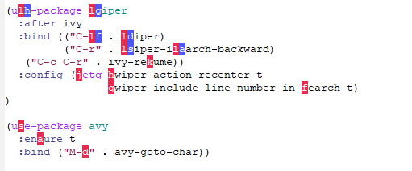]]
(use-package avy :defer 0 :ensure t :bind (("M-g :" . 'avy-goto-char) ("M-g '" . 'avy-goto-char-2) ("M-g \"" . 'avy-goto-char-timer) ("M-g f" . 'avy-goto-line) ("M-g w" . 'avy-goto-word-1) ("M-g e" . 'avy-goto-word-0)))
进阶用法
别忘了，跳转只是它最最基本的功能。事实上，当我们“筛选”后、”选择“前，可以更改 avy 的“行动”，有哪些行动呢？读者可以在输入了“部分文本”后，按下 `?` 键，就会显示出 avy 当前支持的“行动”。
例如下图所示，我们写着写着希望换一种写法，对代码进行重构，把上面的三个 `print` 语句合并在一个函数中，那么一行行分别去选中、复制、回来、粘贴肯定是很麻烦的。于是，我们按下 `M-s C-SPC`，输入 `p` ( print 的开头字母），此时按下 `?`，下面的 Minibuffer 就会显示出可以选择的其它行动，我们希望使用 `Y: yank-line`，于是输入 `Y`（注意大小写），然后按下我们目标 `print` 语句的标签，例如 `a`，这时，`a` 对应的语句就完全被复制到了当前光标所在的位置。我们的光标没有丝毫的移动，就成功将一行代码复制了过来。
它命令的效果，例如 `kill-stay` 可以“隔空剪切文本”、`teleport` 可以“把远处的文本传送到当前位置“等等。注意我们中途按下的 `?` 只是对大家的提示 ，如果熟练记住了几个常用的“行动”，就可以直接省略按 `?` 了 。
如果不喜欢这种输多个字符然后等待 avy 生效这样的方式，也可以把快捷键调用的命令改为例如 `avy-goto-word-1`，这时就可以通过输某个词的首字母就可以直接触发 avy 的筛选。
minibuffer 补全
Emacs有很多很好用的补全体系，如 ivy 体系，vertico 体系等等，这里我们推荐新手朋友使用的是 vertico 。
vertico 体系包含以下几个插件
- vertico
- consult
- embark
- maginalia
它们都比较轻量级，可替代 ivy helm ido 重量级补全
vertico和 Orderless 增强 minibuffer 补全
- vertico https://github.com/minad/vertico 交互垂直
- orderless https://github.com/oantolin/orderless 模糊搜索
(use-package vertico :ensure t :init (vertico-mode)) (use-package orderless :ensure t :after vertico :init (setq completion-styles '(orderless)))
有了 vertico-mode，把之前的 icomplete-mode 关掉。 补全变为垂直，垂直对于我们是更友好的，所有 minibuffer 的行为的可以补全。如使用 M-x 补全变为垂直, C-x C-f 增强显示目录下文件、 C-x b 变为垂直。
orderless 支持 M-x 模糊搜索，可以无序的。 如 edebug-defun 函数搜索， M-x fun debug
marginalia 增强 minubuffer 的 annotation
- marginalia https://github.com/minad/marginalia 注解
一个为 Emacs minibuffer 中的选项添加注解的插件。
(use-package marginalia :ensure t :init (marginalia-mode) :bind (:map minibuffer-local-map ("M-A" . marginalia-cycle)))
M-x 可以看到它会把命令的注释直接显示在minibuffer中
C-h v 查看一个变量的内容，可以发现不用再按回车看到里面的值。直接显示在minibuffer中
C-h f 键位绑定都已经在minibuffer中显示出来了
C-x C-f 显示文件大小权限等， C-x b 显 buffer 大小状态， C-h f 显示函数快捷键等
embark 增强 minibuffer action 和自适应的 context menu
- embark https://github.com/oantolin/embark
- embark 相关博客 https://karthinks.com/software/fifteen-ways-to-use-embark/
minibuffer action 和自适应的 context menu
embark 是另一个比较神奇的工具。Emacs 基本的操作流程是先输入命令再输入命令作用的对象。例如，我们先按下 `C-x C-f` 再输入文件名来打开文件。但是有的时候，我们按下命令、选择了文件后，可能又后悔了，想要对相同的文件输入另一个命令。例如我们按下 `C-x k` 打算关闭一个后台 buffer，然后输入了文件名，这时我们忽然想再查看一眼那个文件。那么平常，我们只好按下 `C-g` 放弃这次命令，再用 `C-x b` 切换过去。而有了 embark ，我们可以在按下 `C-x k` 、输入了部分文件名选中文件后 ，按下 `C-;` 触发 embark-act，这时按下 `o` 就可以在另一个新的窗口打开这个 buffer 了。我们无需放弃命令重新输入，而是继续输入就好了。
直接使用官网提供的配置就好 (官方强烈建议 embark, marginalia, consult 一同使用来改善 minibuffer。 可以代替 ivy。)
(package-install 'embark) (global-set-key (kbd "C-;") 'embark-act) ;; 如 C-x C-h，通过 orderless 的模糊方式直接调用命令 (setq prefix-help-command 'embark-prefix-help-command)
use-package
(use-package embark :defer t :init (setq which-key-use-C-h-commands nil ;; press C-h after a prefix key, it shows all the possible key bindings and let you choose what you want prefix-help-command #'embark-prefix-help-command) (define-key minibuffer-local-map (kbd "C-;") 'embark-act) (define-key minibuffer-local-map (kbd "C-c C-;") 'embark-export) ;;(define-key minibuffer-local-map (kbd "C-c C-e") '+vertico/embark-export-write) (global-set-key (kbd "C-;") 'embark-act) :config (define-key minibuffer-local-map (kbd "C-'") #'embark-become) ;; list all the keybindings in this buffer (global-set-key (kbd "C-h B") 'embark-bindings) ;; add the package! target finder before the file target finder, ;; so we don't get a false positive match. :config (define-key embark-identifier-map "R" #'consult-ripgrep) ;;(define-key embark-file-map (kbd "E") #'consult-directory-externally) )
使用
光标在函数位置，按 C-;
- RET 查看光标处函数定义文件位置，并打开
- c 修改变量的值
- 如 C-h v 变量名，按 C-; c 修改变量的值
优点：不需要记快捷键了
- 以前查看函数的绑定键
C-h b查看函数快捷键绑定：- 以前按
C-x C-h时，会告诉你C-x绑定了哪些快捷键
- 设置了
(setq prefix-help-command #'embark-prefix-help-command)后- 按
C-x C-h模糊输入函数名可看到绑定的快捷键，按回车可直接执行命令，就不需要再记快捷键了。
- 按
如果想要让 avy 也支持 embark，需要在 avy 的配置中添加 :config：
(use-package avy :ensure t :config (defun avy-action-embark (pt) (unwind-protect (save-excursion (goto-char pt) (embark-act)) (select-window (cdr (ring-ref avy-ring 0)))) t) (setf (alist-get ?e avy-dispatch-alist) 'avy-action-embark) :bind (("C-j C-SPC" . avy-goto-char-timer)))
Consult 增强文件内搜索和跳转函数定义
(package-install 'consult) ;;replace swiper 可以替代老的 ivy mode 的 swiper 功能 (global-set-key (kbd "C-s") 'consult-line) (global-set-key (kbd "M-s i") 'consult-imenu) ;跳转函数定义
使用 C-s 搜索的内容就会在minibuffer中垂直显示，使用C-p 或 C-n来上下选择
使用 M-s i 跳转函数定义或者org-mode标题
use-package
(use-package consult :ensure t :bind ( ("C-s" . consult-line) ;; replace swipe ([remap switch-to-buffer] . consult-buffer) ;; 多显示最近打开文件。替换默认 C-x b buffer ("C-c p s" . consult-ripgrep) ;; 查找文件内容，需要安装 ripgrep 命令 ) )
consult-imenu 查看当前文件定义的函数并跳转到函数定义
consult-buffer 显示最近打开的文件
consult-ripgrep 查找文件内容。需要提前安装 ripgrep 命令。grep < ack < ag < ripgrep (rg)
配置划分成不同文件，好以下方式方便查找
(eval-after-load 'consult (global-set-key (kbd "C-c p s") 'consult-ripgrep)) ;; 查找文件内容
使用 `consult-ripgrep` 默认会在以 git 为根目录搜索。`C-n C-p` 下上搜索同时可以预览。
hydra 自定义按键组合菜单插件
hydra 进一步解决了 Emacs 的复杂的命令如何组织的问题，这又是一个 abo-abo（Oleh Krehel）编写的插件。which-key 虽然对快捷键起到了提示作用，但是对于 Emacs 数量这么庞大的命令来说还是有很多不足。
hydra 主要功能是把一组特定场景的命令组织到一起， 通过简单按键来进行调用。这个思路和 Vim 的各种 mode 是类似的。
首先安装好 hydra ，而由于我们希望在 use-package 里进行配置，再安装一个 use-package-hydra 小插件可以让我们的 use-package 多一个 :hydra 关键字，可以更方便地配置。 这段配置应当写在靠前一点的位置比较保险。
(use-package hydra :ensure t) (use-package use-package-hydra :ensure t :after hydra)
范例：f2后，g键放大文本，l键缩小文本
;; 定义hydra 名字可以自行定义如hydra-zoom (defhydra hydra-zoom (global-map "<f2>") "zoom" ("g" text-scale-increase "in") ("l" text-scale-decrease "out"))
使用这个简单的代码，您可以：
- 使用 开始放大：<f2> g
- 继续放大：g
- 或者缩小：l
- 一次放大五倍：5g
- 停止缩放：使用不是 g 或 l 的任何键
起初对 undo-tree 的配置非常简单：
(use-package undo-tree :ensure t :init (global-undo-tree-mode))
而想要和 hydra 结合可以变为：
(use-package undo-tree :ensure t :init (global-undo-tree-mode) :after hydra :bind ("C-x C-h u" . hydra-undo-tree/body) :hydra (hydra-undo-tree (:hint nil) " _p_: undo _n_: redo _s_: save _l_: load " ("p" undo-tree-undo) ("n" undo-tree-redo) ("s" undo-tree-save-history) ("l" undo-tree-load-history) ("u" undo-tree-visualize "visualize" :color blue) ("q" nil "quit" :color blue)))
看起来很长，其实就是定义了一个小表格，可以让我们先按下 C-x C-h u 来调用 hydra-undo-tree/body 这个命令，它会在 minibuffer 中显示出我们配置中的字符串.
此时，我们就可以通过选择 p、n、s、l 和 u 来分别触发五个 undo-tree 的命令了。 所以可以总结为，hydra 可以任意将一些命令组织在一起，方便在某个场合下调用。
具体来说，我们通过 :hydra 标签可以声明这样一组命令，起了个名字，在上面的例子中就是 hydra-undo-tree，被称为 hydra-awesome，习惯以 hydra- 开头。想要调出这一组，需要输入的是就是加上 /body，上例中也就是 hydra-undo-tree/body，当然你可以选择直接调其中的某个命令例如 hydra-undo-tree/undo-tree-undo。
一个值得注意的小细节是每个提示词的颜色，有的为红色，有的为蓝色。事实上颜色是有相对应的设置的，红色的表示按过了之后依然可以继续按，不会退出 hydra ；蓝色表示按了一次就会退出 hydra。例如上例中，我们可能需要多次 undo 和 redo，所以 p 和 n 都是红色的。而 u 可以展示出 undo-tree，而展示出来之后我们就不再需要 hydra 了，所以我们把 u 配置成了蓝色。所有颜色如下：
| color | toggle | |----------+----------------------------| | red | | | blue | :exit t | | amaranth | :foreign-keys warn | | teal | :foreign-keys warn :exit t | | pink | :foreign-keys run |
不想用颜色的话也可以直接用 :exit t 表示按完后就退出。此外还有很多细节可以调整，例如超时退出，具体参考 hydra 的主页 Wiki 吧。
Window
(global-set-key (kbd "<f2>") (defhydra f2-fun (:color pink :hint nil) " Window ^ Resize ^ ^ Move ^ ^Split^ ^Delete ^^^^^^^^----------------------------------------------------------------- _e_: enlarge ^_i_^ _v_:| _dw_:del-current _s_: shrink _j_ _l_ _x_:- _da_:ace-del _E_: enlarge-<> ^_k_^ _|_:>move _do_:del-other _S_: shrink-<> _ws_:swap ___:Vmove ^ ^_db_:kill-buf _bw_: balance ^<Jump>^ ^^^^ _df_:del-frame ^ ^ _a_:ace _f_:to-frame " ("e" #'enlarge-window) ("s" #'shrink-window) ("E" #'enlarge-window-horizontally) ("S" #'shrink-window-horizontally) ("bw" #'balance-windows) ;; Move ("j" #'windmove-left) ("i" #'windmove-up) ("l" #'windmove-right) ("k" #'windmove-down) ("ws" ace-swap-window) ;; Jump ("a" ace-window :exit t) ("f" #'select-frame-by-name :exit t) ;; Spilt ("|" (lambda () (interactive) (split-window-right) (windmove-right))) ("_" (lambda () (interactive) (split-window-below) (windmove-down))) ("v" #'split-window-right) ("x" #'split-window-below) ;; Delete ("da" ace-delete-window) ("dw" delete-window) ("do" delete-other-windows :exit t) ("db" kill-this-buffer) ("df" delete-frame :exit t) ;; Misc ("t" transpose-frame "-<->|") ("nf" new-frame "New-frame" :exit t) ("z" #'text-scale-adjust "Zoom" :exit t) ;; ("q" nil "Quit" :color blue)))
MC 多游标
(global-set-key (kbd "C-S-c") (defhydra hydra-mc (:columns 5) "multiple-cursors" ("ll" mc/edit-lines "lines") ("le" mc/edit-ends-of-lines "end-lines") ("j" mc/mark-next-like-this "next") ("uj" mc/unmark-next-like-this "un-n") ("J" mc/skip-to-next-like-this "skip-n") ("s" #'mc/mark-next-like-this-symbol "symbols-n") ("k" mc/mark-previous-like-this "prev") ("uk" mc/unmark-previous-like-this "un-p") ("K" mc/skip-to-previous-like-this "skip-p") ("aa" mc/mark-all-like-this "all") ("A" mc/mark-all-dwim "dwim") ("aw" #'mc/mark-all-words-like-this "word") ("as" mc/mark-all-symbols-like-this-in-defun "symbols-in-def") ("r" #'mc/mark-all-in-region-regexp "region-regexp") ;; Quit ("q" nil "Quit" :color blue))) ;; ("i" mc/insert-numbers) ;; ( "h" mc-hide-unmatched-lines-mode) ;; ( "dr" mc/reverse-regions) ;; ( "ds" mc/sort-regions)
multiple-cursors多光标插件
- multiple-cursors https://github.com/magnars/multiple-cursors.el
多光标编辑可是编辑器的必备需求。这个插件提供了多种生成多光标的方式。
- *连续多行*：我们按下
C-SPC触发一次set-mark，随后让光标向下移动，再输入M-x mc/edit-lines就生成连续多行光标。 - *编辑多处同一段文本*：选中文本，输入命令
mc/mark-next-like-this、mc/mark-previous-like-this、mc/mark-all-like-this，看名字就知道，分别可以标记下一个词、上一个词、所有词。还可以用mc/skip-to-next-like-this和mc/skip-to-previous-like-this跳过一部分。 - *鼠标点击选择*：见配置，将
mc/toggle-cursor-on-click绑定到某个键位。
(use-package multiple-cursors :config (setq mc/always-run-for-all t)) ;; 使用鼠标左键来选多个位置 (bind-key "M-<down-mouse-1>" 'mc/add-cursor-on-click) (unbind-key "M-<down-mouse-1>" redshank-mode-map)
可以看到这个插件的命令比较杂，一一绑定快捷键难以记忆。这就是又一次要使用 hydra 形成一组快捷键了：
(use-package multiple-cursors :ensure t :after hydra :bind (("C-x C-h m" . hydra-multiple-cursors/body) ("C-S-<mouse-1>" . mc/toggle-cursor-on-click)) :hydra (hydra-multiple-cursors (:hint nil) " Up^^ Down^^ Miscellaneous % 2(mc/num-cursors) cursor%s(if (> (mc/num-cursors) 1) \"s\" \"\") ------------------------------------------------------------------ [_p_] Prev [_n_] Next [_l_] Edit lines [_0_] Insert numbers [_P_] Skip [_N_] Skip [_a_] Mark all [_A_] Insert letters [_M-p_] Unmark [_M-n_] Unmark [_s_] Search [_q_] Quit [_|_] Align with input CHAR [Click] Cursor at point" ("l" mc/edit-lines :exit t) ("a" mc/mark-all-like-this :exit t) ("n" mc/mark-next-like-this) ("N" mc/skip-to-next-like-this) ("M-n" mc/unmark-next-like-this) ("p" mc/mark-previous-like-this) ("P" mc/skip-to-previous-like-this) ("M-p" mc/unmark-previous-like-this) ("|" mc/vertical-align) ("s" mc/mark-all-in-region-regexp :exit t) ("0" mc/insert-numbers :exit t) ("A" mc/insert-letters :exit t) ("<mouse-1>" mc/add-cursor-on-click) ;; Help with click recognition in this hydra ("<down-mouse-1>" ignore) ("<drag-mouse-1>" ignore) ("q" nil)))
之后我们便可以使用 C-x C-h m 来列出所有的命令，然后选择即可。第一次用multiple-cursors可能会问你是否要将 xxx 命令应用到所有的光标上，读者根据具体情况判断即可，之后就不会反复提问了。
tiny
github: https://github.com/abo-abo/tiny
abo-abo 继续为我们带来好用的插件。tiny 可以实现一个方便的序号宏展开。举个小例子就一目了然了：我们想要定义一组函数分别名为 int fun01、int fun02、 …… 、int fun10，正常我们只能一个个手敲，但有了 tiny，我们可以输入一个这样的简单语法：
m1\n10|int func%02d ()
m 是个固定的前缀字符，1\n10 表示 1 到 10 的数字，中间用回车换行分隔，竖线 | 后面是我们的格式化文本。然后我们调用 M-x tiny-expand 命令，就能得到如下文本：
int func01 () int func02 () int func03 () int func04 () int func05 () int func06 () int func07 () int func08 () int func09 () int func10 ()
(use-package tiny :ensure t ;; 可选绑定快捷键，个人感觉不绑定快捷键也无妨 :bind ("C-;" . tiny-expand))
highlight-symbol
- highlight-symbol https://github.com/nschum/highlight-symbol.el
这个插件可以高亮出当前 Buffer 中所有的、与光标所在处的符号相同的符号。也就是例如一些同名变量、函数名等。虽然在后面我们使用一些其他插件时也会捎带有类似功能，但它可以同时高亮很多字符，便于阅读代码等。
(use-package highlight-symbol :ensure t :init (highlight-symbol-mode) :bind ("<f3>" . highlight-symbol)) ;; 按下 F3 键就可高亮当前符号
rainbow-delimiters
- rainbow-delimiters https://github.com/Fanael/rainbow-delimiters
这个插件可以用不同颜色标记多级括号，方便看清代码块（尤其在 EmacsLisp 中）。
(use-package rainbow-delimiters :ensure t :hook (prog-mode . rainbow-delimiters-mode))
google-this
- google-this https://github.com/Malabarba/emacs-google-this
在 Emacs 内选中一段文本，按下 C-c / t 触发 google-this，即可搜索这段文本。
(use-package google-this :ensure t :init (google-this-mode))
evil（为 Vim 用户）
evil 可以让习惯了 Vim 的用户在 Emacs 中使用 Vim 按键方式，大大减轻了 Vim 用户转入 Emacs 的成本。 两个主要 ”Emacs 发行版“ Doom Emacs 和 Spacemacs 都是默认支持的，所以这二者对 Vim 转 Emacs 且不喜欢花太多时间配置的人来说非常合适。
安装Evil
(use-package evil :ensure t :init (setq evil-want-keybinding nil) ;不使用自带的键位绑定。默认加载不同模式下键位绑定 (setq evil-want-C-u-scroll t) ;C-u 实现向上滚动。默认C-u 是emacs中的功能 (evil-mode) ;; https://emacs.stackexchange.com/questions/46371/how-can-i-get-ret-to-follow-org-mode-links-when-using-evil-mode (with-eval-after-load 'evil-maps (define-key evil-motion-state-map (kbd "RET") nil)) ;如果有链接，按回车能访问这个链接 )
evil 可以使用 C-z 切换 Emacs 按键模式和 Vim 按键模式。当然在终端中，这会覆盖掉挂起功能，想要挂起可以按 C-x C-z。
安装undo-tree
;;; evil 使用undo-tree来管理undo redo (use-package undo-tree :ensure t :diminish :init (global-undo-tree-mode 1) (setq undo-tree-auto-save-history nil) (evil-set-undo-system 'undo-tree))
# 光标移动 h: 左 L: 右 j: 下 k: 上 ^ : 跳转至行首第一个非空白字符； 0 : 数字0跳转至绝对行首； $ : 跳转至绝对行尾 G 最后一行 gg 第一行 Ctrl+f : 向文件尾部翻一屏 Ctrl+b : 向文件首部翻一屏 Ctrl+d : 向文件尾部翻半屏 Ctrl+u : 向文件首部翻半屏 # 2窗口 #窗口分割 Ctrl+w,s：split, 水平分割，上下分屏。或者:sp。:sp(split) filename 上下分割，并打开一个新的文件。 Ctrl+w,v：vertical, 垂直分割，左右分屏，或者:vs。:vs(vsplit) filename 左右分割，并打开一个新的文件。 #窗口切换 <C-w>w 在窗口循环切换。如<C-w><C-w><C-w><C-w> <C-w>h 切换到左边的窗口 <C-w>j 切换到右边的窗口 <C-w>k 切换到上边的窗口 <C-w>l 切换到下边的窗口 #窗口移动 <C-w>L 左边窗口移动到右边 <C-w>H 右边窗口移动到左边
Evil state
Emacs中使用vim和外部使用vim的区别
vim 中有normal和insert模式，在emacs中是各种state, 如 noarmal state, insert state
- Normal State (N)
- 这是 Evil 默认的“静止状态”，其中定义了 vi 绑定的主体。
M-x evil-normal-state - Insert State (I)
- 这是插入文本的状态，其中未修改的键将在缓冲区中插入相应的字符。
- Emacs State (E)
- 一种尽可能接近默认 Emacs 行为的状态，通过
C-z从emacs和 vi 相互切换。 - Visual State (V)
- 用于选择文本区域的状态。
- Motion State (M) 运动状态 （M）
- 一种特殊状态，适用于只读缓冲区，其中运动可用，但编辑操作不可用。只读的文档一般都是Motion state 如帮助文档。
M-x evil-motion-state - Replace State (R) 替换状态 （R）
- 一种特殊状态，与插入状态非常相似，只不过它替换文本而不是插入。 按住大写的
R, 一直替换状态
Evil基础用法
增删改查 (text-obj, commands, replace)
- text-obj 更好地操作文本
- 选中单词 viw
- 删除单词 diw
- 跳到r字符的位置： fr
- commands
:进行命令行模式。 :%s/commands/111/ 可以替换, 按 u 回退
evil-guide: https://github.com/noctuid/evil-guide.git
上述文档花2小时认真读就可以完全从vim用户切到emacs上使用了。
interactive replace 交互式替换文本
交互式替换文本. 在evil模式中，选中的单词填写在 :%s/<word>// 中
;;;###autoload (defun my/evil-quick-replace (beg end ) (interactive "r") (when (evil-visual-state-p) (evil-exit-visual-state) (let ((selection (regexp-quote (buffer-substring-no-properties beg end)))) (setq command-string (format "%%s /%s//g" selection)) (minibuffer-with-setup-hook (lambda () (backward-char 2)) (evil-ex command-string))))) (define-key evil-visual-state-map (kbd "C-r") 'my/evil-quick-replace)
交互式替换文本操作：
SPC v或者选中要替换的字符串，按C-r替换
自定义快捷键
定义不同 state 下面的快捷键
;;; 自定义设置 ;; 在进行插入模式后，希望使用emacs的快捷键，而又不希望进入 Emacs State (setcdr evil-insert-state-map nil) (define-key evil-insert-state-map [escape] 'evil-normal-state) ;按 [Esc] 回到normal state ;; 加空行, 默认 o + Esc 需要2次操作. 下面的设置直接在normal 模式中操作 (define-key evil-normal-state-map (kbd "[ SPC") (lambda () (interactive) (evil-insert-newline-above) (forward-line))) ; [ + 空格，向上加空行 (define-key evil-normal-state-map (kbd "] SPC") (lambda () (interactive) (evil-insert-newline-below) (forward-line -1))) ; [ + 空格，向上加空行 ;; 在normal state中切换不同的buffer (define-key evil-normal-state-map (kbd "[ b") 'previous-buffer) ; [ + b 切到前一个buffer (define-key evil-normal-state-map (kbd "] b") 'next-buffer) (define-key evil-motion-state-map (kbd "[ b") 'previous-buffer) (define-key evil-motion-state-map (kbd "] b") 'next-buffer) ;; 在dired模式下，添加快捷键 (evil-define-key 'normal dired-mode-map ; 只修改dired模式下normal模式的快捷键绑定 (kbd "<RET>") 'dired-find-alternate-file (kbd "C-k") 'dired-up-directory ;往上一级目录 "`" 'dired-open-term "q" 'quit-window ; q 退出。默认没有。 可以查看emacs state下的q绑定的函数 =C-x d= 进入dired， =C-z= 进入emacs state， =C-h k= 按 q 可查到对应的函数为 quit-window "o" 'dired-find-file-other-window ; 在另外一个窗口打开文件 "z" 'dired-get-size ")" 'dired-omit-mode)
spacemacs like 快捷键如何定义
general插件中global-definer在init-basic.el中定义
(use-package general :init ;; global-definer 对应leader键为空格 (global-definer "!" 'shell-command ;空格+! SPC ! 进入shell命令行 "SPC" 'execute-extended-command ; 按2下空格SPC-SPC就可以实现 M-x 的效果 "'" 'vertico-repeat "+" 'text-scale-increase "-" 'text-scale-decrease "u" 'universal-argument ;SPC u 相当于emacs的C-u "hdf" 'describe-function ;SPC hdf 相当于emacs的C-h f "hdv" 'describe-variable ;SPC hdv 相当于emacs的C-h v "hdk" 'describe-key ;SPC hdk 相当于emacs的C-h k ;; 查看init-funcs.el 自定义函数 "hh" 'my/highlight-dwim ;SPC hh 高亮选中区域并标上颜色 "hc" 'my/clearn-highlight ;SPC hc 清除高亮颜色 "v" 'er/expand-region ;SPC v 扩大区域 ) ;; leader 键为SPC空格，子leader键为b. 如 SPC b b查看buffer缓冲区 (+general-global-menu! "buffer" "b" "d" 'kill-current-buffer "b" '(consult-buffer :which-key "consult buffer") ; 查看buffer缓冲区 "B" 'switch-to-buffer "p" 'previous-buffer "R" 'rename-buffer "M" '((lambda () (interactive) (switch-to-buffer "*Messages*")) :which-key "messages-buffer") ; SPC b M查看*Message*缓冲区 "n" 'next-buffer "i" 'ibuffer "f" 'my-open-current-directory "k" 'kill-buffer "y" 'copy-buffer-name "K" 'kill-other-buffers) )
参考配置： https://github.com/zilongshanren/emacs.d/blob/eglot/lisp/init-keybindings.el 实现自己的文件、窗口、项目多种快捷键绑定
evil-leader 插件
- evil-leader https://github.com/cofi/evil-leader
在 Emacs 中使用 Leader Key 可以通过 evil-leader 来实现。你需要做的就是在安装后将其激活即可。
提示: 根据cofi/evil-leader的说明，你应该在激活 evil-mode 之前就激活 global-evil-leader-mode，否则 evil-leader 在几个初始缓冲区(scratch, Message,…)上将不生效。
(global-evil-leader-mode)
Leader Key 可以通过 customize-group 来进行设置（Evil Leader/Leader）。因为之后我 们会转移至 Spacemacs 所以我们可以将其设置为空格键 `SPC` 。
在通过下面的配置来设置简单的结合 Leader Key 快捷键组合（我们使用不同的键讲不同的 功能分组，例如我们使用 `f` 键来做关于文件的操作，使用 `b` 键来做关于缓冲区 （Buffer）的操作），
;; evil (evil-leader/set-key "ff" 'find-file ; 打开文件，原C-x C-f 可以用C-h k 输入C-x C-f查找对应的key名称 "fr" 'recentf-open-files ; 打开最近文件， meacs: C-x C-r "bb" 'switch-to-buffer ; 空格-bb切换到buffer，原C-x b "0" 'select-window-0 ; 空格-0切换窗口0，M-0 "1" 'select-window-1 ; 空格-1切换窗口1，M-1 "2" 'select-window-h "3" 'select-window-3 "w/" 'split-window-right ; SPC-w/ 垂直分屏，emacs: C-x 3 vim: C-w v :vs "w-" 'split-window-below ; SPC-w- 水平分屏，emacs: vim: C-w s :sp "wM" 'delete-other-windows ; SPC-wM 删除除当前窗口之外的窗口，emacs: C-x 1 vim: C-w o :only )
相关插件列表
evil-escape插件回退到normal state
任何状态下按 kj 就能回到normal state。很实用，相当于把esc键集中在右手, 一只手就可以操作vim常用功能。
;; kj 退回到普通模式 (use-package evil-escape :ensure t :init ;; {{ https://github.com/syl20bnr/evil-escape (setq-default evil-escape-delay 0.3) (setq evil-escape-excluded-major-modes '(dired-mode)) (setq-default evil-escape-key-sequence "kj") ;; disable evil-escape when input method is on (evil-escape-mode 1) ;; }} )
evil-anzu
小功能ui。 当用 Shift * 查找单词重复出现几次时，下方状态栏会多一个标识显示，显示当前重复出现单词的位置和总重复次数。
;;下方状态栏显示单词重复出现位置 (use-package evil-anzu :ensure t :after evil :diminish :demand t :init (global-anzu-mode t))
evil-collections
使用社区的按键绑定。相对稳定不会改变
同时可以设置不同模式中默认的evil状态
;;; 使用社区稳定的按键绑定。 并设置不同模式中默认的evil状态 (use-package evil-collection :ensure t :after evil :config (setq evil-collection-mode-list (remove 'lispy evil-collection-mode-list)) ; 移除社区中插件的改键对你键位影响 (evil-collection-init) ;; 设置进入mode时对应的vim 模式 (cl-loop for (mode . state) in '((org-agenda-mode . normal) ;进入agenda时默认Normal State状态 (Custom-mode . emacs) (eshell-mode . emacs) ;进入eshell模式时默认Emacs State状态 (makey-key-mode . motion)) do (evil-set-initial-state mode state)))
evil-surround
- evil-surround https://github.com/timcharper/evil-surround
Evil-surround是一个 Vim 上非常常用的插件改写的，使用它可以快速的将选中区域进行 匹配的操作，例如选中区域两边同时进行添加或修改括号，引号等操作。
S用法，选中一个单词后加引号。
viw S "相当于原生vim text object用法viw Shift i "操作
;;; S用法，选中一个单词后加引号。viw S " 相当于原生vim text object用法 viw Shift i " (use-package evil-surround :ensure t :init (global-evil-surround-mode 1))
vim中快捷使用
# normal模式下增加、删除、修改成对内容 ds (delete a surrounding) cs (change a surrounding) ys (you add a surrounding) #1.添加 # name单词两边"name"，光标在name单词上 ys+iw" # name中"nam"e，光标停在n字符上 ys+fm" #2.修改 # "name"变'name' cs+"' # (name)变[name] cs+(] #3.删除 # 'name'变name ds+'
evil-nerd-commenter
- evil-nerd-commenter 快速添加与取消注释的插件 https://github.com/redguardtoo/evil-nerd-commenter
对不同语言加的注释
使用下面的代码将其与 Evil 模式进行绑定，这里我们选择使用 ,/ 作为快捷键。
;;; 添加不同语言的注释 (use-package evil-nerd-commenter :ensure t :init ;; normal 或 visual 模式下按 ,/ 可加注释 ;; (define-key evil-normal-state-map (kbd ",ci") 'evilnc-comment-or-uncomment-lines) (define-key evil-normal-state-map (kbd ",/") 'evilnc-comment-or-uncomment-lines) (define-key evil-visual-state-map (kbd ",/") 'evilnc-comment-or-uncomment-lines) )
操作：加注释
- 单行注释，
,/ - 多行注释，选中行
,/
evil-snipe
小功能ui。高亮查找的字符。 如查找m字符。 fm 当前行的m字符高亮。按 ; 重复查找动作
(use-package evil-snipe :ensure t :diminish :init (evil-snipe-mode +1) (evil-snipe-override-mode +1))
evil-matchit
按 % 可以在函数、括号之间跳转
参考我的文章(如何提高编程速度)
;;; 按 % 可以在函数、括号之间跳转 (use-package evil-matchit :ensure :init (global-evil-matchit-mode 1))
高阶用法（自定义 text-obj 或者 自定义 commands)
我的建议
使用emacs原生按键。 用多了evil，你还是个vim用户，无法轻松操作无配置或精简内置配置的emacs。
Window-numbering 插件
这个插件可以让我们快速的使用 Leader Key 与数字键的组合来在多个窗口之间进行跳转。 它的 GitHub 地址可以在这里找到。
下载安装后通过下面的代码可以将其激活，
(window-numbering-mode 1)
elfeed订阅插件
elfeed-part1
;; elfeed part1 (setq elfeed-db-directory "~/Sync/shared/elfeeddb") (use-package elfeed :ensure t :bind (:map elfeed-search-mode-map ("q" . bjm/elfeed-save-db-and-bury) ("Q" . bjm/elfeed-save-db-and-bury) ("m" . elfeed-toggle-star) ("M" . elfeed-toggle-star) ) ) ;; elfeed-org使用的org文件，提前收藏一些链接 (use-package elfeed-org :ensure t :config (elfeed-org) (setq rmh-elfeed-org-files (list "~/Sync/shared/elfeed.org")))
我们可以在`~/Sync/shared/elfeed.org`提前保存好收藏的地址
\* blogs :elfeed: \** daily :daily: \*** http://telescoper.wordpress.com/feed/ \*** http://xkcd.com/rss.xml \*** http://timharford.com/feed/ \*** http://understandinguncertainty.org/rss.xml \** emacs :emacs: \*** http://www.reddit.com/r/emacs/.rss \*** http://planet.emacsen.org/atom.xml \*** http://feeds.feedburner.com/XahsEmacsBlog \*** http://pragmaticemacs.com/feed/ \*** [[http://emacs.stackexchange.com/feeds][SX]]
运行`M-x elfeed`进入阅读模式，再运行`M-x elfeed-update`更新一下数据，这时就可以看到订阅的网站文章了。
操作
方向键 选择文章 回车 阅读文章 q 退出文章 b 浏览器阅读 s 搜索文章 可多种组合搜索。+string搜索tags为string的未读内容，string搜索内容包含文章，@1-day-ago一天前文章，@6-months-ago六个月前文章 r 标记文章已读 u 标记文章未读 m 标记加星文章 p 向上切换文章 n 向下切换文章 + 设置tags - 取消tags C-x k 杀死buffer
优化配置，更新数据库，及将阅读的状态保存下来，适用于多机器办公。
;;elfeed-mark-all-as-read已读标记 (defun elfeed-mark-all-as-read () (interactive) (mark-whole-buffer) (elfeed-search-untag-all-unread)) ;;functions to support syncing .elfeed between machines ;;makes sure elfeed reads index from disk before launching ;;http://pragmaticemacs.com/emacs/read-your-rss-feeds-in-emacs-with-elfeed/ (defun bjm/elfeed-load-db-and-open () "Wrapper to load the elfeed db from disk before opening" (interactive) (elfeed-db-load) (elfeed) (elfeed-search-update--force)) ;;write to disk when quiting (defun bjm/elfeed-save-db-and-bury () "Wrapper to save the elfeed db to disk before burying buffer" (interactive) (elfeed-db-save) (quit-window)) (defalias 'elfeed-toggle-star (elfeed-expose #'elfeed-search-toggle-all 'star))
优化展示
;;优化窗口，文章列表与内容同窗口展示 (use-package elfeed-goodies :ensure t :config (elfeed-goodies/setup))
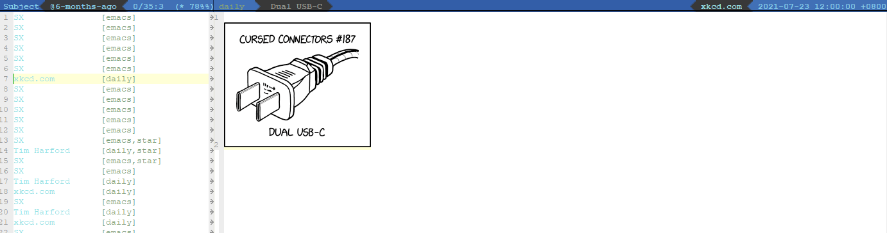]]
elfeed-part2-Hydras
- hydra 自定义按键组合菜单插件 https://github.com/abo-abo/hydra
(use-package hydra :ensure t)
elfeed阅读器自定义组合
(use-package elfeed :ensure t :bind (:map elfeed-search-mode-map ...省略 ("j" . xcw/make-and-run-elfeed-hydra) ("J" . xcw/make-and-run-elfeed-hydra) ) ...省略 ) ...省略 ;; elfeed part2 自定义hydra (defhydra xcw/hydra-elfeed () "filter" ("*" (elfeed-search-set-filter "@6-months-ago +star") "Starred") ("M" elfeed-toggle-star "Mark") ("A" (elfeed-search-set-filter "@6-months-ago") "All") ("T" (elfeed-search-set-filter "@1-day-ago") "Today") ("Q" bjm/elfeed-save-db-and-bury "Quit Elfeed" :color blue) ("q" nil "quit" :color blue) ) (defun xcw/make-and-run-elfeed-hydra () "" (interactive) ;;(mz/make-elfeed-hydra) (mz/hydra-elfeed/body))
生效后，进入`elfeed`按`j`就能显示自定义菜单了
elfeed-part2-macros
我们使用宏可以更灵活定义自己的操作。
范例：宏简单使用
(defmacro infix (a op c) `(,op ,a ,c) ) (macroexpand '(infix 30 * 10 )) ; (* 30 10) (infix 30 * 10 ) ; evaluates to 300
基于第二部分加入宏，可以自动获取数据库大写的字符作为国
我们可以使用调用 elfeed-db-get-all-tags 来获取我们数据库中所有标签的列表
(use-package elfeed :ensure t :bind (:map elfeed-search-mode-map ...省略 ("j" . mz/make-and-run-elfeed-hydra) ("J" . mz/make-and-run-elfeed-hydra) ...省略 ) ;;优化窗口，文章列表与内容同窗口展示 (use-package elfeed-goodies :ensure t :config (elfeed-goodies/setup)) ;; elfeed-org使用的org文件，提前收藏一些链接 (use-package elfeed-org :ensure t :config (elfeed-org) (setq rmh-elfeed-org-files (list "~/Sync/shared/elfeed.org"))) ;;elfeed part3 macros 自动发现标签 (defun z/hasCap (s) "" (let ((case-fold-search nil)) (string-match-p "[[:upper:]]" s) )) (defun z/get-hydra-option-key (s) "returns single upper case letter (converted to lower) or first" (interactive) (let ( (loc (z/hasCap s))) (if loc (downcase (substring s loc (+ loc 1))) (substring s 0 1) ))) ;; (active blogs cs eDucation emacs local misc sports star tech unread webcomics) (defun mz/make-elfeed-cats (tags) "Returns a list of lists. Each one is line for the hydra configuratio in the form (c function hint)" (interactive) (mapcar (lambda (tag) (let* ( (tagstring (symbol-name tag)) (c (z/get-hydra-option-key tagstring)) ) (list c (append '(elfeed-search-set-filter) (list (format "@6-months-ago +%s" tagstring) ))tagstring ))) tags)) (defmacro mz/make-elfeed-hydra () `(defhydra mz/hydra-elfeed () "filter" ,@(mz/make-elfeed-cats (elfeed-db-get-all-tags)) ("*" (elfeed-search-set-filter "@6-months-ago +star") "Starred") ("M" elfeed-toggle-star "Mark") ("A" (elfeed-search-set-filter "@6-months-ago") "All") ("T" (elfeed-search-set-filter "@1-day-ago") "Today") ("Q" bjm/elfeed-save-db-and-bury "Quit Elfeed" :color blue) ("q" nil "quit" :color blue) )) (defun mz/make-and-run-elfeed-hydra () "" (interactive) (mz/make-elfeed-hydra) (mz/hydra-elfeed/body))
最终的
;; elfeed part1 (setq elfeed-db-directory "~/Sync/shared/elfeeddb") (defun mz/elfeed-browse-url (&optional use-generic-p) "Visit the current entry in your browser using `browse-url'. If there is a prefix argument, visit the current entry in the browser defined by `browse-url-generic-program'." (interactive "P") (let ((entries (elfeed-search-selected))) (cl-loop for entry in entries do (if use-generic-p (browse-url-generic (elfeed-entry-link entry)) (browse-url (elfeed-entry-link entry)))) (mapc #'elfeed-search-update-entry entries) (unless (or elfeed-search-remain-on-entry (use-region-p)) ;;(forward-line) ))) ;;elfeed-mark-all-as-read已读标记 (defun elfeed-mark-all-as-read () (interactive) (mark-whole-buffer) (elfeed-search-untag-all-unread)) ;;functions to support syncing .elfeed between machines ;;makes sure elfeed reads index from disk before launching ;;http://pragmaticemacs.com/emacs/read-your-rss-feeds-in-emacs-with-elfeed/ (defun bjm/elfeed-load-db-and-open () "Wrapper to load the elfeed db from disk before opening" (interactive) (elfeed-db-load) (elfeed) (elfeed-search-update--force)) ;;write to disk when quiting (defun bjm/elfeed-save-db-and-bury () "Wrapper to save the elfeed db to disk before burying buffer" (interactive) (elfeed-db-save) (quit-window)) (use-package elfeed :ensure t :bind (:map elfeed-search-mode-map ("q" . bjm/elfeed-save-db-and-bury) ("Q" . bjm/elfeed-save-db-and-bury) ("m" . elfeed-toggle-star) ("M" . elfeed-toggle-star) ("j" . mz/make-and-run-elfeed-hydra) ("J" . mz/make-and-run-elfeed-hydra) ("b" . mz/elfeed-browse-url) ("B" . elfeed-search-browse-url) ) :config (defalias 'elfeed-toggle-star (elfeed-expose #'elfeed-search-toggle-all 'star)) ) ;;优化窗口，文章列表与内容同窗口展示 (use-package elfeed-goodies :ensure t :config (elfeed-goodies/setup)) ;; elfeed-org使用的org文件，提前收藏一些链接 (use-package elfeed-org :ensure t :config (elfeed-org) (setq rmh-elfeed-org-files (list "~/Sync/shared/elfeed.org"))) ;;elfeed part3 macros 自动发现标签 (defun z/hasCap (s) "" (let ((case-fold-search nil)) (string-match-p "[[:upper:]]" s) )) (defun z/get-hydra-option-key (s) "returns single upper case letter (converted to lower) or first" (interactive) (let ( (loc (z/hasCap s))) (if loc (downcase (substring s loc (+ loc 1))) (substring s 0 1) ))) ;; (active blogs cs eDucation emacs local misc sports star tech unread webcomics) (defun mz/make-elfeed-cats (tags) "Returns a list of lists. Each one is line for the hydra configuratio in the form (c function hint)" (interactive) (mapcar (lambda (tag) (let* ( (tagstring (symbol-name tag)) (c (z/get-hydra-option-key tagstring)) ) (list c (append '(elfeed-search-set-filter) (list (format "@6-months-ago +%s" tagstring) ))tagstring ))) tags)) (defmacro mz/make-elfeed-hydra () `(defhydra mz/hydra-elfeed () "filter" ,@(mz/make-elfeed-cats (elfeed-db-get-all-tags)) ("*" (elfeed-search-set-filter "@6-months-ago +star") "Starred") ("M" elfeed-toggle-star "Mark") ("A" (elfeed-search-set-filter "@6-months-ago") "All") ("T" (elfeed-search-set-filter "@1-day-ago") "Today") ("Q" bjm/elfeed-save-db-and-bury "Quit Elfeed" :color blue) ("q" nil "quit" :color blue) )) (defun mz/make-and-run-elfeed-hydra () "" (interactive) (mz/make-elfeed-hydra) (mz/hydra-elfeed/body)) (defun my-elfeed-tag-sort (a b) (let* ((a-tags (format "%s" (elfeed-entry-tags a))) (b-tags (format "%s" (elfeed-entry-tags b)))) (if (string= a-tags b-tags) (< (elfeed-entry-date b) (elfeed-entry-date a))) (string< a-tags b-tags))) (setf elfeed-search-sort-function #'my-elfeed-tag-sort)
Hyperbole 超文本管理系统
GNU Hyperbole 是个 Emacs 的超文本管理系统。
在 Emacs 中使用 Hyperbole 可以极大地提升你管理信息和导航的效率。它是一个功能强大的超文本信息管理系统，通过直观的“按钮”机制，让你能快速创建链接、执行操作并跳转到各种资源。
GNU Hyperbole （发音为 Ga-new Hi-per-bo-lee），简称 Hyperbole，就像是超文本版的 Markdown。无论缓冲区处于何种模式，Hyperbole 都能自动识别数十种常见的预设模式，并能通过一个按键将其立即激活为超链接：电子邮件地址、URL、grep -n 输出、程序回溯、Emacs 按键序列、程序标识符、Texinfo 和 Info 交叉引用、Org 链接、Markdown 链接等等。您只需加载 Hyperbole，即可轻松实现文本的超链接功能，无需任何额外操作或复杂的格式设置。
Hyperbole是一款由五个核心组件组成的套件,包括按钮和智能键、联系人和文本查找器、屏幕控制、超文本大纲以及一个编程库。
安装
Package.el
(require 'package) ;;(add-to-list 'package-archives '("melpa". "https://melpa.org/packages/") t) (setq package-archives '(("gnu" . "https://mirrors.tuna.tsinghua.edu.cn/elpa/gnu/") ("nongnu" . "https://mirrors.tuna.tsinghua.edu.cn/elpa/nongnu/") ("melpa" . "https://mirrors.tuna.tsinghua.edu.cn/elpa/melpa/"))) (package-initialize) (when (not package-archive-contents) (package-refresh-contents)) ;;(package-install 'hyperbole) (use-package hyperbole :ensure t :bind* ("M-RET" . hkey-either) :config (hyperbole-mode 1)) ; 启用 Hyperbole 模式
Straight
(straight-use-package 'hyperbole) (require 'hyperbole)
Quelpa
(package-install 'use-package) (package-install 'quelpa-use-package) (require 'quelpa-use-package) (use-package hyperbole :quelpa (hyperbole :fetcher github :repo "rswgnu/hyperbole" :files ("*") : config '(require 'hyperbole)))
快捷键
- 按键清单：
C-h h - Action Key(动作键)：
M-RET或 SHIFT-中键鼠标 或 Ecs-RET - Assist Key(辅助键)：
C-u M-RET C-h h d d进入演示文档C-h A动作键简介
按钮类型&文件
- {Implicit Buttons}：隐式按钮，最常用。自动定义的按钮，由布尔类型谓词识别，这些谓词与缓冲区中的文本匹配，然后执行相应操作
- <(Explicit Buttons)>：显式按钮。一次创建一个，嵌入在特定文件中
- <(Global Buttons)>：全局按钮。存储在个人按钮文件中，通过名称激活
所有按钮类别都可以调用任意操作，而不仅仅是链接到资源。
按钮可以存储在任何类型的文本文件中，但为了方便访问经常使用的按钮组，Hyperbole 提供了两种按钮文件：
- 单个个人按钮文件 "~/.hyperb/HYPB"。将所有类似书签的按钮放在这里，可通过 {C-h h b p} 访问。
- 每个目录相同类型的文件，也命名为 HYPB，并可通过 {C-h h b d} 从目录中访问。
隐式按钮
一些常见示例：
- 路径名
"DEMO#Global Buttons:2" - 大纲部分锚点 & 相对行号，当前目录下存在DEMO这个文件
"README.md#Hyperbole Components" - Markdown 锚点，保持空格不变
"${hyperb:dir}/HY-NEWS" - Elisp 或环境变量
"subr.el" - 编辑 load-path 中的任何 Elisp 库
"(hyperbole)action-key-modeline-function" - 手册信息
- 按键系列隐式按钮
{C-x 4 b scratch RET M-<"插入任意文本。那很酷！" RET RET M-<}
- Shell Grep 消息、堆栈跟踪、帮助手册 Apropos
{M-x shell RET grep SPC -n SPC gbut:label-list SPC *.el RET} 执行 M-x shell输入 grep -n gbut:labelt-list *.el
{M-x shell RET python SPC /tmp/stack.py RET}
{M-x shell RET apropos SPC windows RET}
{C-0 C-c @ emacs-lisp-mode RET 33 RET} 在一个3x3的网格中显示9个最近最常用的Emacs Lisp缓冲区。
操作按钮（隐式按钮的概括形式）
如果您熟悉Emacs Lisp并希望快速地将Lisp代码或Lisp变量转换成夸张的按钮，只需去掉任何外括号，并用<尖括号>将剩余的代码括起来。
<shell>
- 跳转到shell缓存区或新建一个shell缓冲区
<fill-column>
- 在迷你缓冲区显示变量值
<find-file-other-window (expand-file-name "DEMO" hyperb:dir)>
<hpath:find "${hyperb:dir}/DEMO")>
"${hyperb:dir}/DEMO"
- 执行 Lisp 表达式。 上面的三个基本上做同样的事情，显示文件。
使用 M-RET 跳转到指定链接
创建隐式按钮： 直接写或 C-h h i c 创建并命名
隐式按钮类型
| Implicit Button Types | ||
|---|---|---|
| action | annot-bib | completion |
| cscope | ctags | debbugs-gnu-mode |
| debbugs-gnu-query | debugger-source | dir-summary |
| doc-id | elink | elisp-compiler-msg |
| etags | git-commit-reference | glink |
| gnus-push-button | grep-msg | hyp-address |
| hyp-source | id-cflow | ilink |
| Info-node | ipython-stack-frame | kbd-key |
| klink | mail-address | man-apropos |
| markdown-internal-link | org-link-outside-org-mode | patch-msg |
| pathname | pathname-line-and-column | rfc |
| rfc-toc | ripgrep-msg | social-reference |
| texinfo-ref | text-toc | www-url |
隐式按钮类型存储在它们自己的名称空间“ibtypes::”中，所以请参阅“路径名”ibtype上的文档，使用 {C-h f ibtypes::pathname RET}
显式按钮
所有 <(显式按钮)> 看起来都一样。它们是通过 {C-h h e c} 单独创建的，这会提示输入按钮名称、动作类型及相关参数。
显式链接按钮可以通过将动作鼠标键从源缓冲区拖到引用窗口来创建。Hyperbole 会确定使用的链接类型，如果有多种可能性，它会提示你选择。
Action Types
completion annot-bib www-url debbugs-gnu-query eval-elisp display-boolean exec-kbd-macro display-variable exec-window-cmd hyp-request function-in-buffer hyp-source exec-shell-cmd hyp-config kbd-key link-to-Info-index-item link-to-buffer-tmp link-to-Info-node link-to-directory link-to-elisp-doc link-to-bookmark link-to-doc link-to-file link-to-gbut link-to-kotl link-to-rfc link-to-ebut link-to-file-line link-to-ibut link-to-mail link-to-file-line-and-column link-to-kcell link-to-regexp-match link-to-texinfo-node link-to-string-match link-to-web-search org-link text-toc man-show org-internal-link-target rfc-too org-radio-target
创建显式按钮：
- 方法1
C-h h e c
如：按键名称new button，action类型 link-to-info-node，输入(hyperbole)Smart Keys，回车
- 方法1
<(new button)>
- 方法2 鼠标选中文本拖拽到一个文档到位置
- 在按钮位置使用
M-RET跳转到指定链接。 - 查看属性：在按钮位置，执行
C-u M-RET
@loc> "d:/tmp/a.org"
<(new button)>
Display an Info node given by STRING.
If not found, try to display it as an Info index item.
STRING must be a string of the form "(filename)name" or
"filename.info#name". During button creation, completion for both
filename and node names is available. Filename may be given without
the .info suffix in the format with parentheses.
(fn STRING)
variable-documentation: "The currently selected Hyperbole button. Available to action routines."
lbl-key: "new_button"
lbl-start: 226
lbl-end: 240
loc: "d:/tmp/a.org"
categ: explicit
actype: link-to-Info-node
args: ("(hyperbole)Smart Keys")
creator: "Administrator@SKY-2001BMX"
create-time: #("Nov 25 00:35:41 中国标准时间 2025" 16 22 (charset chinese-gbk))
- 删除按钮：
C-h h e d
隐式按钮通常只能点击，不能激活，因为它们没有名称。但有一种方法可以给隐式按钮命名。 附加到显示按钮的标签，就是它的名称。
<[标签名称]> 后面可以使用等号、冒号、减号来分隔隐式按钮
<[demo]> == "${hyperb:dir}/DEMO:123"
<[demo]> -- "${hyperb:dir}/DEMO"
<[demo]> ::: "${hyperb:dir}/DEMO"
指定查看器
<[PDF
Viewer]> == "${hyperb:dir}/man/hyperbole.pdf"
全局按钮
你个人的 Ibutton 文件中的所有显式或命名的隐式按钮都是全局按钮，可以通过名称使用 {C-h h g a} 激活。
{C-u C-h h g c about-test RET <hpath:find "${hyperb:dir}/HY-ABOUT")> RET}
{C-h h g a about-test RET}
{C-h h g d about-test RET}
鼠标按键
- 通过鼠标激活文本
鼠标操作键：{Shift+Button2}
辅助鼠标键：{Shift+Button3}
- 如果希望使用 Button2 和 Button3（不按 Shift），请将以下内容添加到您的 Emacs 初始化文件中：
(eval-after-load "hyperbole" '(hmouse-add-unshitfted-smart-keys))
或在加载 Hyperbole 后交互式执行：
<hmouse-add-unshifted-smart-keys>
- 在 Hyperbole 鼠标按钮和之前的绑定之间切换：
{M-x hmouse-toggle-bindings RET}
鼠标拖动与 Treemacs
窗格与窗扇
查找菜单
- 专业的网页搜索手动进行起来太困难，所以人们最终只是做一些效果不佳的普通搜索。
- Hyperbole 的“查找”和“网页搜索”功能旨在更容易地将你与所需信息连接起来。
- 这不正是我们最初构建超文本的原因吗？
C-h h f 提示查找类型
find> GrepFiles LocateFiles MatchFileBuffers OccurHere RemoveLines SaveLines Web/ 输入 w 进入Web选项 Web> Amazon Bing Dictionary ducKduckgo Elisp Facebook Google gitHub Images Jump Maps RFCs StackOverflow Twitter Wikipedia Youtube 输入 e 表示Elisp 会打开浏览器，https://www.google.com/search?q=info+filetype:el
大纲器
Koutliner 是唯一一个具有动态多级节点编号（例如 1.4.3.2）以及每个节点的永久超链接锚点的 Emacs 大纲工具，同时还支持在超链接中包含的视图规格影响大纲视图。它非常适合待办事项列表、头脑风暴、需求文档或任何需要详细结构的内容。
{C-x o C-h h k e}
<EXAMPLE.kotl, 4=012 |bc1e>
– “可以把 Hyperbole 看作是一组原语，帮助你以所希望的方式组织和显示文本，就像 Emacs 大纲一样。使用它为你的个人按钮文件结构化各个部分，然后在每个部分添加适当的显式和隐式按钮。或者使用 Koutliner，这样你可以直接链接到自动编号的节点。或者在代码的评论中嵌入链接，让人们可以快速参考相关资料。”
C-h h k
Kotl> All Blanks Create Downto Examp Format/ Hide Info Kill Link Overvw Show Top Vspec
输入 e 表示Examp 查看内置示例
单元格操作
- C-j 在当前单元格后创建同级单元格
- C-u C-j 创建当前单元格的子单元格
- C-c C-k 删除当前单元格及其整个子树
- {C-c p} 会将该单元格添加为当前单元格父单元格的同级单元格。
层级调整
- TAB 降低当前单元格（及其子树）的层级（Demote）
- M-TAB 提升当前单元格（及其子树）的层级（Promote）
- M-1 TAB 将TAB/M-TAB键切换为插入制表符功能
切换编号的显示格式
- 切换编号格式 C-c C-l ? 显示并选择不同的编号格式
- 修改当前大纲分隔符 C-c M-l 更改当前Koutline文件的分隔符
- 修改默认分隔符 C-u C-c M-l 更改创建新大纲时的默认分隔符
{C-c C-v} 会提示输入一个视图规格字符串，其中以下代码是有效的。视图规格中的任何无效字符都会被忽略。如 ben. 相当切换编号显示格式
C-c C-v
ce 一行显示
c2e 二行显示
c2eb 恢复原样
HyRolo
HyRolo 是一个易于使用但功能强大的联系人管理和记录查询工具（现在支持 BBDB 和 Google 联系人）。联系人可以分布在多个文件中，并且如果需要可以使用不同的格式。夸张按钮可以嵌入条目中，并从搜索匹配缓冲区中激活。HyRolo 文件是 Emacs 大纲，因此可以以标准方式快速折叠和重新组织。
{C-x 4 r} 即 C-h h r r
T折叠所有条目 q退出
HyControl & Org模式
- 快速控制窗口和框架
C-h h s
Screen> FramesControl WindowsControl 输入w进入窗口模式，如按[]左右分隔窗口，q退出
- 窗口网格 - 快速多窗口布局
{C-u 0 M-x hycontrol-windows-grid RET python-mode RET 23 RET}
- 通过按键序列的隐式按钮进行脚本化
- 为单个窗口或框架更改界面大小的最快方法
插件-外观主题
外观类：配置颜色、主题、屏保等。
modeline 增强
simple
在modeline里显示行号、列号以及当前文本的大小
;;modeline上显示文件大小、 列号 (use-package simple :ensure nil :hook (after-init . size-indication-mode) :init (setq column-number-mode t))
doom-modeline
好看的modeline
- doom-modeline doom-modeline
更换主题
customize theme 内置主题
自带的主题颜色，可以使用 M-x customize themes 图形化来选择，或者使用命令 load-theme 主题 。如 M-x load-theme light-blue
- leuven，我最喜欢的亮色主题之一了。其实它也有暗色主题，只是没有内置。
- modus，应该是从Emacs 28开始内置的一款包含亮/暗色的主题。非常好，我很喜欢。暗色有的时候，我感觉眼睛有点累。
(load-theme 'manoj-dark) (load-theme 'leuven t) (load-theme 'tango-dark)
color-theme-sanityinc-tomorrow 主题插件
参考 purcell/emacs.d 配置
(use-package color-theme-sanityinc-tomorrow :ensure t ) ;; Don't prompt to confirm theme safety. This avoids problems with ;; first-time startup on Emacs > 26.3. (setq custom-safe-themes t) ;; If you don't customize it, this is the theme you get. (setq-default custom-enabled-themes '(sanityinc-tomorrow-bright)) ;; Ensure that themes will be applied even if they have not been customized (defun reapply-themes () "Forcibly load the themes listed in `custom-enabled-themes'." (dolist (theme custom-enabled-themes) (unless (custom-theme-p theme) (load-theme theme))) (custom-set-variables `(custom-enabled-themes (quote ,custom-enabled-themes)))) (add-hook 'after-init-hook 'reapply-themes) ;; Toggle between light and dark (defun light () "Activate a light color theme." (interactive) (setq custom-enabled-themes '(sanityinc-tomorrow-day)) (reapply-themes)) (defun dark () "Activate a dark color theme." (interactive) (setq custom-enabled-themes '(sanityinc-tomorrow-bright)) (reapply-themes))
使用 light 和 dark 命令切换主题。
zenburn-theme 主题插件
(use-package zenburn-theme :ensure t :config (load-theme 'zenburn t))
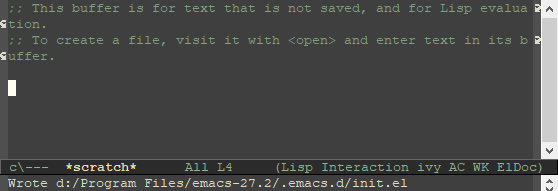]]
monokai-theme 主题插件
- monokai-theme https://github.com/oneKelvinSmith/monokai-emacs/
(defvar mypackages '( ;; theme monokai-theme ) "Default packages") ;; 每次打开编辑器时加载主题， (add-to-list 'my/packages 'monokai-theme) (load-theme 'monokai 1)
use-package
;; 换主题 (use-package monokai-theme :init (load-theme 'monokai t) ;初始化参数 )
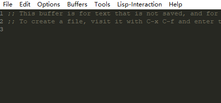]]
doom-themes
(use-package doom-themes :ensure t :init (if (display-graphic-p) (load-theme 'doom-solarized-light) (load-theme 'doom-tomorrow-night))) (use-package doom-modeline :ensure t :init (setq doom-modeline-minor-modes t) :custom-face (mode-line ((t (:height 0.95)))) (mode-line-inactive ((t (:height 0.95)))) :hook (after-init . doom-modeline-mode))
插件-有趣类
有趣类：实用性不高但很有趣的插件
教学辅助
keycast
github: https://github.com/tarsius/keycast
显示键绑定和命令
软件包提供四种模式，用于显示当前命令及其按键或鼠标绑定。
- keycast-mode-line-mode 在所选窗口底部的模式行中显示当前绑定。
- keycast-header-line-mode 在所选窗口的顶部标题行中显示当前绑定。
- keycast-tab-bar-mode 在所选框架顶部的标签栏中显示当前绑定。
- keycast-log-mode 在专用窗口中显示最近绑定的列表。
激活
M-x keycast-mode
;;modeline上显示我的所有的按键和执行的命令 (use-package keycast :ensure t :config (add-to-list 'global-mode-string '("" keycast-mode-line " ")) (keycast-mode-line-mode t))
小功能包
beacon 滚动时闪烁光标插件
;; 每次滚动时都会闪烁光标 (use-package beacon :ensure t :config (beacon-mode 1) ; this color looks good for the zenburn theme but not for the one (setq beacon-color "#666600"))
画图
artist 画文本图内置包
插件包管理 在artist-mode中，你可以使用鼠标或者键盘来画线(可以带箭头)、矩形、正方形、多边形、椭圆、圆和一些类似于水蒸气似的不规则图形，当然可以擦除，填出图形，还可以在其上写字。
- 进入artist-mode `M-x artist-mode`
- 离开artist-mode `M-x artist-mode-off` 或`C-c C-c`
- mouse-2（鼠标中键）,shift mouse-2 弹出一个菜单，从菜单里你可以选择要使用左键画什么类型更改一些设定
- mouse-1 ( 鼠标左键) , shift-mouse-1 绘制部分由鼠标左键完成，请参考绘制操作。
- mouse-3 ( 鼠标右键) , shift mouse-3 mouse-3 删除鼠标下的一个字符 shift mouse-3 画出矩形框，删除框选所有字符
绘制操作（鼠标左键）
| 操作 | 无shift | shift |
| ---------- | ------------------------------------------------------------ | ------------------------------------------------------------ |
| pen | 单击，在鼠标点填充一个“填充符号”，默认为"."； | 单击，在鼠标点填充一个“o”； |
| 按下左键，拖动，抬起，绘制填充符号组成的线 | 按下左键，拖动，抬起，绘制一条从初始点到最终点的直线 | |
| Line | 任意方向的线 | 直线 |
| Rectangle | 矩形 | 正方形 |
| Poly-line | 任意方向的多边形 | 每条线都是直线的多边形 |
| Ellipses | 椭圆 | 圆 |
| Text | 文本 | 覆盖式文本 |
| Spray-can | 喷雾器 | 设置喷雾器的大小 |
| Erase | 橡皮，擦掉一个字符 | 擦掉矩形内字符 |
| Vaporize | 擦除一行 | 擦除所有相连的行 |
| Cut | 剪切矩形 | 剪切正方形 |
| copy | 复制矩形 | 复制正方形 |
| paste | 粘贴 | 粘贴 |
| Flood-fill | 填充工具，填充 | 填充 |
范例： 画一个rectangle
- C-c C-a C-o选择rectangle画笔
- 此时按下Ret, 然后鼠标开始移动(C-b C-n C-p C-f等cursor移送就好)
- C-c C-a C-o切到text画笔(其实不选也可以)，然后输入想要输入的字符串
- 同理就可以绘制出backend1 backend2
- C-c C-a C-o选择line 到线的中间位置按下RET，变成 +，开始走位，然后到结 尾，按下Ret,拐弯就是拐弯的地方按下RET
这个时候没有箭头等信息 可以先生成图片看看是啥样的,结束artist-mode然后首尾添加 怎么增加箭头呢？其实这里我不建议用命令或者啥的搞，如果基本就是 <,>,^,v
+--------------+
+--+ +----+
| | nginx | |
| +--------------+ |
| |
v v
+----------+ +-----------+
| | | |
| backend1 | | backend2 |
+----------+ +-----------+
- artist-mode/picture-mode: 生成 ascii 图
- ditaa: 根据ascii图生成图片
- graphviz: 生成关系图
- plantuml: 基于graphiz之上,生成uml图
参考帮助: C-h f artist-mode
文档 切换艺术家模式。
这是一个次要模式。 如果以交互方式调用，请切换艺术家模式。 如果前缀参数为正，则启用该模式，如果为零或负，则禁用该模式。
如果从 Lisp 调用，则在 ARG 已切换时切换模式。 如果 ARG 为零、省略或为正数，则启用该模式。 如果 ARG 为负数，则禁用该模式。
要检查当前缓冲区中是否启用了次要模式，请评估艺术家模式。
当模式启用和禁用时都会调用该模式的钩子。
Artist 可让您使用鼠标和/或键盘绘制线条、正方形、矩形和多段线、椭圆形和圆形。
如何退出艺术家模式
输入 M-x artist-mode-off 退出艺术家模式。
如何提交错误报告
输入 M-x artist-submit-bug-report 以提交错误报告。
用鼠标绘图：
mouse-2(鼠标中键)
shift mouse-2 弹出一个菜单，您可以在其中选择使用
mouse-1 绘制的内容，并可以在其中进行一些设置（如下所述）。
mouse-1(鼠标左键)
shift mouse-1 绘制线条、矩形或多段线、擦除、剪切、复制
或粘贴：
操作 未Shift Shift
-------------------------------------------------- ------------
pen(笔) 在点处填充字符 . 从最后一个点到新点的直线
-------------------------------------------------- ------------
Line(直线) 任意方向的直线 直线
-------------------------------------------------- ------------
Rectangle(长方形) 长方形 正方形
-------------------------------------------------- ------------
Poly-line(多段线) 任意方向的多段线 直多段线
-------------------------------------------------- ------------
Ellipses(椭圆) 椭圆 圆形
-------------------------------------------------- ------------
Text(文本) 文本（see thru查看） 文本（overwrite覆盖）
-------------------------------------------------- ------------
Spray-can(喷雾罐) 喷雾罐 设置喷雾尺寸
-------------------------------------------------- ------------
Erase(擦除) 擦除字符 擦除矩形
-------------------------------------------------- ------------
Vaporize(蒸发) 擦除单线 擦除已连接线
-------------------------------------------------- ------------
Cut(剪切) 剪切矩形 剪切正方形
-------------------------------------------------- ------------
Copy(复制) 复制矩形 复制正方形
-------------------------------------------------- ------------
Paste(粘贴) 粘贴 粘贴
-------------------------------------------------- ------------
Flood-fill(填充) 填充 填充
-------------------------------------------------- ------------
* 直线只能水平、垂直或对角线。
* 按住 mouse-1 时绘制 Poly-lens(多段线)。 当您释放按钮时，该点即被设置。 如果您希望线段是直的，请在按鼠标 1 按钮之前按住 Shift 键。 单击鼠标 2 或鼠标 3 停止绘制多段线。
* See thru for text 意味着缓冲区中已经存在的文本将通过渲染文本中的空白可见，而 overwrite 则相反。
* Vaporize(汽化)连接的线路仅汽化 _端点_ 已连接的线路。 另请参见变量 artist-vaporize-fuzziness。
* Cut(剪切)副本，然后清除矩形/正方形。
* 绘制直线或多段线时，可以设置箭头。
有关详细信息，请参阅下面的“箭头”。
* 模式栏显示当前选择的绘图操作。 此外，如果末尾有一个星号 (*)，则表明您当前正在绘制某些内容。
* Flood-fill(填充)时要有耐心 —— 大面积区域需要相当长的时间才能被填充。
mouse-3(鼠标右键) 删除指针下的字符
shift mouse-3 擦除矩形
设置
Set fill(设置填充) 设置填充矩形/正方形时使用的字符
Set line(设置线条) 设置绘制线条时使用的字符
Erase char(擦除字符) 设置擦除时使用的字符
Rubber-banding(橡皮筋) 切换橡皮筋
Trimming(修剪) 切换行尾的修剪（即：绘制形状时，删除行尾处的无关空白）
Borders(边框) 切换填充形状周围线条边框的绘制
用键绘图
M-x artist-key-set-point 执行以下操作之一：
对于直线/矩形/正方形：设置第一个/第二个端点
对于多段线：设置一个点（使用 C-u M-x artist-key-set-point 设置最后一个点）
擦除字符时：切换erasing(擦除)
剪切/复制时：设置矩形/正方形的第一个/最后一个端点
粘贴时：Pastes(粘贴)
M-x artist-select-operation 选择要绘制的内容
使用 M-x artist-next-line、M-x artist-previous-line、M-x artist-forward-char 和 M-x artist-backward-char 进行移动。
M-x artist-select-fill-char 设置填充时使用的字符
M-x artist-select-line-char 设置绘图时使用的字符
M-x artist-select-erase-char 设置擦除时使用的字符
M-x artist-toggle-rubber-banding 切换橡皮筋
M-x artist-toggle-trim-line-endings 切换行结尾的修剪
M-x artist-toggle-borderless-shapes 切换绘制形状的边框
箭头
M-x artist-toggle-first-arrow 设置/取消设置线条/折线开头的箭头
M-x artist-toggle-second-arrow 设置/取消设置线条/多段线末端的箭头
选择操作
有一些快速选择绘图操作的按键：
M-x artist-select-op-line 选择绘图线
M-x artist-select-op-straight-line 选择绘制直线
M-x artist-select-op-rectangle 选择绘图矩形
M-x artist-select-op-square 选择绘图方块
M-x artist-select-op-poly-line 选择绘制多段线
M-x artist-select-op-straight-poly-line 选择绘制直折线
M-x artist-select-op-ellipse 选择绘图椭圆
M-x artist-select-op-circle 选择绘制圆圈
M-x artist-select-op-text-see-thru 选择渲染文本（see thru）
M-x artist-select-op-text-overwrite 选择渲染文本（覆盖）
M-x artist-select-op-spray-can 用喷雾罐喷雾
M-x artist-select-op-spray-set-size 设置喷雾罐尺寸
M-x artist-select-op-erase-char 选择擦除字符
M-x artist-select-op-erase-rectangle 选择擦除矩形
M-x artist-select-op-vaporize-line 选择蒸发单线
M-x artist-select-op-vaporize-lines 选择蒸发连接线
M-x artist-select-op-cut-rectangle 选择剪切矩形
M-x artist-select-op-copy-rectangle 选择复制矩形
M-x artist-select-op-paste 选择粘贴
M-x artist-select-op-flood-fill 选择填充
变量
这是不同变量的简要概述。 欲了解更多信息，
请参阅变量的文档（类型 M-x describe-variable <variable> RET）。
artist-rubber-banding 是否交互式地进行橡皮筋
artist-first-char 在第一/第二点设置什么...
artist-second-char ...当不使用橡皮筋时
artist-interface-with-rect 应该剪切/复制/粘贴带有矩形的界面
artist-arrows 绘制箭头时使用的箭头
artist-aspect-ratio 方块的字符高度与宽度
artist-trim-line-endings 修剪行尾
artist-flood-fill-right-border 填充时的右边框
artist-flood-fill-show-incrementally 填充时更新显示
artist-pointer-shape 绘图时使用的指针形状
artist-ellipse-left-char 用于窄椭圆的字符
artist-ellipse-right-char 用于窄椭圆的字符
artist-borderless-shapes 形状是否应该有边框
artist-picture-compatibility 图片模式兼容性打开或关闭
artist-vaporize-fuzziness 识别线条时的公差
artist-spray-interval 重复喷涂之间的秒数
artist-spray-radius 喷涂区域的大小
artist-spray-chars 喷雾-“颜色”
artist-spray-new-char 初始喷雾-“颜色”
Hooks(钩子)
打开或关闭模式会运行艺术家模式钩子。
键位图总结
< artist-toggle-first-arrow
<down-mouse-1> artist-down-mouse-1
<down-mouse-2> artist-mouse-choose-operation
<down-mouse-3> artist-down-mouse-3
<down> artist-next-line
<left> artist-backward-char
<right> artist-forward-char
<up> artist-previous-line
> artist-toggle-second-arrow
C-<mouse-4> artist-select-prev-op-in-list
C-<mouse-5> artist-select-next-op-in-list
C-b artist-backward-char
C-c C-a C-b artist-submit-bug-report
C-c C-a C-d artist-select-op-erase-char
C-c C-a C-e artist-select-erase-char
C-c C-a C-f artist-select-fill-char
C-c C-a C-k artist-select-op-cut-rectangle
C-c C-a C-l artist-select-line-char
C-c C-a C-o artist-select-operation
C-c C-a C-r artist-toggle-rubber-banding
C-c C-a C-s artist-toggle-borderless-shapes
C-c C-a C-t artist-toggle-trim-line-endings
C-c C-a C-y artist-select-op-paste
C-c C-a E artist-select-op-erase-rectangle
C-c C-a L artist-select-op-straight-line
C-c C-a M-w artist-select-op-copy-rectangle
C-c C-a P artist-select-op-straight-poly-line
C-c C-a R artist-select-op-square
C-c C-a S artist-select-op-spray-can
C-c C-a T artist-select-op-text-overwrite
C-c C-a V artist-select-op-vaporize-lines
C-c C-a c artist-select-op-circle
C-c C-a e artist-select-op-ellipse
C-c C-a f artist-select-op-flood-fill
C-c C-a l artist-select-op-line
C-c C-a p artist-select-op-poly-line
C-c C-a r artist-select-op-rectangle
C-c C-a s artist-select-op-square
C-c C-a t artist-select-op-text-see-thru
C-c C-a v artist-select-op-vaporize-line
C-c C-a z artist-select-op-spray-set-size
C-c C-c artist-mode-off
C-f artist-forward-char
C-n artist-next-line
C-p artist-previous-line
RET artist-key-set-point
S-<down-mouse-1> artist-down-mouse-1
S-<down-mouse-2> artist-mouse-choose-operation
S-<down-mouse-3> artist-down-mouse-3
按键绑定
该命令不在任何键盘映射中。
figlet 插件
在一个窗口中写出ascii-art， yank到源码中作为注释。
提前在操作系统安装 figlet 命令
# macOS brew install figlet # ubuntu apt install figlet # 使用 figlet "abc" figlet -f weird oh-my-zsh # -f参数引用 字体 figlet -f lean oh-my-zsh| tr ' _/' ' ()' # 使用tr命令替换使用的字符 #-c/-r/-l 参数设置文字的对齐方式，分别为-c center ，-l left ，-r right #-w int 参数设置文字的最大宽度
use-package
(use-package figlet :ensure t) ;; (package-install 'figlet)
使用 `M-x figlet` 输入字符串。
pandoc 文本转换器
pandoc https://pandoc.org/
pandoc支持多少文件格式的相互转换，基本满足日常需求。下面介绍简单的使用。
.org 文件可以很轻松的通过 org-md-export-to-markdown 生成 .md 文件。 .md 文件可以借助 Pandoc 生成 .org
#选项 -f <format>, -r <format> #指定输入文件格式，默认为 Markdown； -t <format>, -w <format> #指定输出文件格式，默认为 HTML； -o <file> #指定输出文件，该项缺省时，将输出到标准输出； --highlight-style <style> #设置代码高亮主题，默认为 pygments； -s #生成有头尾的独立文件（HTML，LaTeX，TEI 或 RTF）； -S #聪明模式，根据文件判断其格式； --self-contained #生成自包含的文件，仅在输出 HTML 文档时有效； --verbose #开启 Verbose 模式，用于 Debug； --list-input-formats #列出支持的输入格式； --list-output-formats #列出支持的输出格式； --list-extensions #列出支持的 Markdown 扩展方案； --list-highlight-languages #列出支持代码高亮的编程语言； --list-highlight-styles #列出支持的代码高亮主题； -v, --version #显示程序的版本号； -h, --help #显示程序的帮助信息。 --toc #生成目录
范例：
pandoc -f html -t org -o h.org h.html #html 转 org pandoc -f markdown -t org -o a.org a.md #markdown 转 org pandoc -f org -t markdown -o b.md b.org #org 转 markdown
插件整理
dired 目录相关插件
diredfl https://github.com/purcell/diredfl
这改编自 Drew Adams 的 dired+ 包提供的额外字体锁定规则，但通过现代方式发布，并删除了对旧 Emacsen 的支持。
`C-x d`
dired-recent https://github.com/vifon/dired-recent.el
使用 Emacs 访问的路径的历史记录.
`C-x C-d` to select a previously visited directory to open
;; dierd+额外版 (use-package diredfl :ensure t :config (diredfl-global-mode 1)) (setq dired-listing-switches "-lXGh --group-directories-first" dired-dwim-target t) (add-hook 'dired-mode-hook 'dired-hide-details-mode) ;;A history of paths visited with Emacs dired.使用 Emacs 访问的路径的历史记录 (use-package dired-recent :ensure t :config (dired-recent-mode 1) ) (defun my-dired-recent-dirs () "Present a list of recently used directories and open the selected one in dired" (interactive) (let ((dir (ivy-read "Directory: " dired-recent-directories :re-builder #'ivy--regex :sort nil :initial-input nil))) (dired dir))) (setq dired-guess-shell-alist-user '(("" "xdg-open")))
旧版dired插件
; wiki melpa problem ;(use-package dired+ ; :ensure t ; :config (require 'dired+) ; ) (setq dired-dwim-target t) (use-package dired-narrow :ensure t :config (bind-key "C-c C-n" #'dired-narrow) (bind-key "C-c C-f" #'dired-narrow-fuzzy) (bind-key "C-x C-N" #'dired-narrow-regexp) ) (use-package dired-subtree :ensure t :after dired :config (bind-key "<tab>" #'dired-subtree-toggle dired-mode-map) (bind-key "<backtab>" #'dired-subtree-cycle dired-mode-map))
pcre2el正则插件
(use-package pcre2el :ensure t :config (pcre-mode) )
在目录模式中使用`%m`开启正则匹配
`C-c / /` rxt-explain
Atomic Chrome已弃用
(use-package atomic-chrome :ensure t :config (atomic-chrome-start-server)) (setq atomic-chrome-buffer-open-style 'frame)
自定义菜单插件
参考：http://xahlee.info/emacs/emacs/elisp_menu.html
;; Creating a new menu pane in the menu bar to the right of “Tools” menu (define-key-after global-map [menu-bar mymenu] (cons "MyMenu" (make-sparse-keymap "hoot hoot")) 'tools ) ;; Creating a menu item, under the menu by the id “[menu-bar mymenu]” (define-key global-map [menu-bar mymenu co] '("Clock Out" . org-clock-out)) ;; creating another menu item (define-key global-map [menu-bar mymenu ci] '("Clock In" . org-clock-in)) ;; code to remove the whole menu panel ;; (global-unset-key [menu-bar mymenu])
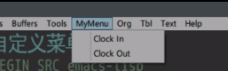]]
插件-开发环境
编程辅助
函数跳转与注释
函数定义跳转 `M-.` 再使用`M-,`跳回原来位置 `M-;` 插入当前行注释
Completion 自动补全
基本的补全
;; 内置补全功能 (setq tab-always-indent 'complete) ;; 使用 TAB 来列出当前补全选项 ;;(icomplete-mode t) ;; 开启的，在按 M-x 时就有可选的选项了。有了 vertico-mode，可以把这项关掉 (electric-pair-mode t) ;; 括号补全 (show-paren-mode t) ;; 括号匹配
auto-complete 补全插件
(use-package auto-complete :ensure t :init (progn (ac-config-default) (global-auto-complete-mode t)))
 ]]
]]
过时了，后面用company插件
(use-package company :ensure t :config (setq company-idle-delay 0) (setq company-minimum-prefix-length 3) (global-company-mode t) )
Company 补全插件
- Company 补全插件 http://company-mode.github.io/
- Company是'complete anything'的意思，是一种 auto-complete 自动补全
- 支持各种后端 (back-ends): Elisp, clang, yasnippet…
- 可以更改前端样式
安装
package-install company ;; Auto-completion (global-company-mode 1) (setq company-idle-delay 0) ;; 补全时间快些 (setq company-minimum-prefix-length 3) ;; 最小几个字符开始补全
我们可以使用下面的配置来在 Company-mode 中使用 C-n 与 C-p 来选择补全项，
;; Company-mode 中使用 `C-n` 与 `C-p` 来选择补全项 ;; company mode 默认选择上一条和下一条候选项命令 M-n M-p (with-eval-after-load 'company (define-key company-active-map (kbd "M-n") nil) (define-key company-active-map (kbd "M-p") nil) (define-key company-active-map (kbd "C-n") #'company-select-next) (define-key company-active-map (kbd "C-p") #'company-select-previous))
use-package
(use-package company :ensure t :init (global-company-mode t) ;; 全局开启 company 补全 :config (setq company-idle-delay 0) ;; 补全时间快些 (setq company-minimum-prefix-length 1) ;; 最少输入1个字符开启 (setq company-show-numbers t) ;; 给选项编号 (按快捷键 M-1、M-2 等等来进行选择) (setq company-dabbrev-other-buffers 'all) ;; 从所有缓冲区收集补全信息 (setq company-tooltip-align-annotations t) ;; 右侧附加注释 (setq company-selection-wrap-around t) (setq company-transformers '(company-sort-by-occurrence)) ; 根据选择的频率进行排序，如果不喜欢可以去掉 :bind (:map company-active-map ("C-n" . 'company-select-next) ("C-p" . 'company-select-previous))) ;; 使用 `C-n` 与 `C-p` 来选择补全项，默认选择上一条和下一条候选项命令 M-n M-p
缩写补全
使用下面的代码我们可以开启 `abbrev` 模式并定义一个缩写表，每当我们输入下面的缩写 并以空格结束时，Emacs 就会将其自动展开成为我们所需要的字符串。
;; 别名 (setq-default abbrev-mode t) (define-abbrev-table 'global-abbrev-table '( ;; signature ("8jv" "jaspervincent") ;; Microsoft ("8ms" "Microsoft") ))
上面的缩写前使用的 `8` 也类似于命名空间的作用，使其不会与我们所常用的字符串冲突。
hippie-expand 补全
Emacs 还有一个非常实用的补全小功能 hippie。dabbbrev 与之功能相似，二者都是 Emacs 自带的功能。
Company 有时候补全功能并不是非常理想，这时就可以使用 Hippie Expand 来完成补全。 Company Mode 补全效果不理想的原因是在不同的区域中会使用不同的后端函数来完成补全， 但是当后端补全函数不能被激活时，则补全就不会被激活。
我们可以将下面的代码加入到我们的配置文件中，来增强 Hippie Expand 的功能，
(global-set-key (kbd "M-/") 'hippie-expand) (setq hippie-expand-try-function-list '(try-expand-debbrev try-expand-debbrev-all-buffers try-expand-debbrev-from-kill try-complete-file-name-partially try-complete-file-name try-expand-all-abbrevs try-expand-list try-expand-line try-complete-lisp-symbol-partially try-complete-lisp-symbol))
然后将其绑定为快捷键，使我们可以更方便的使用它。默认 `M-/` 键就被绑定到了 dabbrev-expand 函数。
当我们输入几个字符前缀，然后按下 `M-/` 调用 hippie-expand 函数，它会根据前缀匹配后面的内容。不同于普通的代码补全，它的补全还包括了文件名、elisp 函数名等。它的补全规则不包含语法分析，而是纯文本补全，很适用于我们写一些重复性的相似代码/其它文本的场合。
补全完善
不补全'单引号
;; 输入'引号不会再补全另一个 emacs 27.2 不生效 ;; (sp-local-pair 'emacs-lisp-mode "'" nil :actions nil) ;; (sp-local-pair 'lisp-interaction-mode "'" nil :actions nil) ;; 也可以把上面两句合起来 (sp-local-pair '(emacs-lisp-mode lisp-interaction-mode) "'" nil :actions nil) ;; 单引号 (sp-local-pair 'lisp-interaction-mode "'" nil :actions nil)
`show-paren-mode` 可以使鼠标在括号上是高亮其所匹配的另一半括号，然而我们想要光标 在括号内时就高亮包含内容的两个括号，使用下面的代码就可以做到这一点。
;; 括号内括号高亮 (define-advice show-paren-function (:around (fn) fix-show-paren-function) "Highlight enclosing parens." (cond ((looking-at-p "\\s(") (funcall fn)) (t (save-excursion (ignore-errors (backward-up-list)) (funcall fn)))))
Lisp 的宏（Macro）类似于 C++ 中的模板，并可以生产新的代码（你可以在这里找到更多 关于宏的讨论）。使用它，我们可以增强某个函数的功能而不去更改这个函数的代码。
还有一个小问题就是解决在不同系统中的换行符，例如在 DOS 系统下的 `\r(^M)` 换行符， 这让我们有时候在 Unix 系统中很是头疼，因为它的存在会使版本控制误以为整行的代码都 被修改过而造成不必要的麻烦。（你可以在这里找到更多关于 `\r(^M)` 的信息）
我们用两种方式来处理这个问题，隐藏这个换行符或者将其删除。首先下面是隐藏的方法，
;; 隐藏换行符 (defun hidden-dos-eol () "Do not show ^M in files containing mixed UNIX and DOS line endings." (interactive) (unless buffer-display-table (setq buffer-display-table (make-display-table))) (aset buffer-display-table ?\^M []))
使用下面的代码则可以定义函数将此换行符删除，
;; 删除dos换行符/r (defun remove-dos-eol () "Replace DOS eolns CR LF with Unix eolns CR" (interactive) (goto-char (point-min)) (while (search-forward "\r" nil t) (replace-match "")))
Syntax Checking 语法检查
默认 Emacs 自带了flymake，但flycheck是一个更优的方案。
语法检查器可以在开发动态语言（Interpreted/Dynamic Programming Language）时极大的 提高你的开发效率，它会实时的检查你的代码并将句法错误（Syntax Error）与静态语义 （Static Semantic Error）错误进行高亮与提示。
- eslint JavaScript 的语法检查器 https://github.com/eslint/eslint
- flycheck-mode 语法检查器 https://github.com/flycheck/flycheck
flycheck 语法检查插件
flycheck 是一个对接 Emacs 和语法检查程序（也就是 linting）的插件。官网提供的方案是全局开启 flycheck
use-package
(use-package flycheck :ensure t :init (global-flycheck-mode))
我们可以使用 hook 来指定什么情况下启动 flycheck，例如只在编程时使用：
(use-package flycheck :ensure t :hook (prog-mode . flycheck-mode))
如果你只想在编程语言的模式下启用：
(add-hook 'js2-mode-hook 'flycheck-mode) ;; js文件语法检查 (add-hook 'python-mode-hook 'flycheck-mode)
那么，flycheck已就绪，特定语言的语法检查程序要如何安装呢？flycheck 的主页上已为你列好各种编程语言对应的语法检查程序列表，其中包含了相应的链接。
例如，写 Python 的话，我们可以使用 python-flake8 或者 pylint。 例如使用 pylint 的话，在 Ubuntu 上可以用 apt 进行安装，在 macOS、Windows 上可以用 pip 来进行安装。
编译型语言通常安装好编译器即可使用。例如 C/C++、Rust 安装好 gcc/clang、rustc 就可以了。
快捷键使用
- 查看后端： `C-c !v`
- 查看目前有问题语法： `C-c !l`
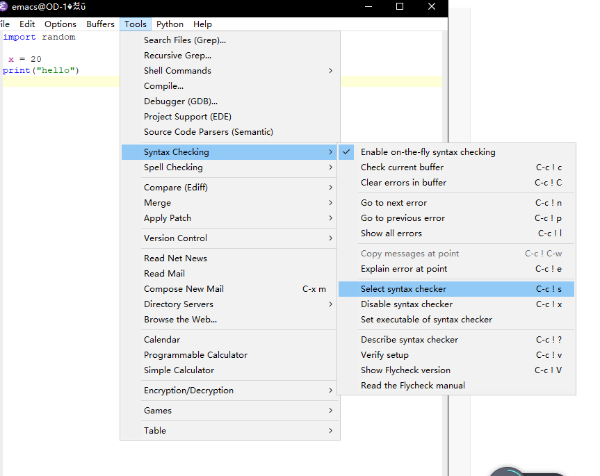]]
打开一个py文件时，我们点一下tools –> syntax checking –> select syntax checker 可以看到针对对应语言的语法检查
如test.c代码
include <stdio.h> #include <stlib.h" int main() { printf("Hello\n") }
Format (style, highlight, indent )
Navigation 导航
- Navigation (tag, definition, symbols)
dumb-jump跳转到定义插件
- dumb-jump https://github.com/jacktasia/dumb-jump
是一个 Emacs“跳转到定义”包，支持 50 多种编程语言
(use-package dumb-jump :bind (("M-g o" . dumb-jump-go-other-window) ("M-g j" . dumb-jump-go) ("M-g x" . dumb-jump-go-prefer-external) ("M-g z" . dumb-jump-go-prefer-external-other-window)) :config ;; (setq dumb-jump-selector 'ivy) ;; (setq dumb-jump-selector 'helm) :init (dumb-jump-mode) :ensure )
系统上安装ag搜索工具性能最好。
Code Templates & Snippets 代码模板和片段
- Code Templates & Snippets : yasnippet
yasnippet代码片段模板
`yasnippet` 是一个代码块补全的插件（GitHub 地址）。只要打key就会写入代码片段
- 可以下载别人写好的代码片段
- 可以自定义代码片段
- 不同主模式带不同的代码片段
使用下面的配置文件将其在所有 的编程语言的模式中激活。
(defvar my/packages '( ;; 代码块补全 yasnippet ) "Default packages") ;; yasnippet 代码块补全 (yas-reload-all) (add-hook 'prog-mode-hook #'yas-minor-mode)
自定义代码块的方法可以在上面提供的链接中找到。
use-package
(use-package yasnippet :ensure t :diminish yas-minor-mode :hook (after-init . yas-global-mode)) (use-package yasnippet-snippets :ensure t :after yasnippet)
复杂点的
;; Settings for yasnippet (use-package yasnippet :ensure t :diminish yas-minor-mode :hook (after-init . yas-global-mode) :config (add-to-list 'yas-snippet-dirs (concat (file-name-directory user-emacs-directory) "snippets")) (use-package yasnippet-snippets ;; 下载一些资源套件 :after yasnippet :ensure t) (use-package auto-yasnippet :ensure t :bind (("C-o" . aya-open-line) ("H-w" . aya-create) ("H-y" . aya-expand))))
其它
(use-package yasnippet :ensure t :init (yas-reload-all) :hook (prog-mode . yas-minor-mode) :config ;; add company-yasnippet to company-backends (defun company-mode/backend-with-yas (backend) (if (and (listp backend) (member 'company-yasnippet backend)) backend (append (if (consp backend) backend (list backend)) '(:with company-yasnippet)))) (setq company-backends (mapcar #'company-mode/backend-with-yas company-backends)) ;; unbind <TAB> completion (define-key yas-minor-mode-map [(tab)] nil) (define-key yas-minor-mode-map (kbd "TAB") nil) (define-key yas-minor-mode-map (kbd "<tab>") nil) :bind (:map yas-minor-mode-map ("S-<tab>" . yas-expand))) (use-package yasnippet-snippets :ensure t :after yasnippet)
yasnippet-snippets 是一个模板集合，里面包含了常见的模板。也可以自定义模板，参考 yasnippet 的主页即可
对其它语言的支持看到这里
简单的使用方法就是使用 `~` 来定义模板，然后调用 `aya-create` 再使用 `aya-expand` 来使用模板。
下面是使用代码片段的方法：
- 使用自带代码片段
#执行 M-x yas-describe-tables #输出 YASnippet tables: Snippet table `fundamental-mode' ---------------------------------------------------------------------------------------------------- group state name key binding ---------------------------------------------------------------------------------------------------- (top level) (a) current-date dd (a) current-date-and-time dt (a) Mode line -*- #其中key代表代码片段的快捷输入，再按tab就可以补全片段。 #使用C-n C-p上下阅读片段说明
片段说明
# -*- mode: snippet -*- # name: current-date 指Snippet的名称 # key: dd 按哪个key来启动snippet # contributor : Kristof Molnar-Tatai <kristof.mlnr@gmail.com> 作者信息 # -- `(format-time-string "%Y-%m-%d")`
- 自定义代码片段
#执行 M-x yas-new-snippet == C-c C-n
片段内容
# -*- mode: snippet -*- # name: showmessage # key: sh # -- (message "hello from my yasnippet")$0
使用`C-c C-c`完成编程，选择片段生效的模式，保存指定位置`~/.emacs.d/snippets/emacs-lisp-mode/showmessage`即可。
代码调试
与代码分析类似，微软设计 VSCode 时，对调试器也进行了前后端分离的设计，称为 Debug Adapter Protocol。Emacs 中可以使用 dap-mode 作为客户端。
dap-mode 对各个语言的配置在其官方手册上有说明。下文对语言的介绍中会一一进行简单说明。
(use-package dap-mode :ensure t :after hydra lsp-mode :commands dap-debug :custom (dap-auto-configure-mode t) :config (dap-ui-mode 1) :hydra (hydra-dap-mode (:color pink :hint nil :foreign-keys run) " ^Stepping^ ^Switch^ ^Breakpoints^ ^Debug^ ^Eval ^^^^^^^^---------------------------------------------------------------------------------------------------------------- _n_: Next _ss_: Session _bb_: Toggle _dd_: Debug _ee_: Eval _i_: Step in _st_: Thread _bd_: Delete _dr_: Debug recent _er_: Eval region _o_: Step out _sf_: Stack frame _ba_: Add _dl_: Debug last _es_: Eval thing at point _c_: Continue _su_: Up stack frame _bc_: Set condition _de_: Edit debug template _ea_: Add expression. _r_: Restart frame _sd_: Down stack frame _bh_: Set hit count _ds_: Debug restart _Q_: Disconnect _sl_: List locals _bl_: Set log message _sb_: List breakpoints _sS_: List sessions " ("n" dap-next) ("i" dap-step-in) ("o" dap-step-out) ("c" dap-continue) ("r" dap-restart-frame) ("ss" dap-switch-session) ("st" dap-switch-thread) ("sf" dap-switch-stack-frame) ("su" dap-up-stack-frame) ("sd" dap-down-stack-frame) ("sl" dap-ui-locals) ("sb" dap-ui-breakpoints) ("sS" dap-ui-sessions) ("bb" dap-breakpoint-toggle) ("ba" dap-breakpoint-add) ("bd" dap-breakpoint-delete) ("bc" dap-breakpoint-condition) ("bh" dap-breakpoint-hit-condition) ("bl" dap-breakpoint-log-message) ("dd" dap-debug) ("dr" dap-debug-recent) ("ds" dap-debug-restart) ("dl" dap-debug-last) ("de" dap-debug-edit-template) ("ee" dap-eval) ("ea" dap-ui-expressions-add) ("er" dap-eval-region) ("es" dap-eval-thing-at-point) ("q" nil "quit" :color blue) ("Q" dap-disconnect :color red)))
其操作和我们平常使用 IDE 的操作是几乎一样的。我们可以通过 dap-breakpoint-add 命令或鼠标点击一行的左侧边缘来增加一个断点。当然也可以使用我们上面定义的 hydra，先调用 M-x dap-hydra 展开 hydra，然后输入相应命令。
使用 dap-debug-edit-template 命令可以编辑调试所使用的模板，也就是调试命令的设置，如果没有自定义参数通常用默认的就好，无需进行此步操作。这就类似于 VSCode 的 launch.json 文件的作用。 把光标移入它生成的模板的括号内，按下 C-M-x 来让其生效，随后调用 dap-debug 开始调试。
对于不同语言，需要安装好不同的后端程序，主要可以参考其官方手册。
Project 项目管理
目前为止，Emacs 只是在对文件进行操作，而没有项目的概念。我们实际的开发一定是以项目为单位的，projectile 就是为 Emacs 提供了项目管理的插件。
- Project : progectile, Speedbar
插件-projectile
是一个非常好的包，它使在项目中和项目之间导航变得更加容易。我也安装了counsel-projectile
- projectile https://github.com/bbatsov/projectile
- counsel-projectile https://github.com/ericdanan/counsel-projectile
;; projectile项目间切换 (use-package projectile :ensure t :bind (:map projectile-mode-map ("s-p" . 'projectile-command-map) ("C-c p" . 'projectile-command-map) ) :config ;;(setq projectile-completion-system 'ivy) (setq projectile-mode-line " Proj") (setq projectile-track-known-projects-automatically nil) (projectile-mode +1) (when (executable-find "rg") (setq-default projectile-generic-command "rg --files --hidden")) (use-package counsel-projectile :ensure t :init (counsel-projectile-mode))) ;; (use-package ibuffer-projectile ;; :ensure t ;; :config ;; (add-hook 'ibuffer-hook ;; (lambda () ;; (ibuffer-projectile-set-filter-groups) ;; (unless (eq ibuffer-sorting-mode 'alphabetic) ;; (ibuffer-do-sort-by-alphabetic)))) ;;)
当同时配好 projectile 和 lsp 后，我们如果打开一个项目内的文件，lsp 会提示你让你确认一下 projectile 推测出的项目的根目录，它会以此为范围做代码分析。
projectile 之所以能猜出来项目的根目录，逻辑是它从你打开的文件所在的目录一级一级向上寻找含有一些项目标志性的文件或目录，例如 `.git`、`Makefile`、`CMakeLists.txt`、 `setup.py`、`Cargo.toml` 等所在的目录认定为项目根目录。当然，也会有一些情况会推测错误，尤其对于大型项目包含子项目的，所以它在询问你时，可以根据它的指示，手动指定项目的根目录。对于一些临时打开的文件，也可以直接跳过这个步骤。 另外，也可以直接在项目的根目录下创建一个名为 `.projectile` 的空文件来明确提示 projectile 根目录在这里。 更多详细说明可以参考文档。
项目的标识是：
- 自发现
(setq projectile-project-search-path '("~/.emacs.d/samples/python/" "~/.emacs.d/samples/web/"))
添加了 `.projectile`空文件 的目录做项目。内容会写在`~/.emacs.d/projectile-bookmarks.eld`中
- 在版本管理系统下的项目，自动识别
- Git
- Mercurial
- Bazaar
- Subversion
- CVS
- Fossil
- Darcs
projectile 提供了在本项目下的常用操作，比如：
- 帮助： `C-c p ?`
- 切换项目： `C-c p p`
- 本项目中打开文件： `C-c p f`
- 本项目中切换 buffer： `C-c p b`
- 本项目中搜索： `C-c p s g` 或者 `C-c p s s`
- C-c p t 使用pt查找内容
- C-c p h 查找文件名
- C-c p a 主要用来切换html和css
局部变量
我们目前的配置都是全局的，Emacs 自然也可以对项目进行特别的配置。Emacs 有一个配置文件，就类似于 VSCode 的 `.vscode/settings.json` ，名为 `.dir-locals.el`。这个文件是一种特殊的语法，用于保存一些变量在这个项目下的取值。
举个例子，如果我们的项目需要使用 clang 编译器的 c++11 标准做语法检查，应当如下操作：
输入命令 `M-x add-dir-local-variable` 在操作结束后，会自动创建 `.dir-locals.el` 文件。首先它会让我们选择一下我们的这个变量是哪个 major mode 的变量，我们选择 `c++-mode`。随后，输入我们想要设置的变量 flycheck-clang-language-standard，输入回车确认。最后输入我们要设置的值 "c++11"（注意双引号表示字符串）。此时命令完成我们会跳转到 `.dir-locals.el` 文件的 buffer，内容如下：
;;; Directory Local Variables ;;; For more information see (info "(emacs) Directory Variables") ((c++-mode . ((flycheck-clang-language-standard . "c++11"))))
按下 `C-x C-s` 保存这个文件。下次打开这个项目的文件时，会提示你是否要应用这些变量的自定义值（为了安全性），按 y 即可生效。
如果使用的是 gcc 编译器，将变量名中的 clang 替换成 gcc 就好。
环境变量
特别的，尤其是在 macOS 上，有时候我们可能会遇到一些在终端中的可执行文件放到 Emacs 图形界面下不能使用的问题。原因就在于图形界面的环境变量没有被正确设置。例如在图形界面使用 lsp 插件写 Python 程序并使用了 conda 虚拟环境，可能会提示你它找不到任何 language server，原因就在于 lsp 直接调用了 pyright 命令但是它没有在基本环境变量里。
我们可以通过安装 Steve Purcell 写的插件 exec-path-from-shell 来完成：
;; MacOS specific fix the PATH environment variable issue (use-package exec-path-from-shell :ensure t :defer nil :when (or (memq window-system '(mac ns x pgtk)) (unless (memq system-type '(windows-nt dos)) (daemonp))) :init (exec-path-from-shell-initialize))
注意，完成这一任务会调用 Shell 进程，速度很慢，而如果遇到日常大家 `export PATH=$PATH:path/to/bin` 这种字符串拼接写法时会更慢，大大拖慢 Emacs 启动速度。根据 Purcell 的建议，这里的配置就只针对 macOS 上使用了图形界面的情况才启动这个插件的功能，并且读者应当尽量做到：
- 通过把 PATH 变量的设定放置在 `~/.profile`、`~/.bash_profile`、`~/.zshenv` 而不是通通放入 `~/.bashrc` 、`~/.zshrc` 。
- 不要使用 PATH 变量字符串拼接，而直接赋值。
版本管理
Magi和git相关插件
magit 是 Emacs 内部的 git 管理工具，提供了对 git 方便的调用和显示。magit 几乎无需配置。
(use-package magit :ensure t)
如果习惯了命令行操作 git，常用的操作用 build-in 的功能足够，就不需要安装这个插件了。
`.gitignore`过滤文件
elpa
auto-save-list
*~
\#*
elpy
emms
https://github.com/emacsorphanage/git-gutter
;; some ediff settings (setq ediff-diff-options "") (setq ediff-custom-diff-options "-u") (setq ediff-window-setup-function 'ediff-setup-windows-plain) (setq ediff-split-window-function 'split-window-vertically) (use-package magit :ensure t :init (progn (setq magit-section-initial-visibility-alist '((stashes . hide) (untracked . hide) (unpushed . hide))) (bind-key "C-x g" 'magit-status) )) (setq magit-status-margin '(t "%Y-%m-%d %H:%M " magit-log-margin-width t 18)) (use-package git-timemachine :ensure t ) (use-package git-gutter-fringe :ensure t :config (global-git-gutter-mode)) (use-package smerge-mode :after hydra :config (defhydra unpackaged/smerge-hydra (:color pink :hint nil :post (smerge-auto-leave)) " ^Move^ ^Keep^ ^Diff^ ^Other^ ^^-----------^^-------------------^^---------------------^^------- _n_ext _b_ase _<_: upper/base _C_ombine _p_rev _u_pper _=_: upper/lower _r_esolve ^^ _l_ower _>_: base/lower _k_ill current ^^ _a_ll _R_efine ^^ _RET_: current _E_diff " ("n" smerge-next) ("p" smerge-prev) ("b" smerge-keep-base) ("u" smerge-keep-upper) ("l" smerge-keep-lower) ("a" smerge-keep-all) ("RET" smerge-keep-current) ("\C-m" smerge-keep-current) ("<" smerge-diff-base-upper) ("=" smerge-diff-upper-lower) (">" smerge-diff-base-lower) ("R" smerge-refine) ("E" smerge-ediff) ("C" smerge-combine-with-next) ("r" smerge-resolve) ("k" smerge-kill-current) ("ZZ" (lambda () (interactive) (save-buffer) (bury-buffer)) "Save and bury buffer" :color blue) ("q" nil "cancel" :color blue)) :hook (magit-diff-visit-file . (lambda () (when smerge-mode (unpackaged/smerge-hydra/body))))) (use-package forge :ensure t)
快捷键使用
- git状态：`C-x g magit-status` 相当于 git status 。 使用?查看快捷键
magit 的总体使用逻辑是一步一步进行输入的 。最基本的用法是使用 `C-x M-g` 调用 `magit-dispatch`，会列出来所有可以调用的子命令，选中后再输入一些可选的选项和接下来的命令，就和正常输入 git 的命令一样。
使用 magit 做一些较为复杂的操作是非常方便的，举个例子，我们希望对比当前的这个源文件和上一个 commit 的区别，只需如下操作，其中每一步都有非常多的提示：
- C-x M-g 调用 magit-dispatch 。
- d 选择 Diff 。
- `– <tab> <enter> <enter>` 自动填充当前文件名，表示我们只关注这个文件的异同。
- r 选择 Diff range，因为我们想对比另一个 commit。
- 输入 `HEAD^` （表示同一分支的上一个 commit）/ 想要对比的 commit ID。可以按 `<tab>` 进行提示。
由于 git 本身就是个非常复杂的工具，本文不做细致讨论，更多用法可以参考 magit 的主页。
工作区管理
对于涉及多个项目的更复杂的任务，我们需要一个工作区（workspace）来进行管理和切换。treemacs 为我们提供了这样的功能。如果读者不需要工作区管理这样复杂的功能，而只是想要一个树形文件结构显示，那么可以考虑使用 neotree。
(use-package treemacs :ensure t :defer t :config (treemacs-tag-follow-mode) :bind (:map global-map ("M-0" . treemacs-select-window) ("C-x t 1" . treemacs-delete-other-windows) ("C-x t t" . treemacs) ("C-x t B" . treemacs-bookmark) ;; ("C-x t C-t" . treemacs-find-file) ("C-x t M-t" . treemacs-find-tag)) (:map treemacs-mode-map ("/" . treemacs-advanced-helpful-hydra))) (use-package treemacs-projectile :ensure t :after (treemacs projectile)) (use-package lsp-treemacs :ensure t :after (treemacs lsp))
配置好后，我们可以使用 `C-x t t` 调出 treemacs，用 `M-0` 在我们的代码 Buffer 和 treemacs 边栏之间切换。当我们光标进入 treemacs 边栏时，可以按问号 `?` 来调出帮助。
我们可以使用 `treemacs-create-workspace` 来创建一个新的工作区。它会在你当前光标所在处打出一个小窗提示你输入 “Workspace name”，起个合适的名字。创建好后，我们在 treemacs 边栏中输入 `C-c C-p a` 调用 `treemacs-add-project-to-workspace` 来添加一个项目路径，用 `C-c C-p d` 去除工作区选中的项目。这些都可以在 `?` 显示的帮助中找到。想要切换工作区时，使用 `treemacs-switch-workspace` 命令。
由于我们安装了 `treemacs-projectile`，我们也可以使用 treemacs-projectile 命令将我们 projectile 当中保存过的项目直接导入到 treemacs 中。
此外，我们还可以调用 treemacs-edit-workspaces 来通过配置文件来修改我们的工作区设置，修改完成后用 treemacs-finish-edit 命令或 `C-c C-c` 结束编辑。它会自动检查语法。（ps：所使用的语法是 Emacs org-mode，一个 Emacs 内部的笔记系统，可以近似理解为高级 markdown）。
treemacs 不仅能够显示文件，还会显示其中的符号，包括函数定义、结构体定义等等。配置中的 `(treemacs-tag-follow-mode)` 就是希望 treemacs 始终跟随着我们代码光标所在位置进行移动。
最后，`?` 显示出的帮助是 treemacs-common-helpful-hydra，我们可以按 `/` 或调用 treemacs-advanced-helpful-hydra 来显示出更多帮助，包括了对文件的操作和对工作区的操作。
treemacs 正常情况不会根据我们打开的 Buffer 不同而切换项目或工作区。其原因在于有时候我们只是打开一些额外的文件，并不希望工作区也进行转变。而大多数情况，我们也确实并不需要频繁切换工作区，所以我们主动去调用 treemacs-switch-workspace 就好。如果觉得这样过于繁琐，也可以开启一个 treemacs-project-follow-mode，它会根据我们的文件跳转到相应的项目中。 或者直接使用本节开头提到的 neotree 插件。
treemacs 的边栏是一个固定在 Buffer 内的 frame， 所以操作起来有些特殊。
treemacs插件
开启`treemacs`
(use-package treemacs :ensure t :defer t :init (with-eval-after-load 'winum (define-key winum-keymap (kbd "M-0") #'treemacs-select-window)) :config (progn (setq treemacs-collapse-dirs (if treemacs-python-executable 3 0) treemacs-deferred-git-apply-delay 0.5 treemacs-directory-name-transformer #'identity treemacs-display-in-side-window t treemacs-eldoc-display t treemacs-file-event-delay 5000 treemacs-file-extension-regex treemacs-last-period-regex-value treemacs-file-follow-delay 0.2 treemacs-file-name-transformer #'identity treemacs-follow-after-init t treemacs-expand-after-init t treemacs-git-command-pipe "" treemacs-goto-tag-strategy 'refetch-index treemacs-indentation 2 treemacs-indentation-string " " treemacs-is-never-other-window nil treemacs-max-git-entries 5000 treemacs-missing-project-action 'ask treemacs-move-forward-on-expand nil treemacs-no-png-images nil treemacs-no-delete-other-windows t treemacs-project-follow-cleanup nil treemacs-persist-file (expand-file-name ".cache/treemacs-persist" user-emacs-directory) treemacs-position 'left treemacs-read-string-input 'from-child-frame treemacs-recenter-distance 0.1 treemacs-recenter-after-file-follow nil treemacs-recenter-after-tag-follow nil treemacs-recenter-after-project-jump 'always treemacs-recenter-after-project-expand 'on-distance treemacs-litter-directories '("/node_modules" "/.venv" "/.cask") treemacs-show-cursor nil treemacs-show-hidden-files t treemacs-silent-filewatch nil treemacs-silent-refresh nil treemacs-sorting 'alphabetic-asc treemacs-space-between-root-nodes t treemacs-tag-follow-cleanup t treemacs-tag-follow-delay 1.5 treemacs-user-mode-line-format nil treemacs-user-header-line-format nil treemacs-width 35 treemacs-width-is-initially-locked t treemacs-workspace-switch-cleanup nil) ;; The default width and height of the icons is 22 pixels. If you are ;; using a Hi-DPI display, uncomment this to double the icon size. ;;(treemacs-resize-icons 44) (treemacs-follow-mode t) (treemacs-filewatch-mode t) (treemacs-fringe-indicator-mode 'always) (pcase (cons (not (null (executable-find "git"))) (not (null treemacs-python-executable))) (`(t . t) (treemacs-git-mode 'deferred)) (`(t . _) (treemacs-git-mode 'simple)))) :bind (:map global-map ("M-0" . treemacs-select-window) ("C-x t 1" . treemacs-delete-other-windows) ("C-x t t" . treemacs) ("C-x t B" . treemacs-bookmark) ("C-x t C-t" . treemacs-find-file) ("C-x t M-t" . treemacs-find-tag))) ;;在目录树中可以使用vim的快捷键上下移动 (use-package treemacs-evil :after (treemacs evil) :ensure t) (use-package treemacs-projectile :after (treemacs projectile) :ensure t) (use-package treemacs-icons-dired :after (treemacs dired) :ensure t :config (treemacs-icons-dired-mode)) (use-package treemacs-magit :after (treemacs magit) :ensure t) (use-package treemacs-persp ;;treemacs-perspective if you use perspective.el vs. persp-mode :after (treemacs persp-mode) ;;or perspective vs. persp-mode :ensure t :config (treemacs-set-scope-type 'Perspectives))
使用`M-0`快速打开目录树，使用`?`可以看到对应快捷键。如`o-h`在新窗口中打开文件。
lsp-treemacs
终端
Emacs 内想要使用 Shell 可以直接调用 `M-x shell` 即可打开你的默认 Shell。此外 Emacs 还特别打造了 eshell 作为 Emacs 的专用 Shell。
使用 Shell 主要注意操作上，我们不再使用方向键来回滚历史命令，而是通过 `M-p` 和 `M-n` 来翻看命令。
远程访问
Emacs 本身有一个 tramp 功能可以实现远程 ssh 访问。无需任何配置，使用 `C-x C-f` 打开文件时，删除掉所有路径，只留下一个斜杠 `/`，然后输入成 `/ssh:user@address:`，后面接远程服务器上的目录，就可以访问到相应的远程服务器的相应文件或目录。如果在 `~/.ssh/config` 中有配置 Host 名称，也可以直接输入名称 `/ssh:hostname:`。
如果需要代理才能访问，请在 "MELPA" 中提到的代理配置：
(setq url-proxy-services '(("no_proxy" . "^\\(192\\.168\\..*\\)") ("http" . "<代理 IP>:<代理端口号>") ("https" . "<代理 IP>:<代理端口号>")))
但是，虽然可以远程编辑，却并不能继续使用以上大部分功能，因为这些插件都是安装在本地的，而源代码和项目都在远程服务器上。VSCode 对此的解决办法是可以在远程服务器也安装一遍这些插件。对 Emacs 来说，其实只要把 `~/.emacs.d` 目录复制到远程服务器上，然后在上面安装一个 Emacs，就可以直接在终端中使用远程的 Emacs 了，毕竟我们用 Emacs 本来就不需要鼠标。这样可能比远程访问来得更加简单好用。
Doc 文档
编程语言
推荐使用LSP完成各个编程语言的配置
代码分析
编程语言环境配置之LSP
代码分析 这一功能是指通过语法分析来进行诸如寻找函数和变量的定义、引用等等与编程语言本身相关的功能。传统方法中，每种语言都有一个专门为其设计的插件，例如 C/C++ 开发会用一些传统的 CEDET，gtag 等插件，Python 则用 elpy。但这类插件由于和编辑器直接耦合，完全由插件开发者控制，更新维护不一定及时，bug 也会较多。因此，推荐使用微软为 VSCode 设计的 Language Server Protocol (LSP) 来完成这一任务。随着 LSP 发展壮大，它已成为一个开放的、统一的标准了，可以供 Emacs 使用。
LSP 将代码分析解耦合为前端（即编辑器提供的功能，语言无关）和后端（语法分析，语言相关）两部分，二者通过一个规定好的协议来通信，也就是 LSP 协议，这样一来，编辑器开发者只需要做好前端部分，也就是 LSP client，后端的语言相关部分由语言开发者完成，称为 LSP server，分工明确，效率更高，体验也就会好很多。
为 Emacs 提供 LSP 的插件有 lsp 和 eglot，相对来说使用 lsp 的人更多相对更稳定，本节将介绍 lsp 插件，及其相关的组合插件。lsp 应当与 projectile 项目管理插件一起使用。此外，这里的 lsp 只是前端部分， 后端需要单独安装，有的时候可以直接通过命令 `lsp-install-server` 让 lsp 为你自动安装，或者也可以手动安装你偏爱的 LSP server，下文中会介绍几个常用语言的典型配置。
lsp-mode
官方地址 https://microsoft.github.io/language-server-protocol/
lsp-mode https://github.com/emacs-lsp/lsp-mode
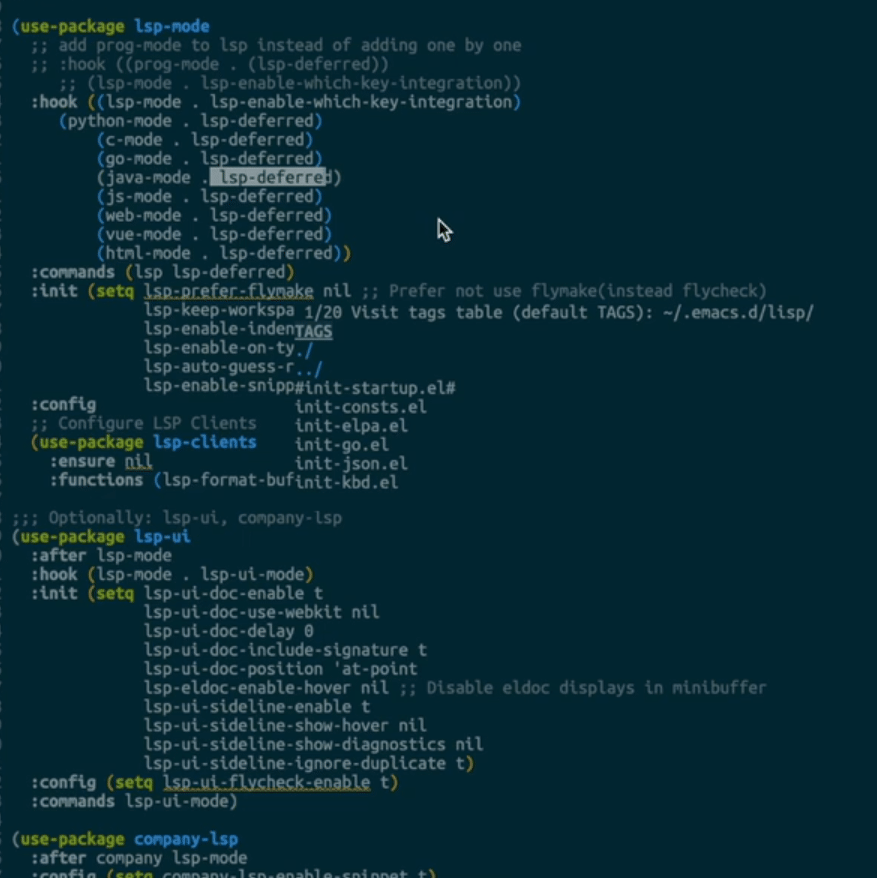]]
首先根据其官网，我们就可以有一个最基础的配置：
;; Minimized lsp-mode setup (use-package lsp-mode :commands (lsp lsp-deferred) ;; lsp-deferred 进入某个模式时启动 :init (defun lsp-save-actions () "LSP actions before save." (add-hook 'before-save-hook #'lsp-organize-imports t t) (add-hook 'before-save-hook #'lsp-format-buffer t t)) :hook ((lsp-mode . #'lsp-enable-which-key-integration) (lsp-mode . #'lsp-save-actions) ((c-mode c++-mode go-mode java-mode js-mode python-mode rust-mode web-mode) . lsp-deferred)) :config (setq lsp-auto-guess-root t lsp-headerline-breadcrumb-enable nil lsp-keymap-prefix "C-c l" lsp-file-watch-threshold 500 lsp-log-io nil) (define-key lsp-mode-map (kbd "C-c l") lsp-command-map) (setq lsp-completion-provider :none) ;; 阻止 lsp 重新设置 company-backend 而覆盖我们 yasnippet 的设置 ) ;; optional if you want which-key integration (use-package which-key :ensure t :config (which-key-mode))
另外官网相应的 lsp 命令笔者使用的是 lsp-deferred 替代，主要区别是 `lsp-deferred` 会推迟 lsp 服务的启动直到文件完全被显示出来，使用这个的主要目的是为了避免在文件数量过多的大项目造成 LSP 服务端过载。
`lsp-headerline-breadcrumb-enable` 让 lsp 为我们不显示 breadcrumb。当我们完全配置好后，打开一个项目中的文件时，会在文件的最上面显示该文件的路径，这个被称为 breadcrumb。
随后，我们如果希望有更现代的图形化的支持，例如光标停留在一个变量或者函数时，显示相关的定义缩略信息、文档注释等，那么我们可以再安装一个 lsp-ui 插件，并做如下配置：
;; Optional features, disabled default (when nil (use-package lsp-ui :ensure t :after lsp-mode :init (setq lsp-ui-doc-include-signature t lsp-ui-doc-position 'top lsp-ui-sideline-ignore-duplicate t) (add-hook 'lsp-mode-hook 'lsp-ui-mode) (add-hook 'lsp-ui-mode-hook 'lsp-modeline-code-actions-mode) :config (define-key lsp-ui-mode-map [remap xref-find-definitions] #'lsp-ui-peek-find-definitions) (define-key lsp-ui-mode-map [remap xref-find-references] #'lsp-ui-peek-find-references))) ;; debug with dap-mode (when nil (use-package dap-mode :ensure t :init (add-hook 'lsp-mode-hook 'dap-mode) (add-hook 'dap-mode-hook 'dap-ui-mode) (add-hook 'dap-mode-hook 'dap-tooltip-mode) ;; (add-hook 'python-mode-hook (lambda() (require 'dap-python))) ;; (add-hook 'go-mode-hook (lambda() (require 'dap-go))) ;; (add-hook 'java-mode-hook (lambda() (require 'dap-java))) ))
上面主要目的是替换本来的部分快捷键映射，由 lsp-ui 来进行接管，它同时为我们提供了一些跳转功能。这样我们可以使用 `M-.` 来寻找符号的定义，用 `M-?` 来寻找符号的引用。`lsp-ui-doc-position 'at-point` 配置了 lsp-ui-doc （也就是刚刚提到的符号信息弹窗）在窗口上方显示，虽然很多现代编辑器都是显示在光标所在位置，但那会遮挡代码，有时十分惹人厌烦，所以一般会设置成显示在上方 top 或下方 bottom。如果确实希望显示在光标所在位置，可以改为 at-point。
- 代码跳转： `C-c l g g lsp-find-definition`
- 导入函数： `C-c l r o lsp-organize-imports`
其它：
;; optionally 配置前d样式 (use-package lsp-ui :commands lsp-ui-mode) ;; if you are helm user (use-package helm-lsp :commands helm-lsp-workspace-symbol) ;; if you are ivy user (use-package lsp-ivy :commands lsp-ivy-workspace-symbol) (use-package lsp-treemacs :commands lsp-treemacs-errors-list) ;; optionally if you want to use debugger (use-package dap-mode) ;; (use-package dap-LANGUAGE) to load the dap adapter for your language
eglot
自29版本后内置包。
(use-package eglot :ensure nil :hook ((c-mode c++-mode go-mode java-mode js-mode python-mode rust-mode web-mode) . eglot-ensure) :bind (("C-c e f" . #'eglot-format) ("C-c e a" . #'eglot-code-actions) ("C-c e i" . #'eglot-code-action-organize-imports) ("C-c e q" . #'eglot-code-action-quickfix)) :config ;; (setq eglot-ignored-server-capabilities '(:documentHighlightProvider)) (add-to-list 'eglot-server-programs '(web-mode "vls")) (defun eglot-actions-before-save() (add-hook 'before-save-hook #'eglot-format-buffer)) (add-hook 'eglot--managed-mode-hook #'eglot-actions-before-save))
LSP-python语言环境
- 运行
Python 的运行主要考虑与它的 REPL 的配合以及虚拟环境的切换。前者是 Emacs 自带的基础功能，后者可以安装插件 pyvenv 进行管理。笔者平日使用 miniconda 做 Python 的环境管理（F.Y.I., miniconda 是 anaconda 的最精简版），如果你使用 anaconda，只需要改个名字；如果你使用 Python 本身的 virtualenv，pyvenv 插件更是直接支持。
(use-package python :defer t :mode ("\\.py\\'" . python-mode) :interpreter ("python3" . python-mode) :config ;; for debug (require 'dap-python)) (use-package pyvenv :ensure t :config (setenv "WORKON_HOME" "~/miniconda3/envs") (setq python-shell-interpreter "python3") (pyvenv-mode t))
需要把这里的 ~/miniconda3 路径换成自己的路径，一般默认或者在用户目录下，形如 `~/anaconda3`；或者在根目录下，形如 `/anaconda3`。使用 virtualenv 的话则不需要这行配置。
有了 pyvenv，我们打开 Python 项目，如果想要切换环境，就输入命令 `M-x pyvenv-workon`，它会列出所有可以切换的环境，配置中的设置就是为了能让 pyvenv 找到我们的 miniconda 环境。
想要使用 REPL，首先打开一个 Python 文件，然后使用快捷键 `C-c C-p` 调用命令 run-python，启动 Python 解释器，Emacs 会弹出一个名为 `*Python*` 的 buffer，就是 Python 的 REPL。随后我们光标放在 Python 文件的 buffer 中，可以选中一部分代码，或者不选表示全部代码，按 `C-c C-c` 调用命令 python-shell-send-buffer，把选中的代码发送到 REPL 中，此时 `*Python* buffer` 中就会相应地执行了这些代码。
此外，对于 IPython Notebook 文件（.ipynb），有一个 emacs-ipython-notebook 插件可以提供支持。
- LSP
Python 的 language server 比较多，包括 python-language-server（pyls）、Jedi、Microsoft Python Language Server 和 Pyright。pyls 普遍评价是比较慢，所以不推荐使用。后三个可以根据自己喜好选择。 这里选择了评价较好的 Pyright。可以通过 `pip3 install pyright` 来手动安装。Emacs 中的相应配置如下：
(use-package lsp-pyright :ensure t :config :hook (python-mode . (lambda () (require 'lsp-pyright) (lsp-deferred))))
- 创建一个目录，写你的py代码文件
- `M-x lsp-install-server`安装pyright
- `M-x lsp` 初始化，将项目作为根目录方式导入
其它参考：https://www.ichenxiaoyu.com/emacs_python3/
注意，在图形界面中，尤其是 macOS 上，可能会出现明明安装了 pyright 但是 lsp 提示无法找到该命令的情况，遇到这个问题，请记得安装上面“环境变量” 小节的插件 `exec-path-from-shell` 。
- 调试
使用 dap-mode 调试前需先手动通过 pip 安装 python3 -m pip install ptvsd。
方法2python-palantir
进入py3的虚拟环境，再执行emacs
#+end_src pip3 install python-language-server #+end_src
`C-c C-p`打开交互式python
`C-c C-c` 缓存内容执行
旧方法python jedi
这里我的环境默为python3
python-mode
`C-c C-p`打开交互式python
`C-c C-c` 缓存内容执行
安装flycheck插件
(use-package flycheck :ensure t :init (global-flycheck-mode t))
安装外部的语法检查器pylint
#python3 pip install pylint
安装python补全插件Jedi
我使用的另一个工具是Jedi。它为 Python 提供了更广泛的补全。
(use-package jedi :ensure t :init (add-hook 'python-mode-hook 'jedi:setup) (add-hook 'python-mode-hook 'jedi:ac-setup))
要让 jedi 工作，您需要安装 jedi 服务器，该服务器通过运行 `M-x jedi:install-server` 在 emacs 中完成。但是，要使其正常工作，您需要安装 Python Virtualenv。我这样做了:
sudo pip install virtualenv
之后的改动
(setq py-python-command "python3") (setq python-shell-interpreter "python3") (use-package jedi :ensure t :init (add-hook 'python-mode-hook 'jedi:setup) (add-hook 'python-mode-hook 'jedi:ac-setup)) (use-package virtualenvwrapper :ensure t :config (venv-initialize-interactive-shells) (venv-initialize-eshell))
示例py文件
#+end_srcpython import random x = 2 print("hello") def f(x): return random.randrange(1,x)
for i in range(2, 10): print(f(i)) #+end_src
旧方法python elpy
- elpy python语法检查https://github.com/jorgenschaefer/elpy
(use-package elpy :ensure t :config (elpy-enable))
`C-c C-d`文档
我不认为这是一个我会经常使用的包，因为我使用其他工具来做类似的事情
(setq py-python-command "python3") (setq python-shell-interpreter "python3") (use-package elpy :ensure t :custom (elpy-rpc-backend "jedi") :config (elpy-enable) ) (use-package virtualenvwrapper :ensure t :config (venv-initialize-interactive-shells) (venv-initialize-eshell))
LSP-go语言环境
参考：https://github.com/golang/tools/blob/master/gopls/doc/emacs.md
环境变量
GO111MODULE=on go install golang.org/x/tools/gopls@latest # .bash_profile or .zshrc export GOPATH="$(go env GOPATH)" export PATH="${PATH}:${GOPATH}/bin"
安装 go 相关插件 参考：seagle0128/.emacs.d init-go.el
(use-package go-mode :ensure t)
;; Golang (use-package go-mode :functions go-update-tools :commands godoc-gogetdoc :bind (:map go-mode-map ("C-c R" . go-remove-unused-imports) ("<f1>" . godoc-at-point)) :init (setq godoc-at-point-function #'godoc-gogetdoc) :config ;; Env vars (with-eval-after-load 'exec-path-from-shell (exec-path-from-shell-copy-envs '("GOPATH" "GO111MODULE" "GOPROXY"))) ;; Install or update tools (defvar go--tools '("golang.org/x/tools/gopls" "golang.org/x/tools/cmd/goimports" "honnef.co/go/tools/cmd/staticcheck" "github.com/go-delve/delve/cmd/dlv" "github.com/zmb3/gogetdoc" "github.com/josharian/impl" "github.com/cweill/gotests/..." "github.com/fatih/gomodifytags" "github.com/davidrjenni/reftools/cmd/fillstruct") "All necessary go tools.") (defun go-update-tools () "Install or update go tools." (interactive) (unless (executable-find "go") (user-error "Unable to find `go' in `exec-path'!")) (message "Installing go tools...") (dolist (pkg go--tools) (set-process-sentinel (start-process "go-tools" "*Go Tools*" "go" "install" "-v" "-x" (concat pkg "@latest")) (lambda (proc _) (let ((status (process-exit-status proc))) (if (= 0 status) (message "Installed %s" pkg) (message "Failed to install %s: %d" pkg status))))))) ;; Try to install go tools if `gopls' is not found (unless (executable-find "gopls") (go-update-tools)) ;; Misc (use-package go-dlv) (use-package go-fill-struct) (use-package go-impl) ;; Install: See https://github.com/golangci/golangci-lint#install (use-package flycheck-golangci-lint :if (executable-find "golangci-lint") :after flycheck :defines flycheck-disabled-checkers :hook (go-mode . (lambda () "Enable golangci-lint." (setq flycheck-disabled-checkers '(go-gofmt go-golint go-vet go-build go-test go-errcheck)) (flycheck-golangci-lint-setup)))) (use-package go-tag :bind (:map go-mode-map ("C-c t a" . go-tag-add) ("C-c t r" . go-tag-remove)) :init (setq go-tag-args (list "-transform" "camelcase"))) (use-package go-gen-test :bind (:map go-mode-map ("C-c t g" . go-gen-test-dwim))) (use-package gotest :bind (:map go-mode-map ("C-c t f" . go-test-current-file) ("C-c t t" . go-test-current-test) ("C-c t j" . go-test-current-project) ("C-c t b" . go-test-current-benchmark) ("C-c t c" . go-test-current-coverage) ("C-c t x" . go-run)))) ;; Local Golang playground for short snippets (use-package go-playground :diminish :commands (go-playground-mode)) (provide 'init-go)
报错：
LSP :: The following servers support current file but do not have automatic installation: gopls
原因：执行 `(executable-find "gopls")` 没有找到 gopls 命令，检查环境变量配置 解决：参考这里
export GOPATH="$(go env GOPATH)" export PATH="${PATH}:${GOPATH}/bin"
LSP-c++语言环境
- 编译
Emacs 本身就有一个 compile 函数可以用来编译 C/C++ 文件。打开一个 C/C++ 项目，使用默认配置调用 M-x compile，它会提示 make -k 来进行编译，也就是会默认我们是一个 make 项目。 如果我们没有 Makefile，例如我们在做算法题，只是想直接单独编译一个源文件，那么也可以直接手动输入命令：
$ g++ prog.cpp -g -o exec
事实上，这个默认值是一个 Emacs 字符串变量，如果我们希望在这个项目里使用一个固定的编译命令，就可以利用上文“局部变量”小节中提到的办法自定义局部变量 compile-command 为我们想要的编译命令。 如果我们在之前的基础上设置，会得到如下的 .dir-locals.el 文件：
;;; Directory Local Variables ;;; For more information see (info "(emacs) Directory Variables") ((c++-mode . ((compile-command . "g++ main.cpp -g -o exec") (flycheck-clang-language-standard . "c++11"))))
但是显然，这里我们写死了源代码文件 main.cpp，对于一些特定小项目是可以的， 但是对于刷算法题这种需求却并不好用，因为我们不同的题目是放在不同的源文件中，每个都单独可编译。为此，我们需要让 Emacs 自己为编译命令填写当前的源码文件（这里其实就是我们手动实现一个类似 VSCode 的 Code Runner 插件）。
首先我们可以在 init.el （或者是任何你自己定义的 elisp 文件中）定义两个函数：
(defun file-name-only () "Get the current buffer file name without directory." (file-name-nondirectory (buffer-name))) (defun file-name-only-noext () "Get the currennt buffer file name without directory and extension." (file-name-sans-extension (file-name-only)))
前者可以获得当前所在 buffer 的文件名，后者则得到了文件名除去后缀名的名字（用来做可执行文件名）。
随后我们设置 compile-command 为：
(concat "clang++ -g " (file-name-only) " -o " (file-name-only-noext))
其中 concat 是一个字符串拼接函数，可以理解为：
"clang++ -g " + (file-name-only) + " -o " + (file-name-only-noext)
最终得到这样的 .dir-locals.el：
((c++-mode . ((compile-command . (concat "clang++ -g " (file-name-only) " -o " (file-name-only-noext))) (flycheck-clang-language-standard . "c++11"))))
这样当我们调用 compile 命令时，可以利用字符串拼接自动补全当前所在的源文件并编译成相应的可执行文件。注意其中的 -g 选项是用于 debug 的选项 。读者也可以直接修改 .dir-locals.el 文件，只不过括号比较多需要注意不要出错。
- LSP
前文提到，LSP 需要针对每个语言有一个后端程序提供分析功能。对于 C/C++ 笔者所使用的是 llvm 下的 clangd 工具，还可以选择ccls。安装可以参照它的官网，简单来说，对于 macOS，安装了 llvm 就有了 clangd；对于 Debian/Ubuntu 可以直接用 apt 安装。
每种语言的 language server 都被 lsp 插件官网贴心地罗列了出来。 对于项目需要一些特殊的编译选项，例如自定义头文件、库等，需要参照clangd 的文档进行设置，简单来说，就是在项目目录下创建一个 compile_commands.json 文件，把编译选项写在里面就好。写好后，clangd 在分析代码时就会使用这些选项了。
对于 CMake 项目，CMake 可以直接生成 compile_commands.json 文件给 clangd 使用，参考 clangd 的文档。此外，Emacs 也可以安装专门为 LSP 设计的 cmake-language-server，再或者也可以使用 cmake-ide 插件（但就不走 lsp 插件了）。
C/C++ 配置如下，其中 c-toggle-hungry-state 函数是为了在按下删除键时尽可能删除多余空白字符，例如缩进的空白、空行等，会自动删除到一个非空白字符，读者可以根据需要开启：
(use-package c++-mode :functions ; suppress warnings c-toggle-hungry-state :hook (c-mode . lsp-deferred) (c++-mode . lsp-deferred) (c++-mode . c-toggle-hungry-state))
- 调试
Emacs 本身可以直接使用 M-x gdb 利用 gdb 进行调试。
那么我们更希望使用 dap-mode， 笔者选择使用 llvm 下的 lldb-vscode 工具做后端进行调试。安装 llvm 后应该已经安装好了这个工具，否则手动安装就好。
(use-package dap-lldb :after dap-mode :config (setq dap-lldb-debug-program '("/usr/local/opt/llvm/bin/lldb-vscode")) ;; ask user for executable to debug if not specified explicitly (c++) (setq dap-lldb-debugged-program-function (lambda () (read-file-name "Select file to debug: "))))
配置中明确指定了 lldb-vscode 的路径。这里的路径是 macOS 上通过 Homebrew 安装 llvm 的路径，其它平台的路径需要自行确定。
除了 lldb-vscode，也可以使用其它方式如 vscode-cpptools、GDB 等，可以参考 dap-mode 的手册。
macOS 上（Linux 未测试）直接使用默认的 lldb 做 debug 会提示 Failed to load MI Debugger。这是因为 llvm-mi 被移出了 llvm 项目成为了一个单独项目，所以并未一同安装。 需要克隆源码安装一下（请事先选择好一个合适的存放目录进行操作）：
$ git clone https://github.com/lldb-tools/lldb-mi.git
$ mkdir -p lldb-mi/build
$ cd lldb-mi/build
$ cmake ..
$ cmake --build .
$ ln -s $PWD/src/lldb-mi /usr/local/bin/lldb-mi
最后的链接命令可以改成你觉得合适的其它路径，只要在环境变量中就好。安装好后，就可以直接使用 lldb。macOS 上 dap-mode 使用 gdb 会有问题.
非lsp
安装C/C++编译程序
macos
brew install gcc brew install gdb #检查 gcc --version g++ --version clang --version gdb --version
windows
# 下载 https://www.msys2.org/ 安装 mysys2 # 安装 C/C++ 必要的软件工具 pacman -Syu #更新库 pacman -S mingw-w64-x86_64-gcc mingw-w64-x86_64-gdb make mingw-w64-x86_64-clang mingw-w64-x86_64-clang-tools-extra #检查 gcc --version g++ --version clang --version gdb --version
重启emacs，让环境生效。
安装 eglot (Emacs 29 自带 eglot)
(use-package eglot :ensure t :hook ((c-mode c++-mode) . eglot-ensure) :config (add-to-list 'eglot-server-programs '((c++-mode c-mode) "clangd")) (defun eglot-actions-before-save() (add-hook 'before-save-hook #'eglot-format-buffer)) (add-hook 'eglot--managed-mode-hook #'eglot-actions-before-save))
一键运行代码
- 安装quickrun
(use-package quickrun :ensure t :commands (quickrun) :init (quickrun-add-command "c++/c1z" '((:command . "g++") (:exec . ("%c -std=c++1z %o -o %e %s" "%e %a")) (:remove . ("%e"))) :default "c++"))
- 自定义快捷键
(global-set-key (kbd "<f5>") 'quickrun)
范例：
#include <iostream> #include <iterator> #include <vector> using namespace std; int main() { vector<int> myVec; myVec.push_back(2); myVec.push_back(3); cout << "Hello World" << endl; cout << "vect size: " << myVec.size() << endl; return 0; }
按 F5 查看运行结果。
调试代码
M-x compile默认为make -k,改为g++ -g -o test.o test.cpp， 这样就会自动调用这个命令编译代码M-x gud-gdb启用gdb，输入gdb ./test.o装载 test.o 文件。- 常用调试命令
list 显示源代码 break 新增断点， break main, break 12（行号） info 查看断点或者局部变量信息 info breakpoints, info locals run 开始调试 next 类似 step over step 跳转到函数内部 continue 继续运行到下一个断点 quit 退出调试 watch 内存断点 display 类似 IDE 里面的 watch 功能 break 11 if xxx 条件断点
范例： 断点调试：
- list 列出代码
break 11在 11 行下断点break 12在 12 行下断点info breakpoints列出断点run程序停在了 11 行print myVec打印对应值next下一行print myVec打印对应值continue运行到下一个断点
#include <iostream> #include <iterator> #include <vector> using namespace std; int add (int a , int b) { return a + b; } int main() { vector<int> myVec; myVec.push_back(2); myVec.push_back(3); myVec.push_back(add(3,4)); for (int i = 0; i < 5000; i++) { myVec.push_back(i); } cout << "Hello World" << endl; cout << "vect size: " << myVec.size() << endl; return 0; }
b addb 为 break 缩写，add 是代码对应的函数b 20 if i == 2500条件断点，第 20 行 i 为 2500 时runinfo locals查看局部变量contcontinue 缩写info locals查看局部变量display myVec每次运行程序都显示 myVec 值。display 类似 ide 调试中的 watchnextprint iquit退出
Snippets代码块补插件
;; 代码补全插件 (use-package yasnippet :ensure t :init (yas-global-mode 1)) (use-package yasnippet-snippets :ensure t) (use-package yasnippet-classic-snippets :ensure t)
标签跳转
;; tags for code navigation (use-package ggtags :ensure t :config (add-hook 'c-mode-common-hook (lambda () (when (derived-mode-p 'c-mode 'c++-mode 'java-mode) (ggtags-mode 1)))) )
`M-.`跳转
`M-x speedbar`标签树
前端开发
web-mode 插件
Emacs 自带的 HTML Mode 使用起来并不是那么的方便，而 web-mode 则是一个非常常用也 很强大的用于编辑前端代码的 Major Mode（你可以在这里找到更多关于它的信息）。
- web-mode https://github.com/fxbois/web-mode
首先我们需要安装它，照例我们需要将其添加至我们的插件列表中去。
(defvar mypackages '( ;; web-mode web-mode ) "Default packages")
在安装完成后我们就可以开始配置它了，首先我们需要做的是将所有的 `*.html` 文件都使 用 web-mode 来打开。
(setq auto-mode-alist (append '(("\\.js\\'" . js2-mode)) '(("\\.html\\'" . web-mode)) auto-mode-alist))
这样所有的 HTML 代码在 Emacs 中就会之间启用 web-mode 而非默认的 HTML Mode 了。你 可以阅读它的文档来学习更多 web-mode 详细的使用方法。
use-package
(use-package web-mode :ensure t :config (add-to-list 'auto-mode-alist '("\\.html?\\'" . web-mode)) ;; 关联引擎 (setq web-mode-engines-alist '(("django" . "\\.html\\'") ("php" . "\\.phtml\\'"))) ;; 上下文感知自动完成 (setq web-mode-ac-sources-alist '(("css" . (ac-source-css-property)) ("html" . (ac-source-words-in-buffer ac-source-abbrev)))) (setq web-mode-enable-auto-closing t))
使用
自动补全标签：</ 或者命令`C-c C-e /` 字符加标签 ：选中字符，`C-c C-e w` 输入标签名 注释 ：使用 `M-;` 就可以注释当前行代码或选中行的代码。 标签折叠 ：`C-c C-f`
html
#+end_srchtml <!doctype html> <html> <h1>hello</h1> <h2>content in between</h2> <ol> <li>one</li> </ol> </html> <h3>here</h3> <h4>hehe</h4> <ol> one two </ol> </html> #+end_src
web-mode配置
;; config for web-mode ;; web-mode 代码缩进2个 (defun my-web-mode-indent-setup () (setq web-mode-markup-indent-offset 2) ; web-mode, html tag in html file (setq web-mode-css-indent-offset 2) ; web-mode, css in html file (setq web-mode-code-indent-offset 2) ; web-mode, js code in html file ) (add-hook 'web-mode-hook 'my-web-mode-indent-setup) ;; web-mode 在2个空格和4个空格之间切换 (defun my-toggle-web-indent () (interactive) ;; web development (if (or (eq major-mode 'js-mode) (eq major-mode 'js2-mode)) (progn (setq js-indent-level (if (= js-indent-level 2) 4 2)) (setq js2-basic-offset (if (= js2-basic-offset 2) 4 2)))) (if (eq major-mode 'web-mode) (progn (setq web-mode-markup-indent-offset (if (= web-mode-markup-indent-offset 2) 4 2)) (setq web-mode-css-indent-offset (if (= web-mode-css-indent-offset 2) 4 2)) (setq web-mode-code-indent-offset (if (= web-mode-code-indent-offset 2) 4 2)))) (if (eq major-mode 'css-mode) (setq css-indent-offset (if (= css-indent-offset 2) 4 2))) (setq indent-tabs-mode nil)) ;; web-mode 在2个空格和4个空格之间切换 快捷键 (global-set-key (kbd "C-c t i") 'my-toggle-web-indent)
js2-refactor 插件
js2-refactor 是一个用于重构 JavaScript 的插件，它是一个 Minor Mode，你可以在 GitHub 找到更多关于这个插件的信息。
- js2-refactor https://github.com/magnars/js2-refactor.el
我们使用刚刚所提到的方法来安装 js2-refactor 插件。
(defvar my/packages '( ;; js2-refactor js2-refactor ) "Default packages")
在安装完成后，添加一个钩子（Hook）：
;; config for js2-refactor (add-hook 'js2-mode-hook #'js2-refactor-mode) ;; js2-refactor 提取前缀 (js2r-add-keybindings-with-prefix "C-c C-m")
我们可以使用 `C-c C-m` 然后输入功能前缀，例如 `em` 是 extract-method 的前缀。更 多的功能和使用方法也可以在上面给出的链接中找到，所有的前缀也可以在这里找到。
优化 occur 与 imenu
下面的代码用于配置 Occur Mode 使其默认搜索当前被选中的或者在光标下的字符串：
;; occur 增强 (defun occur-dwim () "Call `occur' with a sane default." (interactive) (push (if (region-active-p) (buffer-substring-no-properties (region-beginning) (region-end)) (let ((sym (thing-at-point 'symbol))) (when (stringp sym) (regexp-quote sym)))) regexp-history) (call-interactively 'occur)) ;; occur 增强 (global-set-key (kbd "M-s o") 'occur-dwim)
`dwim` 是按我说的做的缩写（Do what I mean）。
Occur 可以用于显示变量或函数的定义，我们可以通过 popwin 的 customize-group 将定 义显示设置为右边而不是默认的底部（ `customize-group > popwin > Popup Window Position` 设置为 right），也可以在这里对其宽度进行调节。
Occur 与普通的搜索模式不同的是，`C-x o`它可以使用 Occur-Edit Mode (在弹出的窗口中按 `e` 进入编辑模式) 对搜索到的结果进行之间的编辑。`C-c C-c`完成编辑
imenu 可以显示当前所有缓冲区的列表，下面的配置可以让其拥有更精确的跳转，
;; imenu 可以显示当前所有缓冲区的列表，下面的配置可以让其拥有更精确的跳转 (defun js2-imenu-make-index () (interactive) (save-excursion ;; (setq imenu-generic-expression '((nil "describe\\(\"\\(.+\\)\"" 1))) (imenu--generic-function '(("describe" "\\s-*describe\\s-*(\\s-*[\"']\\(.+\\)[\"']\\s-*,.*" 1) ("it" "\\s-*it\\s-*(\\s-*[\"']\\(.+\\)[\"']\\s-*,.*" 1) ("test" "\\s-*test\\s-*(\\s-*[\"']\\(.+\\)[\"']\\s-*,.*" 1) ("before" "\\s-*before\\s-*(\\s-*[\"']\\(.+\\)[\"']\\s-*,.*" 1) ("after" "\\s-*after\\s-*(\\s-*[\"']\\(.+\\)[\"']\\s-*,.*" 1) ("Function" "function[ \t]+\\([a-zA-Z0-9_$.]+\\)[ \t]*(" 1) ("Function" "^[ \t]*\\([a-zA-Z0-9_$.]+\\)[ \t]*=[ \t]*function[ \t]*(" 1) ("Function" "^var[ \t]*\\([a-zA-Z0-9_$.]+\\)[ \t]*=[ \t]*function[ \t]*(" 1) ("Function" "^[ \t]*\\([a-zA-Z0-9_$.]+\\)[ \t]*()[ \t]*{" 1) ("Function" "^[ \t]*\\([a-zA-Z0-9_$.]+\\)[ \t]*:[ \t]*function[ \t]*(" 1) ("Task" "[. \t]task([ \t]*['\"]\\([^'\"]+\\)" 1))))) (add-hook 'js2-mode-hook (lambda () (setq imenu-create-index-function 'js2-imenu-make-index))) ;; imenu (global-set-key (kbd "M-s i") 'counsel-imenu)
JavaScript IDE
js2-mode插件
https://github.com/mooz/js2-mode/
- 语法高亮
- 语法检查器（Linter）
Emacs 提供的默认 JavaScript Major Mode 并不是非常好用。所以我们可以将默认的模式 替换成 js2-mode 一个比默认模式好用的 Major Mode。我们可以通过 MELPA 来下载它，然 后用下面的代码将其启用。
;; config js2-mode for js files (setq auto-mode-alist (append '(("\\.js\\'" . js2-mode)) auto-mode-alist))
你可以在这里（How Emacs Chooses a Major Mode）找到 Emacs 是如何选择何时该选用何 种 Major Mode 的方法。
在这里我们需要知道 `auto-mode-alist` 的作用，这个变量是一个 AssociationList，它 使用正则表达式（REGEXP）的规则来匹配不同类型文件应使用的 Major Mode。 下面是几个 正则表达式匹配的例子，
(("\\`/tmp/fol/" . text-mode) ("\\.texinfo\\'" . texinfo-mode) ("\\.texi\\'" . texinfo-mode) ("\\.el\\'" . emacs-lisp-mode) ("\\.c\\'" . c-mode) ("\\.h\\'" . c-mode) …)
下面是如何添加新的模式与对应文件类型的例子（与我们配置 `js2-mode` 时相似的例子），
(setq auto-mode-alist (append ;; File name (within directory) starts with a dot. '(("/\\.[^/]*\\'" . fundamental-mode) ;; File name has no dot. ("/[^\\./]*\\'" . fundamental-mode) ;; File name ends in ‘.C’. ("\\.C\\'" . c++-mode)) auto-mode-alist))
nodejs-repl插件
https://github.com/abicky/nodejs-repl.el/
需要提前安装nodejs
执行缓冲区的代码可以使用 `nodejs-repl` 插件，它需要你的机器上已经安装了 NodeJS。 然而在 Mac OS X 上可能会出现找不到 NodeJS 可执行文件的问题，要解决这个问题你需要 安装另外一个 `exec-path-from-shell` 的插件并将其启用。
(when (memq window-system '(mac ns))
(exec-path-from-shell-initialize))
有了 `nodejs-repl` 我们就可以方便的测试和开发我们的 JavaScript 代码了（你可以在 这里找到更多关于它的使用方法）。
插件应用
Org文件导出为其他格式
org文件能导出为什么格式
Org文件是一种基于Markup语言的文本文件，它与Markdown文件异曲同工，而Markup一个重要特点就是很容易转换成其他格式，产品经理常用到的格式有：
- HTML网页
- Markdown文件
- PDF文件
- Reveal.js幻灯片
- Hugo博客站点
- HTML静态站点
- docx, pptx
- …
其中对我个人而言，最常用的导出格式为HTML网页和PDF。
org文件导出通用设置
(use-package ox :ensure nil :custom (org-export-with-toc t) (org-export-with-tags 'not-in-toc) (org-export-with-drawers nil) (org-export-with-priority t) (org-export-with-footnotes t) (org-export-with-smart-quotes t) (org-export-with-section-numbers t) (org-export-with-sub-superscripts '{}) ;; `org-export-use-babel' set to nil will cause all source block header arguments to be ignored This means that code blocks with the argument :exports none or :exports results will end up in the export. ;; See: ;; https://stackoverflow.com/questions/29952543/how-do-i-prevent-org-mode-from-executing-all-of-the-babel-source-blocks (org-export-use-babel t) (org-export-headline-levels 9) (org-export-coding-system 'utf-8) (org-export-with-broken-links 'mark) (org-export-default-language "zh-CN") ; 默认是en ;; (org-ascii-text-width 72) ) ;; export extra (use-package ox-extra :ensure nil :config (ox-extras-activate '(ignore-headlines)) )
设置完后，我们按下 C-x C-e 键后，可以看到默认就支持了 iCalendar、HTML、LaTex、ODT、Plain Text、Publish（HTML静态站点）这几个导出格式。
这个网页的样式也是 Org mode 自带的 CSS 样式。后面我们会尝试改造它。
org文件导出为网页
ox-html导出设置
先对HTML导出做一个基本设置
(use-package ox-html :ensure nil :init ;; add support for video (defun org-video-link-export (path desc backend) (let ((ext (file-name-extension path))) (cond ((eq 'html backend) (format "<video width='800' preload='metadata' controls='controls'><source type='video/%s' src='%s' /></video>" ext path)) ;; fall-through case for everything else (t path)))) (org-link-set-parameters "video" :export 'org-video-link-export) :custom (org-html-doctype "html5") (org-html-html5-fancy t) (org-html-checkbox-type 'unicode) (org-html-validation-link nil)) (use-package htmlize :ensure t :custom (htmlize-pre-style t) (htmlize-output-type 'inline-css))
完成HTML导出设置后，我们再次导出 emacs-config.org 可以看到导出的HTML好看多了，代码块还有了语法高亮。
修改导出的样式
org-html-themes 项目可以改变org文件导出为html的默认样式，项目的几个主题非常好看，用法也很简单，只需要在每个org文件开始的地方，加上下面这段代码即可（以 readtheorg 这个主题为例）
C-c C-e h o 看看效果
当然也可以克隆到本地，修改。
范例：将所有的图片都居中显示 假设项目的本地目录存放在 ~/.emacs.d/org-html-themes/ 文件夹，然后根据自己的需要找到项目文件夹下 src/readtheorg_theme/css/readtheorg.css 文件进行按需修改，
cd ~/.emacs.d/ git clone https://github.com/fniessen/org-html-themes.git cd org-html-themes vim src/readtheorg_theme/css/readtheorg.css /* to make image center */ figure{ margin: 24px 0px 24px 0px; text-align:center; }
修改完后，需要以本地而非在线的方式来引用这些css，可以在 ~/.emacs.d/ 文件夹下创建一个 org-setupfile.org 文件，文件的内容如下：
curl -o org-setupfile.org https://fniessen.github.io/org-html-themes/org/theme-readtheorg.setup vim org-setupfile.org # -*- mode: org; -*- #+OPTIONS: html-style:nil #+HTML_HEAD: <link rel="stylesheet" type="text/css" href="/Users/7tq6lr/.emacs.d/org-html-themes/src/readtheorg_theme/css/htmlize.css"/> #+HTML_HEAD: <link rel="stylesheet" type="text/css" href="/Users/7tq6lr/.emacs.d/org-html-themes/src/readtheorg_theme/css/readtheorg.css"/> #+HTML_HEAD: <script type="text/javascript" src="/Users/7tq6lr/.emacs.d/org-html-themes/src/lib/js/jquery.min.js"></script> #+HTML_HEAD: <script type="text/javascript" src="/Users/7tq6lr/.emacs.d/org-html-themes/src/lib/js/bootstrap.min.js"></script> #+HTML_HEAD: <script type="text/javascript" src="/Users/7tq6lr/.emacs.d/org-html-themes/src/lib/js/jquery.stickytableheaders.min.js"></script> #+HTML_HEAD: <script type="text/javascript" src="/Users/7tq6lr/.emacs.d/org-html-themes/src/readtheorg_theme/js/readtheorg.js"></script>
最后一步，就是在每个org文件的文件头的位置，加上下面这一行代码即可：
#+SETUPFILE: ~/.emacs.d/org-setupfile.org
- 如果不想输出作者、日期等信息，可以在org文件头添加如下配置项即可：
#+OPTIONS: author:nil date:nil email:nil timestamp:nil - 不想导出页脚
#+OPTIONS: html-postamble:nil - 除了 org-html-themes 外，还有很多选择，如 https://github.com/gongzhitaao/orgcss 等，也都很好看，可以根据自己的需要选择导出模板。
org文件导出为PDF
org文件导出为PDF有好几种做法：
先导出为HTML，然后通过浏览器的打印为PDF功能生成PDF
- 通过 ox-latex 导出为PDF
- 通过 ox-pandoc 导出为PDF
下面介绍如何设置 ox-latex 来导出PDF.
ox-latex导出PDF设置
ox-latex 是Org mode自带的功能，可以将Org文件导出为latex文件和PDF文件。下面我们来设置它:
(use-package ox-latex :ensure nil :defer t :config (add-to-list 'org-latex-classes '("cn-article" "\\documentclass[UTF8,a4paper]{article}" ("\\section{%s}" . "\\section*{%s}") ("\\subsection{%s}" . "\\subsection*{%s}") ("\\subsubsection{%s}" . "\\subsubsection*{%s}") ("\\paragraph{%s}" . "\\paragraph*{%s}") ("\\subparagraph{%s}" . "\\subparagraph*{%s}"))) (add-to-list 'org-latex-classes '("cn-report" "\\documentclass[11pt,a4paper]{report}" ("\\chapter{%s}" . "\\chapter*{%s}") ("\\section{%s}" . "\\section*{%s}") ("\\subsection{%s}" . "\\subsection*{%s}") ("\\subsubsection{%s}" . "\\subsubsection*{%s}"))) (setq org-latex-default-class "cn-article") (setq org-latex-image-default-height "0.9\\textheight" org-latex-image-default-width "\\linewidth") (setq org-latex-pdf-process '("xelatex -interaction nonstopmode -output-directory %o %f" "bibtex %b" "xelatex -interaction nonstopmode -output-directory %o %f" "xelatex -interaction nonstopmode -output-directory %o %f" "rm -fr %b.out %b.log %b.tex %b.brf %b.bbl auto" )) ;; 使用 Listings 宏包格式化源代码(只是把代码框用 listing 环境框起来，还需要额外的设置) (setq org-latex-listings t) ;; mapping jupyter-python to Python (add-to-list 'org-latex-listings-langs '(jupyter-python "Python")) ;; Options for \lset command（reference to listing Manual) (setq org-latex-listings-options '( ("basicstyle" "\\small\\ttfamily") ; 源代码字体样式 ("keywordstyle" "\\color{eminence}\\small") ; 关键词字体样式 ;; ("identifierstyle" "\\color{doc}\\small") ("commentstyle" "\\color{commentgreen}\\small\\itshape") ; 批注样式 ("stringstyle" "\\color{red}\\small") ; 字符串样式 ("showstringspaces" "false") ; 字符串空格显示 ("numbers" "left") ; 行号显示 ("numberstyle" "\\color{preprocess}") ; 行号样式 ("stepnumber" "1") ; 行号递增 ("xleftmargin" "2em") ; ;; ("backgroundcolor" "\\color{background}") ; 代码框背景色 ("tabsize" "4") ; TAB 等效空格数 ("captionpos" "t") ; 标题位置 top or buttom(t|b) ("breaklines" "true") ; 自动断行 ("breakatwhitespace" "true") ; 只在空格分行 ("showspaces" "false") ; 显示空格 ("columns" "flexible") ; 列样式 ("frame" "tb") ; 代码框：single, or tb 上下线 ("frameleftmargin" "1.5em") ; frame 向右偏移 ;; ("frameround" "tttt") ; 代码框： 圆角 ;; ("framesep" "0pt") ;; ("framerule" "1pt") ; 框的线宽 ;; ("rulecolor" "\\color{background}") ; 框颜色 ;; ("fillcolor" "\\color{white}") ;; ("rulesepcolor" "\\color{comdil}") ("framexleftmargin" "5mm") ; let line numer inside frame )) )
设置完后，我们按下 C-c C-e 导出当前文档，然后按下 l o 导出为 PDF 文件并打开，可以看到Emacs打开了生成的PDF文件。
org文件导出为Reveal.js幻灯片
- org-reveal https://github.com/yjwen/org-reveal
- reveal.js 文件 https://github.com/hakimel/reveal.js
官方 整理了几种做幻灯片的方式。 但实际上使用起来只有 epresent 和 org-reveal 操作比较简单。本文只介绍 org-reveal 插件将org文件导出为漂亮的幻灯片。
present.org
* Slide 1 here's some text * Slide 2 ** subslide 1 some text ** subslide 2 * Slide 3 - list item 1 - list item 2 | a | b | c | |---+---+---| | 1 | 2 | 3 | | 4 | 5 | 6 | |---+---+---| * Slide 4 #+begin_src python def f(x): return x + 1 print(f(5)) #+end_src
安装
(use-package ox-reveal :ensure ox-reveal :after ox :config (setq org-reveal-root "https://cdn.jsdelivr.net/npm/reveal.js") ; 使用 reveal.js 需要引入 js (setq org-reveal-mathjax t) )
写完后，只需要按下 C-c C-e 导出，选择 R B 导出为 reveal.js 幻灯片网页并打开即可
还可以下载安装reveal.js
cd ~/.emacs.d/ && git clone https://github.com/hakimel/reveal.js.git cd reveal.js && npm install
(use-package ox-reveal :ensure t :after ox :config (setq org-reveal-hlevel 1) ;; Avalable themes: night, black, white, league, beige, sky, serif, simple, solarized, blood, moon (setq org-reveal-theme "moon") ;; can also set root to a CDN cloud: https://cdn.jsdelivr.net/npm/reveal.js (setq org-reveal-root (expand-file-name "reveal.js" user-emacs-directory)) (setq org-reveal-mathjax t) (setq org-reveal-ignore-speaker-notes t) ;; original title font size is TOO large! (setq org-reveal-title-slide "<h1><font size=\"8\">%t</font></h1><h2><font size=\"6\">%s</font></h2><p><font size=\"5\">%a</font><br/><font size=\"5\">%d</font></p>") ;; don't load highlight, use htmlize instead. If you want to add line-number, add -n in src block header (setq org-reveal-plugins '(markdown zoom notes search)) (setq org-reveal-klipsify-src 'on) (setq org-reveal-extra-css (expand-file-name "reveal.js/css/extra.css" user-emacs-directory)) )
这时一个简易的幻灯片就做好。以下可以做完善：
主题： 内置了提供了多种主题在这里 https://github.com/hakimel/reveal.js/tree/master/css/theme 可选 #+REVEAL_THEME: sky 幻灯片编号: #+REVEAL_INIT_OPTIONS: slideNumber:"c/t" 幻灯片页眉/页脚： #+REVEAL_SLIDE_HEADER: 我是页眉 #+REVEAL_SLIDE_FOOTER: 我是页脚 插入原始 HTML： #+REVEAL_HTML: <font size="30" color="red">神</font>之编辑器! 过度效果default|cube|page|concave|zoom|linear|fade|none #+REVEAL_TRANS: zoom #+OPTIONS: toc:nil num:nil ;; 去目录树 #+ATTR_REVEAL: :frag (roll-in) 内容分段：设置 `:frag frag-style` 选项可以让内容一点一点的显示出来。图片、表格和其他 HTML 都可以分段。 还可以通知显示的动效，具体见：https://github.com/yjwen/org-reveal/blob/master/Readme.org#fragmented-contents
范例： 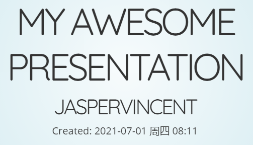
#+OPTIONS: toc:nil num:nil #+TITLE: My Awesome Presentation #+AUTHOR: JasperVincent #+REVEAL_THEME: sky #+REVEAL_TRANS: zoom #+REVEAL_INIT_OPTIONS: slideNumber:"c/t" #+REVEAL_SLIDE_HEADER: 我是页眉 #+REVEAL_SLIDE_FOOTER: 我是页脚 * Slide 1 #+REVEAL_HTML: <font size="30" color="red">神</font>之编辑器! here's some text * Slide 2 ** subslide 1 some text ** subslide 2 * Slide 3 #+ATTR_REVEAL: :frag (roll-in) - list item 1 - list item 2 | a | b | c | |---+---+---| | 1 | 2 | 3 | | 4 | 5 | 6 | |---+---+---| * Slide 4 #+begin_src python def f(x): return x + 1 print(f(5)) #+end_src
大佬作品：https://github.com/zamansky/mazelesson/ 作品存放推荐：https://rawgit.com/
org文件导出为Markdown
org文件导出为Office文件
org文件当然也可以导出为Office的Word和PPT文件，我们需要 ox-pandoc 这款插件。
- pandoc https://pandoc.org/
安装：pandoc
brew install pandoc /opt/homebrew/bin/pandoc
(use-package ox-pandoc :ensure t :custom ;; special extensions for markdown_github output (org-pandoc-format-extensions '(markdown_github+pipe_tables+raw_html)) ;; Linux /usr/local/bin/pandoc (org-pandoc-command "/opt/homebrew/bin/pandoc") )
- Word：
C-c C-e并选择p x - PPT：
C-c C-e并选择p p
org文件导出为博客站点
如何通过Org mode来写博客将在后续的课程中专门讲述，这里就先不讲了。
通过 Org mode写博客
org-mode 提供了丰富的格式，可以用来做写博客、笔记，规划，TODO，还有极其强大的文本样式，很多人用来写论文。 本质上 org-mode 跟 markdown 一样，都是一种纯文本标记语言而已。 一些主流的平台（github，gitlab），主流的博客工具（Jekyll，Hugo）都是支持 org-mode 的，把他当做 markdown 来用即可。
在Emacs里通过Org mode写博客也有很多方式，这里，我着重介绍以下两种方式：
- 通过 Org mode 自带的 ox-publish 机制导出为静态HTML站点
- 通过 ox-hugo 插件，利用 hugo 的强大功能导出为好看的博客
这两种方式，第一种是生成自己看的私人笔记等；第二种方式是生成对外展示的博客，下面逐一介绍。
通过ox-publish写博客
我们需要对 ox-publish 做一些基础的配置：
用户手册：https://orgmode.org/worg/org-tutorials/org-publish-html-tutorial.html
(use-package ox-publish :ensure nil :commands (org-publish org-publish-all) :config (setq org-export-global-macros '(("timestamp" . "@@html:<span class=\"timestamp\">[$1]</span>@@"))) ;; sitemap 生成函数 (defun my/org-sitemap-date-entry-format (entry style project) "Format ENTRY in org-publish PROJECT Sitemap format ENTRY ENTRY STYLE format that includes date." (let ((filename (org-publish-find-title entry project))) (if (= (length filename) 0) (format "*%s*" entry) (format "{{{timestamp(%s)}}} [[file:%s][%s]]" (format-time-string "%Y-%m-%d" (org-publish-find-date entry project)) entry filename)))) ;; 设置 org-publish 的项目列表 (setq org-publish-project-alist '( ;; 笔记部分 ("org-notes" :base-directory "~/org/" :base-extension "org" :exclude "\\(tasks\\|test\\|scratch\\|diary\\|capture\\|mail\\|habits\\|resume\\|meetings\\|personal\\|org-beamer-example\\)\\.org\\|test\\|article\\|roam\\|hugo" :publishing-directory "~/public_html/" :recursive t ; include subdirectories if t :publishing-function org-html-publish-to-html :headline-levels 6 :auto-preamble t :auto-sitemap t :sitemap-filename "sitemap.org" :sitemap-title "Sitemap" :sitemap-format-entry my/org-sitemap-date-entry-format) ;; 静态资源部分 ("org-static" :base-directory "~/org/" :base-extension "css\\|js\\|png\\|jpg\\|gif\\|pdf\\|mp3\\|ogg\\|swf\\|mov" :publishing-directory "~/public_html/" :recursive t :publishing-function org-publish-attachment) ;; 项目集合 ("org" :components ("org-notes" "org-static")) )) )
配置说明：
这将配置变量 org-publish-project-alist 以定义我们网站的发布项目。阅读此变量的文档， M-x describe-variable 以获取更多信息！
这里最重要的两个配置是： sitemap-format-entry 以及 org-publish-project-alist 。前者是生成 sitemap 的方式，后者是定义publish要到哪个文件夹，把哪些org文件进行发布。
指定源和目标:
:base-directory指定包含源文件的目录，即需要发布文件的基本目录:publishing-directory指定转化后存放的目录:preparation-function指定转化文件前需要调用的函数， 例如发布前需要 make 一下源文件:completion-function指定转化文件完成后需要调用的函数
选择文件（用于识别需要发布的文件）：
:base-extension指定识别的文件拓展名， 不需要点(.)后缀 ，如：*:base-extension “css”*:exclude用于排除指定文件:include引入指定文件，存在该文件都会进行发布转化:recursive为真时， 将递归检查发布 base-directory 指定目录下的文件
发布触发执行动作:
:publishing-function执行发布操作将触发指定函数来完成工作org-html-publish-to-htm默认 org 文件转化成 HTMLorg-publish-attachment复制操作
我们配置完 ox-publish 后，可以通过两种方式来发布静态站点：
发布
- M-x org-publish-all 来发布（全部）站点
- 按 C-c C-e 后，再按 P a 来发布（全部）站点
当写完一篇文章之后需要手动调用 org-export-dispatch 选择 p f ，将当前 org 文档生成 HTML 网页文件。
测试
一个简单的网页就生成了，可以使用浏览器打开此 HTML 文件进行预览，也可以使用 Simple-Httpd 这个插件在 website-directory 文件下启动一个 server，之后在浏览器中打开 127.0.0.1:19999 就可以查看生成的博客内容啦。
(use-package simple-httpd :ensure t :after ox-publish :config (setq httpd-root "~/public_html") (setq httpd-port 19999) (httpd-start) )
或者
python3 -m http.server --directory=~/public_html
Open http://localhost:8000/ in the Web browser
独立的配置
我们还需要一个可以运行 Emacs Lisp 脚本的 shell 脚本。我们称之为 build.sh
emacs -Q --script build-site.el
-Q 参数可防止 Emacs 加载您自己的 Emacs 配置，这将有助于确保一旦我们
准备好开始发布此站点，就可以在其他机器上干净地执行相同的脚本。
加载 Emacs 的包管理器，并将 package-user-dir 配置为项目文件夹的子目录。 这允许您安装脚本的软件包，而无需将它们与您个人 Emacs 配置的软件包混淆
;;;; Initialize the package system (setq make-backup-files nil) (require 'package) (setq package-user-dir (expand-file-name "./.packages")) ;; (setq package-archives '(("melpa" . "https://melpa.org/packages/") ;; ("elpa" . "https://elpa.gnu.org/packages/"))) (setq package-archives '( ("melpa" . "http://mirrors.tuna.tsinghua.edu.cn/elpa/melpa/") ("gnu" . "http://mirrors.tuna.tsinghua.edu.cn/elpa/gnu/") ("org" . "http://mirrors.tuna.tsinghua.edu.cn/elpa/org/"))) (unless (bound-and-true-p package--initialized) (package-initialize)) (when (not package-archive-contents) (package-refresh-contents)) ;; Check and install dependencies (dolist (package '(htmlize)) (unless (package-installed-p package) (package-install package))) ;; Load publishing system (require 'ox-publish) (require 'htmlize)
自定义页面展出配置
与手动写 html，css 一样这些在 org 里都是可自定义的，修改 org-publish 中的属性参 数和直接修改对应的 org 的 html 页面展出参数是等效的，请仔细阅读官方文档：https://orgmode.org/manual/Publishing-options.html
#Generic properties :with-author org-export-with-author :with-creator org-export-with-creator :with-toc org-export-with-toc :section-numbers org-export-with-section-numbers :time-stamp-file org-export-time-stamp-file :headline-levels org-export-headline-levels :with-sub-superscript org-export-with-sub-superscripts #HTML specific properties :html-head-include-default-style org-html-head-include-default-style :html-divs org-html-divs :html-container org-html-container-element :html-html5-fancy org-html-html5-fancy :html-validation-link org-html-validation-link :html-doctype org-html-doctype #单个org文件不想导出页脚 #+OPTIONS: html-postamble:nil
范例：自定义 html 导出内容
;; load file (defun file-contents (file) (with-temp-buffer (insert-file-contents file) (buffer-string))) ;; Generic properties (setq org-export-with-author nil ;; 不显示作者 org-export-with-creator t ;; 显示 Emacs 和 Org 版本 org-export-with-toc t ;; 显示目录 org-export-with-section-numbers nil ;; 不显示章节序号 org-export-time-stamp-file nil ;; 不显示时间戳，如创建时间 org-export-headline-levels 4 ;; 导出标题级别，默认 3 org-export-with-sub-superscripts nil ;; 重要，上标下标保持原样输出，如 _ 下划线 ) ;; HTML specific properties (setq org-html-divs '((preamble "header" "top") (content "main class=\"container\"" "content") (postamble "footer" "postamble")) org-html-container-element "section" org-html-validation-link nil ;; 页面底部的验证链接 Validate ，默认 t ， nil 删除 org-html-html5-fancy t org-html-doctype "html5" org-html-head-include-default-style nil ;; org-html-head "<link rel=\"stylesheet\" href=\"https://cdn.simplecss.org/simple.min.css\" />") org-html-head (file-contents "assets/head.html") org-html-postamble t org-html-postamble-format '(("en" "<p class=\"postamble\">First created: %d <br />Last updated: %C <br />Power by %c</p>")) ) ;;; 等价 (setq org-publish-project-alist `( ("xxxx" ;;xxxxx ;; https://orgmode.org/manual/Publishing-options.html#Generic-properties-1 :with-author nil :with-creator t :with-toc t :section-numbers nil :time-stamp-file nil :headline-levels 4 :with-sub-superscript nil ;; https://orgmode.org/manual/Publishing-options.html#ASCII-specific-properties-1 ;;; https://emacs.stackexchange.com/questions/76599/how-to-adjust-html-elements-using-org-publish-in-emacs :html-container "div class=\"container\"" :html-divs ((preamble "header" "preamble") (content "main class=\"container\"" "content") (postamble "footer" "postamble")) :html-container "section" :html-validation-link nil :html-html5-fancy t :html-doctype "html5" :html-head ,(file-contents "assets/head.html") :html-head-include-default-style nil :html-preamble ,(file-contents "assets/html_preamble-port.html") :html-postamble ,(file-contents "assets/html_postamble.html") ) ))
这将删除默认注入 HTML 输出的默认 JavaScript 和 CSS 代码，并将其替换为 指向名为 Simple.css 的漂亮样式表的链接（或您自己的 CSS 文件！
(setq org-html-validation-link nil ;; Don't show validation link org-html-head-include-scripts nil ;; Use our own scripts org-html-head-include-default-style nil ;; Use our own styles org-html-head "<link rel=\"stylesheet\" href=\"https://cdn.simplecss.org/simple.min.css\" />")
自定义站点地图
:auto-sitemap t :sitemap-title nil;"Blog" :sitemap-format-entry my/org-publish-org-sitemap-format :sitemap-function my/org-publish-org-sitemap :sitemap-sort-files anti-chronologically :sitemap-filename "sitemap.org" :sitemap-style tree
站点地图列表格式，以树样式格式化以表示目录结构
(defun my/org-publish-org-sitemap (title list) "Sitemap generation function." (concat "#+OPTIONS: toc:nil") (org-list-to-subtree list))
清理缓存：
Orgmode 发布项目缓存说明 在使用 Orgmode 进行 M-x org-publish-project 来进行将 org 文件导出为项目时，发现它会有缓存，即如果 org 文件没有再修改过，它就不会再生成该文件相应的 HTML 文件了。
- org-publish-timestamp-directory 这个就是保存时间戳文件的缓存目录。（删除该目录下的所有文件，即可进行全量重新发布）
清除上下标的设置:
默认情况下org-mode会把 ^, _, [] 等字符当做latex中的上标,下标和脚注 如果不想让org-mode误会, 也要在metadata中注明.
#+OPTIONS: ^:nil
参考博客：
- System Crafters: https://systemcrafters.net/publishing-websites-with-org-mode/building-the-site/
- https://github.com/djliden/djliden.github.io/blob/main/build-site.el
- psachin https://opensource.com/article/20/3/blog-emacs 配置 https://gitlab.com/psachin/psachin.gitlab.io
- emacsist 使用 Orgmode 写博客 仓库 https://github.com/emacsist
- distro.tube https://distro.tube/kb/org-publish.html
- https://www.zhangjiee.com/blog/2019/build-site-with-org-mode.html
- https://nicolasknoebber.com/posts/blogging-with-emacs-and-org.html
通过 ox-hugo 来写博客
我们先安装 hugo
brew install hugo
然后，我们来安装和配置 ox-hugo 这个插件：
(use-package ox-hugo :ensure t :config (with-eval-after-load 'org-capture (defun org-hugo-new-subtree-post-capture-template () "Returns `org-capture' template string for new Hugo post. See `org-capture-templates' for more information." (let* ((title (read-from-minibuffer "Post Title: ")) ; Prompt to enter the post title (fname (org-hugo-slug title))) (mapconcat #'identity `( ,(concat "* TODO " title) ":PROPERTIES:" ,(concat ":EXPORT_FILE_NAME: " fname) ":END:" "%?\n") ; Place the cursor here finally "\n"))) (add-to-list 'org-capture-templates '("h" ; `org-capture' binding + h "Hugo post" entry ;; It is assumed that below file is present in `org-directory' ;; and that it has a "Blog Ideas" heading. It can even be a ;; symlink pointing to the actual location of capture.org! (file+olp "/Users/7tq6lr/projs/pyobj/c5/testblog/all-blog.org" "Blog Ideas") (function org-hugo-new-subtree-post-capture-template)))) )
Hugo-xmin
hugo new site testblog cd testblog git init git submodule add https://github.com/nodejh/hugo-theme-mini.git themes/mini echo "theme = 'mini'" >> hugo.toml hugo server -D
我们按下 C-c C-e 后，选择 H h 就可以将当前的org文件按照设定的路径，导出相应的Markdown文件
all-blog-org 文件内容：
#+HUGO_BASE_DIR: ./ #+HUGO_SECTION: post #+HUGO_auto_set_lastmod: t #+hugo_code_fence: nil #+HUGO_CUSTOM_FRONT_MATTER: :hide - header - footer #+TOC: headlines 2 #+FILETAGS: :Emacs:Org-mode: * Blog Ideas ** DONE My first blog CLOSED: [2024-07-23 周二 23:43] :LOGBOOK: - State "DONE" from "STARTED" [2024-07-23 周二 23:43] :END: *** 111 after *** 222 xxxx
配置 all-blog.org, 让它在保存内容的时候自动生成博客内容，https://ox-hugo.scripter.co/doc/auto-export-on-saving/
.dir-locals.el 放到博客目录
((org-mode . ((eval . (org-hugo-auto-export-mode)))))
写完博客，自动生产调用这个脚本，my-fist-blog文章就在contenet目录中
hugo server -D 执行后浏览器查看就可以显示文章了。
配置 github 和 github workflow 来自动发布博客
- 新建一个 github 仓库
- 添加 remote 并 push 到远程
- 添加 github workflow
org-mode 写文档小技巧
截图
截图工具:
- picpick https://picpick.app/
- snipaste https://www.snipaste.com/
window 自带截屏快捷键 win+Shift+s 保存到剪切板中。
使用截图会保存在系统剪贴板中，实现粘贴有如下方法：
- 一个小函数
- org-download 插件
一个小函数
前置条件
mac 中安装命令行工具 pngpaste 来实现粘贴
brew install pngpaste
Linux 命令行工具 xclip
编写函数
(use-package emacs :ensure nil :after org :bind (:map org-mode-map ("s-V" . my/org-insert-clipboard-image)) :config (defun my/org-insert-clipboard-image (width) "create a time stamped unique-named file from the clipboard in the sub-directory (%filename.assets) as the org-buffer and insert a link to this file." (interactive (list (read-string (format "Input image width, default is 800: ") nil nil "800"))) ;; 设置图片存放的文件夹位置为 `当前Org文件同名.assets' (setq foldername "./images/") (if (not (file-exists-p foldername)) (mkdir foldername)) ;; 设置图片的文件名，格式为 `img_年月日_时分秒.png' (setq imgName (concat "img_" (format-time-string "%Y%m%d_%H%M%S") ".png")) ;; 图片文件的相对路径 (setq relativeFilename (concat "./images/" imgName)) ;; 根据不同的操作系统设置不同的命令行工具 (cond ((string-equal system-type "gnu/linux") (shell-command (concat "xclip -selection clipboard -t image/png -o > " relativeFilename))) ((string-equal system-type "darwin") (shell-command (concat "pngpaste " relativeFilename))) ((string-equal system-type "windows-nt") (shell-command (concat "powershell -command \"Add-Type -AssemblyName System.Windows.Forms;if ($([System.Windows.Forms.Clipboard]::ContainsImage())) {$image = [System.Windows.Forms.Clipboard]::GetImage();[System.Drawing.Bitmap]$image.Save('"relativeFilename "',[System.Drawing.Imaging.ImageFormat]::Png); Write-Output 'clipboard content saved as file'} else {Write-Output 'clipboard does not contain image data'}\"")))) ;; 给粘贴好的图片链接加上宽度属性，方便导出 (insert (concat "\n#+DOWNLOADED: screenshot @ " (format-time-string "%Y-%m-%d %a %H:%M:%S" (current-time)) "\n#+CAPTION: \n#+ATTR_ORG: :width " width "\n#+ATTR_LATEX: :width " (if (>= (/ (string-to-number width) 800.0) 1.0) "1.0" (number-to-string (/ (string-to-number width) 800.0))) "\\linewidth :float nil\n" "#+ATTR_HTML: :width " width "\n[[file:" relativeFilename "]]\n")) ;; 重新显示一下图片 (org-redisplay-inline-images) ) )
函数绑定了另外一个快捷键 Cmd-Shift-v 。输入一个宽度（默认宽度为800，直接按回车就是默认宽度），然后整个粘贴工作就完成了，
或者改 F2 粘贴截图：
(defun my/org-insert-clipboard-image (width) "create a time stamped unique-named file from the clipboard in the sub-directory (%filename.assets) as the org-buffer and insert a link to this file." (interactive (list (read-string (format "Input image width, default is 800: ") nil nil "800"))) ;; 设置图片存放的文件夹位置为 `当前Org文件同名.assets' (setq foldername "./images/") (if (not (file-exists-p foldername)) (mkdir foldername)) ;; 设置图片的文件名，格式为 `img_年月日_时分秒.png' (setq imgName (concat "img_" (format-time-string "%Y%m%d_%H%M%S") ".png")) ;; 图片文件的相对路径 (setq relativeFilename (concat "./images/" imgName)) ;; 根据不同的操作系统设置不同的命令行工具 (cond ((string-equal system-type "gnu/linux") (shell-command (concat "xclip -selection clipboard -t image/png -o > " relativeFilename))) ((string-equal system-type "darwin") (shell-command (concat "pngpaste " relativeFilename))) ((string-equal system-type "windows-nt") (shell-command (concat "powershell -command \"Add-Type -AssemblyName System.Windows.Forms;if ($([System.Windows.Forms.Clipboard]::ContainsImage())) {$image = [System.Windows.Forms.Clipboard]::GetImage();[System.Drawing.Bitmap]$image.Save('"relativeFilename "',[System.Drawing.Imaging.ImageFormat]::Png); Write-Output 'clipboard content saved as file'} else {Write-Output 'clipboard does not contain image data'}\"")))) ;; 给粘贴好的图片链接加上宽度属性，方便导出 (insert (concat "\n#+DOWNLOADED: screenshot @ " (format-time-string "%Y-%m-%d %a %H:%M:%S" (current-time)) "\n#+CAPTION: \n#+ATTR_ORG: :width " width "\n#+ATTR_LATEX: :width " (if (>= (/ (string-to-number width) 800.0) 1.0) "1.0" (number-to-string (/ (string-to-number width) 800.0))) "\\linewidth :float nil\n" "#+ATTR_HTML: :width " width "\n[[file:" relativeFilename "]]\n")) ;; 重新显示一下图片 (org-redisplay-inline-images) (message "OKKKK") ) (global-set-key (kbd "<f2>") 'my/org-insert-clipboard-image)
图片压缩
图片压缩工具有很多，这里使用 FFmpeg 视频处理工具
透明度/动画 支持
- jpg 不支持透明度，不支持动画
- png 支持透明度，支持动画（apng，效果不好）
- webp 支持透明度，支持动画
浏览器支持
- jpg 现代浏览器都支持
- png 现代浏览器都支持
- webp 大部分现代浏览器支持
范例： 300KB png 格式文件压缩测试
#png格式 有中间调色板，300-->102KB ffmpeg -i t.png -vf palettegen=max_colors=256:stats_mode=single -y out_3.png ffmpeg -i t.png -i out_3.png -lavfi "[0][1:v] paletteuse" -pix_fmt pal8 -y c.png #webp格式 300-->32KB #-lossless 是设置无损压缩 ffmpeg -i t.png -vf scale=iw:ih -codec libwebp -lossless 0 -quality 75 -y d.png #jpg格式 300-->78KB # -q:v选项来设置压缩质量，值为2。这个值范围为0到31，其中0为最高质量，31为最低质量。 ffmpeg -i t.png -q:v 4 -y output.jpg #改变大小 #图片压缩为尺寸为640x480像素 ffmpeg -i t.png -vf scale=640:480 -y output.jpg #单纯调整图片大小，无损压缩把图片宽高缩小2倍iw/2:ih/2 ffmpeg -i t.png -vf scale=iw/2:ih/2 -y a.png # 静态输出 -loglevel quiet
完整的脚本：
(defun my/org-insert-clipboard-image (width) "create a time stamped unique-named file from the clipboard in the sub-directory (%filename.assets) as the org-buffer and insert a link to this file." (interactive (list (read-string (format "Input image width, default is 800: ") nil nil "800"))) ;; 设置图片存放的文件夹位置为 `当前Org文件同名.assets' (setq foldername "./images/") (if (not (file-exists-p foldername)) (mkdir foldername)) ;; 设置图片的文件名，格式为 `img_年月日_时分秒.png' (setq srcImgName (concat "img_" (format-time-string "%Y%m%d_%H%M%S") "_src.png")) (setq imgName (concat "img_" (format-time-string "%Y%m%d_%H%M%S") ".png")) ;; 图片文件的相对路径 (setq srcRelativeFilename (concat "./images/" srcImgName)) (setq relativeFilename (concat "./images/" imgName)) ;; 根据不同的操作系统设置不同的命令行工具 (cond ((string-equal system-type "gnu/linux") (shell-command (concat "xclip -selection clipboard -t image/png -o > " relativeFilename))) ((string-equal system-type "darwin") (shell-command (concat "pngpaste " relativeFilename))) ((string-equal system-type "windows-nt") ;;(shell-command (concat "powershell -command \"Add-Type -AssemblyName System.Windows.Forms; if ($([System.Windows.Forms.Clipboard]::ContainsImage())) { $image = [System.Windows.Forms.Clipboard]::GetImage(); $image.Save('"srcRelativeFilename "', [System.Drawing.Imaging.ImageFormat]::Png); Write-Output 'Clipboard content saved as file'; & ffmpeg -i "srcRelativeFilename " -q:v 4 -loglevel quiet -y "relativeFilename " } else { Write-Output 'Clipboard does not contain image data' }\"")))) ;;(shell-command (concat "powershell -command \"Add-Type -AssemblyName System.Windows.Forms; if ($([System.Windows.Forms.Clipboard]::ContainsImage())) { $image = [System.Windows.Forms.Clipboard]::GetImage(); $image.Save('"srcRelativeFilename "', [System.Drawing.Imaging.ImageFormat]::Png); Write-Output 'Clipboard content saved as file'; & ffmpeg -i "srcRelativeFilename " -q:v 4 -loglevel quiet -y "relativeFilename " ;& Remove-Item -Path "srcRelativeFilename" -Force} else { Write-Output 'Clipboard does not contain image data' }\"")))) ;;(shell-command (concat "powershell -command \"Add-Type -AssemblyName System.Windows.Forms; if ($([System.Windows.Forms.Clipboard]::ContainsImage())) { $image = [System.Windows.Forms.Clipboard]::GetImage(); $image.Save('"srcRelativeFilename "', [System.Drawing.Imaging.ImageFormat]::Png); Write-Output 'Clipboard content saved as file'; ffmpeg -i "srcRelativeFilename " -vf 'palettegen=max_colors=256:stats_mode=single' -loglevel quiet -y out_3.png ; ffmpeg -i "srcRelativeFilename " -i out_3.png -lavfi '[0][1:v] paletteuse' -pix_fmt pal8 -loglevel quiet -y "relativeFilename "} else { Write-Output 'Clipboard does not contain image data' }\"")))) (shell-command (concat "powershell -command \"Add-Type -AssemblyName System.Windows.Forms; if ($([System.Windows.Forms.Clipboard]::ContainsImage())) { $image = [System.Windows.Forms.Clipboard]::GetImage(); $image.Save('"srcRelativeFilename "', [System.Drawing.Imaging.ImageFormat]::Png); Write-Output 'Clipboard content saved as file'; ffmpeg -i "srcRelativeFilename " -vf 'palettegen=max_colors=256:stats_mode=single' -loglevel quiet -y out_3.png ; ffmpeg -i "srcRelativeFilename " -i out_3.png -lavfi '[0][1:v] paletteuse' -pix_fmt pal8 -loglevel quiet -y "relativeFilename "; Remove-Item -Path "srcRelativeFilename" -Force ; Remove-Item -Path out_3.png -Force} else { Write-Output 'Clipboard does not contain image data' }\"")))) ;; 给粘贴好的图片链接加上宽度属性，方便导出 (insert (concat "\n#+DOWNLOADED: screenshot @ " (format-time-string "%Y-%m-%d %a %H:%M:%S" (current-time)) "\n#+CAPTION: \n#+ATTR_ORG: :width " width "\n#+ATTR_LATEX: :width " (if (>= (/ (string-to-number width) 800.0) 1.0) "1.0" (number-to-string (/ (string-to-number width) 800.0))) "\\linewidth :float nil\n" "#+ATTR_HTML: :width " width "\n[[file:" relativeFilename "]]\n")) ;; 重新显示一下图片 (org-redisplay-inline-images) (message "OKKKKKK") ) (global-set-key (kbd "<f2>") 'my/org-insert-clipboard-image)
org-download
需要借助 org-download 实现. 在这里只给出实现截图功能的设置代码, 以后的教程再详细讲解.
使用方法
- 使用系统截图工具 (
Windows下用<Win>+<shift>+s) 将截图保存到剪贴板 - 用
C-M-y(绑定了org-download-clipboard函数) 将剪贴板中图片粘贴到org文件中.
安装方法
Linux/MacOS- 安装截图工具 snipaste
- 用以下
use-package代码安装及设置
(use-package org-download :ensure t ;; 自动从 melpa 上安装 :defer t ;; 延迟加载 :bind (:map org-mode-map ("C-M-y" . org-download-clipboard)) ;; 绑定从剪贴版粘贴截图的快捷键 :custom (org-download-heading-lvl 1) ;; 用一级标题给截图文件命名 :config (setq org-download-image-attr-list '("#+ATTR_HTML: :width 80% :align center")) (setq-default org-download-image-dir "./images")) ;; 用同级 ./img 目录放置截图文件
Windows需要安装
ImageMagick, 并保证magick.exe在PATH变量的路径中 用msys2安装pacman -S mingw-w64-x86_64-imagemagick
- 从这里或网盘下载
org-download.el文件, 置于你的.emacs.d文件夹合适的路径中 (如~/.emacs.d/lisp/) 使用以下
use-package代码及设置(use-package org-download :ensure async ;; 因为不是从melpa安装, 需要手动保证async安装 :defer t ;; 延迟加载 :load-path "~/.emacs.d/lisp/" :bind (:map org-mode-map ("C-M-y" . org-download-clipboard)) ;; 绑定从剪贴版粘贴截图的快捷键 :custom (org-download-heading-lvl 1) ;; 用一级标题给截图文件命名 :config (setq-default org-download-image-dir "./images")) ;; 用同级 ./img 目录放置截图文件
在Org mode里用纯文本画图
plantuml
比较推荐的是 plantuml ，主要是它支持的图形种类最多：
- 序列图
- 用例图
- 类图
- 对象图
- 活动图（这里是传统的语法）。
- 组件图
- 部署图
- 状态图
- 时序图
也支持以下非UML图表：
- JSON数据
- YAML数据
- Extended Backus-Naur Form (EBNF)图表
- 网络图（nwdiag）
- 线框图形界面或UI模拟图（盐）。
- 架构图
- 规范和描述语言（SDL）
- Ditaa图
- 甘特图
- 思维导图
- 工作分解结构图（WBS）
- 用AsciiMath或JLaTeXMath符号进行数学计算
- 实体关系图（IE/ER）。
这样基本上我们只需要学会 plantuml 的语法，就能够画出我们工作中需要的所有类型的图了，非常划算。
PlantUML的安装和配置
软件包安装
mac
brew install plantuml
配置Emacs和Org mode支持 plantuml
(use-package plantuml-mode :ensure t :mode ("\\.plantuml\\'" . plantuml-mode) :init ;; enable plantuml babel support (add-to-list 'org-src-lang-modes '("plantuml" . plantuml)) (org-babel-do-load-languages 'org-babel-load-languages (append org-babel-load-languages '((plantuml . t)))) :config (setq org-plantuml-exec-mode 'plantuml) (setq org-plantuml-executable-path "plantuml") (setq plantuml-executable-path "plantuml") (setq plantuml-default-exec-mode 'executable) ;; set default babel header arguments (setq org-babel-default-header-args:plantuml '((:exports . "results") (:results . "file") )) )
按下 C-c C-c 执行代码块， plantuml 就会自动解析文本执行，并生成你想要的图片啦
范例：
#+BEGIN_SRC plantuml :file ./images/uml_20230704_150.png :width 400 :exports both @startuml !theme materia /' 设定主题 '/ scale 2 /' 设定图片的清晰度 '/ skinparam componentStyle rectangle A -> B : 1. hello\n2. world @endgantt #+END_SRC #+RESULTS: #+ATTR_ORG: :width 400 #+ATTR_HTML: :width 400 [[file:./images/uml_20230704_150.png]]
PlantUML各种图形的示例
时序图
时序图是我们经常画的图，我们常常来描述业务流程的时候通过时序图来描述，下面是一个时序图的例子
#+begin_src plantuml :file ./images/uml_20230115_135944.png :width 400 :exports both @startuml !theme materia /' 设定主题 '/ scale 2 /' 设定图片的清晰度 '/ Alice -> Bob: Authentication Request Bob --> Alice: Authentication Response Alice -> Bob: Another authentication request Alice <-- Bob: Another authentication response @enduml #+end_src
类图
我们用来描述类、实例、关系的时候常常会用到类图
#+BEGIN_SRC plantuml :file ./images/uml_20230115_151217.png :width 800 :exports both
@startuml
!theme materia
scale 2
skinparam componentStyle rectangle
class Class
class ClassExpression
class IRI
class Entity
class ObjectProperty
class DataProperty
class AnnotationProperty
class Datatype
class DataRange {
arity: UnlimitedNatural
}
class NamedIndividual
class Individual
class AnonymousIndividual {
nodeID: String
}
class Literal {
lexicalFrom: String
}
Class -up-|> ClassExpression
Class -up-|> Entity
ObjectProperty -up-|> Entity
DataProperty -up-|> Entity
AnnotationProperty -up-|> Entity
Datatype -up-|> Entity
Datatype -up-|> DataRange
NamedIndividual -up-|> Entity
NamedIndividual -up-|> Individual
AnonymousIndividual -up-|> Individual
Entity -left-> IRI
Literal -up-> Datatype
Note bottom of Datatype: The arity of a datatype muse be one.
@enduml
#+END_SRC
组件图
我们可以通过组件图来画产品的架构、技术架构等。
#+BEGIN_SRC plantuml :file ./images/uml_20230115_151535.png :width 400 :exports both
@startuml
!theme materia
scale 2
skinparam componentStyle rectangle
package "Some Group" {
HTTP - [First Component]
[Another Component]
}
node "Other Groups" {
FTP - [Second Component]
[First Component] --> FTP
}
cloud {
[Example 1]
}
database "MySql" {
folder "This is my folder" {
[Folder 3]
}
frame "Foo" {
[Frame 4]
}
}
[Another Component] --> [Example 1]
[Example 1] --> [Folder 3]
[Folder 3] --> [Frame 4]
@enduml
#+END_SRC
活动图
我们可以通过活动图来画一些偏程序向的流程图。
#+BEGIN_SRC plantuml :file ./images/uml_20230115_151804.png :width 400 :exports both @startuml !theme materia scale 2 skinparam componentStyle rectangle start if (Graphviz 已安装?) then (yes) :处理所有\n绘制任务; else (no) :仅处理 __时序图__ 和 __活动__ 图; endif stop @enduml #+END_SRC
甘特图
我们在项目管理的时候，可以通过甘特图来展示项目的现状。
#+BEGIN_SRC plantuml :file ./images/uml_20230115_151940.png :width 400 :exports both @startgantt !theme materia scale 2 [Prototype design] lasts 15 days [Test prototype] lasts 10 days Project starts 2020-07-01 [Prototype design] starts 2020-07-01 [Test prototype] starts 2020-07-16 @endgantt #+END_SRC

思维脑图
思维脑图也是产品经理经常用到的工具，我们可以通过思维脑图来整理思路。
#+BEGIN_SRC plantuml :file ./images/uml_20230115_170342.png :width 400 :exports both @startmindmap !theme materia scale 2 + Emacs教程 ++ 1.Emacs初识 +++ Emacs安装启动 +++ Emacs配置文件 +++ Emacs配置文件 +++ Emacs基本快捷键 ++ 2.Org mode初识 +++ Org mode的语法 +++ Org mode的快捷键@endmindmap ++ 3.通过Org mode来管理配置文件 +++ Org babel tangle +++ tangle第一个配置文件early-init.el ++ 4.Emacs的包管理器 +++ package.el +++ 安装use-package插件 +++ 安装quelpa插件 @endmindmap #+END_SRC
JSON结构
我们还可以通过 plantuml 来展示JSON结构：
#+BEGIN_SRC plantuml :file ./images/uml_20230115_170915.png :width 600
@startjson
!theme materia
scale 2
{
"firstName": "John",
"lastName": "Smith",
"isAlive": true,
"age": 27,
"address": {
"streetAddress": "21 2nd Street",
"city": "New York",
"state": "NY",
"postalCode": "10021-3100"
},
"phoneNumbers": [
{
"type": "home",
"number": "212 555-1234"
},
{
"type": "office",
"number": "646 555-4567"
}
],
"children": [],
"spouse": null
}
@endjson
#+END_SRC
简单的原型
我们甚至可以通过 plantuml 来实现一些简单的原型图：
#+BEGIN_SRC plantuml :file ./images/uml_20230115_171130.png :width 400 :exports both
@startsalt
!theme materia
scale 2
{
Just plain text
[This is my button]
() Unchecked radio
(X) Checked radio
[] Uncheck box
[X] Checked box
"Enter text here "
^This is a droplist^
}
@endsalt
#+END_SRC
gnuplot绘图
我们还可以使用 gnuplot 来画一些数学相关的图
- 先通过
brew install gnuplot安装 gnuplot - 安装配置 Emacs 的 gnuplot 插件
(use-package gnuplot :ensure t :mode ("\\.gp$" . gnuplot-mode) :init (add-to-list 'org-src-lang-modes '("gnuplot" . gnuplot)) (org-babel-do-load-languages 'org-babel-load-languages (append org-babel-load-languages '((gnuplot . t)))) :config ;; (add-to-list 'auto-mode-alist '("\\.gp$" . gnuplot-mode)) (setq org-babel-default-header-args:gnuplot '((:exports . "results") (:results . "file"))) )
我们安装完 gnuplot 后，可以通过它来画图：
#+BEGIN_SRC gnuplot :file ./images/gnuplot_20230115_173519.png :width 400 f(x) = x**2 plot f(x) #+END_SRC
Lilypond乐谱绘图
- 提前安装 lilypond 和 mactex-no-gui
brew install lilypond brew install mactex-no-gui
emacs 配置
(use-package lilypond-mode :ensure nil :mode ("\\.i?ly\\'" . LilyPond-mode) :init (add-to-list 'org-src-lang-modes '("lilypond" . lilypond)) ;; add support for org babel (org-babel-do-load-languages 'org-babel-load-languages (append org-babel-load-languages '((lilypond . t)))) ;; set lilypond binary directory (setq org-babel-lilypond-ly-command "/usr/local/bin/lilypond -dpreview") :config ;; trim extra space for generated image (defun my/trim-lilypond-png (orig-fun &optional arg info param) (when (member (car (org-babel-get-src-block-info)) '("lilypond")) (let ((ly-file (alist-get :file (nth 2 (org-babel-get-src-block-info))))) (let ((ly-preview-file (replace-regexp-in-string "\\.png" ".preview.png" ly-file))) (when (file-exists-p ly-preview-file) (shell-command (concat "mv " ly-preview-file " " ly-file))) (org-redisplay-inline-images))))) (advice-add 'org-babel-execute-src-block :after #'my/trim-lilypond-png) (setq ob-lilypond-header-args '((:results . "file replace") (:exports . "results") )) )
配置完 lilypond-mode 后，我们就可以通过 lilypond 代码块记录乐谱啦：
\relative
\new Staff
{
\clef treble
\key c \major
\time 4/4
\override Lyrics.LyricSpace #'minimum-distance = #1.0
c'4 c g' g
a a g2
f4 f e e
d d c2
g4' g f f
e e d2
g4 g f f
e e d2
c4 c g' g
a a g2
f4 f e e
d d c2
\bar "|."
}
% \addlyrics {
% Twin -- kle, twin -- kle, lit -- tle star, how I won -- der what you are!
% Up a -- bove the sky so high, like a dia -- mond in the sky.
% Twin -- kle, twin -- kle, lit -- tle star, how I won -- der what you are!
% }
\addlyrics {
一 闪 一 闪 亮 晶 晶， 满 天 都 是 小 星 星。
挂 在 天 上 放 光 明， 好 像 许 多 小 眼 睛。
一 闪 一 闪 亮 晶 晶， 满 天 都 是 小 星 星。
}
附录-Emacs Lisp Intro
`C-h i`或`M-x info`到info界面，Elisp包含所有语言的细节，Emacs Lisp Intro是elisp的简介。了解emacs是如何工作的。
官方html：https://www.gnu.org/software/emacs/manual/eintr.html
elisp专业入门：http://smacs.github.io/
阅读操作
n/p 下一页/上一页 空格 翻页
Preface
why
为什么要学习 Emacs Lisp
这篇 Emacs Lisp 简介旨在帮助您入门：指导您学习编程的基础知识，更重要的是，向您展示如何自学以走得更远。
On Reading this Text
怎么阅读？
建议在emacs中阅读。可以分屏操作演示。
For Whom This is Written
这是为谁写的
非程序员。
Lisp History
Lisp历史
Lisp 最初于 1950 年代后期在麻省理工学院开发，用于人工智能研究。Lisp 语言的强大功能使其在其他用途上也更胜一筹，例如编写编辑器命令和集成环境。
GNU Emacs Lisp 很大程度上受到 Maclisp 的启发，Maclisp 于 1960 年代在麻省理工学院编写。它在某种程度上受到 Common Lisp 的启发，Common Lisp 在 1980 年代成为标准。但是，Emacs Lisp 比 Common Lisp 简单得多。（标准的 Emacs 发行版包含一个可选的扩展文件，el，这为 Emacs Lisp 添加了许多 Common Lisp 功能。）
A Note for Novices
新手注意事项
学习 Emacs在您的计算机屏幕上移动，可以使用`C-h t`
- `C-`: C(trl)意思是按住 Ctrol 键
- `M-`: M(eta)意指 Meta 键 (在 Mac 下为 Option 键， win下为alt键)
- `C-u`，这称为通用参数。通过参数传递给随后的命令
List Processing
Lisp 代表 LISt Processing，编程语言通过将*列表*（和列表的列表）放在括号之间来处理*列表*。括号标记列表的边界。有时一个列表前面有一个撇号 `'`，在 Lisp 中称为*单引号*。列表是 Lisp 的基础。
| ------------------------------------------------------------ | ---- | ------------------------------------- |
| • Lisp 列表 | 什么是列表？ | |
| •运行程序 | Lisp 中的任何列表都是准备运行的程序。 | |
| •犯错 | 生成错误消息。 | |
| •名称和定义 | 符号名称和函数定义。 | |
| • Lisp 解释器 | Lisp 解释器的作用。 | |
| •评估 | 运行一个程序。 | |
| •变量 | 从变量返回一个值。 | |
| •参数 | 将信息传递给函数。 | |
| •设置和设置 | 设置变量的值。 | |
| •总结 | 要点。 | |
| •错误消息练习 |
Lisp Lists
什么是列表
在Lisp中，列表如下：`'(rose violet daisy buttercup)`。此列表前面有一个撇号。它也可以写成如下，它看起来更像你可能熟悉的那种列表：
'(rose violet daisy buttercup)
这个列表的元素是四种不同花的名称，用空格隔开并用括号包围，就像田野里的花，周围有石墙。
单引号代表取值的意思。
区别：
- 列表前面有单引号，列表里的值是纯赋值过程不做任何处理。
- 列表前面没单引号，列表里一个被当作函数后面为参数。
Numbers, Lists inside of Lists
列表中的数字、列表
在 Lisp 中，数据和程序的表示方式相同；也就是说，它们都是单词、数字或其他列表的列表，用空格分隔并用括号括起来。（因为一个程序看起来像数据，一个程序可以很容易地作为另一个程序的数据；这是 Lisp 的一个非常强大的特性。）（顺便说一句，这两个括号注释**不是**Lisp 列表，因为它们包含 ';' 和 '.' 作为标点符号。）
列表里可以包含列表
'(this list has (a list inside of it))
范例：
'(1 2 3 4) ;(1 2 3 4) 不做任何处理 (+ 2 2) ;4 。+为函数，后面2个2为参数 (this is (another list) (another list again)) ;列表里可包含多个列表
Lisp Atoms
在 Lisp 中，我们一直称之为词的东西被称为*原子*。这个术语来自原子这个词的历史意义，意思是“不可分割的”。
就 Lisp 而言，我们在列表中使用的单词不能被分成任何更小的部分，并且仍然与程序的一部分具有相同的含义；同样的数字和单字符符号，如 '+'。另一方面，与古老的原子不同，列表可以拆分为多个部分。
'(this list includes "text between quotation marks.") ;; 在列表中，原子彼此之间被空格隔开。它们可以紧挨着一个括号 ;; 像this就是最小的单位了，不能再分割了
Whitespace in Lists
列表中的空白
列表中的空白数量无关紧要，空格、回车、TAB等都可以，只要能被识别出来。从 Lisp 语言的角度来看，
'(this list looks like this) ;; 等价 '(this list looks like this)
GNU Emacs Helps You Type Lists
emacs帮助你输入列表
可以自动缩进
(setq 2 3
b)
Run a Program
Lisp 中的任何列表都是准备运行的程序
将光标放在以下列表的右侧括号之后，然后键入`C-x C-e`
Generate an Error Message
生成错误信息
(this is an unquoted list) ;; this不是一个函数，执行会在*Backtrace*窗口中报错。按q退出报错
Symbol Names and Function Definitions
符号名称和函数定义
符号代表一些方法
符号+ 代表plus
The Lisp Interpreter
Lisp 解释器
1.查看列表前是否有单引用； 如果有，只给清单。 如果没有引用，当成函数看，解释器会查看列表中的第一个元素并查看它是否有函数定义。如果是，解释器执行函数定义中的指令。否则，解释器会打印一条错误消息。
Byte Compiling
字节编译
Lisp 解释器能够解释两种实体：人类可读的代码，我们将专门关注它，以及经过特殊处理的代码，称为*字节编译*代码，它不是人类可读的。字节编译的代码比人类可读的代码运行得更快。
您可以通过运行其中一个编译命令（例如`byte-compile-file`. 字节编译的代码通常存储在一个以 .elc 扩展名而不是 .el延期。您将在emacs/lisp目录; 要读取的文件是那些.el 扩展名。
实际上，对于您可能为定制或扩展 Emacs 所做的大多数事情，您不需要字节编译；
Evaluation
当 Lisp 解释器处理一个表达式时，该活动的术语称为*评估*。我们说解释器“评估表达式”。
Evaluating Inner Lists
列表中的列表
(+ 2 (+ 3 3)) ;; 8 先执行里面括号的
`C-x C-e`触发名称`eval-last-sexp`的操作
Variables
变量
fill-column ;; 内置变量，一行的行宽
`C-x C-e`执行
没有函数的符号的错误信息
如果把变量当作函数执行就会报错。
(fill-column)
无值符号的错误信息
(+ 2 2)
在 GNU Emacs 22 中，`+`没有被定义就会报错
Arguments
参数
(+ 2 2) ;; 数据为函数 + 的参数
参数的数据类型
应该传递给函数的数据类型取决于它使用的信息类型。诸如此类的函数`+`的参数 必须具有数字值，因为`+`将数字相加。其他函数使用不同类型的数据作为参数。
范例：
(concat "abc" "def") (substring "The quick brown fox jumped." 16 19)
作为变量或列表值的参数
参数可以是在计算时返回值的符号。例如，当符号`fill-column`本身被执行时，它返回一个数字
范例：
(+ 2 fill-column) (concat "The " (number-to-string (+ 2 fill-column)) " red foxes.")
可变长参数
函数接受参数的数量。
(+) ⇒ 0 (*) ⇒ 1 (+ 3) ⇒ 3 (* 3) ⇒ 3 (+ 3 4 5) ⇒ 12 (* 3 4 5) ⇒ 60
使用错误的类型对象作为参数
使用错误的类型对象作为参数会触发错误
(+ 2 'hello) ;; 数字和字符串是不能相加的
报错信息
---------- Buffer: *Backtrace* ----------
Debugger entered--Lisp error:
(wrong-type-argument number-or-marker-p hello)
+(2 hello)
eval((+ 2 'hello) nil)
elisp--eval-last-sexp(t)
eval-last-sexp(nil)
funcall-interactively(eval-print-last-sexp nil)
call-interactively(eval-print-last-sexp nil nil)
command-execute(eval-print-last-sexp)
---------- Buffer: *Backtrace* ----------
message函数
它用于向用户发送消息，显示最后一条。
(message "This message appears in the echo area!") ;; 格式化 (message "There are %d %s in the office!" (- fill-column 14) "pink elephants") ;; 复杂的 (message "He saw %d %s" (- fill-column 32) (concat "red " (substring "The quick brown foxes jumped." 16 21) " leaping."))
set & setq
变量的赋值
一种方法是使用函数`set`或特殊形式 `setq`的全局变量。另一种方法是使用`let`局部变量
使用 `set`
(set 'flowers '(rose violet daisy buttercup)) ;; 给flowers赋值。注意flowers前有个单引号
`'`引号代表`quote`
使用 `setq`
(setq carnivores '(lion tiger leopard)) ;; 变量名称前不需要单引号 ;;等价于 (set 'carnivores '(lion tiger leopard))
变量名称前不需要单引号。同时支持给多个变量赋值
(setq trees '(pine fir oak maple)
herbivores '(gazelle antelope zebra))
counting计数
写一个计数器
(setq counter 0) ; Let’s call this the initializer. (setq counter (+ counter 1)) ; This is the incrementer. counter ; This is the counter.
Practicing Evaluation
运行几个程序
如何执行
C-x C-e ;; 执行，在下方交互区域显示 C-u C-x C-e ;; 原地执行
Buffer Names
(buffer-name) ;; 获取buffer名称。 执行 C-u C-x C-e 显示 "*scratch*"
(buffer-file-name) ;; 获取buffer代表文件的名称
Getting Buffers
(current-buffer) ;; 返回buffer本身，当前buffer。如执行 C-u C-x C-e 显示 #<buffer *scratch*> (other-buffer) ;; 返回buffer本身，相当前buffer最近使用的buffer ， 快捷键C-x o
范例
other-buffer使用帮助C-h f： (other-buffer &optional BUFFER VISIBLE-OK FRAME) 说明： optional：代表后面参数都是可选的 BUFFER: buffer本身 VISIBLE-OK: 是否可展示 FRAME: 指定一个实时帧，然后使用该帧的缓冲区列表代替所选帧的缓冲区列表
Switching Buffers
(switch-to-buffer (other-buffer)) ;; 切换到上一个buffer (switch-to-buffer (other-buffer (current-buffer) t)) ;; 切换到上一个buffer
缓冲区大小和光标的位置
(buffer-size) ;; 获取当前buffer的大小 (point) ;; 光标所在位置，数字 (point-min) ;; 光标最开始的位置 (point-max) ;; 光标最后的位置
注意：buffer可以隐藏部分字符
- `M-x narrow-to-region` 或`C-x n n` 缩小区域
- `M-x widen` 或`C-x n w` 恢复
- `M-x count-words` 统计总字符大小，包含回车
Writing Defuns
如何编写函数定义。
关于原始函数的旁白
函数分为2个语言实现：c和elisp。没有必要区分函数由什么实现。
如何定义函数
早期`defun`是个函数，现在是个宏。
函数定义在单词之后最多有五个部分 `defun`：
- 函数定义应附加到的符号的名称。
- 将传递给函数的参数列表。如果没有参数将传递给函数，则这是一个空列表， `()`。
- 描述函数的文档。（技术上可选，但强烈推荐。）
- 可选地，一个使函数具有交互性的表达式，以便您可以通过键入M-x然后键入函数的名称来使用它；或通过键入适当的键或键和弦。
- 指示计算机做什么的代码：函数定义的*主体*
;; 函数最多由5个部分组成 (defun function-name (arguments…) "optional-documentation…" (interactive argument-passing-info) ; optional body…) 说明： 1.函数名称。function-name 2.函数参数列表。可多个参数(arg1 arg2 &optional可选 args &rest其它 rests)、可为空 () 3.函数文档。可选。利用`命令' 可加入其它文档连接 " one two two `help' 可点击连接" 4.交互式表达式。可选 5.函数体。可选
范例：
(defun func-name () "Func name: this is a demo function this this `help' `buffer-size' " ;; optional (interactive) ;; optional ...)
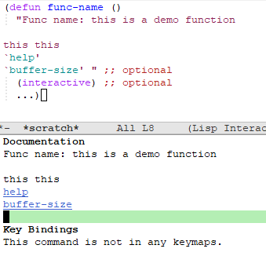]]
函数安装
`C-x C-e`执行安装，之后就可以调用了
(defun multiply-by-seven (number) "Multiply NUMBER by seven." (* 7 number)) ;; C-x C-e安装 (multiply-by-seven 7) ;; 调用
改变一个函数的定义，还需要执行`C-x C-e`安装更新
交互式函数interactive
`interactive`在文档之后就可以了，通过`M-x`然后键入函数的名称来调用交互式 函数
交互表达式
#+end_src (interactive &optional ARG-DESCRIPTOR) 说明： 1.ARG-DESCRIPTOR： 表达式，可选 前缀：C-u 或 M- p – 前缀数字 c – 字符
Code letters available are: a – Function name: symbol with a function definition. b – Name of existing buffer. B – Name of buffer, possibly nonexistent. c – Character (no input method is used). C – Command name: symbol with interactive function definition. d – Value of point as number. Does not do I/O. D – Directory name. e – Parameterized event (i.e., one that's a list) that invoked this command. If used more than once, the Nth e returns the Nth parameterized event. This skips events that are integers or symbols. f – Existing file name. F – Possibly nonexistent file name. G – Possibly nonexistent file name, defaulting to just directory name. i – Ignored, i.e. always nil. Does not do I/O. k – Key sequence (downcase the last event if needed to get a definition). K – Key sequence to be redefined (do not downcase the last event). m – Value of mark as number. Does not do I/O. M – Any string. Inherits the current input method. n – Number read using minibuffer. N – Numeric prefix arg, or if none, do like code n. p – Prefix arg converted to number. Does not do I/O. P – Prefix arg in raw form. Does not do I/O. r – Region: point and mark as 2 numeric args, smallest first. Does no I/O. s – Any string. Does not inherit the current input method. S – Any symbol. U – Mouse up event discarded by a previous k or K argument. v – Variable name: symbol that is custom-variable-p. x – Lisp expression read but not evaluated. X – Lisp expression read and evaluated. z – Coding system. Z – Coding system, nil if no prefix arg.
Demos
(interactive "sName: \nbBuffer: \nP") ;; (list (read-string "Name: ") ;; (read-buffer "Buffer: ") ;; current-prefix-arg)
#+end_src
范例：
(defun multiply-by-seven (number) ; Interactive version. "Multiply NUMBER by seven." (interactive "p") (message "The result is %d" (* 7 number))) ;; 调用使用 C-u 3 M-x multiply-by-seven 或 M-3 M-x multiply-by-seven
*`interactive`不同的选项 *
- 小p，告诉emacs将你正在键入的`C-u`的前缀数字或者`M-`加上前缀数字作为参数传给函数
- B，告诉emacs使用缓冲区的名称作为函数的参数
- r，光标所在的buffer的开始值，和结束值(两个数字)
基本格式：
- 不同的参数间使用`\n`隔开，被隔开的第一个字母代表选项
- 可以带有提示语句附加在选项后面(不需要使用空白字符隔开)
(defun name-of-function (arg char) "documentation…" (interactive "p\ncZap to char: ") body-of-function…) (defun my-func (number char) "..." (interactive "pNumber\nc输入一个字符") (message "%d %c" number char)) (defun my-func2 (buffer) (interactive "b请选择一个buffer") )
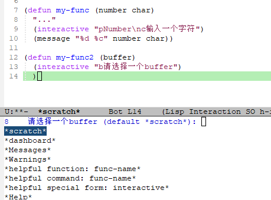]]
永久安装代码
- 定入到`.emacs`文件中(`init.el`)
- 写入到一个或多个文件中，通过`load`函数加载
- 写入到`site-init.el`中
let函数
- 局部变量值绑定，由let绑定的值只在let表达式中可用
- 可以一次绑定多个值
- `let*` 可以使用局部变量里的变量
格式
(let varlist body…) (let ((variable value) (variable value) …) body…)
范例：
(let ((zebra "stripes") ;; 字符串用双引号 (tiger "fierce")) (message "One kind of animal has %s and another is %s." ;; %s可以代表一切东西 zebra tiger)) ;; "One kind of animal has stripes and another is fierce." (let ((birch 3) pine fir (oak 'some)) ;; 字符串赋值 (message "Here are %d variables with %s, %s, and %s value." birch pine fir oak)) ;; "Here are 3 variables with nil, nil, and some value." (defun circle-area (radix) (let ((pi 3.1415926) area) (setq area (* pi radix radix)) (message "直径为 %.2f 的圆面积是 %.2f" radix area))) (circle-area 3)
if判断
#+end_src (if condition then-p ;; 只能执行一种them语句 else-p) ;; else语句 #+end_src
注意：then行只能执行一条then语句，如果要执行多条，可以使用progn
(if (> 5 4 ) (message "5") (message "4")) ;;"5" ;; 语句中包含多条用progn (if (> 5 4 ) (progn (message "print result") (message "5")) (message "4"))
比较
(setq a "hello") (setq b "hello") ;;equal比较一切变量的值是否相等 (equal a b) ;; t ;; eq比较一切变量的值是否相等，还测试指针指向地址是否相等 (eq a b) ;; nil ;; = 数字比较 (= 3 3.0) ;;t (eql 1.0 1) ;; nil 不仅测试数字的值是否相等，还测试数字类型是否一致
判断真和假
- 只要执行后的返回值不是nil，其结果就是真。即只有nil是false
- 空列表是假
(if 4 'true 'false) ;;true (if nil 'true 'false) ;;false
`save-excursion`函数
`save-excursion`函数它保存光标的位置，执行函数体，然后如果点的位置发生变化，则将点恢复到以前的位置。使用场景，执行一些操作再跳转回原来位置。
标记光标位置： `M-x set-mark-command`或`C-@`或`C-SPC 经常被输入法占用`
#+end_src ;; 函数体是一个或多个表达式，它们将被 Lisp 解释器按顺序计算。如果主体中有多个表达式，则最后一个的值将作为save-excursion函数的值返回 (save-excursion body…)
(save-excursion first-expression-in-body second-expression-in-body third-expression-in-body … last-expression-in-body)
;; 在 Emacs Lisp 代码中，save-excursion表达式经常出现在表达式的主体中let (let varlist (save-excursion body…)) #+end_src
范例
;; 保存光标位置，执行内容开始插入hello，结局插入bye，最后回到光标位置 (save-excursion (goto-char (point-min)) (insert "hello ") (goto-char (point-max)) (insert "\nbye "))
Buffer Walk Through
探索一些与缓冲区相关的功能。
查找更多的信息
- 获取函数说明 `C-h f`
- 获取变量说明 `C-h v`
- 获取更多说明 `C-h C-h`
- 函数定义跳转 `M-.` 再使用`M-,`跳回原来位置
如果是指向的是C语言的源代码，需要从官网下载源代码，添加src路径
http://gnu.mirrors.hoobly.com/emacs/
(setq find-function-C-source-directory "~/emacs-27.2/src")
包含Lisp代码的文件习惯上被称为`库`
简化的beginning-of-buffer函数定义
- `M-<` 回到编辑区最开始位置 `beginning-of-buffer`
- `M->` 去往编辑区最后的位置 `end-of-buffer`
;; 跳转到buferr开始的位置 (defun simplified-beginning-of-buffer () "Move point to the beginning of the buffer; leave mark at previous position." (interactive) (push-mark) ;;把当前的光标放到mark region中 (goto-char (point-min))) ;;跳转到某个字符
返回原来光标位置：`C-x C-x`
可以尝试写一个`simplified-end-of-buffer`
(defun simplified-end-of-buffer () "Move point to the end of the buffer; leave mark at previous position." (interactive) (push-mark) (goto-char (point-max)))
mark-whole-buffer函数定义
标记整个缓冲区 `C-x h`
emacs 22
(defun mark-whole-buffer () "Put point at beginning and mark at end of buffer. You probably should not use this function in Lisp programs; it is usually a mistake for a Lisp function to use any subroutine that uses or sets the mark." (interactive) (push-mark (point)) (push-mark (point-max) nil t) ;; 最后位置标记 (goto-char (point-min)) ;; 跳到开始的位置
emacs27中的定义
(defun mark-whole-buffer () "Put point at beginning and mark at end of buffer. Also push mark at point before pushing mark at end of buffer. If narrowing is in effect, uses only the accessible part of the buffer. You probably should not use this function in Lisp programs; it is usually a mistake for a Lisp function to use any subroutine that uses or sets the mark." (declare (interactive-only t)) ;; 函数只能用于交互式调用 (interactive) (push-ark) (push-mark (point-max) nil t) ;; This is really `point-min' in most cases, but if we're in the ;; minibuffer, this is at the end of the prompt. (goto-char (minibuffer-prompt-end)))
append-to-buffer函数定义
从当前缓冲区中拷贝一个域到指定的缓冲区
扩展几个函数
`append-to-buffer` 把region内容附加到buffer中
(defun append-to-buffer (buffer start end) ... )
`get-buffer-create`若缓冲区存在，返回缓冲区；若缓冲区不存在，新建一个缓冲区
(get-buffer-create buffer)
`insert-buffer-substring`向缓冲区中插入子字符串
(insert-buffer-substring buffer start end)
- `set-buffer`在代码中切换buffer往往不使用`switch-to-buffer`而使用`set-buffer`
More Complex
一些，甚至更复杂的功能
copy-to-buffer 函数定义
该函数与`append-to-buffer`的区别在于，该函数会覆盖原有缓冲区的内容。因为它使用了`erase-buffer`函数
insert-buffer函数定义
将另一个缓冲区的内容拷贝到当前缓冲区。作用与`append-to-buffer`或`copy-to-buffer`正好相反。
函数定义（部分）
(defun insert-buffer (buffer) "documentation" (interactive "*bInsert buffer: ") ...)
注意：interactive 的变量第一部分带了一个`*`。星号用于缓冲区是一个只读缓冲区的情况。如果对只读缓冲区进行操作，会在回显区打印警告或终端进行警告。
interactivet选项 b 告诉解释器传的变量应该是一个存在的缓冲区或者缓冲区的名称（大写的B允许传递不存在的缓冲区）
拓展，bufferp函数
用以判断是否是一个缓冲区的函数
(bufferp buffer)
在Lisp中经常使用p后缀来进行类型的判断(predicate):
- stringp
- integerp
- booleanp
- …….
beginning-of-buffer函数的定义
该函数可以带参数使用，也可以不带参数使用。
该函数的参数是一个介于1和0之间的数字，表示缓冲区长度的十分之几。
`C-u 7 M-<`
Lisp中定义函数的可选参数使用`&optional`关键词。注意`&`是关键词的一部分，不可漏掉。`&optional`后面的参数，在调用函数的时候不一定要传
Narrowing & Widening
变窄和增宽。将您和 Emacs 的注意力限制在某个区域
- 变窄是emacs的一个特性，默认不开启(会让新手不理解)
- 专注于一个缓冲区的特定部分（而隐藏其它部分，看上去像被删除了，其实没有）
- 好处是，变窄情景下进行一些操作（如搜索操作）就只会对这一部分进行操作，而不影响其它部分
- 触发快捷键是`C-x n n`，不能通过undo操作进行反向操作，反向操作是`增宽 C-x n w`
- 变窄对Lisp解释器也起作用，`what-line`等操作对变窄部分进行统计
save-restriction特殊表
该特殊表用来跟踪变窄开启的部分。解释器执行表达式中的代码，并恢复这些代码导致的变窄开启的变更。例如，如果代码取消了变窄开启，执行完之后会恢复变窄开启的缓冲区部分。
当同时(并且紧接着)使用`save-excursion`和`save-restriction`时，应当外层使用`save-excursion`：
- 先恢复变窄缓冲区
- 再恢复光标位置
what-line函数
该函数返回光标所在的行数。(不止是变窄开启的行数)
car cdr & cons
Lisp 中的基本函数 car cdr & cons
- cons用于构造列表
- car, cdr用于拆分列表
car 和cdr函数
- car返回列表的第一个元素，不对原列表做修改（非破坏性）（first)
- cdr返回列表的其余部分（除第一个元素外其余部分），同样是非破坏性的(rest)
(setq names '(zs ls ww zl)) (car names) ;;zs (cdr names) ;;(ls ww zl)
cons函数
- cons用于构造列表
最终返回的是一个列表，所以下面的代码会生成`(test first second third)`:
(cons 'test '(first second third)) ;;(test first second third)
把第一个元素插入到第二个元素的开始，形成一个新的列表。
所以下面的代码，也构成一个列表，只是列表是一种`点对`（只有两个元素的列表，中间用圆点隔开）：
(cons '(first second third) 'test) ;;((first second third) . test)
查询列表的长度，使用length函数
(length '(first second third)) ;;3
nthcdr函数
效果等同于重复调用cdr函数n次
setcar函数
重新为第一个元素赋值（car是第一个元素），破坏性，改变原值
setcdr函数
setcdr为list剩余部分重新赋值，破坏性，改变原值
Cutting & Storing Text
剪切和存储文本
- 通过kill命令剪切文本
- 通过yank重新获取回来
当文本从缓冲区剪切出来时，被存储在列表中。
zap-to-char函数
该函数将光标当前位置与出现特点字符下一位置之间这一区域的文本剪切掉。（所以对只读区域会报错）
函数源码interactive表达式
(interactive "*p\ncZap to Char: ")
- `*` 表示对只读缓冲区报错
- p, 表示前缀（会进行多次删除）通过`C-u`或`M-`来传递
- c，后续的参数是一个字符
`kill-region` 绑定`C-w`
`search-forward`
用于定位字符。如果查询成功，函数会在目标字符串处设置位点。返回t表示查询成功
(search-forward "target-string"
limit-of-search
what-to-do-if-search-fails
repeat-count)
`progn`
使其每一个参数被逐一求值并返回最后一个参量的值。
- 注意，前面参数的求值，只是附带效果，值会被舍弃，只返回最后一个的值
- 常常用于`if`的表达式中（因为if的执行语句只能添加一条语句）
- 将一系列语句包装成一条语句（有点类似于其它编程语言的代码块）
kill-region函数
kill-region函数就是删除文档字符串的部分
(defun kill-region (beg end) (interactive "*r") (copy-region-as-kill beg end) (delete-region beg end))
通过interactive的选项`*`可以得知，对只读区域进行该函数操作，会得到错误提醒。而`r`可知该函数传入的是位置参数。
`copy-region-as-kill`函数将某个区域文本`复制`一份到kill环中。
delete-region函数
该函数（c语言写成）用于将一个区域中的内容进行删除操作，无法找回。
扩展，该函数的c语言实现
DEFUN ("delete-region", Fdelete_region, Sdelete_region, 2, 2, ' "描述文本")
是一个宏实现。
DEFUN后面括号内含有7个部分：
- Lisp中的函数名
- C语言中的函数名，习惯上以F开头
- C语言中常数结构名，是C语言中的函数名，但以S开头。
- 允许的参数数量的最小值
- 允许的参数数量的最大值
- Lisp函数中interactive后面的参数，本例中`r`指的是传递的参数是某个区域的开始和结束的位置
- 文档字符串
用defvar初始化变量
(defvar NAME VALUE "DOCUMENTATION")
扩展，获取一个变量的定义可以使用describe-variable函数，或者使用快捷键`C-h v`
copy-region-as-kill函数
扩展
`this-command`变量：正常情况下，当一个函数执行时，emacs将该变量设置为正在被执行的函数，而将`last-command`设置为this-command原来的值。
扩展concat
函数返回一个拼接的字符串。
List Implementation
列表是如何在计算机中实现的
原子的记录方式：
在Lisp中，原子是一种直观的方式记录在计算机中的。是由紧接着的字符记录下来的。
列表的保存方式：
列表是用一系列成对的指针保存。每个成对的指针中：
- 第一个指针要么指向一个原子，要么指向另外一个列表(列表内部元素可以是另外一个列表)
- 第二个指针要么是指向下一个指针对，要么指向符号nil（标记一个列表的结束）
而指针本身非常简单，就是它指向的内存地址。
当给一个变量赋值为一个列表时，实际上就是将列表的第一个指针地址赋值给变量
所以，car和cdr对列表的操作实际上是指针的移动操作。
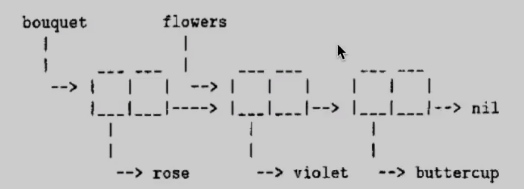]]
而cons操作也是开始的位置插入了一个指针，并将该指针的第二部分指向了原有的列表。
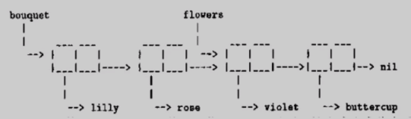]]
Yanking
找回文本
- GUN Emacs中，不论你何时使用kill从缓冲区剪切了文本，你都能通过`yank`命令将其重新找回。
- 从缓冲区中剪切的文本都被放在`kill-ring`中，所以yank命令将从kill环中适当的将内容取回插入到缓冲区中
- `yank`命令的快捷键是`C-y`
kill环总览
- kill环是一个文本字符串的列表
- `yank`命令也用于复制文本，被拷贝的文本不是从缓冲区中删除掉，而是将这部分文本的一个拷贝放到kill环中。所以yank也可以将其找回。
从kill环中找回文本的三个函数：
- `yank`函数，绑定到`C-y`
- `yank-pop`函数，绑定到`M-y`
- `rotate-yank-pointer`函数
这些函数通过一个`kill-ring-yank-pointer`变量指向kill环。
kill-ring-yank-pointer变量
- kill-ring变量存储的是全部被剪切掉的文本列表，是一个指针；
- kill-ring-yank-pointer变量存储的是一个指向列表的指针，指向kill环的某一部分，指向的这部分的第一个元素将被插入到缓冲区中
Loops & Recursion
循环和递归
Regexp Search
Counting Words
Words in a defun
Readying a Graph
Emacs Initialization
Debugging
Conclusion
the-the
Kill Ring
Full Graph
Free Software and Free Manuals
GNU Free Documentation License
TMP
代码缩进
indent-region 可以帮我们重新缩进所选区域的代码，但是每一次都选中十分麻烦。使用 下面的代码可以一次重新缩进全部缓冲区的代码。（之后也会介绍更好用的，代码格式美化 的插件）
(defun indent-buffer() (interactive) (indent-region (point-min) (point-max))) (defun indent-region-or-buffer() (interactive) (save-excursion (if (region-active-p) (progn (indent-region (region-beginning) (region-end)) (message "Indent selected region.")) (progn (indent-buffer) (message "Indent buffer.")))))
然后再将其用下面的代码将其绑定为快捷键，第一个 `\` 用于将紧跟的 `\` 进行逃脱（escape）。
;; 代码缩进 (global-set-key (kbd "C-M-\\") 'indent-region-or-buffer)
插件-显示缩进线
;; Cursor & Current Line (use-package cursor-line-settings :ensure nil :init ;; blink the cursor (blink-cursor-mode 1) (global-hl-line-mode 1) ;; 高亮当前行，使用浅灰色背景条 (set-face-background hl-line-face "#F2F2F2") ;; 高亮当前行，使用下划线 ;; (set-face-underline-p 'highlight t) )
补充
整行
(defun xt3/sel-cur-line () (interactive) (set-mark (line-end-position)) (beginning-of-line)) (bind-key "C-x M-h" #'xt3/sel-cur-line)
插件-expand-region 选中一个区域
使用同样的方法将 expand-region 添加至我们的插件列表中，重启 Emacs 安装插件。
- expand-region https://github.com/magnars/expand-region.el/ er/expand-region ==
C-=
再为其绑定一个快捷键，
;;expand-region 方便选中一个区域 (global-set-key (kbd "C-=") 'er/expand-region)
use-package
;; 方便选中一个区域 (use-package expand-region :ensure t :config (global-set-key (kbd "C-=") 'er/expand-region))
使用这个插件可以使我们更方便的选中一个区域。（更多使用方法和文档可以在这里找到）
插件-标记环列表
https://github.com/emacs-helm/helm
- M-x helm-mark-all-rings | helm-[global]-mark-ring
补全插件
- company 补全
- auto-complete 补全（推荐company）
- yasnippet （模板）
- yas-insert-snippet == 绑定到s-i
删除拓展
插件-yank回溯 ivy
使用M-y选择要回溯的内容
(use-package counsel :bind (("M-y" . counsel-yank-pop) :map ivy-minibuffer-map ("M-y" . ivy-next-line)))
插件-helm Kill Ring剪切环:
功能与 ivy类似
helm-show-kill-ring == M-y
插件-whole-line-or-region*
- whole-line-or-region : 区域激活 则应用到区域 否则 应用到当前行
(use-package whole-line-or-region :diminish whole-line-or-region-mode :config (whole-line-or-region-mode t) (make-variable-buffer-local 'whole-line-or-region-mode))
插件-hungry-delete 多空格删除*
- hungry-delete 多空格删除 https://github.com/nflath/hungry-delete
- 效果不是很友好
(defvar mypackages '( ;; --- Better Editor --- hungry-delete ) "Default packages") (require 'hungry-delete) (global-hungry-delete-mode)
use-package
(use-package hungry-delete :ensure t :config (global-hungry-delete-mode))
插件-move-dup复制移动行区域*
Copy Kill Move(Kill-[Goto]-Paste)
- move-dup (行|区域)
md/move-lines-[up|down] md/duplicate-[up|down]
插件-Avy复制移动行区域
Avy https://github.com/abo-abo/avy
avy-copy-[line|region] (单行|行范围) avy-kill-[line|region] avy-move-[line|region] (单行|区域)
插件-drag-stuff 区域上下移动
在 VSCode 或 Jetbrains 家族的编辑器中，上下移动行/块是非常容易的，但原生的 Emacs 没有提供这样的功能。可通过插件`drag-stuff`来辅助实现。与avy-move-region功能类似
;; 行/区域上下移动 (use-package drag-stuff :bind (("<M-up>". drag-stuff-up) ("<M-down>" . drag-stuff-down)))
搜索
拓展
- ivy-counsel-swiper 三剑客插件
- C-s ..
- Paste : C-y | M-y(Kill Ring)
- Next|Previous : C-(n|p)
- C-s ..
- avy 快速搜索定位插件
- ag 搜索
- multiple-cursors多游标插件
- iedit 同时编辑插件
ag 搜索
(use-package ag :ensure t)
搜索文件 没有ag时，`find-dired`回车指定参数`-name \*org`
`ag-project` 搜索
安装好 ag 后我们就可以安装 helm-ag 插件了。（它的 GitHub 仓库地址在这里）在安装 完成后可以为其设置快捷键，
(global-set-key (kbd "C-c p s") 'helm-do-ag-project-root)
使用这个插件我们同样可以在缓冲区对搜索到的结果进行直接的修改，这样就可以做到快速 的搜索与替换。
#匹配字符示例 # 搜索包含org gtd 的字符的文件，并且过滤其中的abc行 pattern: org gtd !abc
[images/image-20210622174126541.png] 经 `C-c C-e`打开buffer可以批量编辑文件
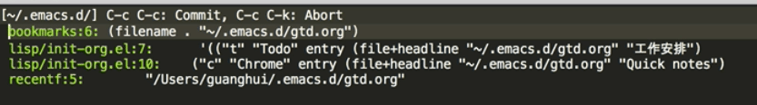]]
或者使用`counsel-ag`
iedit 同时编辑插件
iedit 是一个可以同时编辑多个区域的插件，它类似 Sublime Text 中的多光标编辑。它的 GitHub 仓库在这里。
我们将其绑定快捷键以便更快捷的使用这个模式（ `C-;` 为默认快捷键），
;; config for iedit mode (global-set-key (kbd "M-s e") 'iedit-mode)
use-package
;; 同时编辑 (use-package iedit :ensure t)
我们可以使用 Customized-group 来更改其高亮的背景色，将 `highlight` 改为 `region` 。
参考
- Emacs高手修炼手册:v1.0 v2.0
- 专业 Emacs 入门教程 2
- 21 天学会 Emacs
- 在新笔记本上配置 Emacs | Tsoding Daily